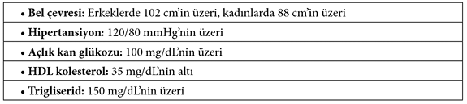
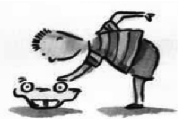

Geleneksel beslenme
Yıllardır ben işin mutfak tarafındayım. Şimdi sizin gibi bu işin bilim tarafında olan biriyle bu söyleşiyi yapmaktan çok büyük keyif duyuyorum. İsterseniz önce işin tarihi ile başlayalım. Atalarımızın ve onların atalarının daha az hasta olduklarını, kemik ve dişlerinin daha sağlam olduğunu, bizden daha insancıl ve daha mutlu olduklarını biliyoruz. Bütün koşullar o zaman farklıydı ama özellikle yiyip içtikleri şimdikinden çok farklıydı. Nasıl besleniyordu atalarımız? Bizden 3-4 nesil öncesinde bile insanlar daha sağlamdı. Birkaç nesil içinde genetik yapı değişmeyeceğine göre, ne oldu da hastalıklar bu kadar arttı?
Eski güzel günler bir taraftan güzel ama bir taraftan da hayat çok güç. İnsanoğlunun hayatı eskiden çok güçmüş, şimdi bedensel açıdan daha rahat ama ruhsal açıdan öyle değil.
Besin ihtiyaçlarımız milyonlarca yıllık bir evrim sonucu şekillenmiş. Bilindiği gibi vücudumuzun bütün fonksiyonları 30 bin’e yakın gen tarafından denetleniyor. Bugünkü genlerimizin yüzde 99.99’u 40 bin yıl önceki atalarımızın (homo sapien) genleri gibi çalışmakta1. Yani genlerimiz eski, 40 bin yıl önceki gibi, ama onları etkileyen çevresel faktörler yeni ve çok değişti.
1 Eaton SB and Konner M, “Paleolithic Nutrition: A consideration of its nature and current implications,” New Eng J Med, 1983;312:283-9.
Yontma Taş Devri 5-10 bin yıl önce bitti. O zamandan bu zamana kadar genlerimizde çok az değişiklik olmasına rağmen çevresel şartlar ve özellikle de yiyeceklerimiz çok büyük oranda değişti. Özellikle son 50-100 yıl içinde doğal olmayan, işlenmiş ve katkı konulmuş gıdalar aşırı şekilde kullanılmaya başlandı. Buna bağlı olarak taze sebze meyve ve tencere yemeklerinin tüketiminde de belirgin bir azalma oldu (Tablo 1). Geleneksel diyet ile modern diyet arasındaki temel farklar
Eğer genlerimizin baş edemeyeceği doğal olmayan yiyeceklerle beslenirsek hücrelerimiz yıpranıyor ve normal işlevlerini göremiyorlar. Sonuçta genler ve yiyecekler arasındaki bu evrimsel uyumsuzluk hali şişmanlık, diyabet, koroner kalp hastalığı, hipertansiyon, felç, depresyon, hiperaktivite, otizm, reflü, ülser, astım, romatizma, kronik yorgunluk sendromu, kanser ve osteoporoz gibi son yıllarda müthiş artış gösteren çok sayıda kronik-dejeneratif hastalığa neden oluyor2.
2 O’Keeffe JH, Cordain L. Cardiovascular Disease Resulting From a Diet and Lifestyle at Odds With Our Paleolithic Genome: How to Become a 21st-Century Hunter-Gatherer. Mayo Clin Proc. 2004;79:101-108
Bunun aksine eğer genlerimizi iyi besler, onların alışkın olduğu gıdaları verirsek, yani atalarımıza benzer şekilde yersek, genlerimiz görevlerini iyi yapıyorlar. Sonuçta yaşam süremiz ve kalitesi artıyor ve hastalıklardan korunuyoruz.3
3 Eaton SB, Eaton SB III, Konner MJ et al., “An evolutionary perspective enhances understanding of human nutritional requirements,” J Nutrition, 1996;126:1732-40.
Evrimsel paradigmayı başlangıç noktası olarak alırsak günümüzdeki optimal besin ihtiyaçlarımızın neler olduğunu daha iyi anlayabiliriz. Dünya tarihini incelediğimizde ilk hücreli canlıların 3.5 milyar yıl önce denizlerde belirdiğini ve 350 milyon yıl önce omurgalıların karaya çıktığını görürüz. 4.5 milyon yıl önceki ilk insansıların böcek ağırlıklı beslendiğini biliyoruz. 2.2 milyon yıl önce ilk gerçek insan et ağırlıklı olarak beslenmekteydi ve bunun yanında taze sebze-meyve ve kabuklu yemişler yemekteydi. 10 bin yıl önce Mezopotamya’da tarım devrimi ile yontma taş devri bitti; et ve sebze-meyve ağırlıklı diyet büyük ölçüde terk edildi.4
4 Milton, K. Diet and primate evolution. Sci Amer 1993; 269: 86-93.
Göçebeliği bitirip yerleşik hayata geçişi sağlayan tarım devriminin insan nüfusunun artmasına ve medeniyetlerin ilerlemesine büyük katkısı oldu. Yeterli besin bulamamaya bağlı açlıktan ölümler azaldı fakat bu dönemde yapılan tahıl ağırlıklı beslenme insanların boylarını ve yaşam sürelerini belirgin bir şekilde kısalttı. Çocuk ölümleri, enfeksiyon hastalıkları ve çeşitli kronik hastalıklarda artışlar oldu.
Tabii en büyük darbe 19. yüzyılda gerçekleşen Sanayi Devrimi’nden sonra oldu. Diyete büyük ölçüde rafine gıdalar (beyaz un ve rafine şeker) girmeye başladı. Bu devirde de yiyeceklere ulaşım daha kolay ve ucuz olmasına karşın özellikle artan enfeksiyon hastalıkları nedeni ile yaşam süresinde belirgin bir uzama sağlanamadı.
20. yüzyılın ikinci yarısından itibaren enfeksiyon hastalıklarının kontrol altına alınması (temiz su, altyapı hizmetleri) ve çocuk ölümlerinin büyük ölçüde azaltılması ile birlikte yaşam süresi uzadı. Fakat bu dönemde diyette doğal olmayan, işlenmiş ve katkı konulmuş gıdalar aşırı şekilde kullanılmaya başlandı. Bunun sonucunda kronik hastalıklarda müthiş bir patlama oldu. Yani “sıcak” (enfeksiyöz) hastalıklar azalırken “soğuk” (enfeksiyöz olmayan kronik) hastalıklar arttı.
Son yüzyılda diyetimizde meydana gelen en önemli değişiklikleri şöyle özetleyebiliriz:
• Rafine şeker ve beyaz un tüketiminin artması
• Taze sebze-meyve (vitamin-mineral) ve probiyotiklerden zengin gıdaların tüketiminin azalması
• Omega-3 tüketiminin azalması, omega-6 tüketiminin aşırı artması
• Katkı maddeleri, toksinler, çevre kirliliği
• Yeterli güneş ışığının alınmaması (D vitamini)
• Yeterli hareket etmeme
Sizin “beslenmenin başucu kitabı” dediğiniz bir kitap var: 1930’lu yıllarda Weston Price’ın yazdığı “Beslenme ve Fiziksel Yozlaşma”. Bu kitap beslenmeyle sağlık arasındaki birebir ilişkiyi çok güzel gösteriyor, değil mi?
Evet muhteşem bir bilim adamı Dr. Weston Price. Bundan 70-80 yıl önce beslenme ile fiziksel ve ruhsal yozlaşma arasındaki ilişkiyi ortaya koymuş. Ama ne zamanında, ne de günümüzde değeri tam olarak anlaşılabilmiş değil. Yine de bazı beslenme otoritelerince yazdığı ‘Beslenme ve Fiziksel Yozlaşma’ (orijinali Nutrition and Physical Degeneration) isimli kitap5 beslenme biliminin kitab-ı mukaddes’i kabul ediliyor. Dr. Weston Price yıllar süren araştırma gezilerinde geleneksel Kanada ve Alaska Eskimoları, Alaska, Kanada, Amazon ve Florida Kızılderilileri, Avusturyalı Aborjinler, Yeni Zelandalı Maoriler, izole İsviçre dağ köylüleri, başta Masailer olmak üzere Afrika yerlileri ve Okyanusya yerlileri gibi onlarca etnik topluluğun yediklerini incelemiş. Sonunda basit ve basit olduğu kadar da şaşırtıcı şu sonuca ulaşmış:
5 Price WA. Nutrition and physical degeneration, New York, Paul B. Hoeber, Inc., 1939
Doğal, işlenmemiş, geleneksel yiyeceklerle beslenen topluluklarda insanların sağlıkları çok mükemmelken; kendi geleneksel gıdaları yerine Batılıların rafine edilmiş gıdalarını yiyenler hızla fiziksel ve ruhsal dejenerasyona maruz kalıyor. Dr. Price çektiği binlerce kıyaslamalı fotoğrafla mevcut durumu belgeledi ve bu fotoğraflardan bir bölümünü meşhur kitabına koydu.
Dr. Price, incelediği topluluklar arasında coğrafi koşullara, iklime, alışkanlıklara bağlı olarak, “geleneksel beslenme”nin çok farklı şekilleri olabildiğini görmüş. Mesela İsviçre’de, çevredeki diğer yerleşim yerlerinden izole edilmiş, ulaşımı zor bir vadide yaşayanların temel besini çavdar ekmeği, peynir ve tereyağıymış. Afrika’da çobanlıkla uğraşan Masai kabilesininse, günde 2 litreye varan süt içtiklerini, bunun yanı sıra kan ve et tükettiklerini gözlemlemiş. Eskimolar ise, neredeyse sadece balık ve balık yumurtası ile besleniyorlarmış. Bütün bu farklı beslenme biçimlerine ve modern tıbbi imkânların olmamasına rağmen hepsinin çok sağlıklı olduğunu görmüş Dr. Price.
Geleneksel hayatından kopmuş, kasabalara veya şehirlere taşınmış veya başka bir nedenle “beyaz adamın yiyecekleriyle tanışmış” olan insanlar geleneksel beslenmesinden taviz verir olmuş. Sonuçta sağlıkları bozulmaya başlamış ve çeşitli illetlere maruz kalmışlar.
Şeker, mısır şurubu, tatlandırıcılar
Siz aşırı şeker tüketimini son yıllarda müthiş artış gösteren birçok kronik hastalığın ana nedeni olarak görüyorsunuz. Eskiden fazla şeker tüketilmez miydi?
Şeker pancarından şeker üretilmesine iki yüzyıl önceki “endüstri devrimi” ile başlandı. Daha önce sadece şeker kamışından elde edilen ve ancak zenginlerin sofrasında olan şeker, böylece gelir düzeyi çok yüksek olmayanların da kolay satın alabileceği bir ürün haline geldi.6
6 en.wikipedia.org/wiki/Franz_Carl_Achard
Sonuçta yağ ve şeker tüketimi çılgıncasına arttı. Mesela İngiltere’de 1750’lerde 2,5-3 kg/yıl olan kişi başı şeker tüketimi, 1850’lerde 11 kg/yıl, 1950’lerde 54 kg/yıl, günümüzde ise 75 kg/yıl’a yükseldi.7
7 Murray CJL, Lopez AD. Alternative projections of mortality and disability by cause 1990-2020: Global Burden of Disease Study. Lancet 1997; 349: 1498-1504
ABD’de 19. yüzyılın sonlarına doğru yıllık kişi başı şeker tüketimi 2,3 kg düzeyinde iken bugün 75 kg’a yükseldi.8
8 An overview of chronic diseases of lifestyle. South African Medical Research Council http://www.mrc.ac.za/chronic/cdloverview.pdf
Özellikle İkinci Dünya Savaşı’ndan sonra gelişmiş ülkelerde bir yandan insanların alım gücü artarken, diğer taraftan gıda maddesi fiyatları düştü. Bunun sonucunda rafine şeker ve mısır şurubu gibi tatlandırıcılar meşrubat, bisküvi, pasta, kek ve diğer hazır gıdalarla çok miktarda tüketilmeye başlandı.
1970-2000 yılları arasında ABD vatandaşları önceki yıllara oranla yılda 100 litre daha fazla şekerli meşrubat, 15 kg daha fazla tatlandırıcı madde ve 30 kg daha fazla unlu mamul tükettiler. ABD’de son 35 yılda früktozdan zengin mısır şurubu tüketimi kişi başına yılda 200 gr’dan 34 kg’a yükseldi.9
9 http://www.corn.org/International%20Sugar%20Journal%20--%20Audrae.pdf
Osmanlı döneminde Türkiye’de çay şekeri tüketimi son derece azdı. Cumhuriyet’in ilk yıllarında şeker fabrikalarının açılması o kadar önemli bir olaydı ki, coğrafya kitaplarına bile geçti. 50’li-60’lı yıllarda bile şeker o kadar kıymetliydi ki misafirliğe gidildiğinde hediye olarak 1-2 kg toz şeker götürülürdü. Günümüzde ise tam bir unlu-şekerli gıda yeme çılgınlığı yaşanıyor.
Uzun zamandır ketçap, toz kahve kreması, bisküvi, kola, gazoz, şekerleme, meyve suyu, hazır çorba, çikolata, gofret, puding, hazır kek, vb. birçok yiyeceğin etiketinde içinde mısır şurubu olduğu yazıyor. Peki gıda sanayicileri niye bildiğimiz çay şekeri yerine mısır şurubunu tercih ediyorlar?
Ucuz da ondan… Mısırdan yüksek früktoz içerikli mısır şurubu yapımına 1970’lerde başladı. 1980’lerde yılda 3 milyon ton olan üretim, günümüzde 20-30 milyon tonun üzerine çıktı.10
10 http://www.westonaprice.org/motherlinda/cornsyrup.html
Nişasta glükoz moleküllerinden oluşan birleşik bir şeker. Mısır şurubu, mısır nişastasının işlemden geçirilmesiyle elde ediliyor. Nişasta parçalanarak glükoza, ardından glükoz früktoza dönüştürülüyor. Bazı ürün paketlerinde mısır şurubuna “nişasta bazlı sıvı şeker” veya “NBSŞ” dendiği de oluyor.
Mısır şurubu, şeker pancarından elde edilen şekerden daha tatlı, üstelik daha ucuz ve taşınması daha kolay. Bu da gıda üreticileri için daha düşük maliyet ve daha yüksek kâr anlamına geliyor.
Ülkemizde de son yıllarda mısır şurubu üreten fabrikalar kurulmaya başlandı. 2001 yılında çıkartılan Şeker Yasası ile mısır şurubu üretim kotası yüzde 10 olarak belirlendi, fakat daha sonra Bakanlar Kurulu kararıyla yüzde 15’e yükseltildi. Bu arada hatırlatalım; kota ABD’de yüzde 2, Almanya’da binde 8.9, Fransa da ise binde 4.9!11
11 Prof. Dr. Kenan Demirkol ve Prof. Dr. Mübecel Demirkol. Daha az un ve şeker yiyin daha az hasta olun
http://beslenmebulteni.com/bes/index.php?option=com_content&view=article&id=197
Peki hem tatlı, hem daha ucuz; mısır şurubu sizi niye bu kadar rahatsız ediyor?
Çay şekeri olan sakaroz (sükroz) bir molekül glükoz ve bir molekül früktozdan oluşuyor, yani glükoz/früktoz oranı %50/%50. Mısır şurubunda ise bu oran %80/%20 ile früktoz lehine. Früktoz, glükoza göre daha güçlü bir tatlandırıcı. Bu nedenle daha az kalori ile aynı miktarda tatlandırıcı etki sağlanarak kaloriden tasarruf edilebileceği düşünülmüş. Hatta bir dönem uzmanlar tarafından diyabet ve şişmanlık tedavisinde kullanılmış. Eskisi kadar olmasa bile hâlâ kullanılıyor.
İnce bağırsaktan emilerek karaciğere gelen früktoz metabolize edilmek için insüline gerek duymuyor. Sanki bu bir avantajmış gibi görünüyor. Fakat değişik metabolik süreçler için çok az früktoz kullanılabiliyor. Geri kalan tüm früktoz ise trigliseridlere (kan yağları) dönüşüyor. Früktoz tüm şekerler arasında en hızlı yağa dönüşendir. Fazla früktoz tüketiminin hayvan modellerinde diyabet, hipertrigliseridemi, koroner kalp hastalığı, karaciğer yağlanması ve hipertansiyona yol açtığı gösterilmiş.12
12 Elliott SS, Keim NL, Stern JS, Teff J, Havel PJ. Fructose, weight gain, and the insulin resistance syndrome. Am J Clin Nutr 2002; 76:911-22
Yani, anlayacağınız son 30-40 yıldır çay şekeri yerine mısır şurubunun kullanılması şişmanlığın ve şişmanlıkla ilgili hastalıkların bir salgın haline dönüşmesini kolaylaştırdı.
Kimyasal tatlandırıcılardan aspartam ve sakarin, market raflarındaki birçok üründe şeker yerine kullanılıyor. İlk aklıma gelenler diyet kola, düşük kalorili yoğurt, şekersiz sakız, aromalı süt, meyve suyu ve diğer içecekler, tatlı, çerez, şekerleme, boğaz pastili, kakao, kuru meyve, dondurma, soslar, hardal, çorba, reçel, jöle, marmelat, meyve konservesi, balık, kahvaltılık tahıl, fırıncılık ürünleri, kilo verme amaçlı gıdalar, diyet gıdalar, gıda takviyeleri, bira, elma ve armut şarabı, baklava, reçel, helva, sütlü tatlılar. Neden kullanılıyor bu kimyasal tatlandırıcılar?
Son yıllarda artan rekabetin de etkisiyle tatlı ve pasta sektörü aşırı derecede tatlandırıcı kullanmaya başladı. Dünyada yaklaşık 6 bin hazır yiyeceğin içinde aspartam bulunmakta. Yaklaşık 4 bin hazır yiyecekte de diğer tatlandırıcılar kullanılmakta.
Türkiye’de aspartamın yüzde 95’i artık sağlık değil gıda sektöründe kullanılıyor. 2008 yılı itibarıyla son sekiz yılda kimyasal tatlandırıcıların ithalatı 13 kattan fazla arttı.13 Çünkü tatlandırıcılar şekerden yüzlerce kat daha tatlı. Mesela aspartam şekerden 200 kat, asesülfam K 200 kat, sakarin 300 kat, sukraloz 600 kat, taumatin 2 bin 500 kat, neotam 13 bin kat daha fazla tat veriyor. Ortalama olarak tatlandırıcının 1 liralık miktarı 10 liralık şekerin işini görüyor. Bir bavul aspartam bir kamyon şekerin tadına eşit tat veriyor. Bazı baklavacılarda baklavaların normalin yarısı fiyatta satılmasının temel nedeni bu.
Türk Gıda Kodeksi, hangi üründe ne kadar yapay tatlandırıcı kullanılacağını belirlemiş durumda. Örneğin 1 kilo baklavada en çok 1 gram kullanılabilir. Ancak market raflarında satılan birçok ürünün ‘içindekiler’ kısmında yapay tatlandırıcı kullanıldığı ifade edilse de kaç miligram kullanıldığı yazmıyor. Bilinen markaların diyet ürünlerinin neredeyse hiçbirinde kullanılan tatlandırıcı oranı yazmıyor.
Birçok hekim şişman ve diyabetli hastalarına aspartam kullanmalarını öneriyor. Gıdada maliyeti de çok düşürüyor. Peki siz aspartama niye bu kadar karşısınız?
Aspartamın içinde yüzde 40 oranında sinirsel bir uyarıcı olan aspartik asit, yüzde 50 oranında fazla alındığında beyin için zararlı fenilalanin ve yüzde 10 oranında metil alkol var. Evet, yanlış söylemedim metil alkol yani ispirto var. Ki ispirto birçok zararları yanında kanserojen formaldehite de dönüşüyor.
Aspartamın zararları saymakla bitmiyor (Tablo 2). Bunlardan en ilginci, sıfır kalorisi olan aspartamın şişmanlığa yol açması. Size garip gelebilir ama gerçek böyle. Aspartamlı bir gıdayı alır almaz beyninize şeker geldi emri geliyor ve o da insülin salgılanmasına yol açıyor. Ortamda şeker olmadığı için insulin kanda açlık şekerini düşürüyor. Doğal olarak karnınız acıkıyor ve daha fazla yiyorsunuz.
Tablo 2: Aspartam’ın zararları

Bazı doktorlar belirli bir dozu geçmedikten sonra aspartamın zararsız olduğunu söylemekteler. Bunlara dayanak olarak hayvanlar üzerinde yapılmış bazı çalışmaları gösteriyorlar. Nedense, ilaç firmalarının sponsor olduğu araştırmaların yüzde 100’ünde aspartamın zararlı olmadığı sonucu alınıyor (Tablo 3). Bağımsız araştırmaların yüzde 92’si ise aspartam zararlı diyor.14 İşte bilim dünyasının karanlık yüzü!
Tablo 3: Aspartam’ın zararlı olup olmadığına dair yapılan araştırmalar
İsterseniz aspartam kanser ilişkisini irdeleyen araştırmaları mercek altına alalım. Bunlardan en ünlüsünde farelere 4 haftalık iken aspartam vermişler. 104 hafta süren bu çalışmada aspartam kansere neden olmuyor sonucu çıkmış15 ve FDA bu verileri hemen kabul etmiş. Bu çalışmanın verileri şöyle(Tablo 4):
15 Ishii H, Koshimizu T, Usami S, Fujimoto T. Toxicity of aspartame and its diketopiperazine for Wistar rats by dietary administration for 104 weeks. Toxicology 1981;21:91-94.
Tablo 4: Aspartam ve beyin tümörü (104 haftalık çalışma)
Araştırma sonuçları aspartam kullananlarda daha fazla kanser olduğunu gösteriyor ama, bu kadar küçük grupla yapılan bu çalışmanın sonuçları istatistiksel olarak çok anlamlı değil. Bunun üzerine araştırıcılar bir Ali-Cengiz oyunu yapıyorlar ve kanser ile aspartam arasında bir ilişki olmadığını söylüyorlar. Halbuki “Bu araştırmaya göre aspartam kansere sebep olur denilemeyeceği gibi kansere sebep olmaz da denemez” demeleri gerekiyordu. Anlayacağınız tam bir bilimsel tahrifat!
Beş yıl önce İtalya’da Ramazzini Kanser Enstitüsü’nde 1600 fare üzerinde yapılan araştırmada aspartamın insanların kullandıklarına çok yakın dozlarında lösemi ve lenfomalara neden olduğu gösterildi.16 Bu çalışmada hem fare sayısı çok fazla, hem de çalışma süresi iki değil üç yıldı (normal fare ömrüne yakın). Ama bu çalışma ne FDA’nın ne de birçok onkoloğun nedense ilgisini çekmedi! Herhalde kendileri de aspartam kullandıklarından, bu müthiş çalışmayı yok hükmünde saydılar.
16 Soffritti M, Belpoggi F, Esposti DD, Lambertini L. Aspartame induces lymphomas and leukaemias in rats. Eur J Oncol. 2005; 10 (2):107-16
Tam ekmek
Taş Devri diyetine göre un ve şekerden uzak durun diyorsunuz. Beyaz un bize anlaşılır geliyor ama kepeği içindeki köy unu, bulgur gibi yiyecekler de mi kısıtlanmalı? Buğday çok besleyici ve vücudumuz için çok gereklidir diye bildik biz bugüne kadar.
Fosil kayıtlarına göre insan ve insansıların en az 5 milyon yıllık bir geçmişi var. Tarım devrimi ise insanlık tarihi için oldukça yeni sayılır. Yaklaşık 10 bin yıl önce Orta Anadolu ve Mezopotamya’da başlamış. Bazı coğrafi bölgelerde bu devrim daha geç gerçekleşmiş. Hatta halen çok az da olsa dünyada tarım devriminin olmadığı coğrafyalar var.
Tahıllar göçebe hayattan yerleşik hayata geçmemizi, yani medenileşmemizi sağlamışlar. Avcı-toplayıcı insan grupları sürekli besin aradıklarından göçebe olarak yaşamak zorundalar. İşte ancak tahıl gibi aylarca saklanabilecek bir gıdanın olması ile yerleşik hayat başlamış. Ben ne kadar kötülersem kötüleyeyim, tahıllar bugün dünyanın vazgeçilmez bir beslenme kaynağı durumuna gelmiş. Bazılarına göre bu durum, kitlesel açlığın önüne geçebilmesi ve iş imkânları sağlaması nedeniyle kaçınılmaz ölçüde gerekli.
Fakat bu dönüşüm birçok şeye mal oldu. Serkan Yimsel dostumun dediği gibi 3 milyon yıldır daha çok et ve yaklaşık 200 bin çeşit sebze ve meyve ile beslenen bir toplumun, 10 bin yıl gibi evrim için kısa bir sürede tahılların baskın olduğu bir diyete geçmesi birçok kronik hastalığın gelişmesine neden oldu. Bir bilim adamı esprili bir yorumla söyle ifade etmiş: “Günümüz insanı tahıllara ve tohumlara o kadar bağımlı hale gelmiştir ki kanaryalardan hiçbir farkı kalmamıştır’’.
Son 100 yıl içinde tahılların rafine edilmesi (beyaz un) ve rafine şekerlerin (çay şekeri, früktoz, mısır şurubu) diyete katılması kanser, enfarktüs, kemik erimesi gibi onlarca kronik hastalığı salgın ölçüsünde artırdı.
Ayrıca insan vücudu, sindirim sistemi, bir kanarya gibi tahıl tüketmeye elverişli bir yapıda değil. Çünkü kanaryalar milyonlarca yıldır tahıl tüketiyorlar ve genetik yapıları buna göre evrimleşmiş. Halbuki evrimde 10 bin yıl nerdeyse hiçbir şey ifade etmez. Bu kısa süre içinde 30 bin genin ancak birkaç tanesi yeni duruma adapte olabilir. İnsan DNA’sının binde bir oranında değişebilmesi için 100 bin yıl kadar bir süre geçmesi gerektiğini söyleyen bilim adamlarına göre bugünün insanının, 50 bin yıl önceki insandan fizyolojik olarak pek bir farkı yok.
Hücresel boyutta en uygun sindirilen ve enerjiye dönüştürülebilen besinler, insanlık evriminde en uzun süre tüketilen besinlerdir. Bu arada süt, tahıl ve baklagillerin evrimsel açıdan yeni gıdalar olduğunu, son onbin yıldır tüketildiğini unutmamak gerek.
Bazı bilim adamları problemin aslında tahılların kendisinde değil, onların piyasaya sunulmadan önce işlenmelerine bağlı olduğunu söylemekteler. Günümüzde hâlâ varlığını sürdüren, teknolojinin henüz erişmediği bazı kavimlerin diyetlerindeki yiyeceklerin çoğunluğunu et, taze sebze ve meyveler oluşturmakta. Eğer tahıllar kullanılıyor ise de işlenmemiş veya rafine edilmemiş tahılların tercih edildiğini biliyoruz.
Benim de dâhil olduğum bir grup bilim adamı rafine tahıl (beyaz un) ve şekerin insan sağlığının en büyük düşmanı olduğunu öne sürmekte. Tabii bunun çeşitli nedenleri var. Rafinasyon işlemleri sırasında buğdayın lif, vitaminler ve mineraller açısından en zengin olan tohum özü ve kepeği ayrıştırılmakta; sadece endosperm (nişastalı kısım) kullanılmakta.
Tohum özü (rüşeym) vitamin ve mineral bakımından buğdayın en zengin kısmı. Yapısında E ve B vitaminleri, demir ve diğer önemli mineraller, uzun zincirli çoklu doymamış yağlar, protein ve lifler bulunmakta. Buğday kepeği ise buğdayın koruyucu dış kalkanı. Lif, vitamin ve mineral (özellikle demir, çinko) açısından oldukça zengin.
Endosperm buğdayın ağırlıkça yüzde 80’ini oluşturur. Protein ve karbonhidratların büyük bir kısmı bu bölümde. Lif, vitamin ve mineral miktarı çok düşük, pratikte yok kabul edilebilir.
Bilindiği gibi lifler, bağırsak hareketlerimizi düzenleyen çok önemli besin öğeleri. Çoğunlukla beyaz ekmek, ultra-rafine un ve tatlı çöreklerle beslenen kişilerde vitamin mineral eksikliğinin, bazı bağırsak hastalıklarının daha fazla görülmesinin sebebi budur.
Tahıllara yapılan işlemlerden bir diğeri öğütme. Rafinasyon işlemleri sonunda elde edilen endosperm ya da nişasta, büyük çelik değirmenler yardımı ile 3-4 kez öğütülerek beyaz un haline getiriliyor. Bu işlem sonucunda parçacıklar küçüldüğünden emilme hızı da artıyor. Yani beyaz un rafine şeker gibi hızlı emiliyor.
Yağlar
Hemen hemen bütün beslenme uzmanları yağları yasaklıyor. Et, süt, yoğurt ve peynirin yağsızını alın; tereyağı yemeyin diyorlar. Oysa Ortaçağ Avrupa’sında fakir insanların en büyük hayali “biraz yağ yiyebilmek”miş. Birçok ilkel kabile çocuk doğurma çağına gelen genç kızları yağlı et ile beslemiş. Kışın grip olan yağlı tavuk suyu çorbası içermiş. Çocukların pembe yanaklı ve sağlıklı olmasına süt kaymağının yardım ettiği bilinirmiş. Hatta Sally Fallon’un “Nourishing Traditions” kitabında çok güzel bir şekilde yer alıyor bu bilgi:
Rosicky ailesi, hayatı pek aceleye getirmez, yiyip içtiğinden kısmaz ve pek fazla birikim yapmazdı. Komşularıysa hem topraklarını, hem de sürüsünü hızla genişletmekteydi. Bir gün, krema şirketinden bir adam, Rosicky’leri sütlerinin kaymağını satmaları için ikna etmeye geldi. Komşuları Fassler ailesinin geçen yıl kendisine ne kadar çok kaymak sattığını anlattı. “Evet” dedi Mary, “bir de şu Fassler çocuklarına bakın. Soluk yüzlü, çelimsiz, küçücük şeyler, kaymağı alınmış süt gibiler. Bankaya biraz para yatıracağıma çocuklarımın yüzlerine renk vermeyi tercih ederim.” (Willa Cather, Neighbor Rosicky eserinden)
Kaymak, krema, tereyağı, sadeyağ, kuyruk yağı, etin yağı eskiden bu kadar sevilirken ve faydaları bu kadar bilinirken, şimdi genç yaşlı herkese “yağ yeme” denmesi cinayet değil mi? Bu yağ düşmanlığında çocukların betinin benzinin solgun olması şaşırtıcı gelmiyor insana.
Haklısınız. Yağlar beslenmemizde çok önemli. Sadece yüksek bir enerji kaynağı değiller; birçok hormon, hormon benzeri yapılar ve hücre zarlarının yapısında bulunuyorlar. Mesela erkeklik hormonu testosteron, kadınlık hormonu östrojen, D vitamini, safra asitleri kolesterol olmadan sentezlenemiyorlar. Birçok önemli vitamin (A, D, E, K) diyette yağ olmadan bağırsaktan emilemiyor. Bu nedenle yağların diyetimizden çıkartılması ya da kısıtlanması, vücut sistemlerinin işlevlerini olumsuz etkiliyor. Çocuklarda ise büyüme ve gelişmeyi büyük ölçüde bozuyor.
Yağların ve yağlı yiyeceklerin kolesterolümüzü yükselttiğini; bunun da damarlarımızı tıkayarak kalp krizine sebep olduğunu iddia ediyor birçok doktor. Bu iddia artık o kadar yaygınlaştı ki, sanki iki kere iki dört eder der gibi herkes bunu söylüyor. Bir de bu iddianın asılsız olduğunu, kolesterolün vücut için elzem olduğunu, kalp krizine sebep olmadığını söyleyen uzmanlar var, Bilim Üniversitesi Rektörü Prof. Dr. Canan Karatay Efendigil gibi. Siz de bu ikinci gruptasınız. Okurlar için kısaca bir özetleyelim mi, vücuttaki yağlar, kolesterol, kalp-damar hastalıkları nasıl bir ilişki içinde?
Bilim Üniversitesi Rektörü Prof. Dr. Canan Karatay Efendigil Türkiye’de ilk kez femoral arter yoluyla koroner anjiografi yapan kişi. Maalesef günümüzde birçok kardiyoloji uzmanı Efendigil gibi düşünmüyor. Onlar koroner kalp hastalığının (KKH) bir numaralı nedeninin yüksek miktarda doymuş yağ ve kolesterol tüketimi olduğunu ileri sürüyor ve düşük yağlı (dolayısıyla yüksek unlu-şekerli) diyetler öneriyorlar. Buna rağmen koroner kalp hastalıkları hızla artmaya devam ediyor. Artık otuzlu, yirmili ve hatta onlu yaşlarda bile miyokart enfarktüsü görebiliyoruz. Bize göre bu bir akıl tutulması.
Ama bu işin neden ve zaman başladığını irdelemeden konuya vakıf olmak mümkün değil. İsterseniz kolesterol-kalp hastalığı masalının kısa tarihine bir göz atalım.
1950’lerin başında Angel Keys adlı araştırıcı çeşitli ülkelerde yapılan yağ tüketim araştırmalarını bir araya getirerek doymuş yağ tüketimi arttıkça koroner kalp hastalığının da arttığı sonucuna varmış.17
17 Keys A. Atherosclerosis: a problem in new public health. Journal of Mount Sinai Hospital, 1953; 20:118-139
O çalışmaya 22 ülke dâhilmiş fakat Keys 15 ülkenin verilerini bu çalışmanın içine nedense almamış. Bundan 4 yıl sonra Yerushalmey ve Hilleboe18 diğer 15 ülkenin verilerini de ilave ederek 22 ülkenin verilerini yeniden irdelemiş. Ama her ne hikmetse KKH ile yağ tüketimi arasında bir korelasyon (ilişki) bulamamışlar. Fakat Amerikan Kalp Birliği (American Heart Association) nedense Yerushalmey ve Hilleboe’nun çalışmasına değil de, danışma kurullarının bir üyesi olan Keys’e itibar etmiş!
18 Yerushalmey J, Hilleboe HE. Fat in the diet and mortality from heart disease. A methodological note. The New York State Journal of Medicine, 1957; 57: 2343-2354
Amerikan Kalp Birliği’nin öncülüğünü yaptığı bu iddia, yani lipid-koroner kalp hastalığı teorisi 1900’lü yılların ortalarından itibaren bütün dünyada besin tüketimini önemli ölçüde değiştirdi. Türkiye de dahil olmak üzere birçok ülkenin mutfağında önemli yeri olan tereyağı, kuyruk yağı, iç yağı, sade yenilen ya da sebze yemeklerine katılan yağlı etler, tam yağlı yoğurt ve peynirler, artık yerini daha önce adını bile duymadığımız bitkisel margarinlere, soya ve kanola yağlarına, soyadan elde etilen yapay etlere, büyük şirketlerin ürettiği ve içine binbir çeşit katkı malzemesi, boya ve şeker eklenmiş, buna karşılık yağı azaltılmış “light” süt ve süt ürünlerine bıraktı.19 50’li yılların başında Türkiye’de ilk margarin fabrikası açıldı ve hatta açılışı Türkiye Cumhurbaşkanı Celal Bayar yaptı.
19 Yimsel S. Doğru Beslenmeyle İlgili Yanlış Bildiklerimiz. Hayykitap, İstanbul, 2007
Fazla doymuş yağ yiyen insanlarda koroner kalp hastalığı daha fazla mı görülüyor?
Eğer fazla doymuş yağ yiyen insanlarda koroner kalp hastalığının oluşma riski artıyor ise, o zaman bu yağları en çok tüketen topluluklarda bu hastaların çok sayıda olması gerekiyor. Nitekim bunu araştırmak için Vanderbilt Üniversitesi’nden Prof. George Mann ve arkadaşları 1960’larda bir Afrika (Kenya) çoban kabilesi olan Masaileri ziyaret ediyorlar.
Masailer lipid-koroner kalp hastalığı teorisinin ne kadar geçerli olduğunu göstermekte mükemmel bir örnekti onlar için. O zamanlar tümüyle doğal yaşayan Masailer sadece et, çiğ süt ve hayvan kanı tüketmekteydiler. Öyle ki bir günde tükettikleri hayvansal yağ miktarı yaklaşık 300 gramı geçiyordu. Yani günde en az 2700 kaloriyi yağdan alıyorlardı. (Batı beslenme normları ise yağ için 800 kaloriye kadar izin veriyor).
George Mann ve arkadaşları Masaileri görünce şaşırdılar. Karşılarında şişman, göbekli ve koroner kalp hastalıklı (KKH) yüzlerce kişi bekliyorlardı. Halbuki Masailer içinde bir tek şişman olmadığı gibi, KKH’lı da bulamamışlardı! Eforlu EKG’leri ise olimpiyat şampiyonlarından çok daha iyi çıkıyordu.
Hemen hemen aynı senelerde başka bir araştırma grubu Masailerin otopsilerini inceledi.20 Nerdeyse hiç aterom plağı (damar sertliğini gösteriyor) saptayamadılar. İşin ilginci, o kadar fazla kolesterol tüketmelerine rağmen Masailerin kan kolesterol düzeyleri Batı topluluklarına göre oldukça düşüktü.
20 Biss K, Ho KJ, Mikkelson B, Lewis L, Taylor CB. Some unique biological characteristics of the Masai of east Africa. New England Journal of Medicine, , 1971; 284 (13): 694-699.
Yine 60’lı yılların başlarında başka bir Doğu Afrika çoban kabilesi olan Samburular da araştırılmış. Üstelik Samburuların yağ tüketimi Masailerden de fazla imiş. Samburu savaşçıları o zamanlar günde 4.5-7 litre arasında yağlı süt içiyorlarmış. Otların bol ve yeşil olduğu aylarda bir günde bu miktarın iki katına çıkabiliyorlarmış. Kurak aylarda ise tüketimleri 2-3 litreye düşüyormuş. Samburular da Masailer gibi zayıfmış. Üstelik günde 400 gram yağ tüketmelerine rağmen (3600 kcal/gün), onların da kan kolesterol düzeyleri düşük olup koroner kalp hastalığı oldukça nadirmiş.21
21 Shaper, AG. Cardiovascular studies in the Samburu tribe of Northern Kenya. American Heart Journal, 63 (4); 437-442, 1962.
Somali’deki deve çobanları da çok süt tüketir; deve sütünün dışında nerdeyse bir şey yemezlermiş. Günde ortalama 6-7 litre kadar süt içiyor ve böylelikle 400-450 gram kadar yağ tüketiyorlarmış. Onların ortalama kan kolesterol düzeyleri ise 150 mg/dL seviyelerinde, yani oldukça düşükmüş.22
22 Lapiccirella V, Lapiccirella R, Abboni F, Liotta S. Enquête clinique, biologique et cardiogra-phique parmi les tribus nomades de la Somalie qui se nourissent seulement de lait. Bull Wld Health Org 1962;27: 681-697.
Aklınıza kan kolesterolü niye yükselmiyor diye gelebilir. Çünkü vücudumuzda günde 2000-2500 mg kolesterol yapılıyor. Dışardan alınan ne kadar az ise içeride yapılan o kadar fazladır. Diyet ile alınan kolesterolün kan kolesterol düzeyine hemen hemen hiçbir etkisi yok. O nedenle boşuna ağzınızın tadını bozmayın!
Tabii Masailer ya da Samburular genetik özellikleri nedeni ile bu hastalıklara maruz kalmıyor diye düşünebilirsiniz. Ama bu da doğru değil. Çünkü Day ve arkadaşlarının yaptığı bir araştırmaya göre Nairobi’ye (Kenya’nın başkenti) göç eden ve geleneksel gıdalarının yerine rafine ve daha düşük yağlı gıdalar tüketen safkan Masailerde kan kolesterol düzeyleri köyde kalanlara göre yüzde 25 yüksek çıkmış ve KKH oldukça fazla görülmüş.23
23 Day J, Carruthers M, Bailey A, Robinson D. Anthropometric, physiological and biochemical differences between urban and rural Masai. Atherosclerosis, 1976; 23: 357-361.
Benzer bir araştırma da Pukapuka ve Tokeluau isimli mercan adalarında yaşayanlar arasında yapılmış. Adalılar Yeni Zelanda’daki şehirlere göç ettiklerinde geleneksel diyetlerini terk ederek daha az doymuş yağ ve kolesterol tüketmeye başlamışlar. Fakat daha önce çok nadir olan KKH, diyabet ve diğer dejeneratif hastalıklara çok fazla yakalanmaya başlamışlar.24
24 Ostbye T, Welby TJ, Prior IAM , Salmond CE, Stokes YM. Type 2 (non-insulin-dependent) diabetes mellitus, migration and westernisation: the Tokelau Island Migrant Study. Diabetologia, 1989; 32 (8): 585-90.
Tabii ‘şehirlere göçen bu kabile mensupları daha az fiziksel aktivite yaptıkları için KKH’ya yakalanmaktadır’, diye de düşünülebilir. (Mesela Masaili çobanlar günde 30 kilometre kadar yürürler).
Tabii ki fiziksel aktivitenin sağlık üzerine olumlu bir etkisi vardır. Ama bu sandığımızdan fazla değildir. Örneğin Finlandiya’nın Kuzey Keralia yöresinde (Azize Helena kasabasında) izole olarak yaşayan çiftçilerin fiziksel aktiviteleri fazla olmasına rağmen KKH oranları oldukça yüksekmiş. Üstelik yağ tüketimleri çok az olmasına rağmen! Bilin bakalım neyi çok tüketirlermiş. Un ve şekeri!25
25 Temple NJ. Coronary heart disease - dietary lipids or refined carbohydrates? Medical Hypotheses, 1983; 10: 425-435.
Papua Yeni Gine’nin başkenti Port Moresby ve önemli şehri Goroka’da yapılan otopsiler incelendiğinde ilk koroner kalp hastalığı teşhisinin ancak 1964 yılında konulduğu saptanmış.26 Bu tarihten önceki otopsilerin hiçbirinde koroner kalp hastalığı tespit edilmemiş. 1964 yılından itibaren ülkenin kentsel yöresinde yaşayan kişilerde hastalığın hızla arttığı görülmüş.
26 Misch KA. Ischaemic heart disease in urbanized Papua New Guinea. An autopsy study. Cardiology. 1988;75(1):71-5.
Buna karşılık 1990’lı yılların başında geleneksel beslenme tarzlarını (deniz ürünleri, hindistan cevizi, meyve, kök gıdalar) hâlâ sürdüren Papua Yeni Gine’nin Kitava adasındaki insanlar felç ve koroner kalp hastalıkları bakımından incelendiğinde, hiçbir adalıda bu hastalıklara ait bir bulguya rastlanmamış.27
27 Lindeberg S, Lundh B. Apparent absence of stroke and ischaemic heart disease in a traditional Melanesian island: a clinical study in Kitava. J Intern Med. 1993;233(3):269-75.
Akdeniz diyeti için ne diyorsunuz? Batılı bilim adamlarına göre bu diyet kalp sağlığı açısından çok iyiymiş.
Batılı bilim adamları Akdeniz ülkelerinde kalp-damar rahatsızlıklarının seyrek görülmesini birkaç faktöre bağlıyorlar. “Akdeniz ülkelerinde bol zeytinyağı ve bitkisel kaynaklı besin, az doymuş yağ yeniyor, bu nedenle kalp-damar rahatsızlıkları seyrek” diye iddia ediyorlar.
Evet Akdeniz mutfağı sağlıklı ama bu iddia çok da doğru değil. Gerçi otlar ve yeşil sebzeler bol bol yenmektedir ama et, balık, sosis, tereyağı, krema ve domuz yağı da diyette sıkça tüketilmekte. Ayrıca peynir tüketimi de oldukça yüksek. Öyle ki Yunanistan’da Girit adasında bir köylü günde ortalama 250 gram kadar keçi peyniri tüketmekte (keçi peynirindeki yağın yüzde 70’i doymuş yağdır).
Bol taze sebze- meyve ve zeytinyağı yemek sağlığımız için iyidir. Fakat buradan doymuş yağdan fakir bir diyet kalp-damar hastalıklarından koruyor diyemeyiz diyorsunuz, değil mi?
Evet tam üstüne bastınız. Örneğin Fransızlar yüksek oranda doymuş yağ içeren bir Akdeniz diyeti uygularlar ama KKH’nın en düşük olduğu Güney Avrupa ülkesi orasıdır (Buna Fransız Paradoksu da deniyor). Mesela diyetlerinde tereyağı, krema, peynir, ördek yağı, vb. hayvansal yağların aşırı oranda bulunduğu Fransa’nın Gaskonya bölgesinde senede 100 bin yetişkin erkekten sadece 80’i kalp problemleri nedeniyle ölürken, bitkisel yağlar, margarin ve az yağlı ürünler tüketen Amerika Birleşik Devletleri’nde bu oran 100 binde 315.
Bazı bilim adamları Fransız paradoksunu, bu ülkede bol miktarda kırmızı şarap içilmesine bağlıyorlar. Fakat o da doğru değil. Çünkü İtalyanların şarap tüketimi de Fransızlardan aşağı kalmıyor ama onların KKH oranları çok daha yüksek. Herhalde bunun ana nedeni İtalyanların makarnayı, unlu ve şekerli gıdaları Fransızlara göre çok daha fazla tüketmeleridir.
Hayatını kolesterol çalışmalarının irdelenmesine adayan Uffe Ravnskov, “Kolesterol Masalları” adlı kitabında kalp-damar hastalıklarının beslenmeyle ilişkisini inceleyen bütün araştırmaları kısaca özetlemiştir.28 Bu kitapta 1998 yılına kadar olan süre zarfında yapılan toplam 27 araştırma, 34 hasta ve kontrol grubu, 150 binden fazla birey incelemeye alınmış.
28 Ravnskov, Uffe. The Cholesterol Myths: Exposing the Fallacy that Saturated Fat and Cholesterol Cause Heart Disease, New Trends Publishings Inc, 2000
Bu kalp hastası 34 gruptan sadece 3 grup, kontrol grubundakilere göre daha fazla hayvansal yağ ile beslenmiş. 1 grup daha az hayvansal yağ tüketmiş. Geri kalan 30 grupta kalp hastalığına yakalanan bireylerle sağlıklı bireyler arasında diyetlerindeki hayvansal yağlar yönünden hiçbir fark bulunamamış.
Doymuş yağların tüketimi ile kalp damar hastalıkları arasındaki ilişkiyi çürüten diğer bir gerçek de şu. 1900’lü yılların ortalarına kadar Batılı devletlerde tereyağı, kuyruk yağı, domuz yağı, hindistan cevizi yağı gibi doymuş yağ oranı yüksek yağlar sıklıkla tüketilmekte idi. Ancak bu dönemlerde kalp-damar hastalıkları neredeyse yok denecek kadar azdı. Hayvani doymuş yağ tüketimi azalıp, doymamış yağ tüketimi arttıkça KKH da arttı.
1900’lü yılların başlarına kadar dahiliye uzmanlarının içinde koroner kalp hastalığını hayatında hiç görmeyenlerin sayısı çok yüksekti. Diyeceksiniz ki o zamanlar EKG daha yeni çıkmıştı ve günümüzdeki sofistike teşhis araçlarının çoğu yoktu. Ama otopsi yapılıyordu ve hastalık gerçekten de çok az görülüyordu.
Sıvı yağlar ve margarin
Sıvı yağ olarak sadece zeytinyağı kullanın; mısır, ayçiçeği, kanola yağlarını kullanmayın diyorsunuz? Rafine edilmiş bu yağlar neden iyi değil?
İki temel neden var. Bu yağların çoğu (ayçiceği, mısır) omega-6 yağ asitlerinden çok zengin. Bu yağlar da vücut için gerekli yağlar ama fazla tüketildikleri için 1:1 ile 1:4 arasında olması gereken omega 3- Omega 6 dengesi 1:50’lere çıkmış durumda. Yağların tüketilmesi hususunda hidrojenleştirilmiş yağlardan sonra dikkat edilmesi gereken bir diğer sorun, çoklu doymamış yağ asitlerinden Omega-6 yağlarının (mısırözü, ayçiçeği ve soya) Omega-3 yağlarına (köy yumurtası, balık, ceviz ve keten tohumu) göre çok daha fazla tüketiliyor olması.
İkinci temel neden ise yağın rafine edilirken tahrip olması.
Tablo 5: Yağlı tohumlarda çeşitli yağ asitlerinin oranı
Not: Son iki sütun çoklu doymamış yağ asitlerinin dağılımını gösteriyor.
Tohumlarda, meyvelerde, yemişlerde ve çekirdeklerde bulunan tabii yağlar nasıl elde ediliyor?
Eskiden yağ elde etmek yani hülasa çıkartmak (ekstraksiyon) için yavaş hareket eden taş sıkma makineleri kullanılıyordu. Hatta sızma zeytinyağı bazı işletmelerde hala aynı yöntemle çıkartılıyor. Bu yönteme soğuk baskı (pres) deniliyor. Tabii bu durumda işlem hem yavaş oluyor hem de bitkideki yağın önemli bir bölümü çıkartılamıyor. Rekabetin had safhada olduğu günümüzde gıda şirketleri daha fazla kâr elde etmek için sıcak baskı yöntemini kullanıyorlar.
Sıcak baskı ile yapılan ekstraksiyon sırasında 110°C’ye varan ısıl işlemler yapılıyor. Ayrıca santimetrekareye 20 tonun üzerinde basınçlarla sıkıştırma yapılıyor. Basınç uygulanınca ısı daha da artıyor.
Bununla da yetinmeyen endüstri, tohumlarda kalan son kırıntıları da çıkartabilmek için hegzan gibi toksik kimyasal çözücüler kullanıyorlar. Her ne kadar uzmanlar bu çözücülerin sonradan buharlaştığını söyleseler de milyonda yüz birim kadar hegzanın son üründe kalabileceği biliniyor.
Peki ne var bunda? Maliyeti azalıyor; yağ daha ucuza satılıyor…
Ama ucuz etin yahnisi başa bela olur.
Bitkisel rafine yağların ekstraksiyonu sırasında yapılan ısı, basınç ve kimyasal çözücü uygulamaları, onların yapısındaki doymamış yağ asitlerinin zayıf karbon bağlarını kopartarak serbest radikal oluşumuna yol açıyorlar. Buna ek olarak bizleri bu serbest radikallerden korumakla görevli olan ve yağda eriyen vitaminlerden E vitamini gibi antioksidanları da ortadan kaldırıyorlar (ama haklarını yemeyelim gıda firmaları bu yağların içine E vitamini katıyorlar. Sızma zeytinyağında buna ihtiyaç yok, çünkü soğuk baskı E vitaminini tahrip etmiyor). Doğal yapısı bozulan yağlar hücrelerimizi, dokularımızı yozlaştırarak başta kanser olmak üzere birçok kronik hastalığa neden oluyorlar.
Aslında bu yağların ne yağı olduğu da belli değil. Örneğin bir markette ayçiçek yağının kilosu 2.5-3 TL’den satılıyor, halbuki çitlenecek ayçekirdeğinin kilosu 5-6 TL. Ayçekirdeğinin her tarafı (kabuğu dahil) yağ olsa bile yağının 7-8 TL’den daha ucuz olmaması gerekir. Fındık yağı için de aynı şey söz konusu.
Bazı beslenme uzmanları hararetle margarin yememizi tavsiye ediyorlar. Tamamen yapay, aslen ne yağından elde edildiği belirsiz bir şeyi nasıl olur da bir sağlıkçı tavsiye eder? En son yedi kişilik bir ekiple margarinciler “margarin zararsız, bol bol margarin yiyin” kampanyası yapmışlardı. Tüketici, bu reklam filminde rol alan insanların, diğer reklam filmlerindeki oyuncular gibi para aldığını, orada reklam senaryosuna uygun bir oyunculuk sergilediğini bilemedi tabii.
Geçen yıl Mutfak Ürünleri ve Margarin Sanayicileri Derneği (MÜMSAD), “Margarinden korkmayın” kampanyası yaparak büyük bir promosyon atağına geçti. Çünkü margarin ve trans yağlar ilişkisinin duyulmaya başlanması nedeni ile son 5 yıldır nüfus artışına rağmen margarin üretimi 160 bin tonda takılıp kalmıştı.
Televizyon ve gazetelerde bol bol reklam ve reklam kokan haberler yayınlamaya başladılar. Üstüne üstlük piyasada ünlü birçok diyet uzmanı ve akademisyeni de yanlarına çektiler. “Margarin hakkındaki 7 Gerçek” temalı halkla ilişkiler kampanyası ile margarini yere göğe koyamadılar.
Bu reklamlar halkın kafasını iyice karıştırdı. Daha önceleri gıda sanayicileri ve çok sayıda bilim adamı sıcak preslenmiş (sıcak pres) bitkisel yağlarda (ayçiçeği, mısır, soya, margarin) bulunan trans yağların insan sağlığını bozmadığını iddia ediyorlardı. Bağımsız bilim adamları ise bu yağların kalp hastalıkları başta olmak üzere birçok hastalığa neden olabileceğini söylemişlerdi. Onlara halk düşmanı dendi. Öyle ya, halkın ucuz yağ tüketmesini engelliyorlardı. Gün oldu devran döndü. Margarinciler daha önce ‘hiçbir zararı yok’ dedikleri trans yağları “margarinlerden çıkarttık” diye övünüyorlar.
Trans yağ kelimesini sık sık duyuyoruz ama tam olarak neyi ifade ettiğini bilemiyoruz. Nedir bu trans yağ? Aslında margarin nedir, bunu da pek iyi bilmiyoruz?
Hidrojenize yağlar (margarinler), sıvı yağların sıvı olmalarını sağlayan bağlarının hidrojenle doyurularak katı hale dönüştürülmüş hali. Yani, katılaştırmak için o çifte bağlar açılıyor ve onların yerlerine hidrojen konuluyor. Bu işleme hidrojenizasyon deniliyor ve yağlar nikel katalizatörlerde hidrojenle doyuruluyor.
İşte trans yağ asitleri bu işlem sırasında oluşuyor. Bu yolla elde edilen trans yağlar sentetik. Yani doğada bulunmuyorlar. Vücudumuz bu sentetik trans yağları tanımıyor. Yemeklik yağ olarak tükettiğimiz doğadaki yağların (tereyağı, iç yağı, kuyruk yağı, sızma zeytinyağı) nerdeyse tümü trans formunda olmayan yağlardır.
Geviş getiren hayvanların süt ve etinde de az miktarda trans yağ asidi bulunuyor. Ancak bu doğal trans yağ asitlerini, sentetik trans yağ asitleriyle karıştırmamak gerekir. Çalışmalar doğal trans yağ asitlerinin herhangi bir zararını tespit etmemiştir. Günlük alınan doğal trans yağ miktarı da sentetik trans yağ asidi alımının en az 25 katı daha azdır. Ama margarinciler zamanında, bu bilimsel gerçeği de saptırarak “bakın trans yağlar doğal yağlarda da var; o halde trans yağlar zararsızdır” diyebilmişlerdir utanmadan. Tabii ki şakşakçıları bilim(!) adamlarından da gerekli destekleri alarak.
O kadar çok yiyeceğin içinde aşikar ya da gizli (giydirilmiş!) trans yağ var ki şaşarsınız. Bisküvi, kek, çikolata, kraker, gofret, cips, hazır salata sosu, kek, kurabiye, pasta, poğaça, kraker, çörek, börek, baklava, vb, tatlılar ile patates kızartması, tavuk kızartması (nuggetlar) ve daha neler neler...
Dikkat ederseniz, bu gıdaların paketlenmişlerinin üzerinde “hidrojenize bitkisel yağ” şeklinde ifadeler bulunur. Sıradan bir vatandaş için bu fazla bir mana ifade etmiyor, bunları okumuş bile olsa. ‘Devlet izin verdiğine göre herhalde sağlığa zararlı değildir’ diye düşünüyorlar. Ama fena halde yanılıyorlar.
Nitekim son yıllarda Dünya Sağlık Örgütü trans yağların diyetten çıkartılması yönünde herkesi uyarıyor. Bu nedenle birçok ülkede trans yağ düzeylerine yasal sınırlama getirildi.
Bazı margarinlerin paketlerinde “sıfır trans yağ” yazıyor. Bu doğru mu?
Son yıllarda margarin sanayicileri bitkisel sıvı yağlardan margarin yapımı için interesterifikasyon denilen bir yöntem kullanmaktalar. İnteresterifikasyon, katılığı sağlayacak yağ asitleri ile sıvılığa neden olan yağ asitlerinin enzim ya da kimyasal yöntemler kullanılarak birbirleri ile değiş tokuş ettirilmesidir. Bu yöntem eski margarinlerde bulunan trans yağları bir hayli azaltıyor.
İşte bu yüzden margarinciler ünlü diyetisyenlerle işbirliği yaparak sıfır trans yağlı margarin diye övüne övüne reklam veriyorlar. Peki daha önce trans yağlar zararlı değildir diye acaba kaç milyon insanın ölümüne neden oldular? Bunun hesabını kim verecek? Sanayiciler “bizim günahımız yok, bilim adamları yaptıkları araştırmalarla bize zararları yok demişlerdi!” diye kendilerini savunacaklar. Ama o araştırmaların kendileri tarafından finanse edildiği gerçeğini ise nedense hiç söylemiyorlar (ısmarlama bilim)!
İyi incelendiğinde margarinlerin içindeki trans yağların sıfıra inmediği görülür. Margarinciler 100 gram yağda 1 gramın altındaki trans yağları sıfır trans yağ olarak lanse ediyorlar. Sıcak preslenmiş bitkisel yağların (ayçiçeği, mısır, soya, margarin) ve yukarda saydığımız paketli ya da paketsiz gıdaların ne kadar yaygın kullanıldığı düşünüldüğünde, alınan toplam dozun arttığını rahatlıkla görebilirsiniz. Bu tam bir kandırmaca.
İnteresterifikasyon kelimesi ile yeni bir kafa karıştırıcı terim daha girmiş oluyor hayatımıza. Bu sağlıklı bir işlem mi, yoksa yağmurdan kaçarken doluya mı tutuluyoruz?
İnteresterifikasyon işlemi de, daha önceki katılaştırma işlemleri gibi yağların raf ömürlerini nerdeyse sonsuza kadar artırıyor (Anlayacağınız o da yağı plastikleştiriyor). Bir ilacın piyasaya çıkmadan önce insan sağlığına zararlı olmadığı yıllar süren çok aşamalı araştırmalar sonucunda ortaya konur. Ama maalesef interesterifikasyon işlemi insan sağlığına olası yan etkileri yeteri kadar araştırılmadan uygulamaya konmuştur. Bu konuda yapılan az sayıdaki araştırmanın sonuçları şöyle:
Araştırma 1: 1999’da yayınlanan bir araştırmada 10 hafta süre ile tereyağı ve interesterifiye yağ asidi alan iki grup hasta karşılaştırılmış. Her iki grupta da kan kolesterolü yükselmemiş, fakat interesterifiye yağ asidi alan grupta trigliserit (kan yağları) yüksek bulunmuş.
Araştırma 2: Aynı konuda 2000 yılında bir araştırma daha yayınlanmış. Tereyağı ve interesterifiye yağ asidi alan iki grup insan karşılaştırılmış. Çalışmanın sonunda her iki grubun kan yağlarında da bir değişiklik olmamış. İnteresterifiye yağ asitlerinin zararlı olmadığını söyleyen tek çalışma bu. Onu da bir margarin firması ısmarlamış. (Bunların ısmarladığı araştırmaların hangisinde margarin aleyhine bir sonuç çıktı ki zaten!) Ama dikkatinizi çekmiştir; her iki çalışmada da tereyağı masum gözüküyor.
Araştırma 3: Esas yankı uyandıran çalışma ise Malezya’da yapılıp 2007 yılında yayınlanmış. 30 gönüllüye otuzar günlük dönemler halinde doğal doymuş (hayvani) yağ, trans yağ içeren margarin ve interesterifiye yağ içeren margarin verilmiş. Margarin yiyen her iki grupta da LDL (kötü kolesterol) /HDL (iyi kolesterol) oranı ve kan şekeri yükselmiş. Buna karşılık doğal doymuş yağ yiyen grupta ise bu oranlar ya da düzeylerde bir yükselme olmamış.
Ne kadar enteresan değil mi? Kolesterol içermeyen margarinler kan kolesterol düzeylerini artırırken kolesterol içeren doğal doymuş yağlar artırmıyor!
Anlayacağınız gibi az sayıdaki araştırmaya göre interesterifiye yağların zararsız olduğunu söylemek mümkün değil. Hatta zararlı olma olasılıkları daha yüksek görünüyor.
Yani yine aynı senaryo oynanıyor. Yani eşek, yine aynı eşek; sadece semeri değişmiş. Trans yağlarda olduğu gibi interesterifiye yağ asitlerinin yasaklanması için de bir 20-30 yıl daha geçer herhalde. Sanayiciler de halkın sağlığı pahasına karlarına kar katarlar.
Bir de şu var. Margarin taraftarlarının birçoğu doymuş yağa da karşı idiler. Margarin doymuş değil mi?
Margarin sanayicilerinin reklam senaryosunda “Margarin hakkındaki 7 gerçek” başlığıyla bir metin yer aldı. Doğru mu bu metinde yazılanlar?
İsterseniz bunları teker teker inceleyelim. Bakalım bu 7 gerçek, ne kadar gerçek…
Margarin tamamen bitkisel yağlardan üretilir.
Evet doğru, ama bu bir üstünlük değil. Hayvani yağlar kötü demek istiyorsanız, insan dâhil memeli yavrularının sağlıksız olmamak için annelerinin sütünü emmemeleri gerek.
Margarin kolesterol içermez.
Tabii ki. Çünkü bitkilerde kolesterol bulunmaz. Ama bizce bu iyi bir özellik değil. Kolesterol D vitamini, erkeklik hormonları, kadınlık hormonları, diğer hormonlar ve safra asitlerinin ana maddesi. Eğer diyette yeteri kadar almazsanız, vücudun doğal olarak oluşturduğu kolesterol üretimi artar. Bu sırada vücuttaki mikropsuz iltihap maddelerini de artırır. Bu iltihap maddeleri de başta kalp hastalığı ve kanser olmak üzere bir yığın kronik hastalığa yol açarlar.
Margarin trans yağ içermez.
Yanlış! Trans yağlar azalmıştır ama sıfıra inmemiştir.
Margarin beslenme çeşitliliğine katkı sağlar.
İyilerin yanında kötünün olması bir çeşitlilikse, doğru.
Margarin Omega 3 ve Omega 6 yağları içerir.
Ayçiçeği, mısır, pamuk yağından yapılıyorsa omega-3 içermez. Ancak kanola, soya, palmiye, ceviz, keten tohumu ve zeytinyağından yapılıyorsa omega-3 içerirler. Eğer bu yağları kullanmışlarsa bazı margarinlerin içinde biraz omega-3 yağ asidi bulunabilir. Margarinciler sattıkları yağlardaki, insan sağlığı açısından çok önemli olan Omega-6/Omega-3 oranından hiç bahsetmiyorlar. Oranın 10:1’den fazla olmaması gerekiyor (ideali 4:1’den azdır). Kaldı ki margarinlerde bulunan (o da varsa) omega-3 yağ asitleri, inaktif olan alfa-linolenik asittir (ALA). Hayvani yağlarda ise aktif omega-3 yağ asitleri vardır (EPA ve DEHA).
Margarin A ve D vitaminleri içerir.
Margarinciler yaptıkları kimyasal ve fiziksel işlemlerle yağlarda bulunan doğal vitaminleri tahrip edip, daha sonra içine bir iki tanesini koyuyorlar. Sonra da bununla öğünüyorlar. Halbuki doğal yağda bunlar da dahil onlarca vitamin mevcut. Hele bu hayvanlar otlaklarda beslenmişlerse.
Margarin iyi bir enerji kaynağıdır.
Bir enerji kaynağı olduğu doğru ama kötü bir enerji kaynağıdır. Mazot da bir enerji kaynağıdır, ama uçağı uçurtmaz.
Bu yağlara Kalp Vakfı “güvenle yiyebilirsiniz” diye damgasını vuruyor, biliyorsunuz değil mi?
Bal tutan parmağını yalıyor. Mesela 1970’li yıllardan itibaren Amerikan Kalp Vakfı hidrojenize yağ içeren margarin, cips gibi yiyeceklere amblemini koydu. Bu yağların insan sağlığına zararlarını gösteren araştırmaları hiçe saydılar. Bu yağları ve endüstriyel yiyecekleri üreten şirketlerden bağış alıyorlardı. En sonunda, kendilerine “gerçekleri söyleme” konusunda yapılan baskıya dayanamayarak 1998 Ekim’inde insanları “bu yağları yemeyin” diye uyarmaya başladılar. Darısı bizim kalp vakfının başına…
Kanola yağı
Bir iki senedir yeni bir yağ ile tanıştık; adı kanola. Gıda sanayicileri kanolanın zeytinyağına benzeyen özellikleri ile çok sağlıklı, mucizevi bir yağ olduğunu söylüyorlar. Üstelik zeytinyağından 3-4 kez daha ucuz. Acaba kanola gerçekten de dedikleri kadar sağlıklı mı? Yoksa gıda sanayiinin yeni bir yutturmacası mı? Bu yağ neyin nesi?
“Kanola yağı, kolza tohumunun (melezleştirilmesi) ile elde edilmiş bir yağ. Kolza tohumu yağı zehirlidir çünkü belirgin miktarda “erusik asit” denilen zehirli bir madde içerir. Kanola yağında ise eser miktarda (yok sayılabilecek kadar) erusik asit var.
Gıda sanayicileri kanolanın yüksek oleik asitleri, yüksek omega 3 yağ asitleri ve düşük doymuş yağ oranı ile kalp hastalıklarının önlenmesi için eşsiz bir yağ bileşimine sahip olduğunu ileri sürüyorlar.
Buna karşılık yağı kötüleyenler “Kanola yağı zehirli bir maddedir. Vücudumuzda yeri olmayan endüstriyel bir yağdır. Kimyasal savaşta kullanılan hardal gazı hemagglutinin ve zehirli siyanid içeren glikozitler içerir. Deli dana hastalığına, körlüğe, sinir sisteminde ve kan hücrelerinde tahribata, bağışıklık sisteminin çökmesine sebep olur.” diyorlar.29
Bu kadar çelişkili iddialar arasında doğruyu nasıl bulacağız? Kanola yağı bir mucize mi, yoksa gıda endüstrisinin para kazanmak için şişirdiği bir balon mu? Ayrıca, bu yağ, endüstriyel gıdaların hazırlanmasında nasıl bu kadar fazla paya sahip oldu?
80’li yıllarda doymamış yağların, özellikle de mısır yağı ve soya yağının birçok sağlık sorununa, kalp hastalığına özellikle de kansere yol açtığı anlaşılmaya başlandı. Bunun sonucu olarak ortaya çıktı kanola. Öyle ya, insanlara “Biz yanlış yapmışız. Siz tekrar bizim senelerdir kötülediğimiz tereyağı, böbrek yağı, iç yağı gibi doymuş yağları yiyin” diyecek halleri yoktu.
Çözüm, zeytinyağı gibi tekli doymamış yağlara yönelmek oldu. Akdeniz mutfağının bir parçası olan zeytinyağı kalp hastalığına karşı koruyucuydu. Bundan sonradır ki, zeytinyağının erdemleri ile ilgili yazılar medyada birbiri ardına yayınlanmaya başladı.
Uzun bir geçmişe sahip olan zeytinyağının öne çıkarılması, sağlığına dikkat eden tüketiciye -sadece modern fabrikalarda sıkılabilen mısır yağı ve soya yağına oranla- daha mantıklı geldi. Ama dünyada yağ endüstrisinin ihtiyacını karşılayabilecek kadar çok zeytinyağı yoktu. Endüstri, daha az maliyetli bir tekli doymamış yağa ihtiyaç duyduğu sırada buldu kanolayı.
1970’lerin sonlarına doğru, bir genetik manipülasyon tekniği ile Kanadalı üreticiler erusik asit bakımından fakir, oleik asit bakımından zengin tekli doymamış yağ veren bir kolza çeşidi türettiler.
Bu yeni yağa Canadian oil “Kanada yağı”nın kısaltması olarak kanola adı verildi. Başlangıçta Amerikan Gıda ve İlaç Dairesi (FDA) güvenli gıdalar statüsüne almadığı için satışları düşüktü. Nedense 1985 yılında güvenli gıdalar listesine kolza da dahil edildi. (Bazı söylentilere göre Kanada hükümeti bu statünün verilmesi için tam 50 bin Dolar harcamış!)
Daha sonra kanola yağı, sağlıklı beslenme kitaplarındaki tariflerde boy göstermeye başladı. Kanola zeytinyağı ile eş tutuluyordu, üstelik ondan çok da ucuzdu.
Endüstrinin çabaları boşa çıkmadı. 1990’ların sonlarına gelindiğinde kanola yağı satışları patlama yaptı. Sadece ABD’de değil; Çin, Japonya, Avrupa, Bangladeş, Meksika ve Pakistan gibi ülkeler de büyük miktarda kanola yağı tüketiyor. Gurme marketlerinde, sağlık ürünleri satan zincir mağazalarda, süpermarketlerde de satılıyor. Özellikle restoranlarda, kızartmalar hidrojenize edilmiş kanola yağı ile yapılıyor.
Fakat iddia edilenin aksine kanola yağı kardiyovasküler sistem için kesinlikle sağlıklı değil. Ayrıca E vitamini eksikliğine ve kan pulcuklarında (trombosit) istenmeyen değişikliklere sebep olabiliyor.30
30 Sally Fallon ve Prof. Dr. Mary G. Enig. http://www.westonaprice.org/knowyourfats/conola.html
Kanola kalp hastalığına yatkın farelere tek yağ kaynağı olarak verildiğinde ise yaşamlarını kısaltıyor! Üstelik, büyümelerini engelliyor. FDA’nın kanola yağının bebek mamasında kullanılmasına izin vermeyişinin sebebi de bu. Diyete doymuş yağ eklendiğinde kanola yağının negatif etkileri hafifliyor.
Kanola yağı ile ilgili sorunların kaynağı çok az erusik asit içermesi değil; yüksek oranda omega-3 yağ asidi içermesi ve doymuş yağ açısından fakir olması. “Deminden beri omega-3’ler faydalı diyordunuz şimdi niye böyle konuşuyorsunuz?” diyebilirsiniz. Evet omega-3 yağ asitleri vücudumuz için çok gerekli ama, kanola elde edilirken yapılan ısıl işlemlerle oksidasyona uğruyor ve zararlı hale geliyor.
1995 yılında Wall Street Journal dergisindeki bir makalede, pişirmede kolza yağı kullanan ve bu yağın dumanını soluyan kadınlarda akciğer kanserinin daha fazla görüldüğü belirtiliyordu.31
31 Wall Street Journal, June 7, 1995, p. B6.
Bazı evlerde yemekler sadece zeytinyağı ile pişiriliyor. Buna ne diyorsunuz?
Zeytinyağı gibi tekli doymamış yağlar makul miktarlarda alındığında oldukça yararlı. Evet zeytinyağı çok iyidir ama, tek yağ olarak kullanılmamalıdır. Çok aşırı miktarda oleik asit (zeytinyağı ve kanola yağında bulunan tekli doymamış yağ) hücre düzeyinde dengesizliklere sebep olabiliyor. Prostaglandin üretimine engel olabiliyor. Zaten ninelerimiz sıcak yemekleri hayvani doymuş yağlarla, soğuk yemekleri ve salataları ise zeytinyağı ile hazırlamışlar. Yani işin doğrusunu yapmışlar!
Peki sizce hangi yağları tüketmeliyiz?
Sızma zeytinyağı mükemmel bir yağ. Tercihen salatalarda ve soğuk yemeklerde (zeytinyağlılar) kullanılmalı. Ama asla tek yağ kaynağı olmamalı.
Riviera zeytinyağı ve fındık yağı gibi sıcak preslenmiş yağlar ancak ikinci seçenek olarak kullanılabilir. Ayçiçeği, mısır, pamuk ve genetik mühendisliğinin bir ürünü olan kanola yağı ise tüketilmemeli.
Tereyağı, iç yağı ve kuyruk yağı gibi hayvani yağlar (doymuş yağlar) ısıya oldukça dayanıklı mükemmel yağlardır. Milyonlarca yıldan beri insanlar tarafından kullanılmaları ise en önemli referanslarıdır. Sıcak yemeklerde tercih edilmelidirler.
Mümkünse özgür otlayan hayvanların yağları tüketilmeli. Tereyağının piyasadaki sahtelerine dikkat edilmeli (margarin üzerine giydirilmiş). Sahte tereyağı dışarıda bırakıldığında geç erir, bıçakta fazla leke bırakır.
Balıkyağı
Biraz da balıkyağından bahsetsek. Okuduklarımıza göre nerdeyse her derde deva…
Çoklu doymamış yağ asitleri olan omega-6 ve omega-3 yağ asitlerinin hücre yapısının oluşumunda çok önemli görevleri var. Diğer yağlardan farklı olarak her ikisi de insan vücudunda sentezlenemiyor. Yani mutlaka diyetle dışarıdan alınmaları gerekiyor.
Sağlıklı yaşamın temel maddelerinin başında geliyor omega yağ asitleri; insan sağlığındaki yerleri doldurulmaz. Örneğin beyin yapısının yüzde 60’ı yağ ve bu yağların üçte ikisi omega yağ asitlerinden oluşmuş.
Omega yağ asitlerinin yapıtaşı olmalarının ötesinde çok sayıda başka fonksiyonları mevcut. Omega-6 yağ asitleri metabolitleri enflamatuvar (iltihap yapıcı), hiperaljezik (ağrı yapıcı), trombotik (pıhtı yapıcı) ve mitojenik (hücre üremesini artıran) özelliklere sahip. Aslında vücudun bu özelliklere ihtiyacı vardır. Aksi halde düşmanlara karşı mücadele edemeyiz (iltihap), kanamalarımız artar, ağrı hissetmeyiz ve hücrelerimiz çoğalmaz.
Fakat omega-6 yağ asitlerinin aşırı etkileri de dizginlenmeli. Aksi halde denetlenemeyen iltihap vücudumuzu tahrip eder, kanımız pıhtılaşır, aşırı ağrı hissi olur ve kanserleşmeye eğilimimiz artar.
Omega-3 yağ asitlerinin ise görevleri tam tersidir. Yani omega-3 yağ asitleri iltihap azaltıcı, ağrı kesici, kan sulandırıcı ve kanser önleyici özellikleri ile omega-6 metabolitlerinin aşırı etkilerini dizginlerler.
Bu nedenle diyet ile aldığımız omega-6/ omega-3 oranı dengeli olmalı. Taş devrinde yaşayan insanların diyetlerinde omega-6/ omega-3 oranı yaklaşık 1:1 ile 4:1 arasında değişiyormuş. Ama geleneksel beslenme tarzımızdan uzaklaştıkça maalesef çok büyük bir bölümümüzde omega-6 fazlalığı ve omega-3 eksikliği gelişti. Son 50-100 yılda serum kolesterol düzeylerini düşürme (!) amacı ile mısır, soya, pamuk, ayçiçeği gibi yağların aşırı kullanılması, buna karşılık özgür beslenen hayvanlardan kaynaklanan proteinler (et, balık, süt, yumurta) ve lahana, marul ve semizotu gibi yeşil sebzelerin daha az tüketilmesi ile omega-6: omega-3 oranı 20-50:1’e kadar çıktı. Bu durum birçok kronik hastalığın salgın halinde yayılmasına neden oluyor. Öyle ki oluşumunda omega-3 eksikliğinin rolünün olmadığı bir hastalık yok gibi.
Tablo 6: Omega-3 yağ asitlerinin yararlı olduğu hastalıklar
Balıkyağı için önerdiğiniz bir doz var mı?
Birçok hastalıktan korunmak için süt ve oyun çocukları günde 250-500 mg; büyük çocuklar/erişkinler ise en az 500-1000 mg aktif omega-3 yağ asidi (EPA+DHEA) almalılar. Bebek sadece anne sütü emiyorsa (ilk altı ay) ve anne yeteri kadar balıkyağı alıyorsa takviyeye gerek yok. Fakat bebek mama ile besleniyorsa hemen balıkyağına başlanmalı.
Kalp hastaları, depresyon, romatoid artrit ve diğer iltihabi kronik hastalıklar için doz 3000 mg’a kadar çıkartılabilir. En iyi etkiyi sağlamak için omega-6’dan zengin yağların (mısır, ayçiçeği, soya, pamuk) tüketimi de iyice azaltılmalı (omega-6/omega-3 oranı), aksi halde balıkyağından istediğiniz etkiyi alamazsınız.
Balıkyağı kullanırken aldığınız preperatın ne kadar aktif madde (EPA+DHEA) içerdiğine bakmalısınız. Yukarda bahsettiğimiz dozlar aktif maddeler ile ilgili miktarlardır. Eğer dikkat etmezseniz düşük miktarda omega-3 alırsınız. Örneğin kapsül 500 miligramdır, ama ancak 100 miligram aktif madde içeriyordur.
Gebelikte balıkyağı ihtiyacı artar mı?
Gebelik sırasında anneden bebeğe aktif olarak omega-3 transferi olmakta. Bu durum annenin omega-3 depolarını ciddi olarak tüketmekte ve yeterli takviye almazsa doğum sonu depresyonuna sebep olmakta. Mesela 23 ülkede 14,532 kişi üzerinde yapılan çok merkezli bir çalışmaya göre balıkyağı alan ya da balık tüketen kadınlarda doğum sonu depresyonu belirgin olarak daha az bulunmuş.32
32 Hibbeln JR. Seafood consumption, the DHA content of mothers’ milk and prevalence rates of postpartum depression: a cross-national, ecological analysis. J Affect Disord. 2002;69(1-3):15-29.
Annenin omega-3 depoları fetüsün (dölüt) sağlıklı büyümesini de etkilemekte. Danimarka’da 8927 gebe üzerinde yapılan bir araştırmada, hiç balık yemeyenlerde prematüre ve/veya düşük doğum tartılı çocuk doğurma oranı yüzde 7.1 iken, haftada en az bir kez yiyenlerde bu oran yüzde 1.9 olarak saptanmış.33
33 Olsen SF, Secher NJ. Low consumption of seafood in early pregnancy as a risk factor for preterm delivery: prospective cohort study BMJ 2002;324:447
Beyin gelişiminin büyük bir bölümü hamilelikte ve hayatın ilk iki yılında olmakta. Bu nedenle omega-3 takviyesinin gebelikten önce başlayarak bütün gebelik süresinde ve emziklilik döneminde yapılması şart. Gebelik ve emziklilik dönemlerinde annelerinden omega-3 yağ asidi (balıkyağı) takviyesi alan çocukların IQ’su (106.4) almayanlara oranla (102.3) yaklaşık 4 puan daha yüksek bulunmuş.34
34 Helland IB, Smith L, Saarem K, Saugstad OD, Devron CA. Maternal supplementation with very-long-chain n-3 fatty acids during pregnancy and lactation augments children’s IQ at 4 years of age. Pediatrics 2003;111:e39-e44.
Omega-3’ü balıkyağından başka bir kaynaktan alabilir miyiz?
Hem hayvansal, hem de bitkisel omega-3 kaynakları var.
Hayvansal kaynaklar aktif metabolit olarak EPA ve DHEA içeriyorlar. Bitkisel olanlarda aktif metabolitler değil, alfa-linolenik asit (ALA) vardır. ALA’nın ancak yüzde 10-15’i insan vücudunda bulunan enzimler aracılığı ile aktif metabolitlere (EPA ve DHEA) dönüşüyor. Bebeklerde ve kronik hastalarda bu dönüşüm daha da az.
Hayvansal omega-3’ten en zengin besin balık yağları. Özgür dolaşıp beslenen hayvanların et, süt ve yumurtaları da omega-3’ten zenginler. Özgür dolaşan tavuklar çok miktarda ot, böcek ve kurt yerler. Bu nedenle et ve yumurtalarındaki omega-6/omega-3 oranı yaklaşık 1/1’dir. Otlakta otlayan hayvanların et ve sütlerindeki omega-3 oranı da benzer şekildedir. Kapalı yerlerde tutulan çiftlik tavuklarında ve hayvanlarında (özel bir beslenme rejimi uygulanmamışsa) bu oran aşırı yükselir.
Balıkların omega-3 içerikleri de farklıdır. En çok omega-3 içeren balıklar soğuk su ya da derin dip balıklarıdır. Omega-3’ler balıkların soğuğa dayanıklılığını artırırlar. Uskumru, ringa, tuna, somon, sardalye gibi soğuk su (dip) balıkları yağlı olup, omega-3’ten zengindir (Tablo 7). Balıklar omega-3 yağ asitlerini algler ve planktonlardan sentezlerler. Yağsız balıklarda çok az omega-3 vardır. Haftada iki–üç öğün yağlı balık yiyerek günde 0.5-1 g kadar omega-3 alabilirsiniz. Bu bağlamda çiftlik balıkları yosunla, ya da balıkla değil suni yemlerle beslendikleri için omega-3 içerikleri oldukça düşük.
Tablo 7: 1 gram balıkyağı (EPA+DEHA ) almak için yenilmesi gereken balık miktarları
Balık belki de dünyanın en besleyici yiyeceğidir. Fakat maalesef okyanus balıkları da dahil olmak üzere dünyanın neredeyse bütün balıklarında cıva, arsenik ve birçok diğer toksinler bulunur. Toksinlerden daha az etkilenmek ve ağır metal zehirlenmesi riskini azaltmak için bebek balıklar tercih edilmeli. Mesela istavrit yerine kraça gibi. Çünkü balıklar yaşlandıkça ağır metal ve toksin yükleri artıyor. En iyisi hamileler, emzikli anneler ve bebeklerin çok az balık tüketmeleri ya da hiç tüketmemeleri.
En önemli bitkisel omega-3 kaynakları tohum yağları ve yeşil yapraklılar. Bitkisel omega-3’ü en çok bulunduran besin maddesi ise keten tohumu. Fakat keten tohumu ve diğer bitkisel kaynaklar sağlığınız için iyi olmakla birlikte, DHEA ve EPA içeren balık yağları kadar iyi omega-3 kaynağı değiller.
Omega-3 yağları ısıtıldıkları zaman çabuk oksitlenirler ve besin değerleri azalır. Bu nedenle balık yağları soğuk olarak tüketilirler. Aynı şey keten tohumu için de geçerlidir. Keten tohumu kahve değirmeninde öğütüldükten sonra soğuk yemeklere, yoğurda veya salatalara serpilerek yenilir. Öğütüldükten sonra en geç 24 saat içinde tüketilmelidir. Aksi halde besin değeri düşer.
Keten tohumu tane olarak da alınabilir. Çiğnenmeden yutulursa daha iyi olur. Fakat 1 tatlı kaşığı keten tohumunu birden ağza alıp çiğnemeye çalışılmamalıdır. Çünkü fazla su tuttuğu için ağızda hemen şişer ve boğulma riski doğurabilir.
Keten tohumu günde 1-2 tatlı kaşığı tüketilir. Menopozdaki kadınlar 2-3 tatlı kaşığı tüketirlerse daha iyi olur (bitkisel zayıf östrojen kaynağı).
Balıkyağı (omega-3) preparatlarını kullanılırken veya satın alırken nelere dikkat edelim? Bunda da hile var mı?
Doğal kaynaklardan yeteri kadar omega-3 alamayan kişiler –ki büyük bir çoğunluk böyledir- mutlaka balıkyağı kullanmalıdır. Fakat balıkyağı preparatları kullanan kişiler bazı önemli noktalara dikkat etmek zorundalar.
İlk önce alınan balıkyağının ne kadar aktif madde (EPA+DHEA) içerdiğine bakılmalıdır. Örneğin kapsül 500 miligramdır, ama ancak 100 miligram aktif madde içeriyordur. Yani balıkyağını ucuz alayım derken düşük dozlusunu alabilirsiniz (ucuzdur var bir illeti!).
Sıvı preparatlar kapsüllere oranla çok daha fazla aktif madde içerirler ve daha ucuza gelirler.
Kullanılan balıkyağının ağır metal taramasından geçip geçmediği mutlaka sorgulanmalıdır. Balıkyağı preparatları sıcak ve ışık gören yerlerde tutulmamalılar. Ayrıca yağların opak şişelerde saklanması ve ısı ve güneşe maruz bırakılmamaları gerekiyor.
Fazla miktarda poliansatüre yağ asidi tüketimi serbest radikalleri artırıyor. Bu nedenle balıkyağı alanların beraberinde mutlaka E vitamini gibi bir antioksidan alması şarttır. Zaten piyasadaki balıkyağı preparatlarının hepsinde antioksidan olarak E vitamini mevcut.
Yan etkileri var mı?
Omega-3 takviyesi alanlarda bariz bir yan etki görülmez. Başlıca yan etkiler balık kokusu ve nadiren görülen bulantı, ishal, vb. mide-bağırsak problemleridir. Safra kesesi çıkartılanlarda mide-bağırsak problemleri daha fazla olabilir.
Omega-3 yağ asitleri doz artışı ile paralel olarak kanama zamanını uzatır. Fakat şimdiye kadar omega-3 takviyesi yapılan kişilerde yüksek doz bile alsalar, çok ciddi bir kanama bildirilmemiş. Fakat pıhtılaşma azaltıcısı (antikoagülan) alanlarda yüksek doz balıkyağı kullanılmamalı. Aslında balıkyağı alanların ayrıca Aspirin gibi hafif antikoagülan almaları gereksiz. Balıkyağı Aspirin’in bu etkisine de sahiptir. Üstelik yan etkileri de Aspirin’le kıyaslanmayacak kadar az.
Yaygın kanının aksine balıkyağı şişmanlatmıyor. Omega-3 yağ asitleri şekerlerden yağ yapımını azaltarak yağ depolanmasını da azaltıyor. Üstelik insülin direncini azaltarak da zayıflamaya yardımcı oluyor.
Balıkyağını genellikle kışın kullanılır diye düşünüyoruz. Yazın da kullanılabilir mi?
Yazın balıkyağı tüketilmez düşüncesi doğru değil. Balıkyağında çok az A ve D vitamini vardır. Bu nedenle yaz-kış kullanılabilir. Balık karaciğeri yağında (cod liver oil) ise A ve D vitamini bulunur. Normal miktarlarda tüketildiğinde bu vitaminlerin de zararı yoktur, faydası vardır. Fakat çok aşırı balık karaciğeri yağı alınıyorsa yazın D vitamini yüküne dikkat edilmeli. Tabii bu arada aşırı A vitamini de alınmaktadır ki bu durum da tehlike yaratabilir.
Basının ve kamuoyunun dikkatine!
Sağlık riski taşıyan sokak sütünü öneren zihniyeti kınıyoruz! Pastörizasyon ve sterilizasyon işlemi uygulanmış sütlerle ilgili olarak bir süredir internet üzerinden dolaşan yanıltıcı ve bilimsel doğruluktan uzak bir açıklamanın basında da yer aldığını üzülerek gözlemliyoruz. Açıklamayı kaleme alan kişinin bir tıp profesörü olması ise ayrı bir talihsizliktir.
Pastörizasyon ve sterilizasyon işlemleri, sütün bozulmasına neden olan ve çiğ sütten insana geçerek insan sağlığına olumsuz etkilerde bulunacak mikroorganizmaların yok edilmesi hedefi ile gerçekleştirilen işlemlerdir. Uygulanan ısıl teknolojiler değerli bilim adamlarınca “minimum risk, maksimum fayda” prensibi ile geliştirilmiş, tüm dünya ülkelerinde güvenli bir biçimde çok uzun yıllardır uygulanan teknolojilerdir.
Bu yolla tüketicilerin sağlığı riske atılmadan, ürünler en az kayıpla işlenmektedir. Bu aşamada hiçbir kimyasal koruyucu kullanılmamaktadır. Bu açıklamalar ile pastörizasyon ve sterilizasyon teknolojileri hakkında tüketiciler üzerinde yanıltıcı bir biçimde olumsuz izlenim yaratılıp; sokak sütü satın alınması teşvik edilmekte ve bir yandan sağlık risklerine gebe olan, diğer yandan besin değeri açısından büyük kayıplara yol açan kaynatma işlemi önerilmektedir. Sokak sütçülüğü ülkemizde sağlık riskleri nedeni ile 1930’da yasaklanmış bir satış biçimidir.
İnsan sağlığı ve gelişiminde hayati rolü olan; doğanın tüm memelilere ilk olarak sunduğu bir gıda maddesinin tüketimini arttırmak yönünde çalışmalar yapılırken, bir bilim adamının tüketicileri yanıltan ve yanlışa sürükleyen bu açıklamasını kınıyoruz. Tüketicilerimizden, konunun uzmanlarınca yapılan açıklamalara inanmalarını, değerli bilim adamlarımızdan da yetkin olmadıkları konularda açıklama yapmamalarını talep ediyoruz.
Süt, yoğurt, probiyotikler
Paket sütlerle ilgili çok ses getiren bir yazınız olmuştu. Biraz ondan bahseder misiniz?
Evet, 13. 01. 2008 tarihinde Anadolu Ajansı ile yaptığım “Dayanıklı olsun diye işlem gören sütler hastalık kaynağı” başlıklı bir röportajda “Sütün, çok faydalı bir içecekken pastörizasyon ve homojenizasyonla çok zararlı bir ürün haline geldiğini” söyledim.35 Haber yüzlerece gazete, dergi ve internet sitesinde yayınlandı ve deyim yerindeyse kıyamet koptu. Olumlu olumsuz birçok eleştiri yapıldı. En sert eleştiriyi TMMOB Gıda Mühendisleri Odası Yönetim Kurulu Başkanı “Sağlık Riski Taşıyan Sokak Sütünü Öneren Zihniyeti Kınıyoruz” başlıklı basın bildirisiyle yaptı. Bakın bildiri nasıldı?
Ama yukarıdaki bildirinin her tarafı doğru bile olsa en son cümlesi yani “yetkin olmadığım konularda konuşmuş olduğum” iddiası beni çok güldürdü. Yani gıda mühendisleri besinlerin insana verdiği zararlar konusunda yetkinler ama bir çocuk hekimi ve fakültemde “Metabolizma ve Beslenme Bilim Dalı Başkanı” olan ben yetkin değilim. E pes yani! Neyse ben burada yapılan suçlamalara 150 civarında referansla hazırladığım “Kutu sütü savaşları” yazımla cevap verdim.36 Ama Gıda Mühendisleri Odası’nın web sitesi bunu yayınlamadı.
36 http://beslenmebulteni.com/bes/index.php?option=com_content&view=article&id=176:kutu-suetue-savalar-&catid=94:suet&Itemid=279
Bundan sonra Türkiye Süt, Et Gıda Sanayicileri ve Üreticileri Birliği “Çiğ süt tüketimini teşvik ederek halkın sağlığını tehlikeye atmak” iddiası ile hakkımda suç duyurusunda bulununca 2.04.2008 tarihinde İstanbul Tabip Odası hakkımda soruşturma açtı. İşin ilginci, o olaydan birkaç ay önce “çocukları zeki yapacağını” iddia eden bir süt ürününün reklamının kaldırılması sırasında Türk Tabipler Birliği bilirkişi olarak beni seçmişti ve o reklam kısa süre sonra benim yazdığım raporun da etkisiyle RTÜK tarafından yasaklanmıştı (kadere bak!). Neyse 2-3 sayfalık bir savunma yazısına “Kutu sütü savaşları” yazımı da ekleyerek Tabip Odası’na gönderdim.
Diğer ayrıntıları bir tarafa bırakalım; savunma yazımın son paragrafı şöyle bitiyordu:
“Asıl gıda firmaları, dezenforme ederek halkın sağlığını tehlikeye atıyorlar. Bunlara karşı çıkanları da “Bir halk düşmanı” olarak ilan ediyorlar. Bir tarafta tankı, topu ve uçağı ile koca bir ordu, diğer tarafta onlara karşı okla ve mızrakla karşı koyan bir avuç gönüllü. Savunmamı bitirirken şunu söylemek istiyorum. Bilim adamı olmanın bir bedeli vardır. O bedel ne ise onu öderiz. Ama vergileri ile bizi finanse eden halkı satmayız.”
Evet, herkes kendi patronuna çalışır. Ben de, onlar da. Tabii ki ben halkın avukatlığını yapacağım.
Sonuçta İstanbul Tabip Odası’nın kararı ancak 11 ay sonra geldi ve suçsuz olduğuma karar verildi. Aklanmıştım. Peki ben suçsuzsam karşı taraf neydi o zaman!
Bu kadar da olmaz diyor insan… “Kutu süt savaşları” yazınızı okumuştum. Bu kadar çok sayıdaki bilimsel kanıta ve yüzlerce yayına rağmen saygın kurumlar diye bildiğimiz “odalar”ın tutumları… Söyleyecek söz bulamıyorum… Bu yazınızda da geçen birkaç terimi açalım önce arzu ederseniz. Homojenizasyon, pastörizasyon, hidrojenizasyon, rafinasyon, UHT ne demektir?
Pastörizasyon, sütün Yüksek Sıcaklıkta Kısa Süre (HTST) denilen bir yöntem kullanılarak ya yaklaşık 70–75°C sıcaklıkta 15 saniye, ya da yaklaşık 90°C sıcaklıkta 1 saniye bekletilmesi usulü ile uygulanan bir işlem.37 Pastörizasyonun başarılı olabilmesi için sütteki bütün enzimlerin tahrip olması şartı aranıyor! Kutu sütlerde ise çok daha yüksek ısıl işlem (UHT= Ultra High Temperature) kullanılıyor. UHT’li sütler 135-150°C sıcaklıkta 2-4 saniye ısıtılıyor. Klasik kaynatmada ise çıkılan sıcaklık yavaş yavaş 95-100°C’dir. Genellikle bir taşım kaynatılır.
37 Uraz T. UHT süt (uzun ömürlü süt) sağlığa zararlı mı? Bilim Teknik 30.07.2005
UHT’li süt 4 ay bozulmadan kalabilirken, pastörize şişe süt 3 gün dayanıyor. Kaynatılan sütte ise bu süre birkaç saatten fazla değil.
Bütün ısıl işlemler hem hastalık yapan (patojen), hem de faydalı (probiyotik) mikropları öldürüyor.
Sütteki faydalı bakterileri tahrip ettikleri için bunların ürettikleri enzimleri ve vitaminleri de tahrip ediyorlar. Amaç sütün kesilmesini engellemek ve raf ömrünü artırmak. Sütün kesilmesi ya da ekşimesi bir fermentasyon olayı. Bu iş için enzimleri üreten faydalı bakterilerin olması şart.
Halbuki bize “pastörizasyon zararlı mikropları öldürür, faydalı mikropları öldürmez” diye öğretilmişti?
Süt sanayicilerinin ve hatta inanılır gibi değil ama bazı bilim insanlarının! ileri sürdükleri ve yaygın kabul gören bir iddia da şu; “Pastörizasyon zararlı mikropları öldürür, fakat faydalı mikropları öldürmez”. Sanki ateşin aklı var; faydalı ve zararlıyı ayıracak. Aslında tersini söylemek mümkün. Bağırsaktaki zararlı mikroplar, faydalılardan daha dayanıklılar. Bunu antibiyotik ishallerinde görüyoruz. Antibiyotikler faydalı mikropları öldürdüğü için bağırsakta az miktarda bulunan bu nedenle de zarar vermeyen hastalık yapan bakterilerin üremesini artırıyorlar.
Bir an için pastörizasyon faydalı mikropları öldürmez ifadesinin doğru olduğunu varsayalım. O zaman pastörize ya da UHT’li süt dışarıda bekletildiğinde niye kesmiyor? Çünkü fermentasyonu sağlayan yararlı süt bakterileri (laktobasiluslar ve bfidobakterler) tahrip olmuştur da ondan. Peki sütü en çok tahrip eden hangisidir? UHT teknolojisi. Daha sonra pastörizasyon, daha sonra da kaynatma.
Başka bir ilgili konu da şu. Annelerimiz ninelerimiz senelerce kaynatarak yoğurt yaptılar. Yaptıkları nefis yoğurtlar ekşiyebiliyor ve yeşil suyu oluyordu. Şişe pastörize sütle de yoğurt yapılabiliyor, ama UHT’li süt ile iyi yapılamıyor. Neden acaba? Bu sütleri üreten firmalar ve onların destekçileri olan bazı akademisyenler bunların tamamen “doğal” olduğunu nasıl söyleyebiliyorlar?
Aslında daha yüksek ısıl işlemlerin daha çok mikroorganizma öldürdüğü iddiası doğru. Ama ısıl işlem görmemiş sütlerin içindeki mikroorganizmaların çoğu faydalı olanlardır. Yani süt firmaları probiyotikleri öldürmeyi bir başarı gibi gösteriyorlar. Başka bir nokta da şu; süt firmaları kaynatılan mandıra sütünde suda eriyen vitaminlerin 90-100°C’de tahrip olduğunu söylüyorlar ki doğru. Ama nedense 140-150°C gibi yüksek ısıl işleme tabi tuttukları UHT’li sütlerinde vitaminler sağlam kalıyor!
Sütün içindeki sindirim enzimlerinin önemli olduğunu ilk defa sizden duyuyorum. Kendi vücudumuzda üretilen enzimler yeterli değil mi?
Vücuttaki bütün kimyasal reaksiyonların gerçekleşebilmesi için yaklaşık 5 bin enzime ihtiyaç duyulur. Bu enzimlerin bir kısmı vücudumuzda üretilirken, önemli bir kısmı da dışarıdan besinlerle alınır.
Ürünlerine ısıl işlem uygulayan gıda sanayicilerine göre besinlerde bulunan enzimler midede parçalandığı için vücudun kendi enzimleri kadar önemli değiller. Onlara göre biz dışarıdan hiç enzim almasak bile vücudumuzun kendi ürettiği enzimler bizlere hayat boyu yetecek seviyelerde.
Ancak birçok bilim adamına göre besinlerdeki enzimler, sindirimin ileri safhaları henüz başlamadan ilk 30 dakika içerisinde besinlerin sindirimine yardımcı oldukları için iddia edilenin aksine çok daha büyük önem taşımakta.38
38 Dr. Edward Howell, Food Enzymes, Health & Longevity, Lotus Press, USA
Örneğin süt şekeri olarak da bilinen lâktozun parçalanmasından sorumlu bir enzim olan lâktaz, pastörizasyon sırasında tamamen yok oluyor. Süt sanayicileri ise bağırsaktaki laktaz ile bunun sindirilebileceğini sanıyor. Beyaz bir Amerikalı (gringo) için bu doğru ama Türkiye gibi laktoz erişkin tipi entoleransının yüzde 70 gibi yüksek oranlarda olduğu topluluklarda (Asya, Afrika milletleri ve Amerika yerlileri) 2 yaşından sonra süt içilmesi karın ağrısı ve gaz yapıyor. Halbuki bu insanlar yoğurt yerken rahatsız olmuyorlar. Bunun nedeni yoğurt mayalanırken faydalı mikropların laktazı tekrar üretmeleri. Bazı süt firmalarının laktazlı süt satmalarının da nedeni budur. Ne güzel iş; önce tahrip et, sonra ilave et!39
39 Ron Schmid, ND, The Untold Story of Milk
Fermantasyon sırasında ortaya çıkan proteolitik (protein sindirici) enzimler süt proteini kazeinin büyük bir kısmını parçalıyor. Proteinlerin yeterince parçalanmaması birçok amino asidin vücuttaki miktarının azalmasına yol açıyor.
Nitekim araştırmalar özellikle lizin ve tirozin amino asitlerinin pastörizasyondan büyük hasar gördüğünü göstermekte. Lizin esansiyel bir amino asit. Yani o olmadan vücutta protein sentezi olmuyor. Tirozin ise dopamin ve norepinefrin gibi nörotransmitterlerin (sinir ileticisi) hammaddesi. Örneğin norepinefrin azalmasının hiperaktivite, otizm ve depresyonda önemli rolü var.
Ben sütün vitaminlerden zengin olduğunu bilirdim, ama siz tersini söylüyorsunuz.
Evet, ısıl işlemlerin tek zararı sütün enzimlerine değil; vitaminleri de tahrip ediyorlar. Bunlardan ilk başta geleni, C vitamini. Doğal çiğ sütteki C vitamininin yarısına yakını pastörizasyon işlemleri esnasında yok oluyor. Pastörizasyon, sütün içinde bulunan diğer suda çözünen vitaminlerin nerdeyse yüzde 80’ini ve B12 vitaminin tamamını ortadan kaldırıyor.40 Isıl işlemler probiyotikleri de tahrip ediyor. Probiyotiklerin bağırsağımızda sentezledikleri vitaminlerin daha az üretilmesine neden oluyorlar.
40 http://www.realmilk.com
Süt içindeki minerallere gelince, kalsiyumun da dâhil olduğu birçok mineralin vücut tarafından alınabilme ve kullanılabilme özellikleri pastörizasyon ile büyük ölçüde azaltılmış oluyor.
Biraz da şu homojenizasyondan bahsetseniz…
Yağın azaltılması ile yetinmeyen ticari süt sanayicileri, bu yağı da homojenizasyona tabi tutuyorlar. Homojenizasyon, basitçe sütün açıklıkları mikron ölçülerinde olan deliklerden tonlarca basınçla geçirilmesine verilen ad. Böylece süt içerisindeki yağ kürecikleri parçalanarak kaymak oluşumu, yani süt yağının ürünün yüzeyinde birikmesi önlenmiş oluyor.
Kutu sütler 4 ay kadar uzun süre bozulmadan raflarda bekleyebilmekte. Bu uzun bekleme süresi içinde meydana gelen kaymak tabakası bulunduğu kabın iç cidarına yapışıyor. İşte bunu önlemek istiyorsanız sütü, önceden mutlaka homojenize etmeniz gerekiyor.
Homojenizasyonun başka bir avantajı ise kaymak nedeni ile midesi bulanan çocukların böyle bir işlemden sonra sütü zevkle içmeleri.
Süt sanayicileri homojenizasyonun sütte bulunan yağ küreciklerini daha küçük parçalara bölerek sindirimlerini kolaylaştırdığını ifade ediyorlarsa da bu iddia çok doğru değil. Çünkü gerek anne sütü alan bebekler gerekse de inek sütü alan buzağılarda yağlı dışkılama görülmemekte, yani büyük kürecikli yağlar gayet rahat sindirilebilmekte. Ama yüksek ısıl işlemler yağı sindiren enzimi (lipaz) de tahrip ettiğinden yağ sindirimi bozuluyor.
Modern süt üreticileri bu işlemi tamamen halkın sütü daha kolay içebilmesi için uyguladıklarını iddia etseler de, aslında ana neden tamamen ticari, yani halk kandırılıyor.
Halk nasıl kandırılıyor?
Sütün üzerindeki kaymak, yüzyıllardır o sütün kalitesinin ölçümünde kullanılırdı. Daha fazla kaymak demek, daha kaliteli ve daha besleyici süt demekti. Ancak homojenize edilmiş sütte bunu anlayabilmenin imkanı yok. Üstüne üstlük homojenizasyona en çok destek veren ticari kuruluşlar, kahvaltılık gevrek üreticileri, çünkü homojenize edilmiş sütün bu mısır gevrekleriyle karıştırılması daha kolay.
Bekir Sıtkı Erdoğan’ın şu şarkısının sözleri unutulmazlar arasına girmiştir.
Kara gözlüm, efkârlanma gül gayri! İbibikler, öter ötmez ordayım.
Mektubunda diyorsun ki: ‘Gel Gayri! ‘
Sütler kaymak tutar tutmaz ordayım.
Ama artık marketten aldığınız sütler kaymak tutmuyor… Böyle giderse yakın bir gelecekte hiç kaymak tutan bir süt bulamayacağız. Torunlarımız da kaymak tutan sütün ne olduğunu ancak ansiklopedilerden öğrenecekler.
Ulusal Gıda Kodeksi Komisyonu’nun kararı doğrultusunda Tarım ve Köyişleri Bakanlığı’nın hazırladığı ve 16 Şubat 2009 tarihli Resmi Gazete’de yayınlanan ‘Fermente Süt Ürünleri Tebliği’ ile yoğurtta süt proteini yüzde 4’ten yüzde 3’e indirildi. Yine yoğurt ve ayranda en az yüzde 12 olan yağsız kuru madde miktarı ise tamamen kaldırıldı. Bunun üzerine kıyametler koptu. Türk yoğurdu tehlikede diye görsel ve yazılı basında bir hayli haber yapıldı. Vatandaş ne olduğunu anlamadı. Nedir bu hengamenin nedeni?
Anadolu halkı bence haklı olarak sütü pek sevmiyor ama yoğurdu çok seviyor. Gerçekten de yılda 30 kilo ile dünyada kişi başına yoğurt tüketiminin en yüksek olduğu ülke Türkiye. Zaten yoğurt, dünya dillerine Türkçe’den geçmiş bir kelime.
Türkiye süt üretiminin üçte biri yoğurt imalatında kullanılıyor ve yılda 2.2 milyon ton yoğurt tüketiliyor. Bunun 400 bin tonu sanayi yoğurdu. Geri kalanı klasik ev yoğurdu. Ama ev yoğurdu tüketimi maalesef hızla azalıyor. Sanayi yoğurdunun parasal değeri yaklaşık 1 milyar lira. Üretici firmalar arasında kıran kırana bir rekabet var. Çokuluslu, yabancı firmaların da bu piyasada önemli bir payı var.41
41 Güngör Uras/1 Mart Pazar 2009/Milliyet
Bu rekabetle birlikte sanayi tipi yoğurt üretimi arttı. Yoğurdun kıvamı, lezzeti bozulmaya başladı. Büyük şehirlerde geleneksel Türk yoğurdunu satın almak nerdeyse hayal. Bu lezzeti ve kıvamı korumaya çalışan üreticilerin sayısı ne yazık ki günden güne azalıyor. Prof. Dr. Artun Ünsal “Silivrim Kaymak!/ Türkiye’nin Yoğurtları” kitabında42 bunu çok güzel ifade etmişti:
42 Ünsal A. Silivrim Kaymak, Yapı ve Kredi Yayınları, 2007, İstanbul
“Sanayi tipi yoğurt üretimi, büyük ölçüde standart bir yoğurt tadını benimsetiyor ülkemiz tüketicilerine. Geleneksel Türk yoğurtlarının en büyük özelliği, hafif ekşimsi olmaları ve en çok 1 hafta dayanmaları. Oysa ulusal yoğurt pazarının önde gelen kuruluşlarının ürettikleri, inek sütü ağırlıklı ve daha uzun raf ömürlü yoğurtlar da giderek Batı ülkelerinde yayılıp satılan yoğurtların aromasında, kıvamında ve lezzetinde olmaya başladı. Bu durumda geleneksel Türk yoğurtlarının farklı lezzetleri de yakın bir gelecekte unutulup gidilecek gibi…”
Bu yönetmelik hangi gerekçelerle çıktı?
Tarım ve Köyişleri Bakanlığı’nın birkaç gerekçesi vardı:
Marketlerde satılan sanayi tipi yoğurtlar ile geleneksel Türk yoğurdu aynı değildir.
Çok doğru. Bildiğiniz gibi sanayi tipi yoğurtlar haftalarca ekşimiyor ve su koyvermiyor.
Ülkemizde çiğ sütün ortalama protein oranı yüzde 3 civarındadır. Bu nedenle yoğurt direkt mayalandığında protein oranı yüzde 4’e çıkamamaktadır.
Doğru. Bu orana erişebilmek için sütün suyunun azalması gerekir. Bu nedenle sütün kaynatılarak buharlaşma yolu ile suyunun azalması gerekir ki protein ve katı madde oranları artabilsin. Nitekim ev yoğurtları bu şekilde yapılmakta. Bu yönetmelik ile geleneksel Türk yoğurdu da marketlerde satılabilecek.
Yüzde 3’lük protein oranı minimal bir değerdir. Kıvamlı yoğurt yapmak isteyen üreticilerin daha yüksek protein ve kuru madde içerikli yoğurt üretmelerinin önünde herhangi bir engel yoktur.
Bu da çok makul görünmekte. Örneğin ben su koyveren yoğurdu severim. Ama protein oranı yüzde 4’ten düşük olduğu için kodekse uymamakta ve marketlerde satılamamakta. Yeni yönetmelikle sulu yoğurtlar da satılabilecek.
Peki niye kıyamet kopuyor? Yoksa işin içinde başka bir iş mi var?
Yönetmeliği hazırlayan alt çalışma grubu başkanı Ankara Üniversitesi Süt Teknolojisi Bölümü Öğretim Üyesi Prof. Dr. Emel Sezgin bakın ne diyor: “Benim çağrılmadığım toplantıda kararı almışlar ve tebliği yayımlamışlar. Bu düzenleme çıkarken, bir firma ‘Merdiven altı üretim yapılıyor, biz onlarla rekabet edemiyoruz, maliyeti düşürelim, rekabet edelim’ diyordu. Gerekçe de bu.”
Tüketiciler sanayi tipi sulu yoğurtları yer mi?
Tüketiciler su koyvermeyen, kıvamlı yoğurt yemeye alıştıkları için sulu yoğurtlara itibar etmezler.
Peki bu yoğurdu koyulaştırmak mümkün değil mi?
Eski geleneksel Türk yoğurdunu yapmak için, süt 100°C’nin üzerinde kaynatıldıktan sonra ılıtır. Ilıyan süt daha önce yapılmış yoğurtla mayalanır. Ilık bir ortamda saklanarak yoğurt haline getirilir.
Süt 100°C’nin üzerinde kaynayınca içindeki su miktarı azalır, katı maddenin yoğunluğu artar. Süt ne kadar su kaybederse katı maddesi o kadar artar. Yoğurt daha katı hale gelir.
Sanayi yoğurdunda süt en fazla 80 derece ısıtılır. Su kaybetmesine izin verilmez. Süt su kaybetmezse birim hacimdeki protein, mineraller, laktoz ve yağ miktarı az olur. Yoğurdun kıvamı tutmaz, sulu olur. Bunu önlemek sütün içine süt tozu katılıyor ya da kıvam arttırıcı konuluyor.
Koyulaştırma kıvam artırıcılarla ya da süt proteinleri ile yapılabilir. Türkiye’de melamin gibi kıvam vericilerle yoğurdun kıvamının tutturulması yasal olarak mümkün değil. Bu durumda kıvam sadece süt proteinleri artırılabilir.
Ama ülkemizde süt proteini üretilmemekte, ithal edilmekte. Öte yandan, global firmalar devasa alışlar yaptıklarından, yerel üreticilerin bu firmalarla aynı maliyette süt proteini temin etmeleri de mümkün olmayacak.
Yani yerli sanayiciler katı yoğurt yapmak için yüzde 12 oranında yağsız kuru madde ve bunun doğal sonucu olarak yüzde 4 protein içeren yoğurt üretmeye devam etmek zorundalar. Çokuluslu, yabancı firmalar ise çok ucuza aldıkları süt proteinleri ile yüzde 4 protein oranına çıkararak yoğurdu katılaştıracaklar. Yani, yoğurdun kuru maddesini sütle yüzde 12’ye çıkarma zorunluluğu olmadığından büyük maliyet avantajı sağlayacaklar.
Biraz karışık oldu bu hesap benim için…
Başka bir şekilde ifade edeyim. Çokuluslu şirketler 1 kilo sütten 1 kilo yoğurt yaparken, ucuz süt proteini alamayan rakipleri (yerli üreticiler) aynı miktardaki yoğurdu daha fazla sütle yapmak zorunda kalacak. Bu da haksız rekabete neden olarak yerli firmaların piyasadan silinmesine neden olacak. Daha kötüsü rekabette ezilen bazı firmalar piyasada tutunmak için yasadışı olarak yoğurda kıvam artırıcı kimyasal katkı maddeleri ekleyebilecekler.
Yani çokuluslu, yabancı firmalar bu yönetmelik ile bir taşla iki kuş vuracaklar.
• 400 bin ton sanayi yoğurdu piyasasının büyük bir bölümünü ele geçirerek yerli firmaları batıracaklar.
• Maliyetlerini düşürerek merdiven altı üretimle de rekabet edebilecekler.
Peki yerli firmalar gerçekten bu kadar mağdur durumda mı?
Rekabet ortamında kendilerini korumaya çalışıyorlar, ama onlar da çok haklı değil. Bence konuyu web ortamında bir ev hanımı çok iyi yorumlamış:
“Arkadaşlar dikkatli olalım tuzağa düşmeyelim. Anlaşılan bunlar yerli ve yabancı yoğurt firmalarının arasındaki kavga. Süpermarketlerde satılan yoğurt ise geleneksel Türk yoğurdu hiç değil. Raflardaki yoğurtlar da Çin’den buzağı maması adı altında Türkiye’ye sokulan melaminli süt tozu ile kıvamı arttırılmış; içine ayrıca bakteri küf önleyici, koruyucu katılmış yoğurttur. Mutfağınızda 1 ay tutun bozulmaz. Kusura bakmasın kimse ama sütümü köyden alıp yoğurdumu kendim yapıyorum. Kalıp gibi kesilen yoğurt hiç istemiyorum. Geleneksel yoğurt kaşıkla yenir çatalla değil.”
Evet, aslında marketlerde geleneksel yoğurt uzun yıllardır yok. Onu yok edenlerin, yani ekşimeyen yoğurtları yapanların “geleneksel Türk yoğurdu elden gidiyor’ feryatları da biraz tuhaf…
Geleneksel yoğurt niçin daha iyi?
Süt canlı bir gıda. Kaynatma ya da pastörizasyon sütteki faydalı mikropları (probiyotikler) öldürüyor. Amaç sütün ekşimemesi. Fakat aynı nedenle ısıl işlemden geçen süt faydalı mikroplarını da (probiyotikler) kaybediyor. Halbuki o sütten yoğurt mayalarsanız tekrar probiyotiklerine kavuşuyor. Ama ekşimeyen yoğurtların böyle bir özelliği yok, onlar da geleneksel yoğurt değil.
Birçok kez probiyotiklere atıfta bulundunuz. Gerçekten de probiyotik kelimesini son günlerde çok duyar olduk. Probiyotik ne demek? Hangi yönleri ile sağlığımız için faydalı?
Yeterli miktarda yenildiğinde insan ya da hayvan sağlığını olumlu yönde etkileyen mikroorganizmalara probiyotik (faydalı mikrop) deniyor. Yeni yeni telaffuz edilmeye başlandı ama aslında probiyotiklerin tarihi çok eskilere dayanmakta. Örneğin Kitab-ı Mukaddes’in Farsça bir versiyonunda Hazreti İbrahim’in uzun yaşaması (yüzlerce yıl!) fazla miktarda fermente süt ürünleri (yoğurt, kefir, kesilmiş süt, vb.) yemesine bağlanmış (Genesis- Yaradılış- Tekvin18:8). 1500’lerin ortalarına doğru Kanuni Sultan Süleyman müzmin bağırsak enfeksiyonuna yakalanan dostu Fransa Kralı I. François’ya bir yoğurtçu göndererek tedavi ettirmiş.
Avrupalılar bundan önce yoğurdu hiç bilmiyorlar mıydı?
100 yıl öncesine kadar Avrupalılar yoğurt bilmezlerdi. Bakın nasıl başladılar yoğurt işine. Zamanında padişahın hekimliğini de yapan Dr. İzak Karasu (Isaac Caraso) Birinci Dünya Savaşı’nda o zaman bir Osmanlı kenti olan Selanik’ten Barselona’ya göç etti. O sırada İspanya çok yoksuldu. Açlık diz boyu idi. Tam da o günlerde Barselona’da çocuklar arasında salgın halinde bağırsak hastalıkları patlak verdi.
Ama diğer doktorlar gibi Caraso’nun elinden de pek bir şey gelmiyordu. O sıralarda çocuklarda serum tedavisi diye bir şey yoktu. On binlerce çocuk ölmeye başlamıştı. Dr. Caraso kara kara düşünürken birden Selanik’teki kadınların ishalli çocuklara yoğurt vererek iyileştirdiklerini hatırladı. Yoğurdun nasıl yapıldığını biliyordu. Hemen ertesi gün, birkaç çiftlikten topladığı sütle evinin bodrumunda yoğurt imalatına girişti. O da Selanikli kadınların yaptığının aynısını yaptı. Günde üç öğün birer kase yoğurt yediriyordu ishalli çocuğa ve hasta birkaç günde sağlığına kavuşuyordu. Yıl: 1919. Bu doktor daha sonra Danone yoğurtlarının kurucusu olacaktı.
Yoğurt, içerdiği faydalı mikropların ishal yapan zararlı mikropların üremesini durdurması ve iyi bir besin olması nedeni ile ishali tedavi etmişti.
Aslında probiyotiklerin kaşifi 1912 Nobel Tıp Ödülü’nü kazanan Rus bilim adamı Élie Metchnikoff’tur. Metchnikoff yoğurt, kefir ve peynir gibi süt ürünlerinde bulunan asit yapan mikroorganizmaların bağırsaktaki hastalık yapan mikroorganizmaları nötralize ettiğini saptamış. Metchnikoff Bulgaristan ve Kafkasya’da yaşayan insanların uzun ömürlü olmlarını probiyotiklerden zengin gıdaların fazla tüketilmesiyle açıklamış43.
43 Metchnikoff E. The prolongation of life—optimistic studies. London: Heinemann, 1908
En az yoğurt kadar zengin bir probiyotik kaynağı olan kefirin anavatanının da Bulgaristan gibi Doğu Avrupa ülkeleri değil, Türk Cumhuriyetlerinin bulunduğu Orta Asya olduğu birçok uzman tarafından kabul edilen bir görüş. Ama Orta Asya Türklerinin hala büyük ölçüde kefir tüketmelerine rağmen Anadolu’ya göç eden Türklerde bu adetin kaybolması da anlaşılır bir durum değil.
Probiyotik nasıl etki ediyor?
Erişkin bir insan bağırsağında 100 trilyon (1,5 kg) faydalı bakteri ve mantar bulunuyor. Bu rakam insan hücre sayısının yaklaşık 10 katı kadar. 400’ün üzerinde çeşidi olan bu bakteriler ve mantarlar normal bağırsak florasını oluşturuyorlar.
Probiyotiklerin en önemli görevlerinin başında yiyeceklerin hazmını kolaylaştıran enzimleri salgılamak geliyor. Ev yoğurdu ve kefir gibi probiyotik gıdaları az tüketen erişkin nüfusta hazımsızlık çok yaygın.
Yoğurtların raf ömrünü nasıl uzatıyorlar?
Doğal yoğurttaki faydalı mikropları (probiyotikleri) öldürerek. Bu tip yoğurtları yiyenlerde hazımsızlık oluyor. Onlara da probiyotikli yoğurt öneriyorlar. Tabii ki onlar da doğal yoğurtlardan çok daha pahalı. Komployu görüyorsunuz değil mi?
Biliyor musunuz ki bağırsağınızda bulunan mikropların önemli bir görevi de K vitamini, biyotin, B12 vitamini ve niasin gibi çok önemli vitaminlerin sentezini yapmak. Eğer ekşimeyen yoğurtlar yerseniz bu vitaminlerin eksiklikleri de olabiliyor, hele diğer tükettikleriniz de paketlenmiş gıdalarsa.
Normal insan bağırsağında zararlı pamukçuk mantarı ve klostridyum bakterileri gibi zararlı mikroplar da var. Ama bütün mikropların içinde oranları yüzde 10’u geçmiyor. Faydalı mikroplar bunlara göz açtırmıyor; yani hastalık yapmasına izin vermiyorlar. Fakat probiyotikten fakir gıdalarla beslendiğinizde bu mikroplar dizginlenemez ve aşırı ürerler. Fakat teşhis edilmelerini kolaylaştıran bariz bir belirtiye neden olmadıkları için düşük zeminli kronik bir enfeksiyona yol açarlar.
Siz romatoid artrit ve sedef hastalığı gibi birçok romatizmal hastalığın; otizm ve mültipl skleroz gibi nöropsikiatrik hastalığın altında bağırsak florası yetersizliğinin olduğunu söylüyorsunuz. Bu nasıl gerçekleşiyor?
Probiyotik mikroplar 300 metrekare büyüklüğünde bir yüzey (tenis alanı kadar) oluşturan bağırsak yüzeyini koruyucu bir tabaka şeklinde döşüyorlar. Normalde bağırsak hücreleri bağırsaktaki her maddenin (özellikle sindirilmemiş gıdalar ve toksik maddeler) kana geçişine izin vermiyor; yani bir güvenlik duvarı oluşturuyor. Buna bağırsak sızdırmazlığı deniyor. Bağırsak sızdırmazlığının korunmasında en önemli pay probiyotiklerde. Probiyotikler sayı üstünlükleri ile patojen mikropları kovarak bağırsak duvarına yapışmasını engelliyorlar.
Patojen (hastalık yapan) mikroplar üstünlüğü ele geçirirlerse (disbiyoz) bağırsak duvarını tahrip ediyorlar ve buna bağlı olarak bağırsağın hücrelerinin arası açılıyor, geçirgenliği artıyor.
Bu zararlı maddeler kana geçtiğinde bağışıklık sistemimiz ‘düşman geldi’ alarmını alıyor ve düşmana saldırmaya başlıyor. Mesela alerjiler bu şekilde oluşuyor. İyi sindirilmemiş bir protein parçası kana geçiyor, bağışıklık sistemi daha önce tanımadığı bu maddeyi yok etmeye çalışıyor. Bu çok akut ise kurdeşen gibi bir hastalık, daha yavaş ise mültipl skleroz ya da tip I diyabet gibi bir hastalık olabiliyor.
Bağışıklık sistemimizin bizi koruması çok doğal ama düşman saldırısının bir türlü sonu gelmiyorsa o da karşı saldırısını durduramıyor. İltihap artıyor, aşırı uyarılan bağışıklık sistemi moleküler benzerlik nedeni ile kendi dokularını da düşman dokulara benzeterek onları da tahrip etmeye başlıyor. Sonuçta iltihap bir türlü dizginlenemiyor.
Probiyotikler birçok hastalığın tedavisinde ya da birçok hastalıktan korunmada faydalı: Egzama, tip 1 diyabet, haşimoto tiroidit, ülseröz kolit, romatoid artrit, sedef hastalığı, astım, kanserler, yaşlanma, depresyon, ishal, kabızlık, idrar yolu iltihapları gibi. Hipokrat’ın “Bütün hastalıklar bağırsakta başlar” sözündeki haklılık payı çok büyük olsa gerek.
Bağırsaklarımızın düzgün çalışmasının bu kadar önemli olduğunu bilmiyordum. Gaz, şişkinlik gibi problemleri biraz fazla hafife alıyoruz galiba. Sağlıklı, normal bağırsak florasına nasıl sahip olabiliriz?
Anne karnında bir bebeğin bağırsaklarında faydalı ya da zararlı hiçbir mikrop bulunmaz. Bebek doğum sırasında vajinadan gelen probiyotikler (laktobasiller ve bifidobakteriler) ile karşılaşır. Birkaç gün içinde de normal flora gelişmeye başlar.
Son yıllarda tamamen duygusal (!) nedenlerle sezaryen doğumlarda bir patlama oldu. Yabani hayatta sezaryen gereksinimi yoktur. İnsanlar doğal ortamlarından uzaklaşıp kötü beslendikçe çatıları daralmış ve bazı doğumlarda (yüzde 10) sezaryen zorunlu olmuştur. Günümüzde ülkemizdeki doğumların yüzde 40-50’si sezaryen ile oluyor. Bazı özel hastanelerde yıllardır normal doğum yapılmıyor.
Peki diyeceksiniz ki sezaryen doğum olsa ne olur? Üstelik ne hekim, ne de aile saatlerce doğumun olmasını beklemiyor, doğumlar gece değil gündüz oluyor, hafta sonu olup tatilinizi bozmuyor, anne ağrı çekmiyor. Hekim ve hastane daha fazla para alıyor, ama çocuğunuz için feda olsun!
Ama kazın ayağı öyle değil. Bebek anne karnındayken bağırsağında hiç probiyotik olmaz. Normal doğumda bebek annenin haznesinden geçerken tanışır faydalı mikroplarla. Anne sütünün de etkisiyle birkaç gün içinde sağlıklı bağırsak florası oluşur.
Eğer bebek sezaryen ile doğmuşsa dış ortamda bulunan mikroplar ile karşılaşır (hastane florası) ve bağırsaklarında normal flora oluşamaz. Doğum sonrası ilk kolonize olan floradan sağlıklı floraya geçiş, uygun beslenme ortamı yaratılsa bile oldukça zor.
Beslenme ile normal bağırsak florasına kavuşmak mümkün mü?
Karbohidrattan zengin rafine gıdaların aşırı tüketimi, geleneksel fermente gıdaların az tüketilmesi, çeşitli toksinler, antibiyotikler ve sezaryen doğumlar bağırsak florasının bozulmasının başlıca nedenleri arasında.
Un ve şekerden fakir, sebze, meyve, et, yumurta ve fermantasyon ürünleri (turşu, yoğurt, peynir, şarap, boza, sirke, tuzlama yiyecekler, bira mayası) gibi doğal gıdalardan zengin bir diyet bağırsak florasının koruyuculuğunu artırıyor.
Geçenlerde Ankara Damızlık Süt Sığırı Yetiştirici Birliği Başkanı Cengizhan Yorulmaz, Dünya Süt Günü’nde herkesi ürpertecek açıklamalar yaptı. Yorulmaz, “Türkiye’ye ‘mama’ adı altında binlerce ton süt tozu giriyor. Çocuklarımıza taze süt diye süt tozu içiriyoruz. Raflardaki sütün yüzde 80’inde süt tozu kullanılıyor. Uzun ömürlü sütler, yoğurtlar, peynir ve dondurmaların çoğu süt tozundan yapılıyor” dedi. Durum bu kadar vahim mi?
Türkiye sütçülüğü genel krizden bir yıl kadar önce, 2007’nin sonunda krize girdi. Krizin nedeni dünyadaki süt tozlarında çıkan melamin adlı madde. Özellikle Çin’deki süt tozlarında melamin çıkmasından sonra Avrupa Birliği’nde süt tozu tüketimi durduruldu. Bunun üzerine Avrupa’da süt tozu stokları arttı ve bunlar bir yol ile Türkiye’ye getirildi.
Asbestli geminin Türkiye’ye gönderilmesi gibi… Zararlı gördüklerini paket yapıp bize gönderiyorlar. Nedir bu melamin, ne için kullanılır, ne gibi zararları var?
Sulu süt kullanarak çocuk maması yapanlar sütü koyulaştırmak, azotunu artırmak için içine melamin maddesi kattılar. Çok sayıda çocuk öldü. Tabii resmi çevreler daha önce bu maddenin “insan sağlığı üzerindeki toksik etkisinin az olduğu”nu söyleyerek kullanılmasına izin vermişlerdi.
Ancak kesinlikle doğru değil. Çünkü melaminin böbrek, damar ve genital sistemlerde büyük zararı var, hatta kansere bile neden olabiliyor. Türkiye’ye ithali yasak ama kim dinler…
Bu süt tozları nerelerde kullanılıyor? Bizim içtiğimiz sütlerde, yediğimiz yoğurtlarda da var mı?
Bu ürünler market raflarındaki süt ve süt ürünlerinin yaklaşık dörtte üçünde kullanılıyor. Günlük sütlerde yok, ama uzun ömürlü sütlerde, yoğurtlarda, dondurmalarda ve peynirlerde süt tozu kullanılıyor.
AB sütü niye ucuza satıyor?
Çünkü orada üreticinin zararını devlet finanse ediyor. Bizde tam tersi, devlet böyle bir sübvansiyon yapmadığı gibi, bu süt tozlarının ithaline bir şekilde izin vererek kendi üreticisini zarara uğratıyor.
Dışarıdan çok ucuza süt tozu gelince süt üreticisinin firmalara sattığı süt 50 kuruşa kadar düştü. Bu tüketiciye de ucuz satılsa insan gam yemeyecek. En az maliyetinin üç katına satılıyor.
2008’den bu yana Türkiye’de 250 binden fazla damızlık hayvan kesildi. Bu korkunç bir rakam ve resmi bir rakam. Kaçak kesilen ya da köylünün mezbaha dışında kendine kestikleri bu rakama dahil değil.
Türkiye’ye süt tozu girince ve bu da çiğ süt yerine kullanılınca hayvancılıkla geçinenler işlerinden oluyor. Süt ithalatı yapmak yasak değil mi?
Yasak ama, süt tozu ithal etmek yasak değil. Ankara Damızlık Süt Sığırı Yetiştirici Birliği Başkanı Cengizhan Yorulmaz bu konuda şunları söylemişti:
“Türkiye’ye süt tozu giriyor, hem de ciddi anlamda. Bakanlık Dahili İşleme Rejimi adı altında 17 bin ton süt tozu girdiğini söylüyor. Bunu da Gümrük Birliği Anlaşması’ndan dolayı zorunlu olarak alıyoruz. 17 bin ton resmi anlamda giriş yapıldı. 57 bin ton da resmi olarak mama adı altında alındı. Ben Türkiye’de hiçbir üretici bilmiyorum ki mama ile buzağı beslesin. Ya da 57 bin ton kedi köpek mamasının Türkiye’de ne işi var?
Üzerinde ‘mama’ yazısı olduğunda ithalatta bir sınırlama yok. Mama adı altında süt tozu getiriyorlar. Sonra bundan da süt yapıp bize satıyorlar. Taze süt diye tüketiciye süt tozu içiriyorlar.
Çevrenizdeki insanlara sorun, marketlerden aldıkları sütte, yoğurtta, peynirde eski damak tadını bulamıyor. ‘Nerede o eski yoğurtlar’ diyorlar. Sütün biyolojisi mi değişti de o tat kalmadı? Toplum yoğurt yemekten tiksinir hale geldi. Yoğurt tüketimi ciddi anlamda düştü. Niye? Çünkü katkı çok.
Türkiye’de ilgisizlikle sadece üreticiyi veya damızlık hayvanları kaybetmiş olmuyorsunuz. Burada bir de istihdam kaybı oluyor.”
“Temiz olduğuna güveniliyorsa, sokak sütçüsünden de süt alınabilir” diyorsunuz. Bu birçok uzmana ters geliyor.
Köylünün sütünü siz alıp başkasına satarsanız temiz oluyor, fakat köylü sütünü kendisi satarsa pis oluyor. Bunun nesi mantıklı ve adil? Çocukken anaları sokak sütçülerinden almıyorlar mıydı yedikleri yoğurdun sütünü?
Türkiye çocuk ölümlerinin çok olduğu bir ülkedir ve başta ishal olmak üzere enfeksiyon hastalıklarından ölüm de fazladır. Büyük süt firmalarına göre markalı sütler dışındaki sütlerin hepsi sağlıksız. Hastalık saçıyor. Şimdi ben onlara soruyorum. Türkiye’de satılan sütlerin yarıdan fazlası markalı değil. Buna bağlı hangi büyük ishal salgını gördünüz! Tam tersine yoğurt ishal tedavisinde kullanılıyor, yüzlerce yıldan beri.
Şimdi bana “çiğ sütten yapılan peynirlerde brusella hastalığı görülmüyor mu?” diye sorabilirsiniz. Evet ülkemizde brusella az görülen bir hastalık değil. Ama bu hastalık tamamen peynirin salamura suyunda yeteri kadar bekletilmeden tüketilmesine bağlı. Bu süre iki aydan daha fazla olursa hem peynir daha lezzetli oluyor, hem de brusella kesinlikle görülmüyor. Yine tereyağının tuzlu olması da brusella’dan koruyor. Süt kaynatıldıktan sonra peynir mayalanırsa brusella olmamaktadır. Peynircilerin ve köylülerin bile gayet iyi bildiği bu konuda değerli bilim adamlarımızın onlardan daha az bilgili olmaları tabii ki düşünülemez.
Bir de inek sütünün tüberküloza neden olduğu ile ilgili konu saptırılmakta. Tüberküloz olan inek süt vermez. İkincisi de inek tüberkülozu (m. bovis) türe özgüdür; yani insanlarda enfeksiyona neden olamaz44. Tabii sütü sağan ya da servis yapan kişiden tüberküloz kapılmışsa o başka.
44 http://www.raw-milk-facts.com/tuberculosis.html
Gelelim salmonella mikrobuna. 1985 yılında yaklaşık 200 bin kişiyi etkileyen Salmonella bakterisi salgını, çiğ sütten değil, pastörize sütten kaynaklandı! 2 sene sonra Aralık 1987’de bu salgın hastalığa yol açan bakterinin tam 14 farklı çeşit antibiyotiğe dayanıklı olduğu anlaşıldı45. Bu demektir ki mikroplar ve bakteriler son yüzyılda aldıkları süper güçleri; pastörizasyon, sterilizasyon ya da anti bakteriyel tedaviler gibi modern insanlığın buluşlarına borçludur!
45 Ryan CA, Nickels MK, Hargrett-Bean NT, Potter ME, Endo T, Mayer L, et al. Massive outbreak of antimicrobial-resistant salmonellosis traced to pasteurized milk. JAMA 1987;258:3269–74.
Pastörize süte bağlı olarak Salmonella ve diğer mikroorganizmalar ile olan birçok başka salgın daha var. Burada enfeksiyonun en önemli nedeni sütteki probiyotiklerin ısıl işlem sonucu ölmesi. Ülkemizdeki gelenek ise ısıtılmış sütten yoğurt yapmak. Ama son yıllarda yapılan negatif enformasyonlar ile sütün yoğurttan daha faydalı olduğu inancı yayılmakta.
Pastörizasyonu zorunlu kılmak, bir bakıma çiftçi ya da mandıracıya “sütün kalitesinin pek bir önemi yok, mikroplar nasıl olsa pastörizasyonda temizleniyor, merak etme!” mesajını vermek demek. Belki de bu mesaj yüzünden itina ile sığırları doğal ortamlarında büyüten ve bu sığırların olağan süt döngüsü ile yetinen geleneksel aile mandıraları, şimdi yerlerini ineklerden azami oranda süt kazanabilmek için onları laboratuar hayvanına çeviren teknolojik fabrika mandıralarına bıraktı.
Isıl işlem görmüş pastörize şişe ve UHT’li kutu sütlerin açıldıktan sonra buzdolabında saklanması tavsiye ediliyor. Bunun nedeni, sütün bozulmasına sebep olan bakterilerle savaşacak yararlı bakterilerin (laktik asit bakterisi-laktobasilus-, bifidobakteri) ısıl işlemlerle tamamen yok edilmiş olması.
Süt, bir bakıma bu yararlı bakterilerin evidir, dışarıdan gelecek zararlı bakteri ve mikroplara karşı bu ev korunmalıdır. Bu (iyi huylu) bakterilerden laktik asit bakterisi olarak bilinen bir grup bakteri (laktobasiluslar), bizlerin doğal antibiyotiği gibi davranarak sindirim ve boşaltım organlarında zararlı mikropların barınmasına engel oluyor. Yani iyi bakteriler fazla ise kötüleri kovuyorlar.
Şimdi size ilginç bir olay anlatacağım. Organik taze süt üretimi yapan Kaliforniyalı çiftçi McAfee, inekleri sağılır sağılmaz taze sütten örnekler alarak bir laboratuara götürmüş ve testlere tâbi tutturmuş.46 Öyle ki her örneğe belli oranlarda mikrop (Salmonella ve E. Coli gibi) karıştıran uzmanlar, ertesi gün aynı örneklerde bu mikropların izine bile rastlayamamışlar!
46 Truth in Nutrition Part 1, Craig Burris, www.ptonthenet.com
Tabii ki açık sütlerin hiçbir zaman tehlike taşımayacağını iddia etmek de doğru değildir. Bazı süt satıcıları sütün içine su ve nişasta koyarak bileşimini değiştirmekte; ayrıca çamaşır sodası koyarak sütün kesilmesini engellemektedirler. Çamaşır sodası tıpkı pastörizasyon ve UHT gibi probiyotikleri (yararlı mikroplar) öldürmekte ve hastalık yapan mikropların üremesine neden olmaktadır. O nedenle biz “güveniyorsanız” sokak sütçüsünden de süt alabilirsiniz diyoruz. Nasıl kasapta aldığınız etin, pazardan aldığınız bakliyat, meyve ve sebzenin kalite ve temizliğine dikkat ediyorsanız sütünkine de dikkat edeceksiniz. Herhalde onların da pastörize edilmiş şekillerini almayacaksınız. Belki ilerde o da olur. Bir ara pastörize yumurta için bile nerdeyse izin çıkacaktı, hatırlıyorsunuz değil mi?
Hatırlıyorum tabii. Birçok insan yoğurdun kaymaklısını seviyor. Marketlerden aldığımız kaymaklı yoğurtlar nasıl yapılıyor?
Eskiden böyle bir soru sorsaydınız yüzünüze garip garip bakarlardı ve şöyle söylerlerdi. “Öyle saçma şey mi olur? Yoğurt mayalanırken kaymağı zaten kendiliğinden oluşur”. Ama şimdi bu soruyu sormanız hiç de acayip değil.
Sütün içindeki yağın tamamını alıp tereyağı olarak değerlendiren firmalar, son yıllarda kaymaklı yoğurda talep artınca yeni bir yöntem geliştirdiler.47 Hazır yemek sektörü için pazara sunulan ve tereyağı aroması bulunan bir margarin bir miktar sütle birlikte eritilip yoğurdun üzerine kaymak diye dökülüyor.
47 http://www.kadinlarkulubu.com/kaymakli-yogurt
Aynı marka ve çapta yoğurdun kaymaklısı ve kaymaksızı var. Tabii tüketicinin aklına şöyle geliyor. İkisi de baştan kaymaklı ama birinin sonradan kaymağı alınıyor. Halbuki ikisi de baştan kaymaksız. Kaymaklı denilene “kaymak” döküyorlar. Sonra da yoğurdun üzerine doğal diye yazılıyor utanmadan.
Süt mü, yoğurt mu? Siz hangisini daha besleyici buluyorsunuz?
Birçok hekim, gıda mühendisi, diyetisyen ve veteriner millet olarak çok az süt tükettiğimizi (6 litre/yıl) söyleyerek yakınır durur. Gerçekten de bir yılda Finlandiya 139 lt, ABD 130 lt, İspanya 108 lt, İngiltere 100 lt, Fransa 75 lt, Yunanistan 65 lt, Almanya 50 lt, Polonya 33 lt gibi bizimle kıyaslanırsa kat be kat daha fazla süt tüketir. Ama dikkat ederseniz bu ülkelerin hepsi Batı Avrupa ülkeleridir ya da bu ülkelerden göç almıştır.
Türklerin Orta Asya’dan göçlerinde ve Avrupa’ya yaptıkları akınlarda yoğurt ve kefirden sıkça söz edilmektedir. Göç eden topluluklar, atlarını ve keçilerini de yanlarında taşır ve onların sütünden yararlanırlarmış. At sütünden kımız, keçi sütünden kefir yaparak nerdeyse tamamen süt ürünleri ile beslenirlermiş.
Bu yüzden Avrupalılar Türklere “laktofagüs (sütobur)” adını vermişler. Bu dönemde Türkler beyinsel ve fiziksel gücü yüksek, protein beslenmesi fazla, çok güçlü ve sağlıklı vücut yapıları ile Avrupalıların dikkatini çekmişlerdir. Bugün Orta Asya’da yaşayan Türk-Moğol kabilelerinde de benzer özellikleri görüyoruz.
Peki hiç merak etmiyor musunuz, diyeti büyük ölçüde süt ürünlerinden oluşmuş bir millet neden sütü nerdeyse hiç içmiyor diye? Bunun temel nedeni süt şekerine tahammülsüzlüğün (laktoz entoleransı, laktaz eksikliği) farklı coğrafyalarda farklı oranda olmasıdır.
Erişkin tipi laktaz yetersizliğinin (2 yaşından sonra görülür) dünyadaki rastlanma oranı oldukça yüksek olup yüzde 70’tir. Asya, Afrika ve Amerikan yerli haklarında ise oran yüzde 100’e yakındır. Laktaz yetersizliğin iki yaşından sonra görülmeye başlanması, tarım öncesi dönemde insanların (anne sütü dışında) süt kullanmadıklarının bir kanıtı olarak kabul edilmektedir. Laktaz yetersizliğinin yüksek olduğu coğrafi bölgelerde süt ya hiç tüketilmemekte (Çin, Japonya, Kore), ya yoğurt ve kefir gibi fermente edilmiş şekilde yenilmekte (Orta Asya, Orta Doğu) ya da çiğ olarak (Kenyalı Masailer) tüketilmektedir. Batı Avrupalılarda ve Amerika’da yaşayan beyazlarda erişkin tipi laktaz yetersizliğinin oranı yüzde 20 gibi düşüktür.
Bu nedenle bu ülkelerin insanları fazla rahatsızlık (gaz, karın ağrısı, vb.) duymadan fermente edilmemiş sütleri kullanabilmektedirler. Türkiye’de erişkin tipi laktaz yetersizliği oranı yüzde 70’tir.
50’li ve 60’lı yıllarda ilkokullarda zorunlu olarak uygulanan süt saatleri, yaşı benimkine yakın kişilerde tatsız bir anı olarak kalmıştır. Süt tüketirken zorluk çeken Türk çocukları nedense yoğurt yerken o sorunları yaşamıyorlardı. Bu durumu fark eden birçok ilkokul öğretmeni o süt tozlarından yapılan sütleri yoğurt olarak mayalatarak öğrencilerine veriyorlardı. Anadolu halkını süt içmeye zorlayan zihniyeti bilimsel açıdan izah etmek çok zor.
Daha sonra o süt tozları karaciğer kanserine sebep olan aflatoksin (bir küf mantarı toksini) nedeni ile yasaklandı.
Süt mü, yoğurt mu daha iyi sorunuza dönersek, tabii ki yoğurt derim. Sütü süt olarak içmek bir israf. Çünkü süt ısıtılınca ölüyor, mayalanınca tekrar canlanıyor ve besin değeri artıyor.
Süt alırken, içerken nelere dikkat edelim, önerileriniz var mı?
• Süt değil süt ürünü (yoğurt, peynir, kefir, vb.) tüketin.
• Mümkünse günlük mandıra sütü tüketin. Bulamıyorsanız süt şirketlerini zorlayın, biraz daha fazla uğraşırlar ama soğuk zinciri bozmadan sütü üreticiden size aktarabilirler.
• Temiz olduğuna güveniyorsanız sokak sütçüsünden de süt alabilirsiniz.
• Bu sütün temizliğine, yeterli kaymak bağladığına, içine nişasta ve çamaşır suyu atılıp atılmadığına dikkat ediniz.
• Eğer sürekli aynı kişiden süt alıyorsanız o kişinin sizi aldatması çok zordur.
• Bunları yapamıyorsanız şehirdeki en iyi olabilecek seçenek günlük pastörize şişe sütleridir.
• Uzun ömürlü homojenize kutu sütlerini mümkünse hiç kullanmayınız (Zaten birçoğu ile iyi yoğurt yapılamamaktadır.
• Süt ya da yoğurt ekşimesin ya da kesilmesin diye içlerine antibiyotikler konulmakta ve süt içindeki probiyotiklerin tümüne yakını kaybolmaktadır.
• Yoğurt ve sütlerin süt tozundan ve margarinden yapılmadığının garantisini isteyin.
• Sadece ekşiyen ve/veya kesilen ve kaymak bağlayan süt ve yoğurtları yiyin (bulursanız)!
Meyveli yoğurtlar
Meyveli yoğurtlara ne diyorsunuz? Satışlarında muazzam bir patlama oldu.
Bir Osmanlı vatandaşı olan Dr. İzhak Karasu’nun (Isaac Caraso) 1912’de Selanik’ten alıp İspanya’ya götürdüğü yoğurt yaklaşık bir asır sonra, 1997’de Fransız kılığında “Danone yoğurt” olup döndü. Danone’nin meyveli (daha doğrusu meyveli şekerli!) yoğurtları çıktıktan sonra Türkiye’de meyveli yoğurt piyasası coştu. Meyveli yoğurt pazarında şimdilik 7 üretici var. Bunlar DanoneSA, Pınar, Sütaş, Sek, Ülker, Nestlé ve Yörsan. Pazarın lideri yüzde 68 ile Tikveşli’yi de satın alarak bünyesine katan DanoneSA’dır. Onu yüzde 17 ile Sütaş takip ediyor.
Eskiden anneler bebeklerine yoğurdu evlerinde kendileri yapardı. Şimdilerde çok az anne çocuklarına kendileri yoğurt yapıyorlar. Yapsalar da şekerin esiri olan çocuklar artık bu yoğurtları ağızlarına koymuyor. 0-3 yaş grubu çocuğu olan ve büyük şehirlerin kentsel kesiminde oturan anneler arasında 2005 yılında yapılan bir araştırmaya göre “çocuğuma en az bir kez meyveli yoğurt yedirdim” diyenlerin oranı yüzde 61. “İlerde yedirmeyi düşünüyorum” diyenlerinki ise yüzde 12 idi.48
48 http://www.argemar.com/myogurt.htm
Normalde bir yoğurdun 100 gramında 4-5 gram kadar şeker varken bu yoğurtlarda 16-18 gram şeker var. Maalesef birçok çocuk hekimi bebeklere bu şekerli yoğurtları yemelerini öneriyorlar. Hekimlerin çoğu bu yoğurtların aslında çok şekerli olduğunu kabul ediyorlar ama yüksek kalsiyum içeriğini öne sürerek bu yoğurtların yenmesini teşvik ediyorlar.
Hatta bir süt firması çok sayıda çocuk hekiminin muayenehanelerine küçük buzdolapları koyarak içlerini şekerli yoğurtla dolduruyor. Hekim bu buzdolabındaki küçük yoğurtları çocuklara parasız dağıtıyor (tıpkı uyuşturucu satıcılarının insanları alıştırmak için başlangıçta uyuşturucuyu bedava vermeleri gibi). Bu yoğurtların ambalajları da cicili bicili. Çocukların çok dikkatini çekiyor. Yani çocukları kandırıyprlar.
Bunları yiyen çocuklar şeker bağımlısı oluyor ve sebze-meyve yemiyorlar. Yediklerinin çoğu unlu ve şekerli gıdalar ve abur cuburlar oluyor. Böylece gerekli vitamin, mineral ve lifleri alamıyorlar. Peki sonra ne oluyor. Gelsin diş çürükleri, ortodontik bozukluklar, hiperaktivite, otizm, diyabet, alerjik hastalıklar, sık enfeksiyonlar…
Soya
Soya sağlıklı bir yiyecek mi? Son yıllarda medyada çıkan “kırmızı etten daha ucuz ve sağlıklı et”, “alerji yapmayan süt”, “kanserden koruyan yiyecek”, “ucuz protein kaynağı”, “anne sütünden daha iyi bebek maması” gibi haberlere bakarsak soya sütü, soya yağı, soya protein tozu, soya peyniri, soya fıstığı, velhasıl soyalı tüm ürünler çok faydalıymış. Hatta taklit soya et, sucuk, sosis gibi şarküteri ürünleri bile yapıldı. Üstelik çok da ucuz. Uzakdoğuluların uzun ömürlü olmalarını soyaya bağlıyorlar.
Gerçekten de Uzakdoğu’da, özellikle eski Çin uygarlıklarında soyaya çok değer verilmiş. Hatta Çin’de Chou hanedanlığı döneminde soya fasulyesi; çavdar, buğday, darı ve pirinç ile birlikte 5 kutsal tahıldan biri olarak kabul ediliyormuş.
Daha erken döneme ait gravürler soyanın bir yiyecek olarak değil bir münavebe bitkisi (azot kaynağı) olarak kullanıldığını ve ancak kıtlık zamanlarında, diğer yiyecekler zor bulunduğu için yenildiğini göstermekte. Soyanın bolluk zamanlarında da bir yiyecek olarak kullanılması Chou hanedanının son dönemlerinde (M.Ö. 1134 - 246) ancak fermantasyon tekniklerinin bulunmasından sonra mümkün olmuştur ama yine de hiçbir zaman ana yiyecek olmamıştır.49
49 Katz SH. Food and Biocultural Evolution: A Model for the Investigation of Modern Nutritional Problems. Nutritional Anthropology, Alan R. Liss Inc., 1987, p 50.
Son iki bin sene içerisinde ise soya Uzakdoğu’da ancak fermente edildikten sonra tüketilmiş. Fermentasyon uygulanan soyalı gıdalar mizo, soya sosu, tofu ve tempeh gibi birkaç çeşit gıdadan ibaret. Fermantasyon çok önemli, çünkü bu sırada soyanın bütün olumsuz özellikleri minimale inmekte.
Peki fermente edilmemiş soyanın ne gibi zararları var?
Mesela soya protein sindirimini sağlayan tripsin enziminin etkisini bozuyor. Ayrıca içerdiği fitatlar kalsiyum, demir ve çinko gibi hayati minerallerin bağırsaktan kana geçmesini azaltıyor. Soyanın diğer zararları arasında D vitamini eksikliği, osteoporoz, hazımsızlık, alerji, bağışıklık yetersizliği, tiroit hastalıkları, bunama, kısırlık, kanser ve kalp kası hastalığı da var.
Fermantasyon soyanın yukarda saydığımız birçok toksik etkisini gidermekte. Ama piyasada satılan ve yüzlerce yiyeceğin içinde bulunan soyanın (soya sütü, soya yoğurdu, soya peyniri, soya dondurması, soya proteininden yapılmış salam, sosis gibi et çeşitleri) çoğu fermente değil. Halbuki Çinliler, Koreliler, Vietnamlılar ve Japonlar bizlerin sandığı gibi hiçbir zaman soyadan yapılan peynirler, soyalı tatlılar, soya sütleri ya da taklit soya şarküteri etleri tüketmiyorlar.50
50 Serkan Yimsel. Doğru Beslenmeyle İlgili Yanlış Bildiklerimiz. Hayykitap, İstanbul 2006.
Soya proteini izolatı üretimi yapılırken eklenen ya da yapımı sırasında oluşan nitritler, lizinoalanin, alüminyum, mono-sodyum-glutamat (MSG) ve flor bileşikleri gibi çeşitli toksinler var. Bunlardan nitritler ve flor kanserojendir. Halbuki geleneksel fermente soyada bu toksinlerin hiçbiri yok.
Aslında günümüzde Çin’de tüketilen soya miktarı gıda sanayicilerinin abarttığı gibi fazla değil. Mesela 1998’de yayınlanan bir araştırmaya göre günlük soya proteini tüketimi iki tatlı kaşığından daha az (erkekler için 8 gram, kadınlar için 7 gram). Ünlü “Cornell Çin Çalışması”na göre Çin’deki baklagil tüketimi 0 ile 58 gram arasında değişmekte (ortalama 12 gram). Yine 1930 yılında yapılan bir araştırmaya göre Çinlilerin diyetinde domuz eti toplam kalorinin yüzde 65’ini oluştururken soyanın buradaki payı sadece yüzde 1.5’tir. Hâlbuki Amerikan hükümetinin kalp-damar hastalıklarından korunmak için halka tavsiye ettiği günlük en az yenilmesi gereken soya miktarı bunun neredeyse 3 misli.51
51 Nagata C, Takatsuka N, Yoko Kurisu Y, Hiroyuki Shimizu H. Decreased Serum Total Cholesterol Concentration Is Associated with High Intake of Soy Products in Japanese Men and Women J Nutr 1998; 128:209-213.
Günümüzde insanlar ne kadar soya yediklerinin de farkında değiller. Çünkü herhangi bir markete gittiğimizde raftan aldığımız birçok paket gıdanın (salam, sosis, sucuk, köfte, hazır et suları, hazır çorbalar, hazır salata sosları, paket cipsler, paket bisküviler, paket çikolatalar vs.) içerisinde soya ya da soya yağı var.
Fermente edilmemiş soya kansere neden oluyor dediniz. Halbuki basında hep soyanın kansere karşı koruyucu olduğu yazılıp çiziliyor?
Gıda sanayicileri ve birçok bilim adamı meme, prostat ve kalın bağırsak gibi kanserlerin Uzakdoğu Asya ülkelerinde daha az görülmesini bu ülkelerdeki fazla soya tüketimine bağlamaktalar. Bu iddiayı savunanlar soyanın kanserden önleyici etkisini içerdiği izoflavon adlı bileşiklerin zayıf östrojen etkisine bağlamaktalar. Gerçekten de soya izoflovanları belli miktarlarda tüketildiklerinde vücutta yapılan östrojenlerin güçlü etkilerini zayıflatarak meme ve dölyatağı kanserlerinin tehlikesini azaltabiliyorlar.
Halbuki Uzakdoğu ülkelerinde yemek borusu, mide, tiroit, pankreas ve karaciğer kanserleri de daha fazla görülmekte. Soya tüketiminin bazı kanserleri azaltırken bazılarını artırmasını izah etmek güç. Bu paradoks bahsedilen ülkelerdeki diğer beslenme gelenekleri (aşırı tuz, tütsüleme) ile ilişkili olabilir.
1994 yılında Mark Messina’nın yaptığı bir meta analize göre 26 hayvan çalışmasının yüzde 65’inde soyanın kansere karşı koruyucu olduğu; diğerlerinde ise etkisiz olduğu ya da kansere yol açtığı saptanmış.52 Aynı araştırıcıya göre insan çalışmalarının sonuçları ise daha da belirsizdir. Bu çalışmaların bazılarında soya tüketimi ile kanser olasılığı arasında ters bir orantı saptanırken, çalışmaların çoğunda böyle bir ilişki bulunmamış, hata soyanın kansere yol açtığı belirlenmiş.
52 Messina MJ, Persky V, Setchell KD, Barnes S. Soy intake and cancer risk: a review of the in vitro and in vivo data. Nutr Cancer. 1994;21(2):113-31.
Son on yılda yapılan birçok çalışma işlenmiş soyadan zengin gıda ile beslenmenin meme, mide, kalın bağırsak ve uterus kanserlerine karşı koruyucu olmadığını; hatta bu organlardaki kanserleri arttırdığını göstermekte.
Soyanın içerdiği bitkisel östrojenler fazla tüketilirse bazı kanserleri önlediği gibi bazılarına sebep de olabilir. Yani, “soya kanseri önler” iddiası çok doğru değil, aşırı tüketim halinde kanser tehlikesi yaratabilir soya. Dikkat etmek lazım.
Aslında sorun tüketilen soyanın fermente olup olmadığı. Bilindiği gibi Uzakdoğulular soyanın geleneksel fermente şekillerini tüketirler. Halbuki Batı dünyasında geleneksel soyalı yiyecekler yerine, işlenmiş soyalı yiyecekler yenir. Birçok tüketici salam, sosis, kıyma, sucuk, pastırma gibi et ürünlerinden bilmeden fazla miktarda soya alabilir. Soya için belirlenen bir dozun olmaması tehlikeyi büyük ölçüde artırmakta.
Araştırıcılar soyalı mama ile beslenen yedi bebekteki östrojen düzeylerinin adet dönemleri olan erişkin kadınların kanlarındaki östrojen düzeylerine eriştiğini göstermişler.53
53 Setchell KDR, Zimmer-Nechemias L, Cai J et al. Exposure of infants to phyto-estrogens from soy-based infant formula. Lancet. 1997:350: 23-7.
Sadece soyalı mama ile beslenen bebeklerin aldıkları östrojen miktarı vücut ağırlığına göre ayarlandığında en az 5 doğum kontrol hapına karşılık gelmekte.54 Son yıllarda kız çocuklarının çok erken yaşta ergenliğe girmelerinde soyanın payı az değil.
54 Irvine C, Fitzpatrick M, Robertson I, Woodhams D. The Potential Adverse Effects of Soybean Phytoestrogens in Infant Feeding, N Z Med J. 1995:24;108(1000):208-9.
Soyalı mama ile beslenen maymunların testosteronlarının yüzde 70 daha düşük olduğu da gösterilmiş.55 Herhalde genç Uzakdoğulu rahiplerin cinsel isteklerini bastırmak için soya yemeleri bu yüzden. Son yıllarda erkek çocuklarda görülen meme büyümesinin (jinekomasti) de sorumlusu olarak bitkisel östrojen kaynağı soyalı gıdaların aşırı tüketilmesi gösterilmekte.
55 Sharpe RM. Infant feeding with soy formula milk: effects on the testis and on blood testosterone levels in marmoset monkeys during the period of neonatal testicular activity. Hum Reprod 2002 Jul;17(7):1692-703.
Vejetaryen beslenme,
kırmızı et
Bazı tıbbi çevreler vejetaryen beslenme şeklinin son derece sağlıklı olduğunu söylüyorlar. “Kırmızı et kesinlikle yenmemeli” diyorlar. Ama siz vejetaryen diyete karşısınız. Neden?
Vejetaryen beslenme tarzı, bol taze sebze ve meyve yenildiği için son derece faydalı. Ama sağlıklı bir yaşam için hiç de yeterli değil, hatta zararlı. Vejetaryen diyetin hayvani gıdalara göre en önemli eksiği esansiyel (elzem) amino asitlerden genel olarak daha fakir olması. Elzem amino asitler vücudumuzda yapılamadıkları için mutlaka diyetle alınmaları gerekiyor.
Gerçi baklagiller gibi amino asitlerden zengin bitkisel kaynaklar da var, ama bunların tam olarak hayvani gıdaların yerini tutması zor. Baklagiller kükürtlü amino asitlerden fakir, ayrıca birçok baklagil ısıl işleme tabi tutulduğunda lizin adlı elzem amino asit de büyük ölçüde azalıyor. Tabii çok iyi yemek kombinasyonları ile sağlıklı bir esansiyel amino asit tüketimi sağlanabilir. Ama bu biraz da eksper işi.
Yumurta ve süt ürünü yiyen vejetaryenlerin (laktoovovejetaryenler) işleri nispeten biraz daha kolay. Eğer bunlar mandıra sütü ve köy yumurtası bulabiliyorlarsa önemli bir sağlık sorunu yaşamıyorlar. Üstüne üstlük taze sebze ve meyvenin sağladığı besin öğeleri ile yaşam süreleri ve kaliteleri de artıyor. Ama ciddi bir sorun var, şehirlerde nerdeyse hiç köy tavuğu, yumurtası, mandıra sütü bulmak mümkün değil. Mevcut UHT’li homojenize sütlerin ve çiftlik yumurtalarının amino asit, vitamin, mineral, omega-3 içerikleri son derece düşük.
Vejetaryenizmin en önemli zararlarından biri de B12 vitamini yetersizliği. Çünkü hiçbir bitkisel besin B12 vitamini içermiyor. Birçok vejetaryen bunun farkında ve ‘bu kadar kusur kadı kızında da olur’ diyorlar. B12 vitamini eksikliği gelişmesin diye süt içilmesini, peynir ya da yumurta yenmesini, ya da B12 vitamini iğnesi yapılmasını öneriyorlar.
Türkiye’de son yıllarda çok ciddi bir B12 vitamini eksikliği sorunu var. Daha önceki yıllarda son derece düşük olan B12 vitamini eksikliği oranı, son dönemde yüzde 10’ların üzerine çıktı. B12 eksikliği kalbinizi, kanınızı olduğu gibi beyninizi de etkiler. Erken bunama, Alzheimer ve konsantrasyon zaafı gibi sorunlara neden olabilir. Kadınlar çocuk doğurdukları zaman bebeklere de bu eksiklik geçiyor ve bebeklerde ciddi beyin hasarları oluyor.
İnekler ve keçiler de vejetaryen ama onlarda B12 vitamini eksikliği görülmüyor?
Aslında insan dahil bütün memelilerin kalınbağırsağında bulunan bakteriler, o memelinin B12 vitamini ihtiyacını karşılayacak miktarda B12 vitamini sentezlerler. Peki neden sadece insanlar ihtiyaçlarını karşılamak için hayvani gıdalara mahkumlar? Nedeni şu. Maymun-insan ortak atasından ayrılan insan, milyonlarca yıl o kadar çok hayvani gıda yemiştir ki, bakterilerin kalın bağırsakta yaptığı B12 vitaminine ihtiyacı kalmamıştır. Evrimde canlının genetik yükünü azaltmak amacı ile zaman zaman bazı genlerin aktivitesi azalmıştır. Bu nedenle insanda B12 vitamininin emilimini sağlayan reseptör kalın değil, ince bağırsakta bulunur.
Bu nedenle ince bağırsaktan daha sonra gelen kalın bağırsakta sentezlenen B12 vitamini orada reseptör bulunmadığı için, emilemez ve dışkı ile atılır. Maymun, inek ve keçi gibi otobur hayvanların B12 vitamini reseptörleri ise kalın bağırsaktadır ve bağırsakta sentezlenen vitaminden faydalanabilirler.
İran ve Hindistan’da büyük ölçüde vejetaryen yaşayan bazı etnik topluluklar, diğer hayvanların olduğu gibi kendi dışkılarını da gübre olarak kullanırlar ve yetişen sebzeleri yıkamadan yerler. Bu nedenle bahsedilen topluluklarda B12 vitamini eksikliği daha nadir ve hafif olmakta.
Yine önemli bir konu da omega-3 eksikliğidir. Keten tohumu, ceviz, semizotu omega-3 açısından nispeten zengin bitkisel kaynaklar ama bunların aktif omega-3 yağ asitlerine dönüşmesi çok da kolay değil. Yine son yıllarda mısır, ayçiçeği, pamuk ve margarin gibi omega-6 yağ asitlerinden zengin sanayi tipi gıdaların aşırı tüketilmesi nedeniyle normalde 4:1’den yüksek olmaması gereken omega-6 / omega-3 oranı 50:1 gibi oranlara çıkmıştır. Halbuki hayvani yağlar omega-3 açısından zengindirler. Gerçi son yıllarda et-süt-yumurta üreten hayvanların yeşil alanda doğal olarak beslenmemesi, bünyelerindeki omega-3 miktarını ciddi bir şekilde azalttı. Üstelik tutulan balık miktarı da bayağı azaldı. Bu nedenle mera hayvancılığını ve balıkçılığı teşvik etmek ve omega-3 (balıkyağı) takviyeleri almak şart.
Birçok hekim ve diyet uzmanı kalp hastalıklarına sebep olabileceğinden kırmızı et tüketiminin azaltılması gerektiğini söylüyorlar. Çoğu insan da bu korkuyla bir yaştan sonra kırmızı et veya sakatat yemez oluyor. Sadece tavuk eti veya hindi eti ile pişiriyor yemeklerini. Bu ne kadar doğru?
Kırmızı et tabusu yakın zamanlarda oluştu. Doymuş yağ ve kolesterolden zengin olması nedeni ile et yiyenlerde daha çok kalp hastalığı olduğu iddia ediliyor ki söyleşimizin bir bölümünde bunun hiç de doğru olmadığını belirtmiştik.
Peki kırmızı et kanser yapar mı? Bunu da iddia edenler var çünkü.
Hem evet, hem hayır. Bu durum etin niteliği, işlenme tarzı ve yanında yenilen diğer yiyeceklerle çok ilişkili. Bu nedenle bazı araştırmalarda et yiyenlerde daha fazla kanser görülürken, bazılarında da daha az kanser görülmektedir.
Mesela bir araştırmada yaşları 16-89 arasında değişen 76,172 erkek ve kadın ortalama 10 yıl izlenmiş. Bunlardan 27,808’i vejetaryen imiş. Çalışmanın sonunda 8330 ölüm olmuş, fakat kırmızı et yiyen ve yemeyenler arasında kanserden ölüm bakımından bir farklılık bulunmamış.56
56 Key TJ, Fraser GE, Thorogood M et al. Mortality in vegetarians and non-vegetarians: a collaborative analysis of 8300 deaths among 76,000 men and women in five prospective studies. Public Health Nutr. 1998;1(1):33-41.
İnsanlar en az 5 milyon yıldır et yiyor. Tarım öncesi dönemde (10 bin yıl önce) insanlar günümüzdekine göre en az 2-3 kat daha fazla kırmızı et tüketmelerine rağmen, fosil incelemelerine göre daha az kansere maruz kalmışlar. Bu incelemelere göre tarım dönemine geçtikten sonra kanser ortaya çıkmış. Ama son yüzyıla gelince adeta bir patlama yaşanmış.
Peki bu bulgulara rağmen neden bazı araştırmalarda kırmızı etin kanser sebebi olduğu sonucu çıkıyor?
Bu çelişkiyi çözmek için yapılan çalışmalardan birinde, gerçekten de fazla domuz pastırması yiyenlerde daha fazla mesane kanseri olduğu saptanmış. Ama kanser olanların büyük çoğunluğunun yediği domuz pastırmalarının çoğu rafine edilmiş ürünler. Geleneksel et ürünleri ile kanser arasında ise böyle bir ilişki saptanmamış.57
57 Michaud DS, Holick CN, Giovannucci E, Stampfer MJ. Meat intake and bladder cancer risk in 2 prospective cohort studies. Am J Clin Nutr. 2006;84(5):1177-83.
Nitrat ve nitritler özellikle sucuk, sosis, salam ve pastırma gibi işlenmiş et ürünleri ve balıkta koruyucu, renklendirici, lezzet arttırıcı ve mikrobiyal stabiliteyi kontrol amacıyla yaygın olarak kullanılmakta. Nitrozamine dönüşen nitritlerin hayvan modellerinde mesane kanserine yol açtığı biliniyor.
Bir başka sorun da birçok kırmızı et ürünü içine kanserojen soya katılmasıdır. Soyanın modern işlenme yöntemleri de nitrat miktarını artırmaktada. Mizo, soya sosu, tofu ve tempeh gibi geleneksel fermente soya ürünlerinde ise kanser riski yok.
Ne yapmalı?
Biz saf vejetaryenliği yani veganlığı kesinlikle önermiyoruz. Hiç hayvansal gıda yemeyen insanlarda B12 vitamini, taurin, omega-3, karnitin ve koenzim Q-10 gibi önemli besi unsurlarının eksikliği oluşabileceği için bunların mutlaka takviye edilmesi gerekiyor. Aksi halde saf vejetaryenlerin uzun yaşaması mümkün değil.
Laktoovovejetaryenler tükettikleri süt ürünleri ve yumurtanın organik olmasına dikkat ederlerse fazla bir sorun yaşamazlar. Ama unlu ve şekerli gıdaları fazla tüketmemeleri şartı ile.
Biz “sadece et yiyin” demiyoruz. Mutlaka ot (taze sebze-meyve) da yememiz lazım. Yüzde 70 insanın vücut yapısı etçil tipli. Bu tipteki kişilerin, sebze-meyve yemekle birlikte et ağırlıklı beslenmesi şart. Otçul tipli olanlar (yüzde 20) ise eti de ihmal etmeden sebze-meyve ağırlıklı olarak beslenmelidirler. üzde 10 insan ise hepçildir. Hiçbir insan metabolik tipinin dışında beslenmeye zorlanmamalıdır.
Et konusunda kendinizi kısıtlamanıza gerek yok. İstediğiniz kadar yumurta da yiyebilirsiniz (günde 2-3 tane). Yumurtanın çok sayıda hastalığa faydası vardır, bunların başında da kalp hastalığı geliyor!
Ete meraklıysanız, kalitesine de önem verin. Yeşillik yiyen, doğal ortamda büyüyen hayvanların etini almaya özen gösterin. Biz kırmızı ette miktar kısıtlanmasına karşıyız, istediğiniz kadar yiyebilirsiniz.
Geleneksel usuller ile yapılmış sucuk, kavurma, pastırma serbesttir. Katkı maddelerinden dolayı salam ve sosis gibi sanayi tipi et ürünleri tüketilmemeli.
Sakatat (böbrek, yürek, kokoreç, işkembe, uykuluk) kırmızı etten daha yararlıdır. Fakat hastalıklı olmamasına dikkat edilmeli.
Balık yerken ise, ağır metal zehirlenmesi riskini azaltmak için küçük (yavru) ve yüzeyde yaşayan balıklar seçilmeli. Çiftlik balıkları ise tercih edilmemeli.
Tavuk eti
Tavuk eti konusunda ne düşünüyorsunuz? Sağlıklı mı?
Köy tavuğu ise evet, ama çiftlik tavuğu için aynı şeyi söyleyemeyeceğim.
Neden? Birçok uzman çok sağlıklı diyor.
Onlar ya ne dediklerini bilmiyorlar ya da tamamen tamamen duygusallar! Biliyorsunuz aşırı rekabet dolayısıyla tavukçuluk sektörü masraflarını kısmaya başladı. Hayvanları çok dar ve sıkışık ortamlarda tutarak işkence yapıyorlar.58 Dar ortamda birbirlerini gagalamamaları için gagaları kesiliyor, hızlı büyüsünler diye hormon iğneleri yapılıyor, yemlere özel katkılar konuyor. Hiçbirinin ayağı toprağa değmemiş, gün yüzü görmemişler. Önlerindeki yürüyen bant üzerinden akıp giden yemi uyumadan, sürekli yemeleri ve hızla irileşmelerini sağlamak için, hayvanlar parlak spot ışıkları altında sürekli gündüz ortamında tutuluyor.
58 Ahmet Örs . Tavukların ruhsal dengesi bozuldu. http://www.sabah.com.tr/cp/paz00-102.html
Sıkışık yaşam hayvanların sık hastalanmasına neden olduğundan antibiyotikler kullanılıyor (bu resmen yasak değil).
Hastalıklı bu hayvanların dışkıları da önemli bir çevre sağlığı konusu. Kullanılan antibiyotikler ile direnç kazanan mikroplar toprak yolu ile çevre sularına karışıyor.
Gerçi ülkemizde hormon kullanmak yasak ve firmalar hormon kullanmadıklarını iddia ediyorlar ama denetimler yetersiz, olanlar da şaibeli. Çünkü bu tavuklar ne yapılıyorsa, beş haftada içinde kesime hazır hale geliyor. Mesela normalde doğal ortamında yaşayan bir tavuğun 1 kilo 700 grama ulaşması için ortalama 20 hafta geçmesi gerekirken çiftlik tavuklarında bu süre 9 haftaya iniyor.
Tavuklara verilen toksin, hormon ve antibiyotiklerin etkilerinin neler olacağı iyi bilinmiyor. Ama bunların zararlı olma olasılıkları çok yüksek. Firmalar karşıtlarından bu iddiaları ispatlamalarını istiyorlar. Ama hayvanları doğal ortamından uzaklaştıran onlar. Suni şekilde yetiştirdikleri hayvanların güvenli olduğunu esas onlar kanıtlamak zorundalar.
Kuş gribi salgını köy tavukçuluğunu batırdı, değil mi?
Birkaç yıl önce yeterli önlem alınmadığı için felakete dönüşen kuş gribi salgını köy tavukçuluğunu bitirdi.
Yetkililer “Biz zamanında önlem almadığımız için hastalık yayıldı” diyemedikleri için tavukların hemen hepsini (hastalıklı-hastalıksız) ayrımsız bir biçimde öldürdüler, itlaf ettiler.
Medyada çeşitli akademisyenler, uzmanlar vatandaşa entegre tesislerde üretilen tavukları tüketmenin uygun/doğru olacağını öğütlediler. Hatta araştırmacı gazetecilerimizden biri para almadan tavuk firmalarının reklamlarına çıktı, sadece halkın sağlığı için! Bu durum milyonlarca köylünün gelir kaybına ve beslenme yetersizliğine neden oldu. Jandarma kaçak kümesleri takibe aldı. Geliri azalan köylünün şehre göçü hızlandı.
Abdullah Aysu’nun dediği gibi, bir kesime “üret”, bir kesime “sen üretme, pazar ol!” deme hakkı olmadığı gibi, bu durum eşitlik hakkına/ilkesine de aykırı.59 Bir de utanmadan “köylü efendimizdir “ diyoruz.
59 Abdullah Aysu. Cumhuriyet-Tarım ve Hayvancılık 14.02.2006
Öncelikle hastalığın yayılmasını engellemek için kuş konaklama alanları olan deltalar, göllerin çevresi kanatlılardan arındırılmalıydı. Kanatlılardan arındırılmış bir şerit oluşturulsa ve bu şeritlere yakın bölgelerde serbest gezinen tavuklar için belli süreler kapatılacakları kafes tel bölmeler yapılsa idi sorun hiç de büyümeyecekti.
Türkiye köylüsünün sağlıklı tavuk eti ve yumurtası ile beslenme ve bu yetiştiricilikten geçimini sağlama hakkı vardır.
Ayrıca Türkiye’de yaşayan tüm insanların sağlıklı, güvenilir, sürekli beyaz et tüketme ihtiyacı ve hakkı da var. Hükümetlerin görevi de bunu sağlamak, tavuk itlafı yapmak değil.
“Meatrix60” isimli bir çizgi film bile yapıldı çiftlik hayvancılığını anlatan. Çiftlik tavuğunun sağlığımız üzerine ne gibi etkileri var?
60 http://www.themeatrix.com/intl/turkish/
Çiftlik tavukları gerekli vitamin ve mineralleri alamadan büyütülürler. Çiftlik tavuklarını yiyenlerde bu vitamin ve minerallerin eksiklikleri görülebilir. Hele sadece paket gıda yiyenlerde bu tehlike daha da büyük.
Eşelenen tavuklar solucan ve yeşil ot da yedikleri için etleri omega-3 bakımından zengindir. Yemlenen tavuklarda ise genellikle omega-6’lar baskındır. Daha önce de söylediğim gibi, omega-6/omega-3 oranının aşırı artması birçok müzmin hastalığa neden olur.
Şimdi iflas etmiş olan Mudurnu Tavukçuluk, yıllar önce “kimlik kartlı köy tavuğu” adıyla bugünkünden daha lezzetli iri bir köy tavuğunu piyasaya sunmuştu. Ama tüketiciye bu pahalı tavuğu alması gerektiği iyi anlatılamadan tavuk piyasadan kalktı.
Köy tavuğunu çiftlik tavuğundan nasıl ayırt edebiliriz?
Çiftlik tavukları karbohidrattan zengin bir diyet ile beslendikleri için diyabetiktirler. Bu beslenme tarzı onları yağlı yapar. Yağlı tavuk ise çabuk pişer. Köy tavuğu ise ancak saatlerce kaynadıktan sonra pişer.
Su
Suyun hayatımızdaki yeri büyük, değil mi?
Kesinlikle. Su sağlıklı yaşamak için zorunlu gıdaların başında geliyor. Yemek yemeden haftalarca yaşayabiliyoruz ama su içmeden birkaç günden fazla yaşamamız mümkün değil! Yetişkin bir erkeğin vücut ağırlığının yüzde 60’ı su. Evet inanılır gibi değil ama katı görünmelerine karşın insanların yarısından fazlası su. Çocuklar ise daha sulu; onların vücutlarının yüzde 65-80’i su; yaş ne kadar küçükse su oranı da o kadar yükseliyor. İnsanlar vücut suyunun yüzde 10’unu kaybettiklerinde yaşamları tehlikeye giriyor, yüzde 20’sini kaybettiklerinde ise ölüm kaçınılmaz oluyor.
Vücutta suyun çok sayıda görevi var: Enerji oluşması, büyüme ve yıpranan dokuların onarımı için protein sentezlenmesi, harcanmayan enerjinin yağ olarak depolanması ve metabolizma sonucu oluşan zararlı atıkların suyla dışarı atılması gibi.
Bir insanın susuzluk hissi ile su ihtiyacını ayarlayabileceği düşüncesi, çocukluk çağı için doğru olsa da diğer yaşlar için geçerli değildir. Susuzluk hisleri önemli ölçüde köreldiği için yaşlıların farkına varmadan susuz kalma tehlikeleri büyük. Birçok yaşlının yüksek olan tansiyonu yeterli su içtikten sonra düşmekte.
Ama, birçoğumuzun yeteri kadar su içmediği açık. Bu nedenle vücudumuz tam anlamı ile görevlerini yerine getirmiyor ve çeşitli kronik hastalıklar ortaya çıkıyor. İran asıllı ABD’de yaşayan Dr. Fereydoon Batmanghelidj (Feridun Batmangeliç) Hasta Değil, Susuzsunuz kitabında61 tüm hastalıklarda en önemli nedenin, vücudun susuz kalması olduğunu söylüyor. Bu bilim adamına göre doğru su tüketimi ile nerdeyse bütün hastalıklara karşı korunabilmek mümkün. Maalesef hekimlerin çok azı kronik hastalıklar ile tüketilen sıvının azlığı arasında ilişki kuruyor.
61 Batmanghelidj F. Water Cures: Drugs Kill, Global Health Solutions, 2003
Dr. Fereydoon Batmanghelidj’in hikayesi çok ilginç. Batmanghelidj İran İslam Devrimi sırasında 1979 yılında 2 yıl 7 ay hapis yatıyor. Hapishanedeki ilk günlerinde şiddetli kıvrandırıcı ülser ağrısı olan hastaya hiç ilaç olmadığı için iki su bardağı su veriyor. Ağrı 8 dakika içinde geçiyor. Daha sonra hastası 3 saatte bir 500 ml (1 küçük pet şişe ya da 2 büyük su bardağı) su içmeye devam ediyor. Akut dönem geçtikten sonra hastaya yemekten yarım saat önce 250 cc yemekten 2.5 saat sonra 250 cc, ve aralarda istediği kadar su içmesini öneriyor. Hasta yıllarca mide ağrısı çekmiyor.
Batmanghelidj ilk hastadan sonra hapisten çıktığı 1982 yılına kadar 3 bin’den fazla peptik ülserli mahkumu sadece suyla tedavi ediyor. Hatta araştırmalarını tamamlamak için erken tahliye teklifini kabul etmiyor. Fazladan birkaç ay daha hapishanede kalarak çalışmalarını tamamlıyor.62
62 Batmanghelidj F. A new and natural method of treatment of peptic ulcer disease. J Clin Gastroenterol. 1983;5(3):203-5.
Bazen gazetelerde ‘günde en az iki litre su için’ diye haberler çıkıyor, bazen de ‘çok su içmek zararlı, ne kadar susuyorsanız o kadar için’ diye. Kime inanacağımızı şaşırdık…
“İnsan ne kadar susuyorsa o kadar su içmeli” önermesi ilk bakışta çok mantıklı geliyor. Ama durum göründüğü gibi değil. Sadece hayatı sürdürebilecek kadar su içmek sağlıklı bir yaşam için yeterli değil. Birçok insan yeterli sıvı aldığını düşünüyor, ama bu doğru değil. Çünkü alkol, gazoz, kola, şekerli meyve suları gibi meşrubatlarla sıvı alınmasına rağmen bunlar sıvı kaybına yol açıyorlar.
Eğer yeteri kadar su içmiyorsanız ya da su yerine şekerli sıcak içecekler (kahve, çay), gazoz, kola, meyve suları, enerji içecekleri ve bira gibi su kaybettiren osmotik yükü fazla sıvıları içiyorsanız kronik susuzluğa maruz kalıyorsunuz. Bu tip içecekler dudak kuruluğunuzu geçirdiği için susuzluğu hissedemiyorsunuz. Aşırı meşguliyet sırasında da insan susuzluğunu unutabiliyor.
Yaş da çok önemli. İnsanlar yaşlandıkça susuzluk merkezleri duyarlılığını kaybediyor. Mesela birçok yaşlı serum takılacak kadar aşırı su kaybı olmasına rağmen kendisini susamış hissetmiyor.
Vücudumuz susuz kaldığında beyin hücrelerini susuz bırakmamak için her türlü tedbire başvuruyor. Amaç beyne yeterli kanı göndermek. Beyin vücudumuzun yüzde 5 kadarını oluşturur, fakat aldığı kan bunun 4 katıdır (yüzde 20). Beyin en yüksek enerjiye ihtiyaç olan organımız. Beyin enerjisini sadece glükozdan almıyor. Beyin hücrelerinin oluşturduğu hidroelektrik enerji de önemli bir kaynak. Su tüketiminin azalması beyinin enerjisini de azaltıyor. Beyne az kan gitmesini önlemek için vücudumuz merkezden uzak uzuvlarımızın (kollar, bacaklar) damarlarını, böbrek damarlarını ve akciğer damarlarını büzüştürüyor. Beynin su ihtiyacı karşılanırken bu bölgelere daha az su (kan) gidiyor.
Bu durumda eğer yeterli sıvı almazsanız vücudunuz histamin salgısını artırıyor. Histamin akciğer damarlarını ve uzuvlarımızdaki damarları büzerek sıvı kaybını önlüyor. Böylece beyne daha fazla kan gitmesini sağlıyor. Fakat bunun karşılığında histamin mide asit salgısını artırıyor, nefes daralması yapıyor, tansiyonunuzu yükseltiyor. Eğer histamin karşıtı ilaçlar kullanılırsa nefes darlığı azalıyor, mide asidi azalıyor, tansiyonunuz düşüyor fakat bu durumda da beyne daha az kan gidiyor.
Histamin ve susuzluk (dehidratasyon) sırasında artan diğer kimyasal maddeler ağrıya neden oluyorlar. Bu ağrılar romatizma, migren, mide ağrısı, kalp ağrısı, fibromiyalji ve bel ağrısı gibi kılıklarda karşımıza çıkabiliyor. Su içerek bu ağrılardan kurtulabiliyorsunuz. Ağrı kesicilerin bu ağrılara fazla bir faydası yok, ayrıca zararlı da olabiliyor. Yapacağınız şey, aksaklığı ortadan kaldırmak; yani su içerek susuzluklarını gidermek. İnsanlar her ne kadar canlarını yaksa da ağrının vücudun kendisini koruma mekanizması olduğunu unutmamalı.
Dehidratasyon (susuzluk) uyuşukluk, depresyon, öfke, huzursuzluk, fibromiyalji ve yorgunluğa sebep oluyor. Vücut suyunun yüzde 2 oranında düşmesi bile kısa dönem hafızayı bozuyor.
Amerikalıların yüzde 75’i kronik olarak dehidrate (yani susuz). Hele yüzde 37’sinde susuzluk hissi o kadar zayıftır ki, bu açlık hissi ile karıştırılıyor. Bu şahıslar yeteri kadar su içerlerse zayıflıyorlar. En hafif dehidratasyon bile kişinin metabolizmasını yüzde 3-5 arasında yavaşlatıyor. Bir bardak su gece yarısı acıkmalarını yüzde 100’e yakın azaltıyor.
Vücut susuz kalmak gibi bir strese maruz kaldığında adrenalin, endorfinler, kortizon, prolaktin, vazopressin ve Renin-Anjiotensin (RA) gibi güçlü hormonlar salgılıyor. Örneğin endorfinler (iç morfinler) ağrıya tahammülünüzü artırır. Kortizon enerji depolarınızı boşaltır, kan şekerini yükseltir. Böylece şeker hastalığına yakalanmanıza yatkınlık sağlar.
Beynin su miktarı azalınca, hipofizin salgıladığı vasopressin damarları daraltır. Böylece susuz kalan hücrelere daha fazla su girer. Bu sırada kan basıncı yükselir. Bu nedenle dehidrate kişilerde hipertansiyon sıktır. Safra taşı oluşumu da büyük ölçüde dehidratasyona bağlıdır.
Alkollü içecekler vazopressin salgısını azaltarak hücresel dehidratasyona neden olurlar. Aşırı içki içilirse ciddi hücresel dehidratasyon görülür. Kronik alkolizmde sürekli artan endorfinler tutkunluk yapar.
Susuz kalındığında aktive olan renin-anjiyotensin sistemi vücutta azalmış olan suyun korunmasına çalışır. Böbrek damarları büzüşerek suyu tutar; işemenizi azaltır. Renin-anjiyotensin sistemi aynı zamanda sodyumu tutar ki, bu durum suyun tutulmasına yardım eder. Su içilmediği sürece kan basıncı yüksek kalır ve damara zarar verir. Hastanın tansiyonu yükselir, nefes darlığı artar. Bu kişilerin su içtikçe yüksek olan tansiyonları düşer.
Hipertansiyon ve idrarın böbreklerde tutulması böbrek hasarı ve yetersizliği yapabilir. Klasik tedavide verilen diüretikler ve tuz kısıtlaması bu mekanizma düşünüldüğünde ciddi sakıncalara sahiptir.
Su içmede sınır nedir?
Erişkin bir kişi için günde 1.5-2 litre kadar. Fakat meyve suları, gazlı meşrubat, çay gibi sıvılar su yerine sayılmamalı. Çünkü bunların az ya da çok idrar söktürücü etkileri var. İnsanlar her gün içtikleri suyu hesaplamazlar. Bizce en iyi sınır idrarın koyu olmaması, açık renkte olacak kadar su tüketilmesi.
Sıcakta uzun saatler boyunca arazide kalmak ya da yürümek zorunda kalanlar tabii ki 4-5 litre su içebilirler. Fakat bu kişiler tuz kaybını karşılamak için bu sırada tuzlu gıdalar tüketmelidirler (tuzlu ayran gibi).
Tabii bu arada tansiyon düşürme amacı ile yaşlı kişilere tuzsuz diyet verilirken de dikkatli olunmalı. Yüksek olan tansiyon düşeceğine, tam tersi tansiyon yükselebilir. Belki bu gibi durumlarda kandaki tuz (sodyum) düzeylerini kontrol etmek en iyisi.
Çinliler, 40 yaşından sonra oda sıcaklığından daha soğuk olan su ya da başka bir şeyin bedene alınmaması gerektiğine inanıyorlar. Çinlilere göre soğuk içecekler içtiğiniz veya soğuk besinler yediğiniz zaman iç organlarınız daha fazla büzülüyor. Kan dolaşımında azalmaya neden oluyor, mide, baş ve eklem ağrıları artıyor, nefesiniz daralıyor, balgamınız koyuluyor.
Büyüklerimiz hep tembih ederdi, suyu oturarak iç, ayakta içme diye.
Ayakta duran bir insan eğer sıvı gıda içerse doğrudan doğruya onikiparmakbağırsağına geçer. Eğer insan sıvı gıdayı oturarak içerse bunlar önce midede birikir, asitle karışarak mikropları ölür ve sonra onikiparmakbağırsağına geçer. Bu durumda oturarak su içme usulüne uymakla insan kolera da dâhil, birçok bulaşıcı hastalıktan korunmuş olur.
Suyu neyin içinde sakladığımız da önemli değil mi? Eskiden kocaman toprak kaplarda saklanır, buz gibi de serin kalırmış su. Bugün plastik damacanalar veya bidonlar bulunuyor çoğu evde. Suyumuzu nasıl daha sağlıklı saklarız?
Eskiden içme suyu olarak daha çok şebeke suyu kullanılırdı. Şebeke suyu içmeyenler sakalardan cam damacanalar içinde bulunan suyu içerlerdi. Bakkallarda ise su küçük şişelerde ya da küçük damacanalarda (Hamidiye suyu gibi) satılırdı. Seksenli yıllardan sonra anlı şanlı sanayicilerimiz su işine de el attılar ve plastik pet şişe iznini aldılar. İhtilal yıllarıydı. Halk bunların tehlikeleri hakkında uyarılmadı. Basında da fazla bir muhalefet olmadı. Daha sonra şebeke suları iyice kirlendi ve içilemez hale geldi. Küçük ambalajlardaki sular ev kullanımı için çok pahalı idi. Bunun üzerine 18-20 litrelik damacanalar çıktı.
Peki bu damacana ve pet şişelerin ne gibi tehlikeleri var?
Damacana ve pet şişelerin hammaddesinde fosgen adı verilen, savaşlarda yaygın şekilde kullanılan kimyasal zehirli bir gaz bulunmakta. Yıprandığında ve içinde uzun süre su bekletildiğinde, damacanayı oluşturan plastikteki birçok tehlikeli kimyasal suya karışabilmekte. Bu kimyasallar mide, karaciğer, sinir sistemi ve akciğer dokusunda tahribata yol açıyor, kansere neden olabiliyor. Bu yüzden evinize gelen damacananın yıpranmamış olmasına özen göstermek gerekiyor. Tabii en iyi yol tekrar eskiye dönmek ve cam damacanalardan su içmek. Hatta iyisi bu suyu evlerde küp içinde dinlendirmek. Ya da plastik damacanadaki suyu hemen buraya boşaltıp orada saklamak. Hayal gibi geliyor ama biraz gayretle niçin mümkün olmasın?
Musluk suyunun filtre edilmesi iyi bir çözüm mü? Veya doğrudan musluk suyu kullanılabilir mi?
Meseleye nereden baktığınıza bağlı. Suyu filtre ettiğinizde ağır metaller ve diğer toksik maddeler uzaklaştırılırken faydalı mineraller de kaybolmakta. Bir taraftan fayda öteki taraftan zarar. Çünkü su sadece H2O değil. İçinde sağlığımız için gerekli onlarca mineral var. En iyisi kaynak suyu içmek. Ama ben otistik, depresif hastalarıma mecburen filtre edilmiş su içmelerini öneriyorum. Bunun nedeni sulardaki ağır metaller ve diğer toksik maddelerin sistemik olarak incelenmemesi. Sadece arseniğe bakılıyor. Onu da herkesin yaptığından emin değilim. Çare en azından marka sularında bu incelemelerin geniş olarak yapılması.
Vücudun ihtiyacı olan suyu alabilmesi için gereken suyun özellikleri nasıl olmalı?
İçme suları renksiz, berrak, lezzetli olmalı. Sudaki bulanıklık, mikrobik kirlenme veya inorganik–organik maddelerin varlığından kaynaklanabilir. Kolera, salmonella, hepatit gibi mikroplar sudan geçerek hastalığa sebep olabiliyorlar.
Suyun dezenfeksiyonu için kullanılan klor miktarının 1 mg/L civarında olması gerekiyor. Bu miktarı aşması suyun içiminde rahatsızlık veriyor. Sudaki azotlu maddeler (nitrit, nitrat gibi) maksimum müsaade edilebilir konsantrasyonu aşmamalı. İçme suyunun temizliğinden endişe duyuluyorsa içme suyu mutlaka 3-5 dakika kaynatılıp ılıtıldıktan sonra kullanılmalı.
Yapılan çalışmaların çoğunda su klorlaması yapılan bölgelerde kanserin daha fazla görüldüğü saptanmış. Çünkü klorlu içme sularında bulunan trihalometan (THM) mesane kanserine yol açabilmekte. THM’nin deri yolu ile (banyo yapmak, havuza girmek) ya da solunum yolu ile alınması da aynı rizikoya sahip.
Canlı canlı çeşmeden akan suyun tadıyla, günümüzde büyük maliyetlerle üretilen ve en küçüğü bin yılda yok olabilen plastik pet şişelerden içtiğimiz suyun tadını ve anlamını karşılaştırınca daha da düşünür hale geliyoruz!
Maden suyu faydalı mı? Maden suyu ve soda aynı şeyler mi?
Toplumda maden suyu ve sodanın aynı içecek olduğunu sanan pek çok kişi var. Oysa maden suyu ve soda farklı içecekler. Maden suyu, içerdiği tüm mineraller ve karbondioksit gazı ile birlikte yeraltındaki çatlaklardan yol bularak yeryüzüne çıkıyor, yani tamamen doğal. Bunlara Avrupa ülkelerinde mineralli su da deniliyor.
Soda ise su ve sudan yapılan içeceklere üretim esnasında karbondioksit gazı basılmasıyla elde edilen ve tamamen “yapay” olan bir içecek.
Maden suyu zengin mineral içeren bir su. Normal suya göre kıyasladığımız zaman ekstradan içerdiği özellikle kalsiyum, magnezyum gibi mineraller sağlık açısından son derece yararlı. Her gün 2-3 su bardağı, hatta daha fazla içilebilir. Maden suları sindirimi kolaylaştırıyor, ama sanıldığı gibi zayıflatma özelliği yok. Fakat dikkat edilmesi gereken bir nokta var. Kronik böbrek yetersizliği olan hastalar fazla miktarda maden suyu tüketmemeli. Çünkü bazen maden suyunun içerdiği mineral tuzları fonksiyonları bozulmuş böbreklere zarar verebilir.
Eskiden maden suları şekerli ve meyveli (boyalı!) olarak satılamazdı; yasaktı çünkü. Ama maalesef onlara da izin çıktı, anlı şanlı bilim (!) insanlarımızın zorlaması ile. Böylece doğal maden sularımızı da bozduk elbirliği ile. Boyalı maddelerin zararlarını bir tarafa bırakın, bir kere bu tip şekerli maden suları daha fazla idrara çıkmamıza neden oluyorlar. Yani susuzluğumuzu giderelim derken daha fazla susuz kalıyoruz. Üstelik bunun farkında da olamıyoruz çoğu kez.
Maden suyunun magnezyum ve kalsiyum gibi minerallerden zengin olması kalp krizi ve damar sertliğine karşı koruyucu. Nitekim magnezyumdan zengin suların tüketildiği bölgelerde bu hastalıklar daha az görülüyor.
Böbreklerinde taş oluşmuş insanlara maden suyu tüketmeleri bazı hekimlerce tavsiye edilmiyor. Ama düzenli maden suyu kullananlarda böbrek taşının arttığına dair bilimsel bir araştırma yok. Tersine böbrek taşlarının önlenmesi, idrar yolu enfeksiyonlarının azaltılmasında faydaları var.
Şu konuştuklarımızı kısaca özetlersek, su konusunda nelere dikkat etmeliyiz?
• Günde en az 8 bardak (2 litre) su için. Yiyecek ve meşrubattaki su buna dahil değildir. İdrarınız koyu ise yeteri kadar su içmiyorsunuz demektir.
• Meyve suyu, meşrubat, gazoz, bira gibi, şekerli çay gibi sıvılar yoğun karbonhidrat içerikleri nedeni ile su ihtiyacını artırırlar. Şekersiz açık çay ve kısmen de ayran, kefir gibi fermente içecekler, sıvı ihtiyacını artırmadıkları gibi, bu ihtiyacınızı karşılarlar.
• İçtiğiniz su aşırı soğuk olmasın. Oda sıcaklığındaki suyu içmek en iyisidir.
• Kaynak suyunu için. İşlenmiş sofra suları kaynak suyu değil, işlenmiş kuyu suyudur. Mecbur kalmadıkça içmeyin. Gerçek kaynak suları içiminin güzelliğinden anlaşılabilir.
• Şebeke suyunu mümkünse içmeyin (klorlu!). Klor, mikropları öldürmek için suya konur. Fakat kanser de yapabilir ve suyun tadını bozar. Doğal kaynak suyunun yerini tutmasa da filtre edilmiş şebeke suyu içilebilir.
• Şebeke suyunu musluktan aldıktan sonra en az bir saat dinlendirirseniz kloru uçar ve içilebilir.
• Sindirim sorununuz varsa yemekle birlikte su içmeyin, çünkü bu su sindirim sıvılarını seyrelterek etkilerini azaltır. Yemekten yarım saat önce veya 1 saat sonra su içebilirsiniz.
• Uykudan önce bir ya da iki bardak su içilmelidir.
• Maalesef nerdeyse hiçbir suda sistematik olarak ağır metal ve diğer kimyasal toksin taraması yapılmamaktadır.
• Alzheimer, depresyon, otizm, hiperaktivite gibi nöropsikiatrik hastalıkları olan kişiler suyun içindeki toksik maddelerden emin oluncaya kadar, filtre edilmiş su içmelidirler.
Şişmanlık, metabolik sendrom (insülin direnci)
Son yıllarda gazete, dergi ve televizyonlarda birçok haber veya program sağlıklı beslenme ile ilgili. Nasıl beslenmemiz gerektiğiyle ilgili devamlı bir şeyler söyleniyor. Buna rağmen şişmanlık gittikçe artıyor. Yoksa bize söylenenler doğru değil mi?
1980’li yıllarda ABD’de sağlıklı beslenme piramitleri yapıldı. İnsanlara hangi yiyecekleri ne miktarda yemeleri gerektiği söylendi. Amerikan halkının çoğunluğu bu tavsiyelere uydu. Sonuç ne oldu dersiniz?
Şişman Amerikalıları besin piramitlerine mi borçluyuz?
1980 yılında fazla kilolu ve obezler (şişmanlar) ABD’de ülke nüfusunun yüzde 33’ünü teşkil ederken sağlıklı (!) beslenme önerileri ile 2000 yılında bu oran ikiye katlanarak yüzde 66’ya çıktı!
Türkiye’deki durum da daha iç açıcı değil. Türk Kardiyoloji Derneği’nin yaptığı bir araştırmaya göre 1990 ile 2000 yılı arasında Türkiye’de şişmanlık oranı nerdeyse ikiye katlandı (Tablo 8). Medyanın sağlıklı beslenme programlarına rağmen hem de!
Tablo 8: Türkiye’de şişmanlığın yıllar içindeki artışı
Kaynak: Türk Kardiyoloji Derneği
Her şey çok karmaşıklaştı. Uzmanlar bize sağlıklı beslenmemiz için önerilerde bulunuyorlar, biz bunlara uyuyoruz ve gittikçe daha sağlıksız oluyoruz. Peki yanlış nerede?
ABD’de yapılan ve sağlıklı olduğu söylenen beslenme piramidinin temel özelliklerine bakacak olursak burada yağların iyice kısıtlandığını, pasta, börek, çörek, ekmek, makarna gibi unlu yani şekerden zengin gıdaların da teşvik edildiğini görürüz. Çünkü “yağlı gıda yiyenler şişmanlar” gibi bilimsel temeli olmayan bir anlayış var. Üstelik bu beslenme piramitlerinde doğal olan tereyağı gibi yağlar yasaklanırken, fiziksel ve kimyasal işlemlerle yapısı bozulan margarin, ayçiçeği, mısır ve soya yağları teşvik ediliyor. Amerikalıların içine işleyen ve bizim gibi ülkelere kadar giren bu beslenme piramitlerine bir örnek şöyle:
Şekil 1: Sağlıklı (!) beslenme piramidi
Daha ilk çıktığında bu besin piramitlerinin sağlıksız olduklarını söyleyen bilim adamları da vardı. Ama seslerini yeteri kadar duyuramadılar, her zamanki gibi. Buna karşılık mevcut statükodan nasiplenen büyük gıda ve ilaç şirketleri ile onların işbirlikçisi bazı hekimler bu besin piramitlerini baş tacı ettiler. Firmalar yüksek bütçeli reklamları ile medyayı da suçlarına iştirak ettirdiler. Medya organlarının çoğu “sağlıklı beslenme programları” adı altında halka bilgi vereceklerine dezenforme ettiler.
“Asıl tehlike diyetteki yağ fazlalığı değil karbonhidrat (şeker) fazlalığıdır” diyorsunuz. Yine tabulara karşı çıkıyorsunuz.
Bugünkü genlerimizin yüzde 99.99’u 40 bin yıl önceki atalarımızın (homo sapien) genleri gibi çalışmakta. Bu genler beyaz un ve şekerli gıdalara hiç de alışkın değil. Halbuki son 1-2 yüzyıldan beri beyaz un ve şekerli gıdaları (beyaz ekmek, tatlılar, unlu mamuller, pilav, makarna, gazlı meşrubat, vb.) aşırı tüketiyoruz.
Beyaz un ve rafine şeker bağırsaktan hızla emilerek kana geçiyor. Artan kan şekerini düzenlemek için hızla insülin salgılanıyor. Buna bağlı olarak kan şekeri hızla düşüyor. Fakat insülin bu hıza ayak uyduramıyor, çünkü o hala ortamı 40 bin yıl öncesi gibi düşünüyor. Bu yüzden kanda normalden daha uzun süre yüksek kalıyor.
Fazla miktardaki insülin birçok doku için toksik. Bu nedenle önce karaciğer, daha sonra da kas hücreleri insülin reseptörlerini kapatıyor. Başlangıçta yağ dokusunda direnç olmuyor ve fazla şekerin tamamı yağ olarak depolanıyor.
Yani insülin beyaz unu ve diğer hızlı emilen şekerli yiyecekleri hızla yağa çeviren bir makine gibi. Üstelik yüksek insülin sadece yağı depolamıyor; depolanan yağın kullanılmasına da izin vermiyor.
Halbuki iki yemek arasındaki boşlukta enerjimizin yüzde 80-90’ını yağların yakılması ile sağlıyoruz. Yağların yeteri kadar yakılmaması kan şekerini düşürüyor (çünkü açlık sırasında yağlardan şeker yapılır). Şeker yüksekliğine bağlı olarak kan şekerinin düşmesine tepkisel şeker düşüklüğü (reaktif hipoglisemi) deniliyor.
Bu durumda insanlarda kronik yorgunluk, huzursuzluk, başağrısı ve halsizlik gibi ciddi belirtiler oluyor. Yemek yemelerinin üzerinden fazla bir süre geçmemiş olmasına çabuk acıkıyorlar. Şekerli bir yiyecek onları çekiyor (şeker krizi). Morfinman gibi şekere bağlanıyorlar. Bu insanlar ancak tatlı birkaç bisküvi, bir gofret, gazlı meşrubat, bol şekerli çay ya da kahve içerlerse kendilerine gelirler. Ama birkaç saat sonra benzer şikayetler tekrar oluşur. Böylece bu insanlar kısır bir döngüye girer; şekeri yağa çeviren bir makine haline dönüşürler.
İnsanların şekeri yağa çeviren makinelere dönüşmeleri gerçekten korkunç.
Daha da fenası var… Kan şekeri düştüğünde kan şekeri yükseltici kortizol ve adrenalin gibi stres hormonları aniden harekete geçer. Kalp çarpıntısı, nefes alamayacakmış gibi solunum sıkıntısı, şiddetli korku ve endişe, baş dönmesi, sersemlik hissi, mide bulantısı, titreme ve terleme, boğazına bir şey tıkanmış gibi hissetme, göğüs ağrısı ve yanması, sıcak basması, el ve ayak parmaklarında uyuşma ve karıncalanma gibi panik atakta rastladığımız bulguların nerdeyse hepsi ani adrenalin artışına bağlı.
Tablo 9: Hipoglisemide (kan şekeri düşüklüğü) görülen belirtiler
Metabolik sendrom, insülin direnci gibi terimleri son yıllarda çok duymaya başladık. Bunlar ne demek, biraz açar mısınız?
Az önce metabolik sendromun mekanizmasını anlattım. Metabolik sendromun bilinen beş klasik kriteri var. Bu beş kriterden üçüne sahip olan bir kişiye metabolik sendrom teşhisi konuyor (Tablo 10). Bu kriterlere göre Türkiye’de 30 yaş ve üzerindeki erkeklerin yüzde 28’inde, kadınların yüzde 45’inde metabolik sendrom var. Ama işin daha evveliyatı da tespit edilebilir. Diğer kriterler olmasa bile açlıkta alınan kan insülin düzeyinin 5 üniteden fazla olması metabolik sendromun başladığını gösteriyor.
Tablo 10: İnsülin direnci (metabolik sendrom) kriterleri

Bir de devamlı kalori hesabı yapanlar var. Yiyeceklerin kalori miktarına bakarak bunu az, bunu çok yemeliyim diye yaşıyorlar. Zayıflamak isteyenlerin aldıkları kaloriyi azaltmaları bir işe yarıyor mu?
Kalorisi düşük diyetlerin başarıya ulaşma olasılığı son derece düşük. Çünkü şişmanların vücut yağlarını yakmaları için insülinlerinin düşük olması gerekiyor. Bu nedenle de hızlı emilen şekerleri (un, şeker, meşrubat) diyetlerinden çıkarmazlarsa zayıflayamazlar.
İsterseniz meseleyi şöyle özetleyelim;
• Yağı depolayan hormonun adı ne? İnsülin.
• Peki insülini yükselten ana faktör ne? Şekerler.
Yani şeker insülini artırır, insülin ise yağı depolar. Diyetteki yağ ise insülini artırmaz. Halbuki birçok zayıflama diyetinin ortak özelliği diyetteki yağ miktarının düşük tutulmasıdır. Tabii ki yağ az olduğu için şekerler otomatikman daha yüksek oranda oluyor. Fazla şeker de insülini artırarak yağ depolanmasını artırıyor. Ne kadar da mantıklı (!) diyetler değil mi?
Günümüzde bazı insanlar diyetisyene gidiyor. Açlıktan tığ gibi olup renkleri soluyor ama “oh, zayıfladım” diye çok seviniyorlar. Diyet bittikten kısa bir süre sonra eskisinden de şişman oluyorlar. Bu nasıl oluyor?
Çünkü bu diyetisyenler, insan fizyolojisine dikkat etmiyorlar. Aç bırakarak insanları zayıflatacaklarını sanıyorlar. Bir kibrit kutusu yağsız beyaz peynir ile 150 kiloluk bir insanı doyuracaklarını sanıyorlar. Devamlı açlık çeken bir insan ortamda yiyecek varsa buna bir dayanır, iki dayanır. Sonunda beklenen olur. Ateş ve barut yan yana durur mu?
Diyetisyenler nasıl yetişiyor günümüzde? Sağlıklı (!) beslenme piramitlerini hazırlayan anlayışın bir başka ürünü mü bu insanlar?
Her diyetisyen için söylemiyorum ama çoğu statükoyu temsil ediyorlar. Bunlar kendilerine verilen reçeteleri uyguluyorlar; yanlış mıdır, doğru mudur diye incelemeden. Hele kitaplarında da yazıyorsa (ki çoğu kez yazıyor) geçmiş olsun! O zaman şeriatın kestiği parmak acımıyor. Zaten nerdeyse hiçbir eğitim kurumumuzda analitik düşünce kalmadı gibi. Bir de şu var. Statükodan geçinenler, satatükoyu değiştiremezler, hatta yanlış olduğunu bilseler bile savunmaya devem ederler.
Taş Devri veya Atkins diyeti yapanların kalori hesabı yapmadıkları, ihtiyaçlarından fazla kalori alsalar bile zayıfladıkları söyleniyor. Bu doğru mu?
Doğru. Yediklerinizi yakıyorsanız biraz fazla aldığınız kalorinin önemi yok. Zaten bir diyette kalori hesabı yapılıyorsa iş bitmiş demektir; uzun erimde başarılı olması da mümkün olmaz. Bir kibrit kutusu yağsız beyaz peynir, 3 zeytin, bir ince dilim ekmek ve 1 domates ile 140 kiloluk bir insan nasıl doyar? Üstelik 70 kiloluk şişmana da aynı diyet veriliyor.
Kalori saymadan doyuncaya kadar, fakat uygun biçimde beslenebilirsiniz, çok daha sağlıklı olursunuz. Gerek Atkins gerekse de Taş Devri diyetinin her ikisi de insülin direncini azaltarak kilo verdirirler. İnsülininiz düşünce yağları yakmaya başlıyorsunuz. Bu nedenle iki diyet de birbirine oldukça benziyor. Fakat Taş Devri diyeti63 bizim geleneğimize daha uygun.
63 Kitabın son kısmında Prof. Dr. Ahmet Aydın’ın modifiye ettiği Taş Devri diyetinin ilkelerini bulabilirsiniz.
Bize göre Atkins diyetinin bazı eksik yanları var: Tatlandırıcıları kullanması, protein tipli olmayanlara (insanların yaklaşık yüzde 20’si) da proteinden zengin gıda önermesi, soyanın yaralı bir gıda kabul etmesi gibi. Ama yaklaşık 40 yıl önce tıp camiasında henüz doğru dürüst bile telaffuz edilmeyen metabolik sendromu ilk anlayan ve uygulayan kişidir merhum Atkins. Kendisini saygı ile yâd ediyoruz.
İnsülin direnci ya da diğer ismiyle metabolik sendromun birçok hastalığa neden olduğu doğru mu?
Şişmanlık sadece estetik bir sorun olsa idi belki de üzerinde bu kadar durmayacaktık. Ama maalesef öldürüyor! Her gün alınan beyaz un ve rafine şekerlerle, kortizol ve adrenalin salgılanması sürekli hale geliyor. İnsülin direncinin oluşturduğu hiperinsülinemi kronik mikropsuz bir iltihabi sürecin oluşmasına yol açıyor.
Yağınız artıyor ama kaslarınız ve kemikleriniz erimeye başlıyor. Vücudunuzda mikropsuz iltihap maddelerinin miktarı artıyor, organlarınız ve damarlarınız tahrip olmaya başlıyor. Metabolik sendrom başta koroner kalp hastalığı, diyabet, ateroskleroz, astım, hipertansiyon, diş çürüğü, polikistik over sendromu, kanser, depresyon, otizm, hiperaktivite, prostat hipertrofisi, karaciğer yağlanması ve osteoporoz olmak üzere çok sayıda hastalığa neden oluyor (Tablo 11). Anlayacağınız, çağımızın vebası gibi…
Tablo 11: İnsülin direnci (metabolik sendrom) ile
ilişkilendirilen hastalıklar
Kolesterol, kalp-damar hastalıkları
Çok merak edilen başka bir konuyu sorayım. Bir insanın kolesterolünün yüksek olması kalp hastalığına neden oluyor mu?
Çeşitli ülkelerde, çeşitli hastalıklarda ve çeşitli etnik gruplarda yapılan çok sayıda araştırmaların birçoğunda kan kolesterol düzeyleri ile koroner kalp hastalığı arasında ya da ölüm sıklığı arasında bir ilişki bulunamamış. Yani bu araştırmalara göre kolesterolü yüksek olan kişilerdeki koroner kalp hastalığına yakalanma ve ölüm sıklığı kolesterolü normal olan kişilerdekinden daha yüksek değilmiş.
Bu çalışmaların bazılarında ise kan kolesterol düzeyleri yüksek olanlarda koroner kalp hastalığına yakalanma sıklığının azaldığı, hatta kan kolesterol düzeyleri yüksek olanlarda yaşam süresinin daha uzun olduğu saptanmış.64
64 http://beslenmebulteni.com/bes/index.php?option=com_content&task=view&id=214&Itemid=172
Yüksek kolesterollü yiyeceklerle beslenmek kalp hastalığına yol açmıyorsa gerçek neden nedir?
Türkiye’de koroner kalp hastalıklarından ölüm oranı, tüm ölümler içinde yüzde 43 oranıyla ilk sıradadır. Dünyada her yıl yaklaşık 17 milyon, ülkemizde ise 130 bin kişi koroner kalp hastalıklarından ölmektedir. Onca düşük yağlı diyetlere ve kolesterol haplarına rağmen ölümler artıyorsa “acaba birileri bizi kandırıyor mu?” diye aklınıza gelmiyor mu? Bu kadar ölümü azaltmanın yolu gerçek neden(ler)i ortaya koyup, onlardan uzaklaşmakla mümkün.
Bizim gibi düşünen hekimler ve bilim adamlarına göre aterosklerotik kardiyovasküler hastalıklar “kolesterol depo hastalığı” olarak değil “düşük yoğunluklu sistemik enflamatuvar hastalık” olarak kabul edilmekte.65
65 Ross R: Atherosclerosis — An Inflammatory Disease NEJM. 1999; 340:115-126
Hayvanlar üzerinde yapılan çalışmalar Il-6 ve tümör nekroze edici faktör-alfa adı verilen iltihap yapıcı maddelerin ateroskleroz sürecini hızlandırdığını göstermekte. Omega-3 yağ asitleri gibi gıda maddeleri ise, antienflamatuvar (iltihap önleyici) etkileri ile koroner kalp hastalığı gelişimini yavaşlatabiliyor. Rafine edilmiş gıdalardan uzak durarak ve bunların yerine doğal gıdaları yiyerek kronik iltihap rizikosu azaltılabilir.
Kalp krizi geçiren insanların yaklaşık yarısının kolesterolü yüksek değilmiş. Bu doğru mu?
Yıllardır “kolesterol yüksekliğinin kalp krizi yaptığı” iddiası ile insanları kandıranlar, uzun zamandır bizlerin söylediği, fakat nedense tıbbi mafya tarafından yok sayılan gerçeği ağızlarından kaçırdılar. Evet, geçenlerde ünlü tıp dergisi New England Journal of Medicine’de yayınlanan ilaç firmasının desteklediği bir araştırmada “Kalp krizi geçiren insanların yaklaşık yarısının kolesterolü yüksek değil, tam tersine kolesterolleri son derece normal” olduğu kabul ediliyor.66
66 Ridker PM, Danielson E, Fonseca FA et al . Rosuvastatin to Prevent Vascular Events in Men and Women with Elevated C-Reactive Protein. N Engl J Med 2008;359:2195-2207
Yani anlayacağınız kolesterolü yüksek olan da, olmayan da koroner kalp hastalığı geçiriyor! Yıllardır nasıl kandırıldığınızı anladınız mı? Ama utanmaz kolesterol lobisi bu gerçekten hareketle “kolesterol düşürücü ilaçları (statinleri) artık kullanmayın” diyeceklerine normal kolesterolü olanlar da bu ilaçları kullansın istiyorlar. Çünkü bu zararlı ilaçların faydalı bir yanı da var; iltihabı azaltıyorlar. Tıbbi mafya tamamen duygusal (!) nedenlerle pahalı ve birçok yan etkisi olan bu ilaçların yerine, ucuz ve yan etkisiz iltihap azaltıcıları (balıkyağı, D vitamini, baharatlar, otlar, vb.) hiç önermiyor. Evet, bunlar vicdansız. Daha fazla kazanmak için bilimi de tahrif etmekten çekinmeyerek her şeyi göze alabiliyorlar.
Kolesterol düşürücü ilaçların (statinlerin) ne gibi yan etkileri var?
Biliyorsunuz 2001 yılında ünlü Bayer firması Baycol isimli statini ölümlere sebep olduğu için piyasadan çekti.67 Ama ilaç sektörü aynı mekanizmaya sahip başka formüller buldu, ilacın dozunu da düşürdü. Yeni nesil statinler şimdi artık daha az öldürüyor, ama yine de süründürmeye devam ediyor. Başlıca yan etkileri ise şöyle: Karaciğer fonksiyon bozukluğu, kas ağrısı, kas zayıflığı, unutkanlık, depresyon, konsantrasyon zorluğu, periferik nöropati (çevresel sinir bozukluğu), katarakt, ereksiyon bozukluğu. Evet cinsiyet hormonlarınız da kolesterolden yapılıyor. İster kadın olun ister erkek cinsiyetinizi belirleyen hormonunuzun bir ilaç yüzünden azalmasını kabul edebilir misiniz? Hem de karşılığında hiçbir yararı olmamasına rağmen. Peki, kaç hekim hastasını yan etkiler bakımından uyarıyor dersiniz? Nerdeyse hiçbiri. Çünkü bu ilaç sizde empotans (iktidarsızlık) yapabilir derse, kalp kasınızı tahrip edebilir derse kaç kişi kullanır o ilacı?
67 Washington Post August 9, 2001; Page A01
Peki, kalp hastalarının bir bölümünde kolesterol niye yüksek?
Kolesterol düzeyinin yükselmesinin nedeni LDL kolesterolün, küçülmesi nedeni ile hücre içine girememesi. Bu durumda hücre içi kolesterole aç. Ve bu elzem maddenin daha fazla yapılması için karaciğer uyarılıyor; fazla kolesterol yapılıyor. Yeterli doymuş yağ ve kolesterol alınmazsa LDL’ler küçük kalıyor. Çare diyette yeteri kadar yağ almak ve LDL moleküllerini büyütmek.68 Aksi halde kolesterol paradoksal olarak yükselecek. Zavallı hücre ise LDL denizinde yüzmesine rağmen LDL açlığı çekiyor. Bu nedenle erkeklik hormonu, kadınlık hormonu, safra asitleri, kortizol, D vitamini yeteri kadar sentezlenemiyor.
68 Durmuş M., Kolesterol ve Akıl Oyunları, Hayykitap, 2009, İstanbul
Tabii bu arada normal kolesterol düzeyine sahip olanlarda da LDL’nin küçük olabileceğini unutmayın.
Küçük LDL’nin akibeti nedir? Kendinden çok şey beklenen ama hücre içine giremeyen LDL’ye ne olur? Oksitlenir, yani paslanır. Kanınızda bulunan yutar hücreler bu işe yaramaz maddeyi yutar (fagositoz). Bu arada burada kalsiyum ve diğer yağlar da (doymuş, çoklu doymamış, tekli doymamış) birikir. Yağlı bir tabaka şeklinde olan bu oluşum yıllar içinde kalınlaşarak damar boşluğunu daraltır ya da tıkar.
Yüksek kolesterollü yiyeceklerle beslenmek kalp hastalığına yol açmadığına göre 20. yüzyılın en büyük yalanı niçin sürdürülüyor?
Önce şu soruyu soralım. Mevcut durumdan kimler yararlanmaktadır?
İlaç sanayii, margarin ve sıvı yağ sanayii, düşük yağlı diyet sanayii, kalp ile uğraşan özel hastaneler ve buralara malzeme ve alet satan firmalar. Bu piyasanın cirosu trilyonlarca dolar ile ifade edilmektedir. Rantın sürdürülebilmesi ancak yalanın sürdürülmesi ile mümkündür. Medya organlarının çoğu mevcut durumdan beslendiği (reklamlar ve diğer şekillerde) için bu gerçekleri yeterince yazmaz ve kolesterol yalanını sürdürürler.
Kalp hastalığından korunmak için neler önerirsiniz? Nelere dikkat etmeliyiz?
• Un ve şekerden mamül gıdaların tüketimi en aza indirilmeli.69
69 Kitabın son kısmında Prof. Dr. Ahmet Aydın’ın modifiye ettiği Taş Devri diyetinin ilkelerini bulabilirsiniz.
• Margarin ve sıvı yağlar (mısır, soya, ayçiçeği, kanola) kullanılmamalı.
• Bunların yerine hayvani yağlar ve zeytinyağı yenilmeli (dedelerinizin yaptığı gibi).
• Günde 1-2 gr balıkyağı ve 250- 1000 mL kefir tüketilmeli.
• Et, fermente süt ürünleri (yoğurt gibi), yumurta, sebze, meyve ve kabuklu kuruyemiş yenilmeli.
• Günde 3-5 dakika kültür fizik yapılmalı ve yarım saat yürünmeli.
• Derin nefes alınmalı.
• Günde en az 2 litre su içilmeli.
• Kan D vitamini düzeyi 40-120ng/mL arasında tutulmalı.
• Açlık kan insülin düzeyleri 5 ünitenin altında olmalı.
• İltihabın göstergesi olan CRP 0.3mg/dL’nin altında tutulmalı.
Tabii bu öneriler sizi sadece kalp hastalığından değil diğer müzmin hastalıklardan da korur.
Beslenme, yüz şekli, kronik hastalıklar
Bir konferansınızda Cüneyt Arkın’ın, Türkan Şoray’ın yüzlerinin neden güzel olduğunu anlatmış ve günümüzde gençlerin ve çocukların fiziklerinin bozulduğunu söylemiştiniz. Nesil olarak giderek çirkinleşiyoruz o zaman...
Evet. Herhalde fark etmişsinizdir, yeni neslin yüzü genellikle eskilere oranla daha dar ve uzun; deyim yerinde ise at suratlı bir nesil. Yüzler daraldıkça insanlar da çirkinleşiyor. Yeni nesilde daha çok diş şekil bozukluğu, daha çok geniz eti, bademcik ve sinüs iltihabı oluyor. Daha fazla burun kemiği eğriliği var. Bazıları bu yapısal özelliklerin genetikle ilgisi olduğunu söylüyorlar. Halbuki 3-4 nesil önce bu bozukluklar çok az görülüyordu. O zaman genetik yapımızın da birkaç nesil içinde değişmesi gerekirdi ki, bu mümkün değil.
Yüz şekli nasıl oluyor da bu tür hastalıklarla ilişkili olabiliyor?
Bence bu konuyu dünya literatüründe en iyi inceleyen kişi daha önce de bahsettiğimiz Dr. Weston Price.70 Ünlü eserinde çok sayıda karşılaştırmalı fotoğrafla bunu kanıtlamış. Geleneksel gıdaları yerine doğal olmayan (rafine) gıdalar ile beslenen topluluklarda Dr. Price’ın saptadığı başlıca bozuklukların çoğu yüz yapısı ile ilişkili. Bu bozukluklar şöyle sıralanabilir:
70 Price WA. Nutrition and physical degeneration, New York, Paul B. Hoeber, Inc., 1939
Tablo 12: Doğal olmayan (rafine) gıdalarla beslenen toplumlarda görülen bozukluklar
Bilindiği gibi yüz, kemik doku ve yumuşak dokudan oluşmuştur. Bu iki yapı anne karnında ve çocukluk çağında şekillenerek yüz yapımızı belirler. Konuyu daha iyi anlayabilmek için kemik yapısını yakından incelemek gerekir.
Histolojik olarak kemik, kemik hücreleri ve onları sarmalayan matriks (osteoid doku) dediğimiz bağ dokusundan müteşekkil. Kemik matrisinin yüzde 70’i inorganik kristaller (kalsiyum, fosfor gibi mineraller), yüzde 30’u ise organik bağ dokusu elemanlarından oluşur. Önce kemik hücreleri organik matriksi (osteoid doku) yapar. Daha sonra osteoid doku mineralize olarak kemikleşir.
Gerek organik matriksin yapımı gerekse de mineralizasyonu için çok sayıda besleyici maddenin yeteri miktarda ve kalitede olması gerekiyor. Bunların başında mineraller (kalsiyum, magnezyum, fosfor, çinko, potasyum, sodyum, boron, bakır); vitaminler (K vitamini, D vitamini, C vitamini, B6 vitamini, B12 vitamini, Folik asit, A vitamini) ve diğer besi unsurları (protein, omega-3 yağ asitleri) geliyor.
Geleneksel ve doğal olmayan (rafine) gıdalar, yukarda saydığımız esansiyel besleyicilerin tümünü sağlamaktan uzak. Bu tip gıdaların yenmesi kemiğin tam kapasite ile büyümesini engelliyor. Doğal gıdalarla (et, süt, yumurta, sebze, meyve, kabuklu kuruyemişler, vb.) beslenen avcı-toplayıcı gruplarda diş ve kafatası yapıları ise mükemmel gelişiyor (Resim 1).
Resim 1: Mezardan çıkarılmış eski Mann yerlilerinin kafataslarında mükemmel çene yapısı ve dişler71
71 Price WA. Nutrition and physical degeneration, New York, Paul B. Hoeber, Inc., 1939
Kalitesiz gıdalarla beslenmek bütün kemiklerde olumsuz etki yaratsa da bu durumdan en çok üstçene (maksilla) kemiği etkileniyor. Üstçene kemiği burundaki hava yollarının yüzde 85’ini, burun sinüslerinin de tamamını oluşturur. Maksillası yeteri kadar gelişmemiş kişiler burun yolu daraldığından ağızdan nefes alıyorlar.
Ağızdan nefes alma, baş ağrısı, hipertansiyon, altını ıslatma, kronik kulak ve sinüs enfeksiyonları, uyku bozuklukları, uyku sırasında nefes durması, horlama ve cinsel iktidarsızlık gibi çeşitli komplikasyonlara yol açıyor.
Yapısı normal olan burundan alınan hava sinüslerde nemleniyor, yabancı maddelerden ayıklanıyor (filtrelenir) ve akım hızı yavaşlıyor. Sinüslerden geçerken hava akım hızının düşmesi havanın burun sinüslerindeki Nitrik Oksit (NO) ile uygun bir şekilde karışmasını sağlıyor. NO güçlü bir damar genişleticisi ve akciğerlerde oksijen alımını artırıyor.
Nitrik oksit (NO) penis dikleşmesinde (ereksiyon) rolü olan en önemli vazoaktif kimyasal (doğal viagra).
Hipertansiyon, felç, kalp yetersizliği ve koroner kalp hastalığının korunmasında da nitrik oksitin önemli fonksiyonları var.
Adenoid vejetasyonlar (geniz eti), sistemik hipertansiyon, sol ventrikül yetersizliği, konjestif kalp yetersizliği ve uyku-apne sendromuna neden olabiliyor. Çoğu kez adenoidektomi (geniz etinin çıkartılması) ile kardiyak fonksiyonlar normalleşiyor.
Yumuşak doku ve kemik dokuların gelişimi bağımsız. Ama doğal beslenme koşullarında gelişimleri birbirine paralel gidiyor. Eğer doğal beslenme koşulları sağlanamazsa kemik yapı yetersiz gelişirken yumuşak doku normal büyüklüğüne erişiyor. Örneğin yüz kemikleri yetersiz gelişse bile yüz derisi, dil, bademcikler ve burnun yumuşak dokuları normal büyüklüğe ulaşıyor.72
72 Silkman R. Is it Mental or is it Dental? Cranial & Dental Impacts on Total Health. http://www.westonaprice.org/healthissues/facial-development.html
Örneğin üst çene kemiği yetersiz geliştiği durumda, burun bölmesinin (septum) yumuşak kısımları büyümeye devam ediyor. Bu durumda septum sağa ya da sola sapacaktır. Buna tıp dilinde septum deviasyonu denmekte. Septum deviasyonu burun boşluklarını daraltıyor ve nefes almamızı zorlaştırıyor.
Burun yumuşak dokuları içinde bulunduğu kemik yapıdan daha büyük ise bu yapılar kemiği iteleyerek burun kemerlerinin oluşumuna yol açıyor. Yüz kemikleri iyi gelişmiş bir kişide burun kemeri olmuyo.
Üst çene kemiği (maksilla) dar ve kötü şekillenmiş bir kişinin burun pasajları da dardır. Bu bozuk pasajlar hava akımını ve sinüslerin drenajını bozarlar.
Beslenme ile genetik yüz özellikleri nasıl korunuyor?
Doğal ve geleneksel gıdalarını tüketen topluluklar genetik özelliklerini mükemmel bir şekilde bir sonraki nesile aktarmaktalar. Örneğin yakın zamanlara kadar Japonlar, Çinliler, Afrikalılar aynı fabrikadan çıkmış gibi birbirlerine çok benzerlerdi. Örneğin Resim 2’de 1930’lu yılarda birbirinden çok uzak adalarda yaşayan Melanezyalı 4 çocuğu görüyorsunuz. Aralarında hiç akrabalık olmamasına rağmen kardeş gibi birbirlerine benziyorlar ve hepsinin yüz yapısı ve dişleri mükemmel gelişmiş.
Resim 2: Melanezya adalarında doğal gıdalarla beslenen erkek çocukların mükemmel diş-yüz yapıları73
73 Price WA. Nutrition and physical degeneration, New York, Paul B. Hoeber, Inc., 1939
Halbuki beyaz adamın beslenme şekline geçtikten sonra ilkel kavimlerin çocuklarının diş kavisleri daralmış, yüz şekilleri ovalleşmiş ve çok ağır ortodontik bozukluklar ortaya çıkmıştır. Kızılderililer bunların en tipik örneğidir. Resim 3’de solda geleneksel doğal gıdalar ile beslenen Samoan yerlisi çocuğu, sağda ise safkan, aynı yaşta ve aynı kabileden olan fakat rafine gıdalar ile beslenen Samoan yerlisi çocuğu görüyorsunuz. Geleneksel gıdalarından uzaklaşma yüzün ve burun deliklerinin daralmasına yol açmış. Dişler normal büyüklüğünde geliştiği için daralan çeneye sığamamış ve dişleklik ortaya çıkmış.
Resim 3: Doğal gıdalarla beslenmenin yüz şekli üzerine olan etkisi. Sağdaki Samoan yerlisi soldaki ile kıyaslandığında yüzün daraldığı ve dişlerde şekil bozukluklarının oluştuğu görülüyor. 74
74 Price WA. Nutrition and physical degeneration, New York, Paul B. Hoeber, Inc., 1939
Resim 4’te solda geleneksel doğal gıdalar ile beslenen Seminole genç kızı, sağda ise safkan, aynı kabileden ve aynı yaşta fakat beyaz adamın rafine gıdaları ile beslenen Seminole yerlisi genç kızı görüyorsunuz. Geleneksel gıdalarından uzaklaşma burada da yüzün ve burun deliklerinin daralmasına ve dişlerde şekil bozukluklarına yol açmış.
Resim 4: Doğal gıdalarla beslenmenin yüz şekli üzerine olan etkisi. Sağdaki Seminole yerlisi soldaki ile kıyaslandığında yüzün daraldığı ve dişlerde şekil bozukluklarının oluştuğu görülüyor. Doğal olmayan gıdalarla beslenmenin ırksal güzelliği nasıl bozduğu görülüyor.75
75 Price WA. Nutrition and physical degeneration, New York, Paul B. Hoeber, Inc., 1939
Resim 5’te görülen soldaki 5 yaşındaki kız çocuğu, sağdakinin ablası ve dişlerindeki çarpıklık nedeni ile annesi tarafından diş hekimi Dr. Weston Price’ın bir hastası. Anne bebeğine hekim tavsiyesi ile (!) kutu mama, un-şeker ve rafine gıdalardan zengin bir diyet vermiş. Anne ailede dişlek bir bireyin olmadığını ve bunun nedenini anlayamadığını söylemiş. Dr. Price anneye yapmak istediği ikinci çocuğunu, gebelik öncesinden başlayarak doğum öncesi ve doğum sonrası dönemde, tereyağı, balıkyağı, yeşil sebzeler, sakatat ve deniz ürünleri gibi doğal gıdalar ile beslemesini önermiş. Anne birkaç yıl sonra ikinci bir kız çocuğu doğurmuş ve onu doğal gıdalar ile beslemiş. Küçük kardeş 5 yaşına gelince Dr. Price çektiği fotoğraf ve röntgenleri ablasınınki ile kıyaslamış. Resimde küçük kardeşin dişlerinin ablasından farklı olarak muntazam olduğu görülmekte. Bu iki resim gerçekten de çok önemli. Çünkü fiziksel dejenerasyonun genetik değil çevresel faktörlere bağlı olduğunu çok güzel gösteriyor.
Resim 5: Doğal ve rafine gıdaların iki kız kardeşin yüz ve diş yapıları üzerindeki etkilerinin kıyaslanması.76
76 Price WA. Nutrition and physical degeneration, New York, Paul B. Hoeber, Inc., 1939
Siz güzel sesli şarkıcıların da azaldığını söylediniz.
Evet ağız kubbesinin yuvarlaklığı azalıp, daraldıkça akustikliği de bozuluyor. Güzel sesli şarkıcılar arasında yüzü dar olan yok gibi. Muazzez Abacı, İbrahim Tatlıses, Zeki Müren, Bülent Ersoy bunun en iyi örnekleri.
Beslenme cilt güzelliğini de etkiliyordur Allah bilir…
Tabii. Cildin buruşmaması için bağ dokusunun güçlü olması gerekiyor. Kemik için saydığımız vitamin ve mineraller burası için de geçerli. Taş devri diyetine uyanların birkaç hafta içinde ciltlerinin düzeldiğini ve sivilcelerin kaybolduğunu biliyoruz.
Osteoporoz
(kemik erimesi)
Son yıllarda osteoporoz teşhisi çok sık konulmaya başladı, ne demek osteoporoz?
Osteoporoz (kemik erimesi) son yıllarda adını çok daha fazla duymaya başladığımız kronik bir hastalık tablosu. Gerçekten de en önemli halk sağlığı sorunlarının başında geliyor. 50 yaş üzerindeki kadınların en az yarısında, erkeklerin ise dörtte birinde bariz kemik erimesi var. Osteoporozun hayat kalitesini azaltmasının yanında hastalığa bağlı kırıkların sağlık sistemine maliyeti de oldukça yüksek. Tıptaki muazzam ilerlemelere rağmen bir çığ gibi artan osteoporozun önü alınamıyor. Hatta artık çocukluk çağlarında bile görülmeye başlandı.
Eski yıllarda osteoporoz günümüzdeki kadar sık görülüyor muydu?
Kesinlikle hayır. Bu soru kolaylıkla cevaplandırılabilir, çünkü elimizde 2-3 milyon yıllık insan fosilleri bile var. Nitekim fosil incelemeleri taş devri insanlarının kalın ve kırığa dirençli sağlam kemiklerinin olduğunu ve osteoporozun nerdeyse hiç olmadığını gösteriyor.77
77 Cordain L, Gotshall RW, Eaton SB. Evolutionary aspects of exercise. World Review of Nutrition and Dietetics. 1997; 81:49-60.
Mesela Britanya adalarında yapılan paleopatolojik kemik incelemelerinde, avcı-toplayıcılıktan tarım dönemine geçilmesiyle birlikte, yani bundan 10 bin yıl kadar önce kemik yoğunluğunun azalmaya başladığı saptanmış.78
78 MacLennan WJ. History of arthritis and bone rarefaction evidence from paleopathology onwards. Scott Med J (England) 1999;44(1):18-20.
Ama yine de 100-150 yıl öncesine kadar osteoporoz önemli bir sorun değilmiş. Mesela Londra’da bir kilisenin restorasyonu sırasında mezardan çıkarılmış kemikler incelendiğinde çok ilginç bulgular saptanmış. Ölüm tarihleri 1729 -1852 arasında, yaşları ise 15-89 arasında değişen kadınların kemikleri günümüz kadınlarınınki ile kıyaslanmış. Eski kadınların kemiklerinin daha az osteoporozlu olduğu bulunmuş. Bu araştırmanın ikinci ilginç bulgusu ise menopoz sonrası kadınlarda da osteoporozun nadir olmasıymış.79 Ayrıca o zamanlar süt tüketiminin günümüzdekine kıyasla son derece düşük olduğunu belirtmemizde yarar var.
79 Lees B, Molleson T, Arnett TR, Stevenson JC. Differences in proximal femur bone density over two centuries. Lancet. 1993;341(8846):673-5.
Osteoporozun ne gibi belirtileri var?
Osteoporoz erken evrede, fark edilebilecek nitelikte çok az fiziksel değişikliğe ve şikayete yol açıyor. Bu nedenle başlangıç çok sinsi. Ancak, hastalık ilerledikçe kemik ağrıları ve kırıklar olmaya başlıyor. Ağrı bölgesel ve yük taşımakla artıyor. Basit bir hareketle çok rahat kemik kırıkları olabiliyor. Kırıklar daha çok omurlar, ön kol, uyluk boynu ve leğen kemiklerinde görülüyor. En erken ve en hızlı kemik kaybı ise omurga kemiklerinde oluyor. Boy kısalıyor, omurga eğriliyor. Halk arasında buna kocakarı kamburu deniyor. Ama tabii ki bu bir kader değil.
Resim 6: Osteoporoz ve yaş
Hayatımızda ne değişti de osteoporoz bu kadar arttı?
Bizce osteoporozun üç temel nedeni vardır:
• Hareketsizlik
• Yeterli güneş ışığı (D vitamini) alamama
• Kemiğin ham maddesini oluşturan, kalsiyum, magnezyum, potasyum, omega-3, C vitamini, A vitamini ve B kompleks vitaminleri gibi besin unsurlarını yeteri kadar içermeyen doğal olmayan (rafine) gıdaların aşırı tüketilmesi.
Daha önce de anlattığımız gibi kemik dokusunun yüzde 70’ini kalsiyum, fosfor ve magnezyum gibi mineraller, yüzde 30’unu ise organik bağ dokusu elemanları oluşturur. Önce kemik hücreleri bağ dokusunu yapar. Daha sonra da bu doku mineralize olarak kemikleşir.
Bu iş için çok sayıda besleyici maddenin yeterli miktarda ve kalitede olması gerekir. Bunların başında mineraller (kalsiyum, magnezyum, fosfor, çinko, potasyum, sodyum, boron, bakır); vitaminler (K vitamini, D vitamini, C vitamini, B6 vitamini, B12 vitamini, Folik asit, A vitamini); diğer besi unsurları (protein, omega-3 yağ asitleri) ve hormonlar (östrojen, büyüme hormonu, D vitamini, patathormon, kalsitonin, kortizol, insülin) geliyor.
Daha önce de söylediğim gibi, doğal olmayan rafine gıdalar ihtiyacımız olan elzem besin maddelerini sağlayamıyor. Bu tip gıdaların yenmesi kemiğin tam kapasite ile büyümesini engelliyor. Doğal gıdalarla (et, süt, yumurta, sebze, meyve, kabuklu kuruyemişler, vb.) beslenen avcı-toplayıcı gruplarda diş ve kafatası yapıları ise mükemmel gelişiyor.
Kemiklerde yapım ve yıkım denge halindedir. Osteoblastlar kemik yapımından, osteoklastlar ise kemik yıkımından sorumludurlar. Kemik yıkımı olmak zorundadır, çünkü kemik bir kalsiyum deposudur. Kalsiyumun insan vücudunda kemiğin sağlamlığını sağlamaktan belki çok daha önemli fonksiyonları da vardır (pıhtılaşma, kas kasılması, sinir iletisi, vb.) ve bu ihtiyaçların anında karşılanması gerekir. İşte osteoklastlar kemik yıkımı yaparak vücudun anlık kalsiyum ihtiyaçlarını giderirler. Başka önemli bir konu da yıkım olmazsa kemik yapımının da olamaması. Yani kemiğin yenilenmesi için yıkım şart. Fakat yıkım olurken yapım olmuyorsa işte o zaman kemik erimeye başlıyor.
Süt firmalarının verdikleri devasa bütçeli reklamlarda “Sağlam kemikleriniz olması için yeterli kalsiyum almalısınız. En iyi kalsiyum kaynağı da süttür” şeklinde ifadelere rastlıyoruz. Neredeyse tabu kabul edilen bu olgu, ne kadar doğrudur acaba? Yani süt iyi bir kalsiyum kaynağı mı?
Hemen cevaplayalım; yaygın kanının aksine hayır! Süt kalsiyumdan zengindir ama, vücudunuz bundan yeteri kadar faydalanamaz. Örneğin dünyada en çok süt tüketen ülke ABD’dir. Beyazlarda yılda kişi başına 130 litre süt tüketimi vardır. Ve bütün dünyada da en çok kemik kırıkları ve kemik erimesi bu ülkede görülür. ABD’de yaşayan beyazlarda yıldaki kırık sıklığı 139:100.000 iken aynı ülkede yaşayan ve üstelik de ekonomik olarak daha geri olan Meksikalılarda sıklık 67:100.000; siyahlarda ise 55:100.000’dir; yani 2-3 kat daha azdır.80 Bunun en önemli nedeni Meksikalıların ve siyahların laktoz entoleransı (süt şekerine tahammülsüzlük) nedeni fazla süt tüketememeleri.
80 Bauer RL. Ethnic differences in hip fracture: a reduced incidence in Mexican Americans. Am J Epidemiol 1988;127(1):145-9.
Gerçi sütün içinde yüksek miktarda kalsiyum var (117mg/100g) ama fosfor miktarı da (92mg/100g) yüksek olduğu için kalsiyum/fosfor oranı 1:1 gibi düşük. Halbuki bu oranın anne sütünde olduğu gibi 2:1 ya da daha fazla olması gerekiyor. Oranın 1:1’e yakın olması bağırsaktan kalsiyum emilimini ciddi şekilde bozuyor. Birçok yeşil yapraklıdaki oran ise yaklaşık 2:1 gibi oldukça iyi bir rakam (Tablo 13). Yani birçok yeşil yapraklıda en az süt kadar kalsiyum vardır. Üstelik sütteki kalsiyum bağırsaklardan iyi emilmezken yeşilliklerdeki gayet iyi emilir. Ama ne yazık ki halk sağlığını düşünen (!) hiçbir firma ya da kuruluş “Yeşillik yiyin, kemiklerinizi kuvvetlendirin” diye kampanyalar yapmamaktadır.
Tablo 13: Çeşitli yiyeceklerdeki mineral miktarları (mg/100 g)
Anne sütündeki kalsiyum düzeyi 30 mg/100mL’dir. Yani inek sütüne oranla dörtte bir oranında (120’ye karşı 30 mg/100mL) daha düşük. Ama kalsiyum fosfor oranı 30/15 yani 2/1’dir. Bir bebek anne sütü aldığında eğer D vitamini eksikliği de yoksa hiçbir kalsiyum eksikliğine maruz kalmıyor. Yani anlayacağınız iyi emilemedikten sonra bir yiyeceğin içinde fazla kalsiyum olmasının da pek bir kıymet-i harbiyesi yok.
1986 yılında Harvard Üniversitesi’ndeki araştırıcılar yaptıkları çalışmada diyetle alınan kalsiyum miktarı arttıkça kalça kırıklarının da aynı oranda arttığını göstermişler (bu araştırmada belirtilen kalsiyumun önemli bir bölümü süt kaynaklıdır).81
81 Hegsted DM. Calcium and osteoporosis. Adv Nutr Res 1994;(9);119-28.
78 bin hemşire üzerinde yapılan ve yıllar süren bir araştırmada günde 1 bardaktan fazla süt içenlerin kalça kırığı riski daha az içenlerden yüzde 45 daha fazla bulunmuş! Aynı miktardaki kalsiyumu, süt dışı yiyeceklerden alan kişilerin kemik kırıklarında ise bir artış olmamış.82
82 Feskanich D, Willett WC, Stampfer MJ, Colditz GA. Milk, dietary calcium, and bone fractures in women: a 12-year prospective study. Am J Public Health 1997;87(6);992-7.
Günde 200 mg gibi son derece düşük kalsiyum tüketimi olan (önerilen miktar günde 1000-15000 mg’dır) Güney Afrikalılarda kemik kırıkları yılda 7/100,000 gibi çok düşük düzeylerde.83 Aynı durum nerdeyse hiç süt tüketmeyen bazı topluluklarda da (Çinliler, Japonlar, Koreliler, vb.) görülmekte.
83 Cooper C, Campion G, Melton LJ 3rd. Hip fractures in the elderly: a world-wide projection. Osteoporosis Int 1992;2(6):285-9.
Özetle söylenecek olursa çok süt tükettikleri için fazla kalsiyum alan topluluklarda osteoporoz ve kemik kırıkları çok daha fazla görülmekte.
Magnezyum da önemli mi kemik için?
Magnezyum da kalsiyum gibi kemik gelişimi için oldukça önemli bir mineral. Ama osteoporozla uğraşan hekimlerin çok azı magnezyuma önem veriyor. Süt ve süt ürünlerindeki magnezyum miktarları oldukça düşük. Buna karşılık et, kuru yemiş, sebze, meyvede magnezyum miktarları yüksek.
Bazı epidemiyolojik ve kontrollü çalışmalar daha yüksek magnezyum alanların kemik yoğunluklarının daha yüksek olduğunu göstermiş.84 Erkeklerin günde 420 mg, kadınların ise 320 mg magnezyum alması önerilmekte. Yeşil yapraklı sebze ve otlarla beslenenlerde magnezyum eksikliği olması mümkün değil. Fakat rafine, işlenmiş-paketlenmiş gıdaları yiyenlerde rahatlıkla magnezyum eksikliği belirtileri gelişebilir. Bağırsak hastalığı olanlarda, alkoliklerde, beslenme yetersizliği olanlarda, yaşlılarda, idrar söktürücü kullananlarda ve kemoterapi görenlerde magnezyum eksikliği olabiliyor.
84 Rude RK, Olerich M. Magnesium deficiency: possible role in osteoporosis associated with gluten-sensitive enteropathy. Osteoporos Int 1996;6:453–61.
Osteoporozdan koruyan başka mineral ve vitaminler var mı?
Fosfor fazlalığı da osteoporoz için önemli bir risk faktörü. Fosfor diyetle fazla miktarda alındığında kalsiyum ile birleşerek kalsiyum emilimini azaltıyor. 1950’den beri birçok hazır yiyeceğe artan oranlarda fosfor konulmakta. Örneğin gazlı meşrubat içinde bulunan fosforik asit, çocuk ve erişkinlerde majör bir kalsiyum yetersizliği ve osteoporoz nedeni.85
85 Ballew C, Kuester S, Gillespie C. Beverage choices affect adequacy of children’s nutrient intakes. Arch. Paediatr. Adolesc. Med. 2000; 154(11): 1148-52
Sodyumdan zengin diyetler kalsiyum boşaltımını artırırken potasyumdan zengin diyetler (sebze ve meyveler) kalsiyum boşaltımını azaltıyorlar. Potasyum alkali nitelikte bir madde olup sebze ve meyvelerde bol bulunuyor. Potasyum alımı arttıkça endojen asit yapımı azalmakta ve bu durum da kemik yoğunluğunu artırmakta.86
86 New SA, Robins SP, Campbell MK, et al. Dietary influences on bone mass and bone metabolism: further evidence of a positive link between fruit and vegetable consumption and bone health? Am J Clin Nutr 2000;71:142–51
C Vitamini kemik bağ dokusundaki en önemli madde olan kollajen dokunun sentezini artırıyor. Epidemiyolojik çalışmalar C vitamini alımı arttıkça kemik kırıklarının da azaldığını göstermekte. 371 çocuk ve ergende yapılan bir araştırma günlük C vitamini alımı ne kadar fazla ise kemik yoğunluğunun da o kadar fazla olduğunu göstermiş.87 Yeteri kadar C vitamini almak için günde en az 4-5 porsiyon taze sebze ve meyve yemek yetiyor.
87 Gunnes M, Lehmann EH. Dietary calcium, saturated fat, fiber and vitamin C as predictors of forearm cortical and trabecular bone mineral density in healthy children and adolescents. Acta Paediatr 1995;84:388–92.
Son yıllarda yapılan araştırmalar ile K vitamininin de kemik sağlığında önemli görevleri olduğu anlaşılmış. Gözlemsel çalışmalar serum K vitamini düzeylerinin kemik yoğunluğu ile doğru orantılı olduğunu göstermekte.88
88 Booth SL. Skeletal functions of vitamin K-dependent proteins: not just for clotting anymore. Nutr Rev 1997;55:282–4.
Tablo 14: Çeşitli bitkisel kaynaklardaki K vitamini düzeyleri (mikrogram/100 g)
Bütün bu çalışmalardan anlaşılacağı üzere kalsiyum takviyesi tek başına kemiği sağlamlaştırmaz. Hatta diğer mineral (magnezyum, potasyum, fosfor, sodyum) ve vitaminleri ( D, C, K, B12, folik asit, vb.) yeteri kadar almayan kişiler fazla kalsiyum alsalar da kemik kırıklarından ve osteoporozdan kurtulamazlar.
Sebze ve meyvelerin kemik üzerine olumlu etkileri neler?
• Alkali özellikleri ile kemiğin maruz kaldığı asitleri nötralize etmeleri
• K vitamininden zengin olmaları
• Potasyumdan zengin olmaları
• Bitkisel östrojen içermeleri
• Magnezyumdan zengin olmaları
• Kalsiyum/fosfor oranlarının iyi (yaklaşık 2/1) olması
Et yemek osteoporoz yapar mı?
Fazla proteinli gıda tüketenlerde osteoporoz olabileceğini belirten ilk yazı 1968 yılında yayınlanmış.89 Bu çalışmada 25 lakto-ovo vejetaryen ile eşit sayıdaki et yiyicinin el tarak kemikleri kıyaslandığında vejetaryenlerin kemik yoğunluklarının daha fazla olduğu saptanmış.
89 Wachman A, Bernstein DS. Diet and osteoporosis. Lancet. 1968;1(7549):958-9.
Etin osteoporoza neden olma iddiası asidik olması ile izah edilmekte. Gerçekten de et ve balığın böbreklerde oluşturduğu asit yükü yüksek, sebze ve meyveninki ise düşük. İnsan böbrekleri pH:5’in altındaki yani asidik idrarı boşaltamazlar. Bu nedenle et, balık ve tahılların yenilmesi sonucu oluşan asitler (daha çok fosfat ve sülfatlar) kısmen kemikten gelen kalsiyum ile tamponlanıyor. Diyetle alınan yüksek miktardaki asit, böbrekler ile atılırken kemik kalsiyumunu da eritiyor.
Fakat yine de et osteoporoz yapar iddiası oldukça şaşırtıcı. Çünkü fosil kalıntıları incelendiğinde çok daha fazla etin tüketildiği, tarım devrinin öncesinde nerdeyse hiç osteoporoz yok.
Nitekim 6-18 yaş arasında 229 çocuk ve ergenin 4 yıl boyunca incelendiği bir araştırmada protein tüketimi arttıkça kemik yoğunluklarının da arttığı gösterildi.90 Bu çalışmaya göre et tüketmek kemik erimesine neden olmadığı gibi, kemik erimesini de önlemekte. Neden olarak da diyetteki proteinler kemik bağ dokusunu (matriks) oluşturan esansiyel amino asitlerin hammaddesi olması gösterilmekte.
90 Alexy U, Remer T, Manz F, Neu CM, Schoenau E. Long-term protein intake and dietary potential renal acid load are associated with bone modeling and remodeling at the proximal radius in healthy children. Am J Clin Nutr 2005; 82: 1107–14.
Bazı araştırmalarda protein tüketimi arttıkça kemik yoğunluğunun artması, bazılarında ise azalması proteinli gıda yanında alınan asidik ya da bazik (alkali) gıdaların miktarı ile ilgili. Proteinli gıdalar (et, süt, süt ürünleri, yumurta), tahıllar, rafine yağlar, şekerler ve rafine diğer gıdalar asit yükünü artırırken, sebze ve meyveler asit yükünü azaltıyorlar.
Taş devrindeki insanların idrarla attıkları asit miktarı (22 mEq/gün) günümüzdekinden (64 mEq/gün) üç kat daha az.91
91 Estimation of the net acid load of the diet of ancestral preagricultural Homo sapiens and their hominid ancestors. Am J Clin Nutr. 2002;76(6):1308-16
Günümüzde böbrek asit yükünün artmasının tek nedeni alkaliden zengin sebze ve meyvelerin yeteri kadar alınmaması değil. Ayrıca et ve tahıl gibi besinlerin işlenmesi sırasında potasyum ve magnezyum gibi alkali yapıcı minerallerini kaybetmesi. Bu nedenle kavurma, klasik sucuk ve pastırma, mandıra sütü gibi proteinli gıdalar, salam, sosis ve kutu sütü gibi rafine gıdalara göre daha az asidikler.
Yapılan bir araştırmaya göre diyetteki kalsiyum 500 mg/gün’ün altında olmadıkça fazla protein yenmesi bağırsaktan kalsiyum emilimini azaltmamakta, tam tersine artırmakta.92
92 Linkswiler HM, Joyce CL, Anand CR. Calcium retention of young adult males as affected by level of protein and of calcium intake. Trans N Y Acad Sci. 1974;36(4):333-40.
Herhalde D vitamini de önemli osteoporozda, değil mi?
Hem de nasıl... Osteoporoz için en önemli risk faktörlerinin başında D vitamini yetersizliği gelmekte. D vitamini ince bağırsaktan kalsiyum ve fosfor emilimini arttırıyor. Yani yeterli D vitamininiz yoksa, fazla kalsiyum alsanız da bu kalsiyumun çok azı kana geçiyor.
D vitamini güneş ışınlarının etkisi ile derimizde sentezleniyor. Ama maalesef çarpık yapılaşma ve hava kirliliği nedeni ile ılıman bir ülke olmamıza rağmen güneşten yeteri kadar yararlanamamaktayız. Bu durum ülkemizde kentsel kesimde yaşayan kişilerde ve özellikle de kadınlarda daha belirgin. Dini nedenlerden dolayı örtünmek de zaten ağır olan sorunu daha da ağırlaştırmakta. Türkiye’de yapılan araştırmalar kadınlardaki D vitamini yetersizliğinin çok yüksek oranda (yüzde 67 ile yüzde 100 arası) olduğunu göstermekte.93 Tabii annelerdeki yetersizlik kesinlikle bebeklere de geçiyor ve sorunu daha da yaygınlaştırıyor.
93 Erol M, İşman FK, Kucur M, Hacıbekiroğlu E. Annede D vitamini eksikliğinin değerlendirilmesi. Turk Ped Arş. 2007; 42: 29-32
Normal D vitamini düzeylerinin 35-40 ng/mL’nin (90-100nmol/L) üzerinde olması lazım. Hafif D vitamini yetersizliğinde sadece osteoporoz oluyor. Yetersizliğin derecesi artıkça osteoporoz ağırlaşıyor ve raşitizm (erişkinde osteomalasi deniyor) de ortaya çıkıyor. Yapılan araştırmalara göre insanlarda serum D vitamini düzeyleri artırıldığında kırık riski azalmakta.
İnsanlar yaşlandıkça daha fazla miktarda iltihap yapıcı maddeler üretiyorlar. Bu maddeler kemik bağ dokusunu tahrip eder ve osteoporoza yol açabilirler. Omega-3 yağ asitleri ve glisemik endeksi düşük (şekeri yavaş emilen) gıdalar, iltihap yapıcı maddelerin oluşumunu baskılayarak osteoporozu azaltıyorlar.
Glisemik endeksi yüksek (şekeri hızla emilen) gıdaların (unlu şekerli gıdalar) aşırı tüketilmesi insülin direncine yol açıyor. İnsülinin önemli görevlerinden biri de hücreye kalsiyum ve magnezyum depolamak. Metabolik sendrom (insülin direnci) olduğunda bu depolanma da yeterli olamıyor.
İngilizce’de bir deyim var, “use it or lose it”, yani “kullanmazsan kaybedersin”. Bu kemiklerimiz için de geçerli, değil mi?
Tabii ki. Egzersiz yapmadan osteoporozdan korunmak mümkün değil. Bir çalışmada egzersiz skoru arttıkça kemik yoğunluğunun da arttığı saptanmıştır; hatta alınan kalsiyum miktarı 500 mg/gün kadar az bile olsa (normali 1000 ile 1500 mg/gün olarak kabul ediliyor).
Bütün bu çalışmalardan anlaşılacağı üzere kalsiyum takviyesi tek başına kemiği sağlamlaştırmaz. Hatta diğer mineralleri (magnezyum, potasyum) ve vitaminleri ( D, C, K, B12, folik asit vb) yeteri kadar almayan, bazı mineralleri (fosfor, sodyum) ise fazla alan kişiler fazla kalsiyum alsalar bile kemik kırıklarından ve osteoporozdan kurtulamazlar. Tabii egzersiz ve güneşlenme (D vitamini) de şart.
Osteoporozdan korunmak için neler önerirsiniz? Menopoza girenler nelere dikkat etmeli?
• Sağlıklı beslenme ilkelerine uyun.94
94 Kitabın son kısmında Prof. Dr. Ahmet Aydın’ın modifiye ettiği Taş Devri diyetinin ilkelerini bulabilirsiniz.
• Bol taze sebze ve meyve yiyin (kemiğin ihtiyaç duyduğu kalsiyum, fosfor, çinko ve magnezyum gibi mineraller ile C vitamini, folik asit, K vitamini gibi vitaminleri sağlar, alkali yapıları ile kemiğin maruz kaldığı asitleri nötralize ederler).
• Aşırı asit içerdiği için katkı maddesi ilave edilmiş, paketlenmiş rafine gıdaları yemeyin.
• Menopozda görülen östrojen azlığı bitkisel östrojenlerle giderilebilir. En önemli bitkisel östrojenlerin başında soya ve keten tohumu gelir. Çok sayıda zararı olduğu için fermente edilmemiş soya ürünlerinden kaçınılması gerekir. Soyanın çok sayıda yan etkisi göz önüne alındığında, en az onun kadar iyi bir bitkisel östrojen kaynağı olan, buna karşın soyanın yan etkilerine de sahip olmayan keten tohumu kullanılmalıdır. Bu iş için günde 2-3 çorba kaşığı yeni çekilmiş keten tohumu tüketilmesi yeterlidir.
• Aşırı fosfor ve şeker içerdiği için gazlı meşrubat içmeyin.
• D vitamini düzeylerinizi yükseltmek için dengeli bir şekilde güneşlenilmesi ya da D vitamini takviyesi alınılması (erişkin için günde 2000 ünite, çocuklar için 1000 ünite kullanılması güvenlidir). Kan D vitamini düzeyini 40-120ng/mL arasında tutun.
• Günde en az yarım saat hızlı yürüyüş ve en az 5 dakika kültür fizik hareketleri yapın.
Siz klasik osteoporoz tedavisine de karşısınız, değil mi?
Klasik tedavide hastalara, D vitamini, kalsiyum, östrojen (menopozdaki kadınlara) ve bifosfonatlar veriliyor. D vitaminine evet, ama o da yeterli verilmiyor. Kalsiyum deyince de akla kötü bir kaynak olan süt geliyor. Benim esas karşı çıktığım ise son yıllarda kullanımı çok yaygınlaşan bifosfanatlar. Bu pahalı ilaçlar kemik yıkımından sorumlu olan ve osteoklast adı verilen kemik yıkıcı hücreleri etkisiz hale getiriyorlar. Bu ilaçlar yıkımı azalttıkları için gerçekten de kemikleri yoğunlaştırmakta fakat uzun vadede bu kemikler sağlamlığını kaybediyor.
Çünkü optimum kemik yoğunluğu kemik yapımı ve yıkımı arasındaki hassas dengeye bağlı. Kemik yıkımını sağlayan hücreler (osteoklastlar) bazı asitler ve enzimleri sağlayarak eski kemik dokusundaki mineralleri ve bağ dokusunu (kollagen) eritirler. Kemik yapımını sağlayan hücreler (osteoblastlar) ancak osteoklastların işi bittikten sonra yeni kemik dokusunu oluşturacak bağ dokusunu üretebiliyorlar. Yani yıkımı durdurursanız yapım da olmuyor. Halbuki her yıl kemiğin yaklaşık yüzde 20’si yenileniyor. Bu nedenle osteoklastları engelleyen ilaçların uzun süre kullanılması kemik yoğunluğunu artırsa da kemiğin yenilenmesini ve sağlamlığını engelliyor. Yani bifosfanatlar pisliği halının altına süpürüyorlar.
Üstelik bifosfonatların birçok yan etkisi var: Ülser, karaciğer hasarı, gastrit-özofajit, böbrek yetersizliği, kalsiyum düşüklüğü, ciddi göz iltihapları, kemik dokusu tahribi, mermer kemik hastalığı, deri reaksiyonları gibi.
Peki siz nasıl tedavi ediyorsunuz osteoporozu?
Ben çocuk hekimi olduğum için sadece eşim, dostum, arkadaşlarım, meslektaşlarım ve yakınlarımın tedavisine yardımcı oluyorum.
Bifosfanatlar ve östrojen preparatlarını kesin kullanmıyorum. Taş devri diyetine ve ağrılı olmayacak şekilde egzersizlere başlanmasını öneriyorum.
Ek olarak aşağıdaki takviyeleri veriyorum:
• D vitamini: Kan düzeyi 40ng/mL ile 120 ng/mL arasında tutacak şekilde
• Glukozamin+ kondriotin sülfat
• Vitamin ve minerallerden zengin preparatlar
• EPA + DEHA en az 2000 mg olacak şekilde balıkyağı (ağrıyı da azaltır)
• Kadınlara keten tohumu gibi bitkisel zayıf östrojenler (2-3 çorba kaşığı kadar)
Depresyon
Beslenme yüz şeklimizi, sağlığımızı etkiliyor, bundan eminiz. Peki beslenme duygusal bozukluklarda da etkili midir? Mesela beslenme şeklimiz ile depresyon, şefkat duygumuz, sevme duygumuz, vicdanımız, homoseksüellik, istismarcılık, intihar, uyuşturucu bağımlılığı arasında bir bağ olabilir mi?
Size tuhaf gelecek ama duygusal bozukluklar ruhsal değil kimyasal bozukluklar. Kimyanız bozulursa ruh haliniz de bozuluyor.
Vücut kimyanızdaki değişiklikler, beslenme şeklinizle çok ilişkili. Örneğin depresyon başta gelişmiş ülkeler olmak üzere bütün dünyada çığ gibi büyüyen bir salgın hastalık. Gelişmiş ülkelerde hafifinden ağırına yüzde 20’lere varan depresyon oranları var. Bütün yeni çıkan ilaçlara rağmen artış durdurulamıyor. Dünya Sağlık Örgütü tehlikenin artmaması için tedbirler almaya çalışıyor.
Depresyon zevk almada (seks dahil), enerjide, ruhsal ve fizyolojik etkinlikte, özgüvende ve özsaygıda azalma, karamsarlık, çaresizlik duyguları ve uyku bozukluğu gibi belirtiler gösteren bir ruhsal bozukluk hali. Müzmin ya da tepreşmeli olan bu durum o kişiyi günlük aktivitelerini yapamaz hale sokabiliyor; hatta intihara bile sürükleyebiliyor.
Depresyon denilebilmesi için abartılmış ya da inatçı üzüntü halinin bariz bir dış nedeninin olmaması ve iki haftadan daha uzun sürmesi gerekiyor. Maddi bir dış olay sonucu gelişen geçici hayal kırıklıkları ve üzüntüler depresyon olarak kabul edilmiyor.
Depresyon dünyada halen bütün yaş grupları için en çok maluliyet yapan dördüncü hastalık. Dünyada her yıl 800 bin kişi depresyon nedeni ile intihar etmekte.
Beyin 1.5 kg ağırlığında olup erişkin vücudunun yüzde 2’sini oluşturuyor. Buna karşılık beyin kan dolaşımındaki besleyici maddelerin yüzde 30’unu tüketiyor (normal dokuların 15 katı). Eğer beyin ihtiyacı olan spesifik besleyici maddeleri yeteri kadar alamazsa biyokimyası değişiyor ve işlevleri bozuluyor. Bu durum başta huzursuzluk, endişe, yorgunluk ve depresyon olmak üzere çeşitli belirtilere yol açar.
Bu spesifik dediğiniz besleyici maddeleri biraz açar mısınız?
Dopamin, serotonin ve norepinefrin (noradrenalin) gibi çeşitli nörotransmitterler (kimyasal aracılar) ruh halimizin (duygudurum) düzenini sağlar ve bizi mutlu ederler. Dopamin ve norepinefrinin tirozinden, serotonin ise triptofan adlı amino asitlerden yapılır. Bu amino asitlerin ya da bunların nörotransmitterlere dönüşümünü sağlayan vitamin ve minerallerin (C vitamini, B6 vitamini, Magnezyum, Niasin, D vitamini) eksikliği halinde ilgili nörotransmitterlerin beyindeki düzeyi eşik düzeyin altına düşer ve depresyona yol açar.
Meyers adlı araştırıcı nörotransmitter öncüleri olan tirozin (noradrenalin, dopamin) ve triptofanın (serotoninin, 5HT), depresyon tedavisindeki etkilerini inceleyen çalışmaları gözden geçirmiş ve nörotransmitter öncülerin hafif-orta depresyonun tedavisinde yararlı olabileceği sonucunu çıkartmış.95
95 Meyers S. Use of neurotransmitter precursors for treatment of depression. Altern. Med. Rev. 2000 Feb; 5(1): 64-71
Önemli bir spesifik besleyici madde de omega-3 yağ asitleri. Bildiğiniz gibi beyin yağlı bir doku, yüzde 60’ı yağ. Beyin yağlarının üçte ikisini de çoklu doymamış yağ asitleri (omega-3 ve omega-6) oluşturuyor. Depresyonlu kişilerde omega-3 yağ asitlerinin unsurları olan eikozopentoenoik (EPA) asit ve dokozahekzoenoik asit (DEHA) düzeyleri düşük bulunmuş. Bir araştırmada manik-depresif hastalara yüksek doz (9.6 g) omega-3 yağ asidi verilmiş; depresyon skorları yüzde 48 oranında düşmüş.96
96 Peet M, Horrobin DF. A dose-ranging study of the effects of ethyl-eicosapentaenoate in patients with ongoing depression despite apparently adequate treatment with standard drugs Arch Gen Psychiatry. 2002;59(10):913-9.
Omega-3 yetersizliğinde beyin dokusundaki fosfatidilserin, serotonin ve dopamin (→noradrenalin) gibi önemli maddelerin düzeyleri düşerek depresyona neden olabiliyor.
Gebelik sırasında anneden bebeğe aktif dokazohekzoenoik asit transferi oluyor. Bu durum annenin omega-3 depolarını ciddi olarak tüketiyor. Bu durum da doğum sonu depresyonuna yol açabiliyor. Hamilelik öncesi deposu dolu olanlarda böyle bir durum olmuyor. Mesela 23 ülkede 14532 kişi üzerinde yapılan çok merkezli bir çalışmaya göre balıkyağı alan ya da balık tüketen kadınlarda doğum sonu depresyonu belirgin olarak daha düşük bulunmuş.97
97 Hibbeln JR.Seafood consumption, the DHA content of mothers’ milk and prevalence rates of postpartum depression: a cross-national, ecological analysis. J Affect Disord. 2002 May;69(1-3):15-29.
Kolesterol düşüklüğü de serotonini azaltarak depresyona yol açabiliyor ve intihar eğilimini artırabiliyor.98
98 Iribarren C, Reed DM, Wergowske G, et al. Serum cholesterol level and mortality due to suicide and trauma in the Honolulu Heart Program. Arch Intern Med 1995;155:695–700.
Vitamin eksiklikleri de depresyona neden oluyor mu?
Ruh halimizin düzenini sağlayan dopamin, serotonin ve norepinefrin gibi çeşitli sinir ileticilerinin sentezi C vitamini, B6 vitamini, D vitamini, folik asit ve niasin gibi vitaminlerin mevcudiyetini gerektiriyor.99
99 Fujii A, Matsumoto H, Yamamoto H. Effect of vitamin B complex on neurotransmission and neurite outgrowth. Gen Pharmacol. 1996; 27(6): 995-1000.
Mesela B12 vitamini yetersizliği olanlarda en az iki kat fazla depresyon riski vardır. B12 vitamini yetersizliği ülkemizde çok yaygın. Tabii en büyük risk vejetaryenlerde.
Depresyonlu hastaların birçoğunda B6 vitamini de düşük ve hastalar vitamin tedavisine olumlu cevap veriyorlar.100 Doğum kontrol hapları da B6 vitamini tüketimini artırarak depresyona yol açıyor. B6 vitamini premenstrüel (adet öncesi) sendromdaki depresyonu da hafifletebiliyor.
100 Russ CS, Hendricks TA, Chrisley BM, et al. Vitamin B-6 status of depressed and obsessive-compulsive patients. Nutr Rep Int 1983;27:867–73.
Selenyum, çinko, demir ve özellikle de magnezyum yetersizlikleri depresyondan psikoza çeşitli psikiyatrik semptomlara neden olabiliyor.
Daha fazla güneşlenen insanlarda serotonin de yüksek oluyor. Güneş ışığının asıl işi derimizde D vitamini sentezi yapmak. D vitamini tedavisi alan hastalarda depresyon ve özellikle de kış depresyonu hızla düzelme yoluna giriyor.101
101 Lambert GW, Reid C, Kaye DM, Jennings GL, Esler MD: Effect of sunlight and season on serotonin turnover in the brain. Lancet. 2002 Dec 7;360(9348):1840-2
Depresyon bilinen bir başka hastalığın parçası olarak da karşımıza çıkabiliyor, değil mi?
Evet. Mesela metabolik sendrom depresyonun bence en önemli nedeni. Burada oluşan reaktif şeker düşüklükleri, vitamin eksiklikleri ve iltihabi madde birikimleri sizi rahatlıkla depresyona sokabiliyor.
Örneğin 1950’li yıllarda yapılan bir çalışmada 1307 hipoglisemili hastada yüzde 86 oranında depresyon saptamış.102
102 R.C. Wunderlich, Jr. Sugar and Your Health St Petersburg, FL: Good Health Publications1982:291-92
Keza yeni tanı konulmuş diyabetik hastalarda depresyon sıklığı normal popülasyona göre yüzde 30 daha fazla bulunmuş.103
103 Weber B, Schweiger U, Deuschle M, Heuser I. Major depression and impaired glucose tolerance. Exp Clin Endocrinol Diabetes 2000;108:187–90.
Önemli bir depresyon nedeni de tiroid yetersizliği (hipotiroidi). Çünkü depresyon tiroid yetersizliğinin ayrılmaz bir parçası.104 Hipotiroidik kişilerin beyinleri yeteri kadar oksijen kullanamıyorlar ve sonuçta depresyon oluyor.
104 Rack SK, Makela EH. Hypothyroidism and depression: a therapeutic challenge. Ann Pharmacother. 2000;34(10):1142-5.
Aşikâr olanı kadar olmasa da gizli tiroid hormonu düşüklüğü çok yaygın. Erişkin nüfusun yüzde 5-10 kadarında aşikar olmayan gizli hipotiroidi mevcut (tarama kriteri: TSH 5.0-6.0mIU/L’nin üzeri). Özellikle yaşlı bayanlarda bu oran yüzde 25’lere kadar çıkabiliyor. Bazı araştırıcılar ise 2.0mLU/L’nin üzerini kriter olarak almak gerektiğini söylemektedirler. Bu durumda hipotiroidi sıklığının çok daha fazla olduğunu söyleyebiliriz.
Fakat bu hipotiroidiler, çoğu kez sinsi seyrettiği için nadiren teşhis edilebilmektedir. T3 ve T4 değerleri normal olmasına rağmen, TSH değerleri 2.0 Ü’nin üzerinde olan kişiler gizli hipotiroidi olarak değerlendirilip tedavi edilmelidir. Hipotiroidinin başlıca nedenleri iyot yetersizliği, otoimmün tiroidit ve selenyum eksikliği. Tuzların iyotlandığı ülkelerde iyot yetersizliği nadirdir. Bu ülkelerde daha sık görülen otoimmün tiroidittir (Haşimoto).
Alkoliklerde de depresyon çok sık görülüyor. Tabii bunun hipoglisemi, hipotiroidizm, mineral yetersizlikleri (kalsiyum, çinko, demir, selenyum, magnezyum, manganez), vitamin yetersizlikleri (B1 vitamini, B2 vitamini, B12 vitamini, Niasin, Pentotenik asit, B6 vitamini, Folat) ve omega-3 yetersizliği gibi birçok nedeni var.
Depresyonun ne gibi belirtileri var?
Depresyonun bulguları sadece duygusal değil; fiziksel bulgular da var (Tablo 15). Hatta depresyondaki kişilerin doktora gitmesine neden olan en önemli yakınmalarının ilginçtir üçte ikisi ruhsal değil, fiziksel şikâyetler.
Tablo 15: Depresyonun bulguları
Depresyon hem serotonin hem de norepinefrinin beyindeki salgılanmasının yetersizliğinden kaynaklanıyor. Omurilikte serotonin ve norepinefrinin salgılanmasındaki yetersizlikler, limbik sistemin gereksiz duyuları elimine edici etkisini azaltarak ağrıların aşırı algılanmasına neden oluyor. Depresyon bulguları serotonin ve norepinefrin yetersizliği ile çok ilişkili (Şekil 2).
Şekil 2: Depresyon bulgularının serotonin ve norepinefrin yetersizliği ile ilişkileri
Depresyon nasıl tedavi ediliyor?
Depresyon tedavisinin klasik olan ve olmayan yöntemleri var; ilaç tedavisi, psikoterapi (konuşma tedavisi), egzersiz, beslenme.
İlaç tedavisi psikiatrların gözdesi. Çünkü yaz reçeteyi, hasta gitsin. Etkisi de çabuk görülüyor. Gerçi birçok yan etkisi var ama o belirtiler de depresyonun diğer bulguları arasında kaynayıp gidiyor. Psikoterapi daha iyi bir yöntem ama zaman alıcı. Bazı hekimler bu iki tedaviyi kombine ediyorlar. Bazı çalışmalar depresyonda ilaç tedavisinin 1/3 olguda zararlı olduğunu, 1/3 olguda hiç yarar sağlamadığını, 1/3 olguda ise plasebodan biraz daha etkili olduğunu göstermiştir. Antidepresanların bir yığın da yan etkileri var.
Egzersiz endorfin (vücudun ürettiği çok güçlü bir morfin türü) üretimini artırarak depresyon semptomlarını hafifletiyor ama ihmal edilen bir tedavi. Psikiyatrların nerdeyse tamamı maalesef beslenme-depresyon ilişkilerini göz ardı ediyor.
Depresyon tedavisine başlamadan önce bir dizi tahlil yapılması gerekiyor (Tablo 16). Klasik psikiyatride bu tahliller maalesef ihmal ediliyor. Örneğin amino asit metabolizmasına etkili çok sayıda psikotrop ilaç kullanılıyor, ama kan amino asit düzeylerine nerdeyse hiç bakılmıyor.
Tablo 16: Depresyonda istenmesi gereken incelemeler
Depresyonlu hastalara önerileriniz var mı? Belki bu önerileriniz günlük hayatında ufak tefek üzüntülerle karşılaşanlara da yardımcı olur.
• Öncelikli olarak Taş Devri diyeti yaparak unlu şekerli gıdaları iyice azaltmalılar.
• Hipotiroidileri varsa tiroid hormonu almalılar.
• Aktif maddesi en az 2000-3000 mg olacak şekilde balıkyağı almalılar.
• D vitaminlerini 40-120 ng/dL arasında tutacak şekilde takviye almalılar.
• Yüksek dozda B kompleks vitamini ve C vitamini almalılar.
• Yetersizlikleri varsa ayda 1 mg B12 iğnesi olmalılar.
Tahlil sonuçlarına göre magnezyum, karnitin, inozitol, selenyum, çinko, DHEA, fenilalanin, tirozin, melatonin ve S-adenozil metionin takviyeleri de yapılabilir.
Otizm
Otizmli çocukların aileleri de size başvuruyor. Çoğumuzun ilk kez “Yağmur Adam” filminde tanıştığı bir hastalıktı ama son yıllarda çok fazla telaffuz edilir oldu. Ne gibi özellikleri var otizmin?
Otizm, kişinin dil, sosyal ve iletişim becerilerini bozan gelişimsel bir hastalık tablosu ve son yıllarda bir salgın gibi artmaya başladı.
Otistik olguların çoğu erken bebeklik çağında tümüyle normal. Belli bir süre (genellikle 6 ay-18 ay) geçtikten sonra hastalık belirtileri ortaya çıkmaya başlamakta. Otizmin bu sık görülen şekline regresif otizm deniyor. Bu ebeveyn için yıkıcı bir durum. Sapasağlam çocukları, yavaş yavaş geriliyorlar ve normal davranışlarını sergilemiyorlar. Otistik çocukta çok fazla sayıda klinik belirti tespit edilebiliyor. Tabii bunların hepsinin aynı çocukta olması şart değil.
Birçok otistik çocuk bir başka kişi ya da ebeveynleri kendisine seslendiklerinde hiç tepki vermiyor. Bu durum çocukta sanki bir işitme problemi olduğu düşüncesini akla getiriyor. Bu yüzden birçok hekim diğer araştırmalara girmeden önce çocuğa işitme testleri yapılmasını istiyor. Halbuki iyi bir sorgulama yapıldığında çocuğun bazı seslere tepki verdiği anlaşılır. Örneğin televizyonda bir reklam sesini duyduğunda çocuk hemen televizyon odasına doğru koşar. Hatta motor sesi, kedi miyavlaması ya da köpek havlaması gibi bazı seslere şiddetli tepki gösterirler. Kulaklarını kapatırlar.
Otistik çocukların çoğu bazı görsel uyaranlara karşı da yeterli tepkiyi vermiyorlar. Örneğin ebeveynleri ya da bir başka kişinin yüzüne ya da çevrelerindeki birçok nesneye bakmıyorlar ya da kısa süre bakıyorlar. Yani göz temasından kaçıyorlar. Buna karşılık hareket eden, dönen ya da parlak olan bazı nesnelere uzun uzun bakıyorlar.
Birçok otistik çocuk acıdan, sıcaktan ve soğuktan etkilenmiyor. Bu nedenle yanabiliyor veya yara bere içinde kalabiliyorlar. Bunun temel nedeni otistik çocuklarda buğday (glüten) ve süt (kazein) proteinlerinin yeteri kadar sindirilemeden kana geçmesi. Bu sindirilmemiş proteinler vücutta morfin etkisi yapıyor. Anlayacağınız çocuk küçük çapta kronik bir morfin zehirlenmesi ile karşı karşıya kalıyor. Bu nedenle çoğunda tehlike ve korku duygusu yok. Örneğin, korkusuzca trafiğe çıkabiliyor, ateşle oynayabiliyorlar. Otistik çocukların sürekli gözetim altında tutulması ve boş bırakılmaması gerekiyor.
Otistik çocuklar kapı açma, kapı kapama, dans etme ve yüzme gibi kaba motor becerileri, sayfa çevirme, delikten ip geçirme, kağıt kesme gibi ince motor becerileri yapamamakta ya da gecikerek yapmaktalar.
Otistik çocuklar ellerini, kollarını ve bacaklarını da farklı şekilde kullanıyorlar. Örneğin parmak uçlarında yürüyorlar; Mevlevi ayinlerinde olduğu gibi kendi etraflarında dönüyorlar; ellerini çırpıyorlar. Bu davranışların çoğu beyindeki azalan kan akımını artırmaya yönelik.
Fiziksel temastan aşırı derecede rahatsız oluyorlar, çevrelerindekiler ile ilişki kurmaktan kaçınıyorlar, kendi iç dünyalarında yaşıyorlar. Bütün içine kapanıklıklarına rağmen otistik çocukların büyük bir çoğunluğu çok hareketli, yani hiperaktif.
Kucağa alınmak istemiyor, kendilerini sevdirmiyorlar. Bazı sesleri işittikleri çok net olmasına rağmen en yakınlarının seslerine bile herhangi bir tepki vermiyorlar. Ebeveynlerin bütün gayretlerine rağmen klasik anne-çocuk, baba-çocuk ilişkisi yeteri kadar kurulamıyor. Otistik çocuklar zamanlarının çoğunu tek başına oynayarak geçiriyorlar; ortak oyunlara katılmıyorlar. Onlar kendi dünyalarında yaşıyor ve rahatsız edilmek istemiyorlar.
Normal bir çocuk 9-10 aylıkken anne baba, dede gibi 3-5 sözcüğü konuşabilir. Hatta daha önceki aylarda konuşma gayretleri, agulamalar, babıldamalar vardır. Otistik çocuklarda ilk dikkati çeken bulgulardan biri bebeğin zamanında konuşmaya başlamamasıdır. Otistik çocukların yüzde 80-90’ının erkek olması ve toplumda ‘erkek çocuk geç konuşur’ gibi bir inancın yaygın olması bebeklerin hekime geç götürülmesine neden oluyor. İşin ilginci birçok hekim, aile tarafından uyarılmasına rağmen bu durumu önemsemiyor.
Azımsanmayacak kadar önemli bir grup otistik çocuk ise başlangıçta biraz gecikerek ya da normal süresinde konuşmaya başlasalar da “su ver”, “baba gel” gibi basit cümleleri neredeyse hiç kuramıyorlar. Karşılıklı küçük diyaloglar yapamıyorlar. Öğrendikleri kelimelerin çoğunu, hatta tamamını unutabiliyorlar. Bu durumun saptanması ile ebeveynler artık çocuklarında ciddi bir sorun olduğuna tereddütsüz bir şekilde kani oluyorlar.
Biraz konuşabilen otistikler bile çoğu kez düzgün ve anlamlı konuşmuyor. Bazıları karşısındakilerin kendisine söyledikleri kelimeleri papağan gibi sürekli olarak tekrarlıyor. Buna yankı (eko) kelimesine atfen ekolali deniyor. Otistik çocuklar radyodan, televizyondan ya da çevresindeki bir kişiden duydukları ya da kendi uydurdukları kelimeleri durup dururken ve bağlam dışı olarak sürekli tekrarlıyabilyor. Otistik çocuklar konuşmadıkları ya da konuşmakta zorluk çektiklerinden dolayı isteklerine ulaşmak için çevresindeki kişilerin elinden tutarak istedikleri şeyi işaret ediyorlar.
Bazı otistik çocuklar çok agresif ve saldırgan oluyorlar. Kendilerine, ev halkına zarar verebiliyorlar. Çoğu kez bu saldırganlıkları hafifletmek için ilaç kullanmak zorunda kalınıyor.
Otistik çocuklar sürekli olarak görmeye ve yapmaya alıştıkları şeylerin değiştirilmesine aşırı bir tepki gösteriyorlar (basmakalıplık). Mesela evdeki eşyaların yerinin değiştirilmesini istemiyorlar. Hep aynı giysiyi giymek istiyorlar. Belli etkinlikleri her zaman belli bir sırayla yapıyorlar. Örneğin önce televizyonu açıp sonra yemek yemek ve sonra oyuncakları ile oynamak gibi. Bunların sıralamasında en ufak bir değişiklik olursa sinir krizine giriyorlar.
Otistik çocuklar bazı nesnelere takıntı derecesinde bağlıdırlar. Meşrubat kutuları, plastik şişeler, sigara tablaları, kalemler gibi. Sevdikleri nesneler kaybolursa bulunana kadar aşırı huysuzlaşırlar.
Bazı otistik çocuklar sürekli tekerlek gibi yuvarlak şeyleri döndürmek isterler, ya da bakmaya doyamazlar.

Otistik çocukların çoğu suyla oynamayı ve otomobille dolaşmayı çok severler.
Otistik çocukların yüzde 80’inde süte ve/veya unlu gıdalara aşırı düşkünlük vardır. Bu düşkünlüğün nedeni bunların tam sindirilemeden kana geçen morfin bileşikleri içermeleridir. Yani gerçek anlamda uyuşturucu bağımlılığı var.
Birçok otistik çocukta mide bağırsak sorunları var. Kabızlık, gece uykudan uyandıran sancılanmalar, pis kokulu ve yağlı dışkılamalar ve sık gaz çıkartma.
Otistik çocukların çoğu kalem, silgi ya da küçük bir ip parçası gibi nesneleri elinden bırakmazlar (nesne takıntıları).
Birçok otistik çocuk başını sallar ve sık sık uyanır. Bu davranış bozuklukları muhtemelen ağrıya karşı verdikleri cevaptır.
Otizm en erken nasıl tanınır?
Erken tedavi ile başarı daha yüksek olduğundan otizmli bir çocuğun mümkün olduğunca çabuk teşhis edilmesi son derece önemlidir. Erken tanıyı sağlayan bir laboratuar testi yoktur. Göz temasının olmaması, konuşmanın gecikmesi, bebeğin nesnelerle ilgilenmemesi, seslenildiğinde hiçbir tepki vermemesi, kucağa alınınca susmaması ve kucağa alınmaya direnmesi en erken belirtiler. Benim gözlemlerime göre birçok otistikte hastalığın en erken belirtisi hayatın ilk aylarında saptanan ve gaz sancısı şeklinde yorumlanan aşırı ağlamalardır.
Eğer çocuğunuz yukarda sayılan özelliklerden birini gösteriyorsa ya da normal bir gelişme periyodu geçirmiş ve sonra gerilemişse kesinlikle acele edin. Eğer doktorunuz, “bekle ve gör” ya da ‘erkek çocuktur, bu nedenle geç konuşabilir’ diyorsa onun öğütlerini kesinlikle dinlemeyin! (bu arada otistiklerin yüzde 80’inin de erkek olduğunu ifade edelim).
Tedavi için altın fırsat penceresi genellikle 1 ile 5 yaş arası. Bu yaşlardan sonra biyomedikal ve davranış tedavilerinden elde edilen başarı oranı azalmakta. Tabii ki bu durum daha büyük çocukların tedaviden hiç yararlanamayacağı anlamına gelmiyor. Her otizm hastası biyomedikal tedavilerden değişken olsa da yararlanabilir. Asla çok geç değildir.
Otizmin sıklığı gerçekten artıyor mu? Yoksa bu artış teşhisin daha erken konulmasına mı bağlı?
Otizm ayrı bir hastalık tablosu olarak ancak dokuz yüz kırklı yılların başında tarif edilmiş. Klinik belirtiler açısından çok zengin bir hastalık olmasına rağmen o zamana kadarki tıp kitaplarında esamisinin okunmaması daha önceki yıllarda çok daha az görüldüğünün en önemli işareti. Bizim gibi düşünenler otizmin müthiş bir hızla arttığını; sıtma, kuş gribi ve AIDS gibi dünyayı tehdit eden salgın bir hastalık olduğunu kabul ediyorlar.
Klasik nöropsikiatrların çoğu otizmi genetik kökenli bir hastalık olarak algılamak istiyorlar. Tabii ki onlar da 50-60 yıl gibi oldukça kısa zaman dilim aralığında genetik bir hastalığın sıklığının bu kadar artmaması gerektiğini bilmekteler. Ama onların birçoğu otizm sıklığının yıllar içinde artmadığını sadece tanı kriterlerinin değiştiğini ya da hekimler ve aileler bu konunun üzerine çok düştüğü için otistik çocuk sayısının artmış gibi göründüğünü iddia ediyorlar. Acaba bu ne kadar doğru?
Bu durumu daha iyi aydınlatmak için Mark R. Blaxill isimli bir bilim adamı 1960-2004 yılları arasında yapılan elliden fazla otizm sıklık çalışmasının toplu analizini yapmış. Bu analiz otizmdeki artışta tanı kriterlerinin değişmesinin fazla bir payının olmadığını kanıtlamış.105
105 Blaxill MF. What’s Going On? The Question of Time Trends in Autism. Public Health Rep. 2004; 119(6): 536–551.
Blaxill’in yaptığı çok ayrıntılı incelemeye göre yetmişli yıllarda ABD’de 3/10,000’in altında olan otizm sıklığı, doksanlı yıllarda 30/10,000’in üzerine çıkmış; yani 20 yıllık zaman diliminde en az on kat artmış. Otizm spektrumu tümü ile dikkate alındığında aynı zaman diliminde 5-10/10,000 olan sıklık 50-80/10,000’e yükselmiştir.
Britanya’da ise seksenli yıllarda 10/10,000’in altında olan otizm sıklığı, doksanlı yıllarda 30/10,000’in üzerine çıkmış.
2002 yılında Kaliforniya’da yapılan bir çalışmada ise otizm sıklığı 1/166 (60/10,000) olarak bulunmuş.106
106 California Department of Developmental Services. Autistic Spectrum Disorders Changes in the California Caseload An Update: 1999 through 2002. Sacramento, Calif.: State of California; 2003.
Britanya’nın bazı bölgelerinde yapılan ve ünlü Lancet dergisinde 2006 yılında yayınlanan bir çalışmada ise 1/86 (60/10,000) gibi çok daha yüksek bir oran saptanmış.107
107 Baird G, Simonoff E, Pickles A et al., Prevalence of disorders of the autism spectrum in a population cohort of children in South Thames: the special needs and autism project (SNAP), Lancet 368 (2006) (9531), pp. 210–215.
Ülkemizde detaylı bir toplum araştırması yok, fakat bizdeki sıklığın da 40-60/10,000 dolaylarında olduğu sanılmakta.
1987’den 1998’e kadar olan 10 yıllık zaman diliminde Kaliforniya’da otizm nedeni ile tedavi gören çocuk sayısı 2.7 kez artmıştır. 1991-1997 yılları arasındaki artış ise 5.6 kattır.
Bütün bu araştırmalar otizmin muazzam bir şekilde arttığını ve bu durumun temel olarak sadece genetik nedenli olmayacağını, çevresel faktörlerin otizm tablosunun oluşumunda çok daha önemli rollerinin olduğunu kuvvetle düşündürmekte.
Otizm bir zehirlenme hastalığıdır diyorsunuz. Bunu biraz açar mısınız?
Maalesef klasik ortodoks tıbbın muhafazakarları (tıp dininin papazları!) otizmi tedavi edilemeyecek bir hastalık olarak lanse edip ailelere bu hastalığın ömür boyu süreceğini, ancak ilaç ve davranış tedavileri ile bazı belirtilerin hafifletebileceğini söylerler.
Sidney M. Baker adlı bir araştırıcı 1950’lerden günümüze otizmdeki patlamadan aşağıdaki faktörleri sorumlu tutmuştur.
• Antibiyotik kullanılmasının artması
• Ağır metal içeren aşıların ve çoklu virus aşılarının (kızamık-kızamıkçık-kabakulak-MMR gibi) kullanılmasındaki artış.
• Ekilebilir toprakların fakirleşerek sebze ve meyvelerdeki vitamin ve mineral içeriğinin düşmesi.
• Omega-3 tüketiminin azalması
• Ağır metal, ilaç ve toksinlere fazla maruz kalınması.
Otizmin artması antibiyotik kullanılmaya başladıktan sonraki zamanla çakışmakta. 1950 yılında ABD’de 200 ton olan antibiyotik tüketimi 1990’da 20 bin tona çıkmış, yani yaklaşık 100 kat artmış.
Gerçekten de 80’li yıllardan itibaren yüzlerce araştırmaya göre otizm denilince genetik altyapısı olan, enfeksiyonlar, toksik kimyasallar, hipoksemi ve gıdalardaki protein ve peptitlerle tetiklenen ve yaygın gelişimsel bozukluğa yol açan nöroimmün bir klinik hastalık tablosu anlaşılmaya başlandı.
1988 yılında Edelson ve Cantor 56 otistik çocuğu inceleyip, 56’sında da ağır metal yükü saptadılar. Araştırıcıların elde ettiği sonuçlara göre108 bu 56 çocuğun 55’inde karaciğer detoksifikasyon (zehirden arındırma) sistemi iyi çalışmıyordu. 53’ünde de bir ya da daha fazla ağır metal dışı toksik kimyasal madde yükü vardı. Bu toksinlerin başlıcaları böcek ilaçları, tarım ilaçları, dezenfektan gazlar, antibiyotikler, deodoranlar ve çok sayıda aromatik ve alifatik solventler.
108 Edelson SB, Cantor DS. Autism: xenobiotic influences. Toxicol Ind Health 1998;14:799-811.
Keneler (lyme hastalığı), klostridyum bakterileri ve kandida mantarları (pamukçuk) gibi organizmaların salgıladıkları toksinler de otizm tablosunu oluşturabiliyorlar.
Genetik olarak zaten yavaş çalışan biyokimyasal reaksiyonların enzimleri, dışarıdan alınan toksinlerin hasarına da uğrar. Bu enzimlerin koenzimleri (yardımcıları) olan vitaminler (C vitamini, B kompleks vitamini, vb.) ve minerallerin (Çinko, Selenyum, Magnezyum, vb.) yetersizliği de zaten yavaşlamış olan biyokimyasal reaksiyonları tümüyle yavaşlatır. Böylece kısır bir döngüye girilmiş oluyor.
Türkiye’de gerek ben gerekse de az sayıdaki meslektaşım yüzlerce çocukta ağır metal testi yaptırdık. Ve hastaların tümüne yakın bölümünde ağır bir metal zehirlenmesi saptadık.109 Tespitlerimize göre ülkemizde en çok kurşun zehirlenmesi görülmekte, onu cıva zehirlenmesi takip etmektedir. Arsenik, kadmiyum, alüminyum ve uranyum zehirlenmeleri ise daha az görülmektedir.
109 http://beslenmebulteni.com/bes/index.php?option=com_content&view=article&id=149:otistik-cocuklarn-zehirlenmi-olabileceini-hic-dueuenueduenuez-mue--&catid=82:otizm&Itemid=285
Maalesef bu toksinlerin bazıları devamlı soluk alıp verdiğimiz evlerimizin havasında badanasında, panjurunda, halısında, mobilyasında, elektronik eşyalarında; giysilerde, yiyeceklerde ve hatta oyuncaklarda mevcut. Bu toksinler başta çocuklar olmak üzere bütün ev halkının davranış, algılama, bilişim ve motor fonksiyonlarında değişik şiddetlerde bozukluklara neden olmakta. Yaş ne kadar küçük ve beyin ne kadar az olgun ise zarar da o oranda artmakta.
İşin kötüsü bu toksinler kişinin detoksifikasyon yeteneği ile ilişkili olarak çok düşük düzeylerde bile etkili olabilmekte. Yani genetik olarak detoksifikasyon yeteneği iyi olmayan kişiler çok düşük düzeyde toksinlerden bile etkilenebilmekte. Detoksifikasyon işlevleri iyi çalışan ve yeterli doğal gıda alanlar ise toksinlerden fazla etkilenmemekteler.
Ayrıca bu toksinler (vücudumuzdaki diğer reaksiyonları katalizleyen enzimler gibi) detoksifikasyon işlemini hızlandıran enzimlerin fonksiyonlarını da bozarak sorunu daha da ağırlaştırmaktalar. Rafine ve doğal olmayan gıdaların vitamin ve minerallerden fakir olması zaten yavaşlamış olan detoksifikasyon reaksiyonlarını daha da tembelleştirmekte.
Hepimiz hemen her kaynaktan çeşitli şekillerde ve miktarlarda toksik maddeleri alıyoruz, ama ancak sağlıklı ve yeterli bir metabolizmaya sahipsek bunları temizleyebiliyoruz. İşte otizm yelpazesindeki hastalıklarda çocuklar bunu yeterince gerçekleştiremediklerinden, aldıkları toksinler vücutlarından atılamadığından, özellikle yağdan zengin dokularda birikmekte. Beyin de yağ bakımından en zengin organlar arasında. Böylece beyinde biriken toksik maddeler çeşitli düzeylerde hasarlar oluşturmakta.
Söylediğiniz toksinlere her çocuk maruz kalıyor, fakat her çocukta niye otistik tablo gelişmiyor?
Aynı çevresel zararlıya (ağır metal, böcek ilacı, antibiyotik, enfeksiyon, vb.) maruz kalmasına rağmen her çocukta otizm tablosunun görülmemesi otizme yatkınlık sağlayan tek-gen polimorfizmlerinin varlığı ile açıklanıyor. Tek-gen polimorfizminde talasemi, hemofili gibi hastalıklarda olduğu gibi bir gen eksikliği ya da yapısal bir bozukluk yok, fakat genin kalitesi bozuk ve idare ettiği enzim tembel çalışıyor.
İnsanlar çevresel zararlıya maruz kaldıklarında vücutlarındaki detoksifikasyon (zehirden kurtulma) mekanizmaları ile bunları temizlemeye çalışırlar. Detoksifikasyon mekanizmaları genetik olarak belirleniyor ve kişiden kişiye değişiyor. Bu değişkenlik gen polimorfizmlerinin sayısı ve bozukluğun derecesi ile ilişkili.
Bu mekanizmalar nüfusun yüzde 65’inde oldukça etkin; geri kalan yüzde 32’sinde yavaş, yüzde 2.5’inde ise çok az çalışır. Otizm, Alzheimer, mültipl skleroz, şizofreni, bipoler bozukluk hastaları bu yüzde 2.5’in içindeler. Fakat çevresel toksinlerin mevcut artışı sürer ve doğal beslenmeden daha da uzaklaşılırsa yüzde 32’lik bölümde de bu hastalıklar fazla görülecektir.110
110 McFadden SA. Phenotypic variation in xenobiotic metabolism and adverse environmental response: focus on sulfur-dependent detoxification pathways. Toxicology 1996;111:43-65.
Gen polimorfizmleri herhalde onbinlerce yıldır var ama daha önceleri otizm tablosuna neden olmamışlar?
Son 50-60 yılda artan çevre ve gıda kirliliği nedeniyle otizmde tam bir patlama oldu. Eğer çevresel etkene maruz kalınmasa sağlıklı olabilecek çocuklar, polimorfizmlerin de etkisi ile otistik oluyorlar.
Çevresel faktörün şiddeti ve zamanlaması da önemlidir. Eğer çevresel faktöre anne karnında maruz kalınmış ve bu faktör güçlü ise otizm bebek doğduğu zaman ortaya çıkar. Bu hastalar çok ağırdır, hepsinde başından itibaren motor, mental ve psişik gelişiminde gerilik vardır.
Otizm tablosu nasıl oluşuyor?
Otizmin başta gelen nedenleri ağır metaller, antibiyotikler ve kimyasal toksik maddeler. Diğer nedenler arasında enfeksiyonlar (Kızamık, HHV6, CMV, Streptococcus, Clostridia, Borrelia, Candida) ve beyin kan akımında azalmaya neden olan hastalıklar gelmekte. Genetik yatkınlıkları (tek-gen polimorfizmleri) nedeniyle bu toksin ve enfeksiyonlarla yeterince baş edemeyen çocuklarda bir dizi birbirine bağlı mekanizmanın etkisi ile otizm tablosu oluşuyor. Bağırsak sıvıları ve enzimleri azalıp, sindirim bozulduğu için besinle alınan proteinler yeteri kadar parçalanmadan (polipeptit) kana geçiyor. Bu sindirilmemiş polipeptitler dokularda ve beyinde morfin etkisi gösteriyor.
Bağırsaktaki faydalı mikrop dengesi bozuluyor. Bunun yerine hastalık yapan bakteri, mantar ve parazitler ürüyor.
Toksinler ve hastalık yapan mikroorganizmalardan çıkan metabolitler bağırsak borusunda yaygın bir iltihaba yol açıyor. Bağırsak hücrelerinin geçirgenliği artarak normalde kana geçmeyen toksinler kana geçiyor. Diğer taraftan bağırsak hücrelerinin fonksiyonu bozulduğundan taşıyıcı proteinlere bağlı vitamin, mineral ve diğer besi maddeleri yeteri kadar kana geçemiyor. Bunun sonucunda çok sayıda vitamin, mineral ve diğer besi maddesi eksikliği gelişiyor.
Yağların sindiriminin azalması yağ ve yağda eriyen vitamin ve besi maddelerinin (A,D, E, K vitaminleri, likopen) kana geçmesini azaltıyor.
Bağışıklık cevabının ve enflamasyonun (iltihabın) artması, enzimatik reaksiyonların yavaşlaması, alerjik reaksiyonlar, hormonal yetersizlikler, sinir ileticileri fonksiyonlarının bozulması ve toksinlerin beyin ve diğer organlar üzerine olan direkt etkileri yaygın gelişimsel bozukluğa yol açıyor.
Siz otistik çocuklardaki mide-bağırsak sorunlarını çok önemsiyorsunuz.
Son yapılan araştırmalar otizmin, sindirim sisteminde başlayan, sonuçlarını beyinde gösteren bir hastalık tablosu olduğunu ortaya koydu. Nitekim otistik çocukların yüzde 76 ile yüzde 100’ünde mide-bağırsak problemi var.111 Bu problemler karın ağrısı, geceleri uyanma, karın üzerine yatma, kronik ishal, kabızlık, ağız kokusu, gaz çıkarma ve geğirme şikayetleri ile karşımıza çıkar. Dışkı çoğu kez pis kokulu olup, sindirilmemiş yiyecek parçaları ve yağ içerebilir. Otistik çocukların geçmişe yönelik dikkatli bir sorgulaması yapıldığında hastalık tablosunun gaz sancıları ve sık sık geceleri uyanma gibi mide-bağırsak şikayetleri ile başladığı ortaya konulabilir.
111 http://beslenmebulteni.com/bes/index.php?option=com_content&view=article&id=144:otistik-cocuklarda-mide-barsak-sorunlar-ve-coezuemleri&catid=82:otizm&Itemid=285
Birçok uzman “otizme giriş var, çıkış yoktur” derken sizin gibi biyomedikal tedavi uygulayanlar zamanında başlanırsa tedaviyle otizmin önemli ölçüde düzelebileceğini ve hatta tümüyle iyileşebileceğini iddia ediyorlar. Bu anlayış farkı nereden kaynaklanıyor?
Maalesef -hepsi olmasa da- birçok çocuk psikiyatristi ve nöroloji uzmanı otistik çocukların anne babalarına, otizmin bilinen bir nedeni olmadığını, hiçbir zaman düzelemeyeceğini söylüyor. Hatta anne babaya çeşitli ilaçlar ve davranış modifikasyonu dışında bilinen başka tedavi olmadığı anlatıyor.
Tabii esas neden ortadan kaldırılmadığı için eğitimden de istenen yarar sağlanamamakta, yıllar süren çabalar anne-babaları bir taraftan maddi zarara uğratmakta; diğer taraftan da yılgınlığa sürüklemekte.
Bereket ki son yıllarda yapılan araştırma ve uygulamalar, otizmin gizlerini hızla çözmeye başladı. Çok sayıda araştırma otistik çocuklarda beyin kan akımında azalma, sinir sistemi iltihabı (nöroenflamasyon), bağışıklık yetersizliği, oksidatif stres, mitokondri fonksiyon bozukluğu, sinir-ileticisi (nörotransmitter) bozuklukları, toksin temizleme sorunları ve bağırsak florası bozukluklarının varlığını gösterdi.
Otizmi tedavi edilemeyecek bir hastalık olarak lanse eden klasik tıbbın gericileri (tıp dininin papazları!) ya da yeterli bilgiye sahip olmamasına rağmen uzman unvanına sahip ortaçağ kafalı, önyargılı hekimler ne kadar karşı çıksa da, ya da en hafif deyimi ile burun kıvırsa da artık otizmin bilimsel ve etkili bir tedavisi var.
DAN Protokolü (Defeat Autism Now-Otizmi Şimdi Yen!) denilen bu biyomedikal tedavi yöntemi son birkaç yıl içinde -henüz tam olgulaşmasa da- iyice gelişti ve olumlu sonuçlar alınmaya başlandı. Hepsi olmasa bile önemli sayıda otistik çocuk etkin bir tedavi ile önemli aşamalar kaydedebiliyor. Hatta otizmden tamamen kurtulmayı başaran çocukların sayısı hiç de az değil ve günden güne artıyor.
Biyomedikal tedavinin ne gibi unsurları var?
Biyomedikal tedavinin çeşitli basamakları var:
• Doğal yiyeceklerden oluşan bir beslenme biçimi112
112 http://beslenmebulteni.com/bes/index.php?option=com_content&view=article&id=148:otistik-hastalar-cin-beslenme-program-&catid=82:otizm&Itemid=285
• Glütensiz ve kazeinsiz diyet
• Vitamin, mineral ve amino asit eksikliklerinin giderilmesi
• Bağırsak florasının düzeltilmesi
• Sindirim enzimlerinin takviyesi
• Katkısız, doğal yiyeceklerin yenmesi
• Yaygın iltihabın ve serbest radikallerin azaltılması
• Ağır metallerin temizlenmesi
• Hiperbarik oksijen tedavisi (HBOT)
• İlaçlar
• Eğitim
Bu tedavileri yapmadan önce depresyon bölümünde bahsettiğimiz tahlillerin otistiklerde de yapılması şart. Çünkü tedavi bu tahlillere dayanarak yapılıyor.
Kanserden korunma
Bazı hastalıkların beslenme şekli değiştirilerek önlenebileceğini yazıyorsunuz. Özellikle kanserden korunma konusunda yazdıklarınız çok değerli. En son, Prof. Dr. Alp Özkan’ın çıkarttığı “Pediatrik Onkoloji” isimli dev kitabın, “Kanser ve Beslenme” başlıklı çok geniş bir bölümünü yazdınız (Nobel Tıp Kitabevleri). Çok detaylı bir konu ama, önce şundan başlayalım, kanser ne demek?
Hayatımızı sürdürebilmemiz için hücrelerimizin sürekli yenilenmesi, yani bölünüp çoğalması gerekiyor. Yaşam süresini dolduran hücreler vücuttan atılırlarken yerlerine yenileri oluşuyor. Bu denge genlerimizin kontrolü altında. Bazı genler hücrelerin bölünüp çoğalmasını sağlarken, bazıları da aşırı hücre üremesini dizginlerler. Çocukluk çağı dışında yaşlanan hücrelerle yeni yapılanlar hemen hemen birbirine eşit. Yani mekanizma açısından bakarsak kanser, aşırı hücre üremesinin dizginlenememesine, yani yıkımdan çok yapım olmasına verilen ad.
Beslenme, hava kirliliği, radyasyon, sigara, çevre kirliliği, gıda katkı maddeleri ve çeşitli toksinler yaptıkları hasarla gen fonksiyonlarını bozuyorlar (mütasyon). Bu nedenle hücreler aşırı şekilde ürüyorlar. Hücrelerin aşırı şekilde üremesini dizginleyen genler ise aktiviteleri azaldığı ya da bu aşırılıklarla baş edemediği için kanser oluşuyor.
Yiyeceklerimizde ya da diğer çevresel faktörlerde bulunan kanser ajanları DNA’larımıza bağlanarak hasara uğratıyorlar. Hasar kritik bir düzeye ulaşınca da normal hücreler kanserli hücreler haline dönüşüyor. Sağlıklı bir insan vücudunda bulunan DNA onarım enzimleri ve diğer gen koruyucu mekanizmalar 24 saat içinde hasarın yüzde 90’ını temizliyor.
Her insan hücresinde günde yaklaşık 10 bin mütasyon oluyor. Eğer DNA onarım enzimleri yoksa ya da yetersiz çalışıyorlarsa bu mütasyonlar hızla kansere yol açıyorlar. Hücrelerin DNA onarım kapasiteleri sınırlı; sonsuz değil. Bu nedenle gen koruyucu mekanizmalar son derece önemli. Genlerin korunmasındaki en önemli faktör ise onları besleyen besin maddeleri ve vitaminler.
Kanserden ölüm oranları duyduğumuz gibi fazla mı?
Evet, kanser tüm dünyada en çok ölüme neden olan ikinci hastalık grubu (ilki koroner kalp hastalığı). ABD’de 1900 yılında yüzde 3 olan kanserden ölüm oranı, 2000’de yüzde 24’e çıkmış.113 Yani ABD’de yüz yılda kanserden ölüm oranı 8 kat artmıştır. Bazı uzmanlar kanserdeki bu artışı yaşam süresinin artmasına bağlıyorlar. Halbuki gerçek hiç de öyle değil. Çünkü aynı zaman zarfında 65 yaşın üzerindekilerin total nüfusa oranı yüzde 4’ten yüzde 12’ye çıkmış. Yani üç kat artmış; sekize karşı üç kat. Demek ki kanserin bu kadar artmasının temel nedeni yaşlı nüfusun artışı değil (Tablo 17). Zaten son yıllarda kanserin gençlerde de çok artması bu görüşü destekliyor.
113 Quilin P, Quilin N. Beating Cancer with Nutrition. Nurtition Times Press, Carlsbad, 2001
Tablo 17: ABD’de kanserden ölüm oranları
Tarihsel gelişim de aynı yönde. Hırvatistan’da M.Ö. 5300 ile M.S. 1850 yılları arasında yaşamış 3160 insanın (ortalama yaş 35) iskeletleri primer (kemiğin kendi kanseri) ya da metastatik (kemiğe sıçramış kanser) kemik tümörleri açısından incelenmiş. Sonuçta 6-7 bin yıl önce son derece nadir saptanan kemik tümörünün günümüze yaklaşınca artmaya başladığı saptanmış. Üstelik bunu sadece yaşam süresinin kısalığı ile izah etmek mümkün olmamış.114 Kanser coğrafyaya göre de değişiyor. Tıbbi imkanların son derece az olduğu gelişmekte olan ülkelerde çok az kanser var. Fakat burada yaşayan insanlar gelişmiş ülkelere göç ettikten bir iki yıl sonra onlarda da kanser sıklığı artıyor. Bu durum kanserin, genetik nedenlerden çok çevresel nedenlere bağlı olduğunu ve bunların önlenebileceğini düşündürüyor.
114 John Pickrell, National Geographic News 13 Temmuz 2004
Türkiye İstatistik Kurumu’nun 2003 yılı verileri, ölüm nedeni olarak, kalp krizi, kalp yetersizliği, hipertansiyon gibi kardiyovasküler hastalıkların yüzde 42 ile ilk sırada, kanserin ise yüzde 12.9 ile ikinci sırada geldiğini gösteriyor.
Ankara Ticaret Odası’nın (ATO) Türk Kanser Araştırma ve Savaş Kurumu ve Hacettepe Üniversitesi Onkoloji Enstitüsü ile birlikte hazırladığı “Kanser Yükü 2006” raporuna göre, her yıl dünyada 11 milyon, Türkiye’de ise 150 bin kişi kansere yakalanmakta.115 Eğer tedbir alınmazsa 2020 yılında bu rakamlar yaklaşık yüzde 50 oranında artış gösterebilir.
115 Uluslararası Kanser Araştırma Merkezi’nin Türkiye ile ilgili 2002 yılı verileri
Peki kanserin nedenleri neler?
Yaklaşık yüzde 80’inde neden belli. Vakaların yarısından fazlasını akciğer, kalın bağırsak, meme ve prostat kanserleri oluşturuyor. Akciğer kanseri beslenmeyle de alakası olmasına rağmen daha çok sigara tüketimi ile ilişkili. Kalın bağırsak, meme ve prostat kanserleri ise nerdeyse tümüyle beslenme ile ilişkili. AIDS, Ebstein-Barr virüsü (öpücük hastalığı) ve B hepatiti virüsü gibi enfeksiyonlar da başlıca kanser nedenleri arasında. Bu hastalıklar da sağlıklı beslenen insanlarda nadiren görülüyor.
Paketli yiyeceklerde katkı maddeleri, boyalar, parfümler var. Gıda şirketleri bunların doğal olduğunu iddia etse de doğal değiller. Çoğu kimya şirketlerinde hazırlanıyor. Örneğin bir meyveli yoğurdun rengi, evin duvar rengini seçtiğimiz kartela benzeri kartelalardan seçiliyor. Meyveli yoğurdun parfümü gene kimya şirketi tarafından üretiliyor. Yani biz paketli gıdalardaki buram buram çilek, muz, şeftali kokularının meyvelerden elde edildiğini zannediyoruz ama laboratuarlarda “kimyasallardan” üretiliyorlar. Bütün bunlar sağlığımızı, çocuklarımızı nasıl etkiliyor? “Seni yerim sosis” diyor küçük kız çocukları reklamlarda. Oysa naturalnews.com sitesi116 şarküteri ürünlerinin makro fotoğraflarını yayınladı. Bu fotoğraflara göre sosis, salam gibi endüstriyel şarküteri ürünleri oldukça ürkütücü görünüyor insana. Herkese görmelerini tavsiye ederim. Fotoğrafları çeken Mike Adams, şarküteri ürünlerine o tatlı pembe rengi veren şeyin sodyum nitrit olduğunu ve kolorektal kanser, meme kanseri, prostat kanseri, lösemi, beyin tümörü, pankreas kanseri gibi kanser türlerinin riskini artırdığını ifade ediyor.
Son derece haklı Mike Adams. Mesela Amerikan Kanser Enstitüsü 1994 yılında bir rapor yayınladı ve sosisli sandviçlerin çocuk lösemisiyle doğrudan ilişkili olduğunu bildirdi. Buna rağmen okul kantinlerinde, fast-food satan dükkanlarda ve hatta evlerde çok miktarda sosis tüketiliyor.
Sosis, salam, jambon ve pembe renkli sucuklar gibi hemen hemen tüm işlenmiş et ürünlerinde nitrit ve nitrat var. Bunların ikisi de sindirim esnasında kanserojen bir madde olan nitrozaminlere dönüşüyor. “Peki niçin bu maddeyi koyuyorlar?” diye sorabilirsiniz. Çünkü bunların içinde çok az et var, bazılarında ise hiç yok. Et yerine soya ve başka dolgu maddeleri koyuyorlar. Böylece maliyetleri aşırı azalıyor. Örneğin etin marketteki kilosu 20 TL iken, sosisin kilosu 6-7 TL’ye satılıyor. Nitrat ve nitritler bu tatsız maddelere et tadı ve pembe et rengi veriyorlar. Üstelik tatlarını da artırdığı için aşırı tüketiliyorlar.
Tabii sadece et, tuz, sarımsak ve baharat ile hazırlanan geleneksel pastırmalarımızı, sucuklarımızı, kuru etlerimizi ve kavurmalarımızı bu kapsamın dışında tutmamız gerekiyor. Bunların kilosu 25-50 TL arasında satılıyor.
Reklamda bahsettiğiniz sevimli kıza “seni yerim sosis” dedirtiyorlar. Ama aslında o reklamı yaptıranlar çocuklarımıza “kanser yiyin” diyorlar.
Rahat rahat kırmızı et yiyebilir miyiz? Kimileri “kırmızı et kanser yapar” dedikleri için soruyorum.
Birçok onkoloji uzmanı kırmızı eti fazla yiyenlerde kanserin daha çok görüldüğünü iddia ediyorlar. Literatürü incelediğimizde bu konunun lehinde araştırmalar olduğu gibi aleyhine olanlar da var.
Ama evrimsel dürbünden bakıldığında da bu iddia gerçekçi görünmüyor. Çünkü tarım öncesi dönemde insanlar günümüzdekine göre en az 2-3 kat daha fazla kırmızı et tüketmelerine rağmen fosil incelemelerine göre daha az kansere yakalanmış.
Etin kansere neden olduğunu gösteren çalışmalar incelendiğinde bu etlerin katkı maddesi konulan etler olduğunu görüyoruz. İşlenmemiş etler ile kanser arasında ise böyle bir ilişki saptanmıyor. Bir başka sorun da birçok kırmızı et ürünü içine soya katılması. Soyanın modern işlenme yöntemleri de nitrat miktarını artırmakta.
Bir yazınızda “kanser en çok şekeri sever” demiştiniz. Nasıl oluyor da birçoğumuzun zevkle yediği şekerli yiyecekler kansere yol açabiliyor?
Son yıllarda beslenme düzenimizdeki belki de en olumsuz değişim, rafine şeker ve unlu gıdaların aşırı bir şekilde tüketilmesi. Örneğin İngiltere’de 1815’te 5 kg civarında olan kişi başına yıllık çay şekeri tüketimi 1970’te 50 kg’ın üzerine çıkmış.117
117 Cleave TL. The saccharine disease. Bristol, United Kingdom: John Wright & Sons, Ltd, 1974;1974:6-27
Daha sonraki yıllarda un ve şeker tüketimi çılgınca artmaya devam etmiş. Örneğin 1970-2000 yılları arasında ABD vatandaşları önceki yıllara oranla yılda 100 litre daha fazla şekerli meşrubat tüketmişler. Unlu şekerli gıdaları aşırı yemek birçok hastalığın temel nedeni. Kanser de bunların başında geliyor!
Aşırı şeker tüketimi ile kanser arasındaki ilişki iki kez Nobel Tıp Odülü alan (1931 ve 1944) Alman Otto Warburg tarafından ortaya konmuş. Warburg kanser hücrelerinin sağlıklı hücrelerden farklı bir metabolizmasının olduğunu göstermiş.118
118 Warburg O. On the origin of cancer cells. Science 1956;123:309-14
Vücudun normal hücreleri, enerjileri için hem oksijenli (aerobik), hem de oksijensiz (anaerobik) metabolizma yollarını kullanırlarken kanser hücreleri sadece oksijensiz (anaerobik) metabolizma yolunu kullanabiliyorlar.
Örneğin bir molekül glükozdan oksijenli ortamda 36 ATP (enerji maddesi) elde edilirken oksijensiz ortamda sadece 2ATP enerji elde edilebilir (yüzde 5-6 kadar). Örneğin bir mol yağ asidinden oksijenli ortamda 131 ATP elde edilirken oksijensiz ortamda hiç enerji elde edilmez. Yani kanser dokusu devamlı açlıktan ölmenin eşiğinde ve vücuttan kendisini şekerle beslemesini talep etmekte. Vücut, kanseri beslemeye çalışırken mütemadiyen kapasitesinin üstünde çalışıyor. Eğer sevdiği besini (yani şekeri) vermezseniz kanser açlıktan ölmeye başlıyor. Bu nedenle kanser hücreleri şekeri kuru bir süngerin suyu emmesi gibi emiyorlar. Kanser hücreleri sağlıklı hücrelere göre 3-5 kat daha fazla şeker kullanıyorlar.
Bildiğimiz gibi onkologlar bazı kanser metastazlarını (sıçrama) saptamak için PET taramaları yapıyorlar. Bu iş için hastaya damardan ne veriyorlar, biliyor musunuz? Radyoaktif bir madde ile işaretlenmiş glükoz! Çünkü işaretlenmiş glükoz molekülünün öncelikle gideceği yer kanser dokusu.
Şekerin tek zararı kanser dokusunu beslemesi değil. Aşırı un ve şeker tüketimi insülin direncine (metabolik sendrom) yani hiperinsülinizme yol açıyor. Hiperinsülinizm, insüline benzer büyüme faktörü (IGF-1) düzeyini artırıyor. Serbest IGF-1 hemen hemen bütün dokularda hücre üremesini kontrolsüz bir şekilde artırarak kansere neden oluyor.
Santisteban ve arkadaşlarının yaptıkları bir deneyde meme kanseri geliştirilmiş farelerde kan şekeri düzeyi azaltıldıkça hayat süresi uzamış (Tablo 18).119
119 Santisteban GA, Ely JT, Hamel EE, Read DH, Kozawa SM. Links Glycemic modulation of tumor tolerance in a mouse model of breast cancer. Biochem Biophys Res Commun. 1985;132(3):1174-9.
Tablo 18: Meme kanseri geliştirilmiş farelerde kan şekerinin hayat süresine etkisi
Normal tartılılarla kıyaslandığında vücut kitle endeksi 40’ın üzerinde olanlarda, yüzde 50-60 oranında daha fazla kanser görülmekte. Sadece son 10 yılda Türkiye’deki şişmanlık iki kat arttı. Kanserdeki artıştan sorumlu olan faktörlerin başında da şişmanlık geliyor.
14 eksperimental deneyin meta analizine göre kalori kısıtlaması farelerdeki tümörlerin yüzde 55’inde spontan gerileme olmuş. Anoreksia nervosalı İsveçli kadınlarda normal popülasyona göre daha az meme kanseri görülmüştür. Kalori kısıtlamasının tümör oluşumunu engelleyici etkisinin en önemli nedeni bir büyüme faktörü olan IGF-1’yi azaltmasıdır. Taş devri diyeti ve Atkins diyeti gibi ketojenik bir diyet ile kalori azaltmadan da insülin ve dolayısıyla da IGF-1 azaltılabilir.
Deri kanseri en çok görülen kanserlerin başında geliyor. Birçok cildiye ve kanser uzmanına göre esas suçlu güneş. Yaz gelince çok sayıda insan denize ya da tatlı suya girerek serinliyor, güneşe yatarak bronzlaşıyor. Biliyorsunuz ozon tabakası delindi... Güneşin delici ışıkları eskisine oranla daha fazla derimizin içine giriyor. Bu nedenle herkese güneş yağı kullanmalarını öneriyorlar. Fakat ortada ciddi bir çelişki var. Güneş yağlarındaki koruyucu faktör sayısı fazlalaştıkça deri kanseri azalacağına ironik bir şekilde artıyor. Siz bunu nasıl açıklıyorsunuz?
Eğer güneş yağını sürdüm artık bütün gün güneş altında kalabilirim, deri kanseri olmam diyorsanız çok yanılırsınız. Çünkü son araştırmalar güneş yağlarının en kötü deri kanseri olan habis melanomu (diğerleri skuamöz hücreli karsinom ve bazal hücreli karsinom) önlemediğini gösteriyor.120
120 Dennis LK, Beane Freeman LE, VanBeek MJ. Sunscreen use and the risk for melanoma: a quantitative review. Ann Int Med. 2003;139(12):966-78.
Güneş yağlarının güneş yanığını önlediği doğru, ama bu deri kanserlerini önlediği anlamına gelmiyor. Çünkü birçok güneş yağı deri kanserine neden olan Ultraviyole A’yı (UVA) değil, D vitamini sentezi yapan UVB’yi engelliyor. Böylece D vitamini yetersizliğine yol açıyor. Daha uzun dalga boylu olan UVA derinin derinliklerine kadar girer; UVB ise derinin yüzeyinde kalır.
UVA ışınları deride serseri mayın gibi dolaşan serbest radikalleri artırıyor. Serbest radikaller DNA hasarı yaparak deri kanserine neden oluyor.
Kan D vitamini düzeyleri düşük olan kişilerde ya da güneş ışığından fakir coğrafik bölgelerde daha çok kanser görülmekte. Bunların başında meme, kalın bağırsak, dölyatağı, yemek borusu, yumurtalık, lenf bezi, mide, safra kesesi, pankreas, idrar kesesi, prostat, böbrek, testis ve vajina kanserleri geliyor121 (Tablo 19). D vitamini kansere karşı olan etkilerini aşırı hücre üremesini önleyerek, hücresel olgunlaşmayı düzenleyerek, doğal hücre ölümünün (apopitozis) gecikmesini engelleyerek ve itihabı azaltarak gösteriyor.
121 Grant W. An estimateof premature cancer mortality in the USA due to inadequate dose of solar UV-B radiation. Cancer 2002;94:1867-75
Tablo 19: D vitamini eksikliğinin ilişkili olduğu kanserler
Farklı şehirlerde ve mevsimlerde yapılan araştırmalara göre Türkiye’deki kadınların yüzde 67’si ile yüzde 100’ü arasında D vitamini yetersizliği görülmekte. Pratikte D vitamininin tek kaynağının güneş ışınları olduğu düşünülürse, Türkiye’deki kadınlarda deri kanserinin çok az görülmüş olması lazım ki, bunun tersi söz konusu.
Birçok kanseri önleyen güneş neden deri kanseri yapıyor o zaman?
Güneş ışığı tabii ki deri kanserine sebep olabilir, ama ancak kısa süre içinde yoğun olarak maruz kalırsanız. Nitekim açık havada çalışarak düzenli olarak güneş ışığına maruz kalan erişkin ve ev dışında oyun oynayan çocuklarda melanom gelişme riski kapalı ortamda çalışan ya da oynayanlardan çok daha düşük.122 Düzensiz, arada bir fakat yoğun olarak güneş ışığına maruz kalan kişilerde ise (hele derileri de açık renkte ise) tehlike büyük.
122 Kaskel P, Sander S, Kron M, Kind P, Peter RU, Krähn G. Outdoor activities in childhood: a protective factor for cutaneous melanoma? Results of a case-control study in 271 matched pairs. Br J Dermatol, 2001; 145(4): 602-9.
Her gün açık havada zaman geçirmek birçok hastalığı ve kanseri önleyebiliyor. Buna rağmen kırk yılda bir güneşe çıkıp 1-2 saat güneşlenmek çok zararlı olabiliyor. Güneş yağları da deri kanserini önlemiyor. Böyle hap bilgilere hasret kalmışız…
Aslında söylediğiniz kadar basit. Düzenli olarak güneş ışığına maruz kalma melanom tehlikesini azaltırken arada bir, fakat yoğun olarak güneş ışığına maruz kalma melanom riskini artırmakta. Düzenli olarak güneş ışığına maruz kalanlarda melanom tehlikesini azaltan muhtemel faktör, bu kişilerde optimal düzeylere yakın olan D vitamini düzeylerinin çeşitli kanser türlerine karşı koruyucu olması.
Ayrıca melanomlar daha az güneş gören yerlerde (erkeklerde sırtta, kadınlarda uyluklarda) çok daha fazla görülmekte. Kara derililerde ise melanoma ayak bileklerinde ve nerdeyse hiç güneş görmeyen ayak ayalarında daha fazla rastlanılmakta.123
123 Rivers J. Is there more than one road to melanoma? Lancet, 2004. 363: 728-30.
Yaygın düşünüşün aksine melanomların ancak yüzde 10-15 kadarı güneş ışınlarına bağlı olarak gelişmekte. Melanom riskini artıran diğer faktörler obezite, egzersiz azlığı ve diyetin niteliği.
Diyette doğru oranda omega-6/ omega-3 yağları tüketimi melanomdan koruyucu. Epidemiyolojik ve deneysel çalışmalar diyetsel omega-3 yağ asitlerinin habis melanomu baskıladığını, omega-6’ların ise tümörü uyardığını göstermekte.124 Omega-3 yağlarının eksikliği sadece melanomun değil hemen hemen bütün kanserlerin riskini artırmakta.
124 Wagner RF, DiSorbo DM, Nathanson L. Nutrition and melanoma. Int J Dermatol. 1984; 23: 453-7
Güneş yağının deri kanserini engellemediğini, sadece güneş yanığını önlediğini söylediniz. Niçin birçok basın organında aşırı bir şekilde güneş yağı kullanılması teşvik ediliyor?
Tamamen duygusal! Anti-güneş lobisi yüz milyarlarca dolar para kazanıyor. Güneş taraftarları ise para değil düşman kazanıyor. Çünkü anti-güneş rant yapıyor, güneş ise bedava! Peki güneş yağı tüketiminde o kadar artış olmasına rağmen, deri kanseri oranında bir azalma oluyor mu? Ne gezer! Tam tersine müthiş bir artış var. Ayrıca halk güneşten uzaklaştıkça D vitamini yetersizliği de artmakta ve bu durum depresyon, kemik hastalıkları, romatizmal hastalıklar, mültipl skleroz ve kanser (deri kanseri dâhil!) gibi çeşitli müzmin hastalıklara neden olmakta.
Güneşlenmede bir orta yol var mı? İnsan doğası, güneş altında ne kadar vakit geçirirsek o kadar mutlu hissediyoruz kendimizi.
Güneşlenirken aAmaç yavaş, dengeli şekilde yanmak ya da haşlanmamak. Yazın mayo ile güneşe çıkıldığında başlangıçta 10 dakikadan fazla kalmamak lazım (özellikle 11.00-15.00 arası çıkılmamalı). Diğer zamanlarda gölgede oturmak, ya da uzun kollu ve bacaklarınızı örten giyecekler giymek lazım. Başınızda geniş bir şapka olsun. Bronzlaştıkça günler ve haftalar içinde güneşte kalma sürenizi arttırabilirsiniz.
Eğer illa ki yağ sürecekseniz, ki biz tavsiye etmiyoruz, bu işi 10-15 dakika güneşlendikten sonra yapın. Daha sonraki günlerde güeşlenme sürelerinizi beşer dakika artırın.
Kanser riskini azaltmak için başka önlemler de alınabilir. Deriye haricen sürülen veya ağızdan alınan antioksidanlar da UV ışığın derideki hasarını azaltıyorlar. Bu konuda üzerinde en fazla araştırma yapılan bitkiler yeşil çay, üzüm çekirdeği, zerdeçal ve meyankökü. Ama sadece bunları değil her mevsimin taze sebze ve meyvelerini bol bol tüketerek de yeteri kadar antioksidan alabiliriz. Ayrıca üç ayda bir D vitamini ampulü içmek günde 1-2 gr C vitamini ve 1-2 gr balıkyağı almak deri kanserine ve güneş yanıklarına karşı oldukça koruyucu olmakta.
Son yıllarda klasik kanser tedavilerinin yanında kanserde yaşam kalitesini artıracak önlemler üzerinde daha fazla durulmaya başlandı. Yaşam süresinin uzatılmasına rağmen yaşam kalitesinin düzelmemesi artık bir başarı olarak kabul edilmiyor. Bu bağlamda C vitamininin bir yararı olabilir mi?
Bilindiği gibi her kronik hastada C vitamini düzeyleri düşük. Fakat kanser hastalarının düzeyleri çok daha düşük. Çünkü kanser hücreleri C vitaminini tıpkı bir vantuz gibi içlerine çeker ve vücudun zaten az olan C vitamini depolarını iyice tüketirler. Peki kanser hücreleri C vitaminini severler mi? Aslında hayır. Ama onu glükoz zannederler. Çünkü C vitamininin molekül yapısı glükoza çok benzer. Bu nedenle kanser hücreleri C vitaminini glükoz zannederek içlerine çekerler. Yani eğer kanda çok yüksek miktarda askorbik asit varsa, kanserli dokuya geçen C vitamini miktarı da artar.
C vitamini ilaçların kanser hücrelerine yaptığı tahribatı engeller mi?
Kanser tedavisinde kullanılan kemoterapi ve radyoterapi serbest radikalleri artırarak kanser hücrelerini tahrip ederler. Birçok kanser doktoruna göre C vitamini gibi antioksidanlar kanser hücrelerinin tahribatını engeller ve bu yüzden kanser tedavisi sırasında kesinlikle kullanılmamalıdır.
Bu durum hastada birçok vitamin ve mineralin eksikliğine yol açar. Vücut direnci düşer, hasta çabuk yorulur ve sık sık ağır enfeksiyonlar geçirmeye başlar. Birçok kanser doktoruna göre bu kaçınılmaz bir durumdur ve sineye çekilmelidir. Ama bu sineye çekilen komplikasyonlar hastanın hayatını tehdit eder ya da en azından yaşam kalitesini ciddi bir şekilde bozar.
C vitamini kanserli hastalar için tehlikeli mi?
Normal miktarlarda ve oksijenli ortamda C vitamini bir antioksidandır (serbest oksijen radikallerini temizleyerek doku tahribini engeller). Fakat kanser dokusunun farklı metabolizması nedeni ile yüksek dozdaki C vitamini hücre içindeki bakır ve demir ile reaksiyona girerek prooksidan (oksijen radikali oluşturucu) haline geçer. Bu reaksiyonlar sonucunda küçük miktarlarda hidrojen peroksit denilen serbest radikal oluşur. Kanser hücresinde katalaz denilen antioksidan miktarı çok düşüktür. Bu nedenle peroksitler kanserli hücreleri eritirler.
Sonuç olarak C vitamini gibi antioksidanlar farklı metabolizmaları nedeni ile kanser dokusunda nitelik değiştirerek prooksidan olurlar. Yani serbest radikal oluşturarak kanser hücrelerini öldürürler. Halbuki sağlam dokularda antioksidan olup onları tahribattan korurlar. Anlayacağınız tam bir nokta atışı…
Bu konuda yapılmış bilimsel araştırmalar var mı?
C vitamininin kanserden koruyucu ya da tedavi edici etkisi üzerine yüzlerce hayvan, insan ve hücre kültürü çalışması yapılmış ve bu araştırmaların birçoğunda C vitamininin anti-kanser özelliklerinin altı çizilmiştir.
Yetmişli yılların başlarında Ewan Cameron ve iki Nobel ödüllü Prof. Dr. Linus Pauling yüzlerce terminal dönemdeki kanserli hastaya günde 10 gram C vitaminini 10 gün süre ile damardan, ölünceye kadar da ağızdan vermişler. Bu hastaların yaşam sürelerini C vitamini almayan fakat aynı ağırlıktaki kanser hastalarınınkiyle kıyaslamışlar. Sonuçta C vitamini alan kanser hastalarının almayanlardan 150 ila 300 gün daha uzun yaşadığını tespit etmişler.125
125 Cameron E, Pauling L. Supplemental ascorbate in the supportive treatment of cancer: reevaluation of prolongation of survival times in terminal human cancer. Proc Natl Acad Sci U S A. 1978; 75:4538-42.
Heyecan uyandıran bu çalışmaya klasik onkoloji camiasından hemen ciddi itirazlar gelmiş. Çünkü bilimsel bir çalışma çift-kör plasebo kontrollü olmalı idi ve bu çalışma bu özelliklere sahip değildi.
1979 yılında son dönem kanserli hastalar üzerinde yapılan çift kör plasebo kontrollü bir araştırmada ünlü Mayo Kliniği’nde 60 hastaya ağızdan C vitamini, 63 hastaya ise plasebo verdiler. Her iki gruptaki hastalar da ortalama 6 hafta içinde öldüler.126
126 Creagan ET, Moertel CG, O’Fallon JR, Schutt AJ, O’Connell MJ, Rubin J et al. Failure of high-dose vitamin C (ascorbic acid) therapy to benefit patients with advanced cancer. A controlled trial. N Engl J Med. 1979;301:687-90.
5-6 yıl sonra aynı araştırmacılar benzer bir çalışmayı daha önce kemoterapi almamış 100 kalınbağırsak kanseri hastasında da tekrarladılar. Sonuç yine aynı idi; yani C vitamini yine etkisizdi ve hastalar yine kısa sürede kaybedildi.
Klasik tıp dünyası için mesele artık kapanmıştı. Bilim dünyasında paylaşılamayan iki Nobel ödüllü tek bilim adamı olan Linus Pauling ve arkadaşlarına belki uydurukçu demeye utandılar ama Pauling’in artık yaşlandığını ve bu işlerden elini ayağını çekmesi gerektiğini söylediler. Bilimsel dergiler ve tıp kitaplarının önemli bir bölümünün tekelini elinde tutan tıp mafyasının bu antipropagandası gerçekten de etkili oldu.
Çeşitli bilim adamları Mayo Kliniği’ndeki çalışmaların Cameron ve Pauling’inkilerden farklı olduğunu söyledilerse de nedense fazla etkili olamadılar.
Peki fark neredeydi?
Fark şuradaydı. Mayo Kliniği çalışmalarında damardan C vitamini verilmemişti! Bilimselliğe toz kondurmayan Mayo Kliniği doktorları nedense konunun bu kısmını hiç irdelememişlerdi.
C vitamininin kanser hücrelerini tahrip edebilmesi için kan seviyesinin 1000 µmol/L’nin üzerinde olması gerekiyor. Ancak bu seviyenin üzerinde kanser hücrelerine toksik serbest radikaller (askrobil radikalleri) oluşabiliyor. Bu oksidatif hasar normal hücrelerin antioksidan sistemleri ile tamir edilebilirken, anaerobik metabolizmaya sahip olamayan kanser hücresi bunu yapamaz.127
127 Sakagami H, Satoh K, Hakeda Y, Kumegawa M. Apoptosis-inducing activity of vitamin C and vitamin K. Cell Mol Biol (Noisy-le-grand). 2000;46:129-43.
Ağızdan alınan C vitamini bu yüksek seviyeleri sağlayabilir mi?
Günde 5-9 porsiyon taze sebze meyve yaklaşık 300 mg C vitamini içerir ve bu miktardaki meyve C vitamini kan seviyesini 70 ile 85 µmol/L civarına çıkarır.
Günde 6 kez 3 gram C vitamini (toplam 18 gram) alan kişide bile bu değerler 220 µmol/L’in üzerine çıkmaz. Günde 20 gramın üzerindeki C vitamini gaz çıkarma, karın ağrısı, ishal gibi mide-bağırsak yakınmalarını artırır. Yani ağızdan daha fazla vermek pratikte çok mümkün değil.
Öte yandan damardan verilen 3 gram C vitamini ile kanser hücrelerinin ölmesini sağlayacak kan düzeylerine erişmek (1000 µmol/L’nin üzeri) mümkün.128
128 Padayatty SJ, Sun H, Wang Y, Riordan HD, Hewitt SM, Katz A, Wesley RA, Levine M. Vitamin C pharmacokinetics: implications for oral and intravenous use. Ann Intern Med 2004;140:533–537.
C vitamini kanser hücrelerini tahrip ediyor dediniz. Nasıl oluyor bu?
C vitamini (askorbik asit) kanda dehidroaskorbik asite dönüşür ve glükoz transport proteini ile hücre içine girer ve çıkar. Dehidroaskorbik asit kanser hücresinin içine girdiğinde glütatyon aracılığı ile tekrar askorbik asite döner. Bu askorbik asit hücre dışına çıkamaz. Bu askorbik asit dehidroaskorbik asite dönüşür ve bu sırada bir oksijen radikali olan hidrojen peroksit açığa çıkar. Hidrojen peroksit kanser hücrelerini tahrip eder.
Vitamin C kan seviyesi 11,200 µmol/L iken hastaların yüzde 42.9’unda tümör hücresi apopitozu, yüzde 24.4’ünde ise tümör hücresi nekrozu saptanmış. C vitamini kan seviyesi 37,700 µmol/L’ye çıkınca bu oranlar da artmış.129
129 Casciari JJ, Riordan NH, Schmidt TL, Meng XL, Jackson JA, Riordan HD. Cytotoxicity of ascorbate, lipoic acid, and other antioxidants in hollow fibre in vitro tumours. Br J Cancer 2001;84:1544–1550
C vitamininin kanser üzerine ne gibi etkileri var?
C vitamininin antikanserojen etkileri şöyle sıralanabilir:
• Kanser hücrelerini tahrip ederek öldürür (nekroz).
• Kanser hücrelerinde programlanmış ölümü (apopitoz) hızlandırır.
• Kollajen (bağ dokusu) oluşumunu artırarak kanserli dokuyu sağlamca sarar, böylece metastazı (sıçramayı) engeller.
• Hiyalurinidazı inhibe eder. Hiyalurinidaz bağ dokusu parçalar; metastazı artırır. C vitamini bunu önler.
• C vitamini antienflamatuvar ve kemikte kalsiyum biriktirici etkileri ile ağrı eşiğini azaltır.
• Efora tahammülü artırır.
• Bağışıklığı güçlendirerek kanserli hastayı enfeksiyonlardan korur.
• Enerjiyi artırarak kişinin kendini iyi hissetmesini sağlar.
2 yıl önce Güney Kore’de yapılan bir çalışmada da damardan verilen C vitamininin kanser hastalarının yaşam kalitesini artırdığı gösterildi.130
130 Yeom CH, Jung GC, Song KJ. Changes of terminal cancer patients’ health-related quality of life after high dose vitamin C administration. J Korean Med Sci. 2007;22(1):7-11
Beslenmenin kanserin başlaması ve/veya ilerlemesinin önlenmesi üzerine ne gibi etkileri var?
Kanserin başlaması ve/veya ilerlemesini sağlayan mekanizmaların önlenmesinin hemen her aşamasında beslenme unsurlarının önemli bir rolü var. Beslenmenin kanserin oluşmasını engelleyen görevleri var:
• Kanseri aktifleştirecek enzimlerin engellenmesi
• DNA’ya hasar veren serbest radikallerin temizlenmesi
• Kanser zehirlerini temizleyen (detoks) enzimlerin aktifleştirilmesi
• DNA onarım mekanizmalarının harekete geçirilmesi
• DNA’ya hasar veren serbest radikallerin temizlenmesi
• İltihabın azaltılması
• Normal hücre ölümünün (apoptozis) gecikmesinin önlenmesi
• Bağışıklığın güçlendirilmesi
• Tümörün damarlanarak (anjiyogenezis) çevre organlara metastaz (sıçrama) yapmasının engellenmesi
Standart kanser tedavisi çoğu kez başarılı olmuyor, neden?
Kanser tedavisi çok güç, masraflı. Birkaç türü dışında da çoğu kez sonuçlar başarısız. Ayrıca trilyonlarca dolarlık bir büyük pazar. Bu nedenle özellikle son yıllarda kanseri önleme ile ilgili halk sağlığı çalışmaları son derece ihmal edildi.
Kemoterapi, radyoterapi ve cerrahiden oluşan klasik kanser tedavisinin etkinliği birçok organ tümörde artık plato çizmeye başladı. Artık tedavi başarısında bariz bir artış olmuyor. Ayrıca standart tedavi sırasında akut bir toksisite oluşması da önemli bir riziko. Bu nedenle klasik tedavinin toksisitesini azaltacak ve tümör eritici etkisini artıracak araçlar kanser tedavisinin başarısını artırabilecektir. İşte makro besinler, vitaminler, mineraller ve flavonoidler bu araçların başında gelmekte.
Kanserden korunmak için nelere dikkat edelim? Aslında hayatımızda çok basit değişiklikler yaparak çok daha sağlıklı olmak mümkün, değil mi?
Günlük hayatımızda bazı tedbirler alırsak kanserlerin en az üçte ikisi önlenebilir:
• Un ve şekerden kaçınarak insülin direncini yenin.
• Hiçbir şekilde tatlandırıcı ve tatlandırıcı içeren ‘light’ hafif yiyecek ve içecek tüketmeyin.
• Katkı maddesi ilave edilmiş, paketlenmiş gıdaları yemeyin.
• Bol taze sebze ve meyve yiyin
• Yeterli omega-3 alın. Ayçiçeği, mısır, kanola, soya, pamuk ve margarin gibi yağları diyetinizden çıkartın. Bunların yerine zeytinyağı ve doğal hayvani yağları (tereyağı, kaymak, iç yağı ve kuyruk yağı) yiyin.
• Kefir, ekşiyebilen yoğurt, turşu, sirke, nar ekşisi ve boza gibi probiyotiklerden zengin gıdalarla beslenin. Bu gıdaların fabrikasyon değil, doğal yöntemlerle üretilmiş olmasına özen gösterin.
• Özgür dolaşan hayvanların etini ve yumurtasını yiyin.
• Pastörize sütlerden mümkün olduğunca kaçının. Kutu sütü tüketmeyin. Mümkünse mandıra sütü kullanın. Süt yerine süt ürünlerini (yoğurt, peynir) tercih edin.
• Günde iki diş sarımsak ve/veya 1 baş kuru soğan tüketin.
• Günde 1-2 tatlı kaşığı zerdeçal tozu tüketin.
• Yeşil ve siyah çay tüketin (şekersiz).
• Streslerden uzak durun.
• İyi uyuyun.
• Çevresel toksinlerden ve sigaradan uzak durun.
• D vitamini düzeylerinizi yükseltmek için dengeli bir şekilde güneşlenin ya da D vitamini takviyesi alın.
• Yeteri derecede egzersiz yapın.
• Aşırı alkol kullanmayın.
• İşlenmiş soya ürünü yemeyin.
• Yemekleri geleneksel yöntemler (buğulama, buharda pişirme) ile pişirin. Turbo fırınlar da kullanılabilir.
• Hızlı pişirme yöntemleri (mikrodalga gibi) besin kayıplarına yol açar; ayrıca kanserojen olabilirler.
• Daha çok toprak (güveç), cam ya da kalaylı bakır kapları tercih edin. Emaye ve çelik tencere daha sonraki tercihlerdir. Teflon ve alüminyumu ise kesinlikle kullanmayın. Yemeklerinizi ve içeceklerinizi plastik kaplarda muhafaza etmeyin.
Reflü (göğüs yanması)
Tıpta müthiş ilerlemeler oluyor. Bir yığın modern mide ilacı keşfediliyor. Bunlara rağmen reflü giderek artıyor? Neden?
Gastroösofagiyal reflü (GÖR) ya da kısacası reflü mide içinde bulunan yemek ve asidin yemek borusuna (Ösefagus) geri tepmesine verilen isim. Göğüste yanma yaptığı için halk arasında “göğüs yanması” olarak da biliniyor. Reflü ülkemizde ve tüm dünyada çok sık görülmekte. Endüstriyel ülkelerde insanların en azından yüzde 20’sinde reflü olduğu, hatta bu rakamın yüzde 50’leri geçtiği söylenmekte. Zaten ilaç satışları da bunu gösteriyor. Mide asidini azaltan ilaçlar grup olarak birçok ülkede en çok satan ilaçlar arasında birinci ya da ikinci sırada. Bu ilaçların hastalığı tedavi edici bir niteliği yok, sadece günü kurtarıyorlar. Zaten tedavi edici olsa idi bu kadar satılmazlardı.
Reflünün oluşum mekanizmasından biraz bahseder misiniz?
Hastalığın oluşmasını önlemek ya da var olanı geriletebilmek için önce reflünün nasıl meydana geldiğini bilmek gerek.
Yemek borusunun alt ucunun mide ile birleştiği yerde alt özefagus büzgeçi (sfinkter) denilen, kastan oluşmuş kapak benzeri bir yapı bulunuyor. Bu büzgeç yutma sırasında yemek mideye inerken gevşeyip açılıyor, diğer zamanlar büzüşüp kapanıyor. Normalde yemek borusu yolu ile mideye inen yiyecek nadiren mideden tekrar yukarıya, yemek borusuna çıkıyor. Olsa da bu çok kısa sürüyor.
Reflüde yemek borusu alt büzgeçi kapalı olması gerektiği zaman gevşer ve mide içeriği yemek borusuna geri kaçar. Mide şişkinliği mevcut durumu azdırıyor. Geri kaçış nadiren bu büzgeçin tonusunun (belirli kasılma hali) yetersizliğine, yani gevşekliğine bağlı.
Mide yüzeyini döşeyen hücreler midenin salgıladığı güçlü aside karşı dayanıklı. Halbuki yemek borusunun döşemesinin bu güçlü asitten korunacak bir özelliği yok. Uzun süre mide asidine maruz kalırsa burada mikropsuz bir iltihap gelişiyor; buna tıp dilinde ösofajit deniyor. Ösofajit uzun erimde yemek borusu kanserine yol açabiliyor.
Ne gibi belirtileri ve yan etkileri var reflünün?
Hastalar reflüyü genellikle göğüs kemiğinin altında bir “yanma” ve ”baskı” olarak hisseder, bazen de bu yanma hissi boğaza doğru yansır. Yanma ve baskı tarzında olan bu yakınmalar yemekten sonra artar ve bazen saatlerce sürebilir. Bazen ağza ekşi su da gelebilir. Astım, larenjit (ses kısıklığı), yutma güçlüğü görülebilir.
Reflü tedavi edilmez ise yemek borusunda darlık ve kanamalara yol açabiliyor. Astımlı hastaların en az üçte birinin altında sebep olarak reflü vardır. Uzun süre reflüsü olan bir kişide yemek borusu kanseri de gelişebiliyor.
Reflü teşhisi nasıl konuyor? Tedavisi nasıl?
Hastanın şikayetleri iyi değerlendirilirse reflü teşhisi hiçbir laboratuar yöntemine başvurmadan genellikle rahat konuluyor. Başka şüpheli bir durum yoksa radyolojik incelemelere ve endoskopiye nadiren gerek duyuluyor.
Klasik reflü tedavisinde üç grup ilaç kullanılıyor; anti asitler, H2 reseptör kırıcıları ve proton pompa inhibitörleri. Antiasitler mide asidini nötralize eden bikarbonat gibi alkali maddeler. Diğerleri ise mide asidini azaltan ilaçlar. Bu ilaçlar grup olarak birçok ülkede en çok satan ilaçlar arasında birinci ya da ikinci sırada.
Her ne kadar akut devrede bu ilaçlar yemek borusundaki yanmayı azaltsa da hastalığı tedavi edici bir özellikleri yok. Uzun süre kullanılmaları halinde bir yığın ciddi yan etkileri de oluyor.
Sanılanın aksine reflülü hastalarda midenin asit üretiminde bir fazlalık yok. Hatta birçok reflülü hastada (özellikle yaşlılarda) mide asit salgısı düşük.131
131 Vaezi MF, Singh S, Richter JE. Role of acid and duodenogastric reflux in esophageal mucosal injury: a review of animal and human studies. Gastroenterology 1995; 108:1897–1907
Mide asidinin çok sayıda görevi var. Bunun ilaçlarla azaltılması bir yığın yan etkilere neden oluyor.
Biraz o yan etkilerden bahsetseniz. Çünkü o kadar çok insan bu ilaçları kullanıyor ki…
Evet çok haklısınız. Üstelik hekimlerin büyük çoğunluğu bu yan etkileri hastalarına açık açık anlatmıyor. Mesela o hasta belki mide ilacı yüzünden zatürrie oluyor ama kendisi bunu bilmiyor. Hatta muhtemelen hekimi de.
Mide ilacı yüzünden akciğer hastalığı geçiriyoruz yani…
Mesela ABD’de sağlık merkezlerine başvuran 364,683 hastanın üzerinde yapılmış bir araştırmaya göre asit azaltan ilaçları kullananlarda kullanmayanlara göre 4 kat fazla zatürrie (akciğer iltihabı, pnömoni) olduğu saptanmış.132
132 Laheij RJF, Sturkenboom MCJM, Hassing R-J, Dieleman J, Stricker Bruno HC, Jansen JBMJ. Risk of Community-Acquired Pneumonia and Use of Gastric Acid–Suppressive Drugs.JAMA. 2004;292:1955-1960.
Çünkü mide asidinin önemli işlevlerinden biri de yiyeceklerimizle aldığımız mikropları öldürmek. Yani mide asidi bağışıklık sistemimizin en önemli üyelerinden biri. Mesela ülser hastalığına sebep olan helikopter bakteriler (helikobakteriler) düşük asitli ortamlarda yaşama şansına sahip oluyorlar. Birçok mikrobik ishalin altında yatan neden de aynı.
Mide asidinin azalmasının başka bir zararı da B12 vitamini yetersizliğine yol açması. B12 vitamini yetersizliği çok önemli çünkü kansızlığa, halsizliğe, konsantrasyon zaafına, algılama bozukluklarına ve hatta bunamaya kadar varan ağır bulgulara yol açabilir. B12 vitamini eksikliği son yıllarda müthiş bir artış göstermekte. Yüzde 20’lere 30’lara varan oranlar bildiriliyor. Bunun temel nedenleri hekimlerin hastalarına kırmızı et yeme yasağı koymaları ve reçetelerine yazdıkları mide ilaçları!133
133 Bradford GS, Taylor CT. Omeprazole and vitamin B12 deficiency. Ann Pharmacother. 1999 May;33(5):641-3.
Mide asidinin B12 vitamini emilimine 2 temel faydası var. Mide asidi, diyet ile alınan B12 vitamininin diyetsel proteinlerden ayrılmasını sağlıyor. Aksi halde vitaminin bağırsaktan emilerek kana geçmesi çok zorlaşıyor. Yine B12 vitamininin emilebilmesi için midede intrinsik faktör denilen bir yapıyla birleşmesi gerekiyor ki, bu faktörün salgılanması da asit azlığında azalıyor.
Mide ilaçlarının bir zararı da protein sindirimini bozması. Yeteri kadar sindirilmemiş protein parçacıkları kana geçer. Sonuçta bir yığın alerjik, psikiyatrik (otizm, depresyon, hiperaktivite) enflamatuvar ya da otoimmün hastalık (Haşimoto tiroidit, mültipl skleroz, romatoid artrit, lupus, ülseröz kolit, astım, vb.) gelişebiliyor.
Mide asidinin azalması diyet ile alınan kalsiyum ve demir gibi minerallerin emilimini de azaltıyor.
Mide asidini azaltan ilaçlar bu kadar çok kullanıldığına göre yemek borusu kanserlerinin de azalması gerekiyordu. Ne gezer? Tam tersine son 15-20 yemek borusu kanserleri 3-4 kat arttı.134
134 Anderson LA, Murray LA, Murphy SJ, Fitzpatrick DA, Johnston BT, Watson RGP, McCarron P, Gavin AT . Mortality in Barrett’s oesophagus: results from a population based study Gut 2003;52:1081-1084
Beslenme alışkanlıklarımızın reflü ile bir ilişkisi var mı?
Şişman kişilerin çoğunda reflü var. Bu nedenle fazla yağlı yiyeceklerin reflüye neden olduğu ileri sürülmüş. Fakat reflünün diyetteki yağ miktarı ile değil, şişmanlıkla ilgisi olduğu gösterilmiş.135
135 Ruhl CE, James E. Everhart JE. Overweight, but Not High Dietary Fat Intake, Increases Risk of Gastroesophageal Reflux Disease Hospitalization: The NHANES I Epidemiologic Followup Study 1999; 7: 424-435
Buna karşılık rafine (hızlı kana karışan) şekerlerin diyetteki fazlalığı ise reflüye neden olmakta. Yapılan bir araştırmada reflüsü olan hastaların diyetindeki glisemik endeksi yüksek gıdalar çıkartıldığında hastalık belirtilerinin bir hafta içerisinde düzeldiği gösterilmiş.136 Hatta bu çalışmaya katılan hastalar alkol, sigara ve kahve gibi kötü alışkanlıklarına devam etmelerine rağmen reflü şikayetleri düzelmiş. Bahsi geçen hastalar mide ilaçlarının tümünü kesmişler. Maalesef bu konuda yapılan tek araştırma bu.
136 Yancy WS Jr, Provenzale D, Westman EC. Improvement of gastroesophageal reflux disease after initiation of a low- carbohydrate diet: five brief case reports. Altern Ther Health Med 2001;120(6):116-9
Bizim gözlemlerimiz de aynı şekildedir. Düşük şekerli bir diyet olan “Taş Devri diyeti”ni uygulayan kişilerin çok büyük bir bölümünde (neredeyse hepsinde) reflü birkaç gün içinde kendiliğinden kaybolmaktadır.
Düşük şekerli diyetin reflüyü nasıl azalttığının mekanizması iyi bilinmemekte. Benim kişisel görüşüm ise şu şekilde: Un ve şekerden zengin gıda ile beslenenlerde insülin direnci ve buna bağlı reaktif hipoglisemiler (tepkisel kan şeker düşüklüğü) olmaktadır. Kan şekerini yükseltmek için adrenalin ve kortizol gibi hormonlar artar. Kortizol mide asit salgısını artırır. Hipoglisemi sonucu sempatik sinir sistemi aşırı uyarılınca mide çıkışındaki büzgeci (pilor) büzer. Mide içi basıncı artar, yiyecekler bağırsağa geçemez ve artan basınç nedeni ile yemekborusu alt büzgeçi açılır. Mide içindeki yiyecekler ve kortizol yüzünden artan mide asidi yemek borusuna geri teper.
Siz reflüyü nasıl tedavi ediyorsunuz?
Reflü ve ülseri benzer şekillerde tedavi ediyorum. İkisini birlikte anlatayım.
Acil tedavinin ilk adımı hastaya 3 saatte bir 500 ml (1 küçük pet şişe ya da 2 büyük su bardağı) su vermek. Akut dönem geçtikten sonra hastaya yemekten yarım saat önce 250 cc yemekten 2.5 saat sonra 250 cc ve aralarda istediği kadar su içmesini öneriyorum. Daha önce de anlattığımız gibi Dr. Batmanghelidj bu şekilde binlerce hasta tedavi etmiş. Yemekten yarım saat önce 250 cc, yemekten 2.5 saat sonra 250 cc, aralarda istendiği kadar.
Eğer yeterli sıvı almazsanız vücudunuz histamin salgısını artırır. Histamin ise mide asit salgısını artırır. Reflülü ve ülserli hastanın en büyük ihtiyacı sudur, vücut dengesini bozan ilaçlar değil!
İkinci önemli adım rafine şekerlerin, un ve şekerden mamül gıdaların, belirgin bir şekilde azaltılması. Taş Devri diyeti bu amaca çok uygun.
Üçüncü önemli adım günde en az 3-4 diş sarımsak yemektir. Sarımsak ezildikten sonraki ilk yarım saat içinde tüketilmelidir (saramsak haplarının etkisi azdır). Sarımsak helicobacter dahil mide-bağırsak kanalındaki bütün patojen (hastalık yapan) mikroorganizmaları etkisizleştirir. Bilindiği gibi helikobakter adı verilen bakteriler ülsere yol açmaktadırlar.
Dördüncü önemli adım günde 0.5-1 litre kadar kefir ayranı içilmesidir. Kefir bağırsakta yaşayan faydalı mikropların sayısını artırır, sindirimi kolaylaştıran enzimler üretir ve birçok vitamini sentezler (K, Niasin, Biyotin, vb.). Kefir midenizi rahatlatır, kabızlığı önler, alerjiyi azaltır, bağışıklık sistemini güçlendirir ve kansere karşı koruyucudur.
Sivilceler
Yıllardır unsuz-şekersiz bir beslenme tarzı olan “Taş Devri diyeti”ni hastalıklı ya da sağlıklı herkese öneriyorsunuz. Siz bu diyeti uygulayan kişilerin en az yüzde 90’ında sivilcelerin de kaybolduğunu iddia ediyorsunuz.
Ergenlik sivilceleri de denilen akneler başta ergenler olmak üzere birçok insanın başının belası; ergenlerin yüzde 90’ından fazlasında bu sivilceler fazlasıyla mevcut. Yaşı 25’in üzerindeki erişkin insanların ise yaklaşık yarısında var. Tıptaki ilerlemeler akneli insan oranında azalma sağlamadığı gibi artışı da engelleyemiyor! Bu konunun uzmanları hastalığın gerçek nedenini bir türlü bulamıyorlar. Bu bağlamda cildiye hekimlerinin büyük bir ekseriyeti kendilerinden çok emin bir şekilde, beslenme ile akneler arasında hiçbir ilişki olmadığını söylüyorlar. Çünkü takip ettikleri dünyanın en itibarlı cildiye (dermatoloji) kitaplarında da aynısı yazılı. Acaba bu gerçekten doğru mu bu? İşin ilginç yanı 2002’de yapılan bir literatür taramasında son elli yılda akne tedavisi ile yapılan 250 çalışmanın içinde beslenme akne ilişkisi ile ilgili hiçbir “kontrollü” çalışma olmadığı saptanmış!137
137 Lehmann HP, Robinson KA, Andrews JS, et al: Acne therapy: a methodologic review. J Am Acad Dermatol 47:231-240, 2002
Dermatoloji alemi beslenme ile akneler arasında hiçbir ilişkinin olmadığı iddiasını büyük ölçüde 1969 ve 1971 yıllarında yapılan iki çalışmaya dayandırır.
Ancak bahsedilen iki çalışmada da ciddi dizayn hataları vardır ve bu nedenle araştırmalar yapıldıktan 30 yıl sonra tekrar incelenerek kıyasıya eleştirilmiştir.138
138 Treloar V: Diet and acne redux. Arch Dermatol 139:941, 2003
Peki 1930’larda aknenin bir şeker metabolizması bozukluğu olduğunun söylendiğini; 40’lı ve 50’li yıllarda hekimlerin aknesi olan hastalarına düşük şekerli diyetler tavsiye etiğini biliyor muydunuz?139
139 Campbell G. The relation of sugar intolerance to certain diseases of the skin. Br J Dermatol Syph 1931;43:297–304.
Sivilce sadece ergenlik çağında mı görülüyor?
10-12 yaş çocuklarda akne görülme oranı yüzde 28-61, 16-18 yaşındaki ergenlerde ise yüzde 79-95 arasında.140
140 Rademaker M, Garioch JJ, Simpson NB: Acne in schoolchildren: no longer a concern for dermatoloigsts. Br MedJ 298:1217-1219, 1989
Her ne kadar ergenlik çağından sonra akne azalsa da ileri yaşlarda yine de azımsanamayacak oranlarda görülüyor. Nitekim bir araştırmaya göre 25 yaşın üzerindeki kadınların yüzde 54’ünde ve erkeklerin yüzde 40’ında akne mevcut.141
141 Goulden V, Stables GI, Cunliffe WJ: Prevalence of facial acne in adults. J Am Acad Dermatol 41:577-580, 1999
Hiç sivilcesi olmayan, pürüzsüz ciltli insan var mı?
Eskimolar, Okinavalılar, Ache avcı toplayıcları ve Kitavan adalılar gibi rafine olmayan, doğal gıdaları yiyen modernleşmemiş toplumlarda erişkin olsun, ergen olsun hiç kimsede akne görülmemekte.142 Evet yanlış duymadınız, bu topluluklarda neredeyse tek bir sivilceye bile rastlanmamış!
142 Cordain L, Lindeberg S, Hurtado M, et al: Acne vulgaris: a disease of Western civilization. Arch Dermatol 138:1584-1590, 2002
Her ne kadar aile çalışmalarında akne duyarlılığının kalıtsal olduğu ilan edilmiş olsa da medenileşmemiş topluluklarda hastalığın nerdeyse hiç görülmemesi aknenin kalıtsal faktörlerden çok diyet gibi çevresel faktörlere bağlı olduğunu göstermekte.
Sivilce nasıl oluşuyor?
Akne, derimizde bulunan kıl folikülündeki (kese) yağ bezlerinin bir hastalığıdır. Normalde, bu bezlerin salgıladığı yağın deri yüzeyine çıkarak atılması gerekir. Ancak ergenlik döneminde yağ bezi daha fazla yağ salgılar. Bu yağ normal olarak bir kanal ile deri yüzeyine geçer. Aknede bu kanal aşırı yağ birikimi ve dökülmüş keratin hücreleri (keratonosit) ile tıkanır. Aknenin temel nedeni bu tıkanma. İltihabi olmayan yağ tıkaçlarına komedon deniliyor. Komedon deri yüzeyinde açık (siyah başlı) ya da kapalı (beyaz başlı) olabilir. İltihabi akneler kabartı (papül), sivilce (püstül), yumru (nodül) ve kese (kist) şeklinde olabilir.
Sebum (yağ) yapımı androjenler (erkeklik hormonları) tarafından uyarılmakta. Erkeklik hormonları hem erkekte hem de kadında bulunur ama erkeklerde daha fazla. Androjenler aşırı artarsa aknenin gelişimine katkıda bulunurlar. Hiperinsülinemi (insülin fazlalığı, metabolik sendrom) bilinen androjenik etkileri ile akneye yol açar. Hem insülin hem de IGF-1 yumurtalık ve testiste androjen sentezini artırır.
Akne, polikistik over sendromunun (PCOS) karakteristik bir özelliği. PCOS’lu hastalarda da izole aknesi olanlarda olduğu gibi hiperinsülinizm var.
Unsuz-şekersiz diyet insülin direncini kontrol altına alıyor. IGF-1 ve andojenler azalıyor ve sivilceler kayboluyor.143
143 Robyn N Smith, Neil J Mann, Anna Braue, Henna Mäkeläinen, and George A. Varigos. A low-glycemic-load diet improves symptoms in acne vulgaris patients: a randomized controlled trial Am J Clin Nutr 2007 86: 107-115
Astım
Son yıllarda çok sık görmeye başladığımız hastalıklardan biri de astım. Yoksa astım da zamane hastalığı mı?
Evet, tıptaki baş döndürücü ilerlemelere ve yeni çıkan ilaçlara rağmen reaktif havayolu hastalığında (astım da deniyor) son 20 yılda en az iki kat artış oldu.
Astım (reaktif havayolu hastalığı) dünyada ve Türkiye’de en önemli sağlık sorunlarının başında gelmekte. ABD, Kanada, Britanya, İrlanda, Yeni Zelanda ve Avustralya 13-14 yaş çocuklarındaki reaktif havayolu hastalığı sıklığı yüzde 22 ile yüzde 32 arasında değişmekte ki bunlar dünyanın en yüksek rakamlarıdır.144
144 Worldwide variations in the prevalence of asthma symptoms: the International Study of Asthma and Allergies in Childhood (ISAAC). Eur Respir J 1998; 12: 315–35.
Halbuki 100 yıl önce astım, koroner kalp hastalığı gibi son derece nadir görülen bir hastalıkmış. Son elli yıldır sanayileşmiş ülkelerde astım hızla artarken, gelişmekte olan ülkelerdeki artış sınırlı kalmış. Örneğin astım Etiyopya’nın kentsel bölümünde (Jimma şehri) yüzde 3.6 gibi oldukça düşük bir sıklıkta. Etiyopya’nın kırsal yörelerinde ise neredeyse hiç astım hastası yok.145
145 Yemaneberhan H, Bekele Z, Venn A, Lewis S, Parry E, Britton J. Prevalence of wheeze and asthma in relation to atopy in urban and rural Ethiopia. Lancet 1997;350:85-90.
Türkiye’de çocuklarda yapılan bir araştırmadaki astım oranı ise yüzde 10’lar civarında.146
146 Demir AU, Karakaya G, Bozkurt B, Sekerel BE, Kalyoncu AF. Asthma and allergic diseases in schoolchildren: third cross-sectional survey in the same primary school in Ankara, Turkey. Pediatr Allergy Immunol. 2004;15(6):531-8.
Ülkeler arasındaki bu sıklık farkı ve yıllar içinde hastalığın katlanarak artması astımın gelişmesindeki ana nedenin genetik değil, diyet gibi çevresel faktörlerdeki değişiklikler olduğunu düşündürüyor.
Astım aşırı duyarlılık nedeni ile bronşlarda değişik uyaranlara karşı oluşan ve geriye dönebilen bir tıkanma. Tekrarlayan nefes darlığı atakları ile seyrediyor. Astımın nedenleri çok iyi bilinmiyor. Erişkin yaşlarda astım daha az görülüyor ve bunların yarısından fazlası alerjiye bağlı. Ama çocuk astımında alerjinin payı yüzde 10’dan az.
Astımın ne gibi belirtileri oluyor?
Astım çocuklarda en sık görülen (yüzde 10) kronik akciğer hastalığı. Olguların yüzde 50’si ilk ataklarını 2 yaşından önce, yüzde 80’i ise 5 yaşından önce geçiriyor. Soluk boruları duyarlı bireylerde çevresel koşulların etkisi ile yaygın bir mikropsuz iltihabi olay gelişmekte astımda.
Bu iltihabi durum bronşlarda spazma, bronş iç yüzünde su toplamasına (ödem) ve balgamın koyulaşmasına neden oluyor. Bunlar da bronş boşluğunu daraltıyor. Hastalarda nefes alma sırasında büyük bir sorun olmuyor. Çünkü nefes alırken bronş boşluğu genişliyor. Ama nefes verirken normalde bronşlar sıkışır ve hava dışarı çıkar. Ama astımlılarda itihabi etkenler, zaten nefes verme sırasında dar olan bronşları iyice daraltıyor ve hava daralmış bir borudan çıkarken ıslık sesine benzer bir hışıltı çıkartıyor.
Hastanın şikayetleri tekrarlayıcı; yani astım ataklar halinde geliyor. Genellikle gece ya da sabaha karşı oluşuyor; kendiliğinden veya ilaçlarla düzeliyor. Tetikleyici faktörler astımı provoke ediyor. Bunlar mikrobik hastalıklar, soğuk hava, kirli hava, sigara dumanı, alerji yapıcı maddeler (allerjenler), egzersiz ve psikolojik bozukluklardır.
Daralma çok olduğunda nefes genişletici ve iltihap azaltıcı ilaçlar veriliyor. Hasta buna cevap vermiyorsa hastaneye kaldırılıyor. Burada ilaveten hastalara oksijen de veriliyor.
Günümüzdeki astım tedavisi sadece mevcut nöbetlerin şiddetini azaltmaya yönelik. Rant getirmediği için maalesef hastalıktan korunma adına fazla bir şey yapılmamakta. Akut nöbetlerde ise sadece semptomatik tedavi uygulanılmakta. Yıllar içinde hasta sayısının çığ gibi artması, yani pazarın genişlemesi yanında yeni çıkan çok sayıda ilacın fiyatlarının yüksek olması ilaç firmalarının iştahını kabartıyor.
Standart ders kitaplarına pek geçmemesine rağmen astımın proflaksi ve tedavisi ile ilgili büyük bir bilimsel birikim vardır. Tescillenmiş başarısızlığa rağmen standart tedavilerde hala ısrar edilmesi ancak temel bilgi eksikliği ya da hekimlerin bazı ekonomik kayıpları göze alamaması ile açıklanabiliyor.
Son yıllarda astımın hem tedavisi hem de korunmasında nefesle çekilen kortikosteroidler, kısa ve uzun etkili beta-2-agonistler ve lökotirien inhibitörleri gibi ilaçlar kullanılmakta. Ama bu ilaçlar gerçek anlamda bir korunma sağlamıyor; ancak nöbetlerin sayısını ve şiddetini azaltıyor.
Astım çevresel faktörlerin değişmesine bağlı olarak geliştiği için bu faktörlerden kaçınarak astımdan korunmak mümkün. Bu bağlamda beslenme en önemli risk faktörü olarak görülmekte.
Avustralya’da 974 hastada yapılan bir araştırmada astım riskini artıran en önemli faktörlerin anne sütünün az kullanılması ve ayçiçeği, mısır gibi omega-6 poliansatüre yağlardan zengin yağların aşırı tüketilmesi olduğu gösterildi.147
147 Gdalevich M, Mimouni D, Mimouni M. Breast feeding and the risk of bronchial asthma in childhood: a systematic review with meta-analysis of prospective studies. J Pediatr 2001; 139: 261-266
Aşırı omega-6 yağ asidi tüketimi sonucunda vücutta aşırı miktarda II. grup prostaglandinler ve IV. grup lökotirienler üretiliyor ve bu maddeler kronik iltihaba yol açıyorlar. Omega-3 yağ asidi tüketimi ise vücutta III. grup prostaglandinler ve V. grup lökotirienleri üretiyor. Bu maddeler ise aksine iltihabı azaltıyor. Gözlemsel çalışmalara göre balık tüketimi (omega-3) fazla olan çocuklarda astım yüzde 30-50 oranında daha az görülmekte.148
148 Hodge L, Salome CM, Hughes JM, Liu-Brennan D, Rimmer J, Allman M, Pang D, Armour C, Woolcock AJ, Effect of dietary intake of omega-3 and omega-6 fatty acids on severity of asthma in children. Eur Respir J 11 (1998), pp. 361–365.
İltihabi maddeler damar geçirgenliğini artırıyor ve düz kasları kasıyor. Sonuçta damarlar (vazokonstriksiyon) ve bronş kasları (bronkokonstriksiyon) kasılıp daralıyor. Balıkyağı iltihabı azaltıyor. Ama tedavide kullanılan aktif madde miktarının (eikozopentoenoik asit ve dokozahekzoenoik) 2 gramdan az olmaması gerekiyor.
Bir halk ilacı ve baharat olarak kullanılan zerdeçal da astımda iltihap azaltıcı (antienflamatuvar) olarak kullanılabiliyor. Zerdeçal klor kanallarını uyararak bronş sekresyonlarını da sulandırıyor.149
149 Ram A, Das M, Ghosh B. Curcumin attenuates allergen-induced airway hyperresponsiveness in sensitized guinea pigs. Biol Pharm Bull. 2003 Jul;26(7):1021-4.
Astımlılarda doku magnezyum düzeyleri genellikle düşük. Magnezyum düz kasları, bu arada bronşları gevşetiyor. Magnezyum verilen astımlı hastaların nöbet sayı ve şiddetinde bir azalma ve akciğer fonksiyonlarında belirgin düzelme oluyor. Ağır astım krizinde damar içi magnezyum sülfat verildiği de unutulmamalı. Magnezyum en çok yeşil yapraklılarda bulunuyor. Maalesef çocuklarımızın çok azı yeşil sebze yiyorlar, gerçi büyükler de…
Yapılan araştırmalara göre bol taze sebze ve meyve yiyen kişilerin solunum fonksiyonu testleri daha iyi çıkıyor.150 Bu bağlamda C vitamini, E vitamini, beta-karoten (A vitamini öncüsü) gibi vitaminlerin ve Selenyum, Magnezyum gibi minerallerin az alınmasının akciğer işlevlerini azalttığı ve hava yolu reaktivitesini (uyarılganlığını) arttırdığı da belirtilmekte.
150 Gilliland, FD, Berhane, KY, Li, YF, et al Children’s lung function and antioxidant vitamin, fruit juice and vegetable intake. Am J Epidemiol 2003;158,576-584
D vitamininin kemik dokusu dışındaki en önemli görevlerinden biri de akciğer dokusunun yenilenmesini sağlaması. Nitekim gebeliğinde daha yüksek D vitamini alan annelerin çocuklarında daha az astım saptanıyor.151
151 Vitamin D During Pregnancy May Protect Offspring From Asthma. http://www.medscape.com/viewarticle/524937?sssdmh=dm1.184145&src=nldne
Astımın önlenmesinde probiyotikler de önemli.
Probiyotikler astımla da mı ilişkili? Geleneksel yoğurdumuzu neden bu kadar övdüğünüzü şimdi çok daha iyi anladım.
Mikroflora hipotezine göre bağırsak mukozasında bulunan normal flora mikropları (probiyotikler) bağırsak iç yüzeyindeki (mukoza) normal immün toleransın sağlanmasında ve şekillenmesinde önemli roller oynuyor. Floranın bozulması mukoza bağışıklığını bozarak birçok alerjik hastalığın ve bu arada astımın da sıklığını artırıyor.
Florayı bozan başlıca faktörler şunlar:
• Sezaryen doğum
• Erken yaşlardan itibaren aşırı antibiyotik kullanılması
• Doğal gıdaların yenilmemesi (anne sütü alınmaması, unlu-şekerli ve katkılı rafine gıdaların yenilmesi, probiyotik ve prebiyotik içeren gıdaların az yenilmesi)
Alerjenlere karşı tolerans sağlamak için normal bağırsak florasının varlığı şart. Alerjik çocukların bağırsak florası alerjik olmayanlara nazaran daha bozuktur. Bu bozukluklar henüz klinik belirtiler ortaya çıkmadan önce başlamakta.152
152 Fanaro S, Chierici R, Guerrini P, Vigi V. Intestinal microflora in early infancy: composition and development. Acta Paediatr 2003; 91 (Suppl.): 48–55
Hayatlarında ilk kez bir alerjene maruz kaldıklarında mikroflorası bozuk olan farelerin hava yollarında reaksiyon gelişmekte iken, sağlıklı bir mikrofloraya sahip farelerde böyle bir reaksiyon görülmemektedir.153
153 Noverr MC, Falkowski NR, McDonald RA, Huffnagle GB. The development of allergic airway disease in mice following antibiotic therapy and fungal microbiota increase: role of host genetics, antigen and IL-13. Infect Immun 2005; 73: 30–8.
Yapılan çeşitli araştırmalar alerjik insanların bağırsaklarındaki mikrofloranın da bozuk olduğunu gösteriyor. Bu kişilerin mikrofloralarında aerobik mikroplar artmış, anerobik mikroplar (başta laktobasiluslar ve bifidobakterler olmak üzere) ise azalmıştır.
Normalde bağırsak hücreleri bağırsaktaki her maddenin (özellikle sindirilmemiş gıdalar ve toksik maddeler) kana geçişine izin vermiyor; yani bir güvenlik duvarı oluşturuyor. Buna bağırsak sızdırmazlığı deniyor.
Bağırsak sızdırmazlığının korunmasında en önemli pay probiyotiklerde (bağırsaktaki faydalı bakteriler). Probiyotikler sayı üstünlükleri ile patojen mikropları kovarak bağırsak duvarına yapışmalarını engelliyorlar.
Patojen mikroplar üstünlüğü ele geçirirlerse (disbiyoz) bağırsak duvarını tahrip ederler ve bağırsağın geçirgenliği artar (leaky gut syndrom).
Alerjik hastalarda çeşitli toksinler ve bağırsaktaki patojen mikroorganizmalara bağlı olarak bağırsak geçirgenliği arttığı için normalde geçmemesi gereken maddeler de bağırsaktan kana geçiyor.
Normalde süt ve diğer yiyeceklerden gelen proteinler gastrointestinal sistemde mide asidi (hidroklorik asit), pankreatik proteazlar, probiyotik bakterilerin salgıladıkları proteazlar ve bağırsak hücrelerinde bulunan dipeptidazlar ile sindirilerek proteinlerin en küçük birimleri olan amino asitlere parçalanıyor.
Normalde bağırsak hücreleri polipeptit gibi amino asit kümelerinin emilmesine, kana geçmesine izin vermiyor. Fakat alerjik çocuklarda bağırsak geçirgenliği artıyor ve geçmemesi gereken polipeptitler rahatlıkla kana geçiyor. Polipeptitler kana geçince, bu yabancı maddeleri fark eden bağışıklık sistemi düşmanı yok etmek için bütün gücü ile saldırıyor. Sonuçta enflamasyon artıyor, alerjik reaksiyonlar oluşuyor.
Alerjik hastalıkların altında yatan önemli bir faktör de normal mikrofloranın gelişmesini önleyen antibiyotiklerdir. Çeşitli epidemiyolojik araştırmalarda erken yaşta antibiyotik kullanılması ile astım arasında güçlü bir bağ olduğu saptanmıştır. Bu durum günümüzde çocuklara peynir-ekmek gibi antibiyotik yazan hekimlerin onların sağlığını nasıl tehlikeye attığını göstermektedir.
Az su içmek de astım krizlerini azdırıyor mu?
Nefes alıp vermek hava sıcaklığı ve fiziksel aktivite miktarına bağlı olarak vücuttan bariz sıvı kaybına yol açıyor. Bu durumda eğer yeterli sıvı almazsanız vücudunuz histamin salgısını artırıyor. Histamin akciğer damarlarını büzerek sıvı kaybını önlüyor ve böylece beyne daha fazla kan gitmesini sağlıyor. Fakat bunun karşılığı nefes daralması oluyor. Eğer antihistaminikler kullanılırsa nefes darlığı azalır, fakat beyne daha az kan gider. Astımlı hastanın en büyük ihtiyacı sudur, vücut dengesini bozan ilaçlar değil!
Astımlılar nelere dikkat etmeli?
• Sigara içilen ortamdan uzaklaşın.
• Katkı maddesi ilave edilmiş, rafine edilmiş, paketlenmiş gıdaları yemeyin. Un ve şekerden fakir, sebze, meyve, ot, et ve yumurta gibi doğal gıdalardan zengin bir diyet uygulayın (Taş Devri diyeti gibi).
• Margarin ve sıvı yağları (mısır, soya, ayçiçeği, kanola, vb.) kullanmayın. Bunların yerine doğal hayvani yağlar (tereyağı, kaymak, iç yağı, kuyruk yağı) ve zeytinyağı kullanın.
• Yeterli omega-3 alın (erişkin için en az 2000 mg aktif balıkyağı; DEHA+EPA).
• Kefir, yoğurt, turşu, sirke, nar ekşisi ve boza gibi probiyotiklerden zengin gıdalarla beslenin. Bunların doğal yöntemlerle üretilmişlerini satın alın.
• Pastörize ve hele de UHT’li sütlerden mümkün olduğunca kaçının. Kutu sütü tüketmeyin. Süt yerine geleneksel yöntemlerle mayalanmış süt ürünlerini (yoğurt, peynir, kefir) tüketin.
• Yeteri kadar güneşe çıkın. Güneşli havalarda en az yarım saat güneşe maruz kalınmalı. Yeterli güneşlenilmiyorsa takviye D vitamini alın. D vitamini düzeyinizi, 40-120 ng/mL arasında üzerinde tutacak kadar D vitamini takviyesi alın.
• Günde 6-8 bardak su için. İdrarınız koyu ise yeteri kadar su içmiyorsunuz demektir.
• Bol yeşil yapraklı sebze ve ot yiyin. Gerekirse Magnezyum takviyesi alın.
• Günde 1-2 tatlı kaşığı zerdeçal tüketin.
Menopoz
Menopoz kadınların hayatında olağan bir dönem. Fizyolojik bir olay; yani bir hastalık değil. Eskiden kadınlar ufak tefek rahatsızlıklarla bu hassas dönemi rahat atlatırlarmış. Şimdi ne oldu da büyük bir sağlık sorunu haline geldi?
Menopoz, maalesef günümüzde ilaç şirketlerinin güdümündeki bazı yayın organları ve hekimlerin pompalamaları ile ilaçla tedavi edilmesi gereken bir hastalıkmış gibi görülmeye başlandı.
Menopoz, kadının düzenli adet kanamalarının ortadan kalktığı hassas bir dönem. İsterseniz bu dönemi iyi anlamak için adet kanama döngülerinin nasıl çalıştığını anlatalım.
Kadının adet kanamaları neyi gösteriyor ve neden kesiliyor?
Adet döngüsü 1 ay kadar devam eden çok önemli bir süreç. Her adet döngüsünde yumurtalıklarda bulunan yüz binlerce yumurta hücresinden biri olgunlaşma sürecine giriyor. Bu sırada östrojen (kadınlık) hormonu salgılanıyor. Bu hormonun etkisiyle dölyatağının (rahim) iç tabakası (endometriyum) olası bir gebeliğe hazırlık için kalınlaşmaya başlıyor. Belli bir süre sonra yumurta hücresi olgunlaşmasını tamamlıyor ve yumurtlama olayı gerçekleşiyor. Yumurtlamadan sonra ön plana çıkan progesteron hormonunun etkisiyle dölyatağının (rahim) iç tabakası (endometriyum) döllenmeye hazır hale geliyor.
Eğer döllenme gerçekleşemezse bütün bu hazırlıklar boşa gidiyor ve rahim iç tabakası kanamayla dışarı atılıyor. İşte adet kanaması denilen olay bu. Bir sonraki ay aynı süreç yine oluşuyor. Yani endometriyum tabakası yine olası bir gebelik için tazeleniyor.
Olağan koşullarda ergenliğe ermiş bir kadın yaklaşık 400 kez adet görüyor. Yaş ilerledikçe yumurtalıkta bulunan yüz binlerce yumurta hücresi kullanılsa da kullanılmasa da azalıyor ve 45-55 yaşları arasında bitiyor. Artık yumurta hücresi olmadığından östrojen ve progesteron hormonları salgılanamıyor ve endometriyumun yenilenme süreci de bitiyor. Yani adet kanamaları da ortadan kalkıyor ve menopoz dönemi başlıyor. 40 yaştan önce menopoza girme erken menopoz olarak biliniyor.
Menopoz sırasında ne gibi belirtiler görülüyor?
Menopoz yıllarca süren bir süreç. Başlangıç genellikle şöyle; 40’lı yaşlardan sonra düzensiz adet kanamaları görülüyor. Bunu nöbet nöbet oluşan ateş basma, terlemeler ve ruhsal değişiklikler izliyor. Daha sonra yakınmalar giderek artıyor ve adet kanamaları tümüyle duruyor. Menopoz diyebilmek için kanamasız en az 1 yıl sürenin geçmiş olması şart.
Rahmi alınmış (histerektomi yapılmış) bir kadının yumurtalıkları duruyorsa kanamalar duruyor ama yumurtalıklardan östrojen ve progesteron hormonu salgısı durmadığı için kadının yumurta hücreleri tükenene kadar menopoz belirtileri oluşmuyor.
Menopoza girmiş bir kadında ateş basması, terleme, çarpıntı, unutkanlık, halsizlik, çabuk sinirlenme, uykusuzluk, cinsel istekte (libido) azalma, vajina ve deride kuruluk ve idrar kaçırma gibi bulgular olabiliyor.
Menopoz dönemi belirtileri östrojenin azalması ile ilişkili ama bu belirtilerin tümünü östrojen eksikliğine bağlamak kesinlikle yanlış. Doğal beslenen kadınlarda menopoz dönemi çok hafif belirtilerle geçiyor. Mesela Uzakdoğu ülkelerindeki kadınların çoğu ateş basması belirtisini yaşamazlar bile. Hatta bu ülkelerin konuşma dillerinde menopoz kelimesinin karşılığı bile yoktur.
Menopozun ortaya çıktığı yaş kadında sıklıkla önemli bazı sosyal değişikliklerin de ortaya çıktığı bir zamana denk gelir. Çocukların büyüyerek evden ayrılması, kadının veya eşinin emekli olması, yaşla görülme sıklığı artan çeşitli hastalıkların ilk belirtilerinin ortaya çıkması, anne veya babada yaşlılığa bağlı ortaya çıkan çeşitli durumlar nedeniyle kadının zamanının önemli bir kısmını onlara ayırmak durumunda olması ve nihayet aile bireylerinden birinin veya bir arkadaşın ölümü gibi olaylar sıklıkla kadının menopoza girdiği zamanlara tesadüf eder.
Son çalışmalar menopozda kadında ruhsal seviyede ortaya çıkan olumsuz değişikliklerin kadının hormonal değişikliklerinden değil, daha çok yukarıda sayılan durumlardan bir veya birkaçının bu döneme tesadüf etmesinden kaynaklandığını düşündürmekte.
Benzer şekilde kemik erimesi ve damar sertliği gibi bu dönemde yaşa bağlı olarak ortaya çıkma sıklığı artan hastalıklar da çoğu kez menopoza bağlanmakta. Hâlbuki bu hastalıklar zaten östrojeni düşük olan aynı yaştaki erkeklerde de görülmekte.
Menopoz nasıl tedavi edilmeli? Daha doğrusu, tedavi edilmeli mi?
Menopoz tedavisinde iki önemli görüş çarpışmakta.
Doğal tedavileri savunan hekimler menopozu kadın hayatının doğal bir parçası olarak düşündüklerinden tedavisinde ilaç (hormon) önermezler. Bazı besin destekleri ve hayat tarzı değişiklikleri ile bu hassas dönemi gürültüsüzce atlatmaya çalışırlar (başarırlar da).
Konvansiyonel hekimler şöyle derler “Menopozun kadın hayatının doğal bir parçası olması nedeniyle hiçbir şey yapmadan izlenmesi artık eskilerde kalmıştır”. Yani “eskiden imkanlar kıttı yoktu. Bu devirde bilimin çok ileri olduğu bir dönemde kadınlar niye bu rahatsızlıkları çeksinler!”
Evet gerçekten de bu hekimlerin çoğu fizyolojik olduğunu kabul etseler de menopozdaki kadınları, östrojen preparatları vererek (hormonu yerine koyma –replasman- tedavisi) gerçek bir hastaymış gibi tedavi ediyorlar. Östrojen preparatlarının kanser, kan pıhtılaşması, felç, bunama, kalp krizi ve damar sertliği gibi yan etkilere yol açabildiği net bir şekilde gösterilmesine rağmen maalesef hala reçetelerine peynir ekmek gibi yazıyorlar.
Evet bu dönemde sıkça birtakım ufak tefek ruhsal değişikler olur ama basit bazı tedbirlerle hormon kullanmadan bu sıkıntılar sorunsuz atlatılabilir. Maalesef kadınlar için belki de çok rahat atlatacakları bu dönem konvansiyonel hekimlerin ve medyanın çeşitli yanlış yönlendirmeleri ile bir kabus haline dönüşür.
Östrojen hormonu tedavisinin felç, kanser, kalp krizi gibi yan etkileri olduğunu söylediniz. Ateş basması engellensin diye kalp krizi geçiriyor kadınlar yani…
Konvansiyonel hekimlerin hormon tedavisi ile menopozdaki kadınlara bilerek ya da bilmeyerek (her ikisi de kötü) verdikleri büyük zararlar Britanya’da bir milyon kadın üzerinde yapılan bir araştırma (One Million Women Study) ile ortaya kondu.
Bilindiği gibi konvansiyonel hekimler menopozda östrojen hormonunun azalması sonucu, bu hormonun koruyucu etkisi ortadan kalktığından kalp-damar sistemi hastalıklarında yüzde 60’a varan artışlar görüldüğünü ileri sürerek hastalarını korumak için hormon tedavisi uyguluyorlardı.
“Bir Milyon Kadın Araştırması”nda ne bulundu dersiniz? Çalışmaya göre kombine hormon (östrojen + progesteron) kullananlarda koroner kalp hastalığı oranı, kullanmayanlara göre yüzde 22 oranında artmış! Bu çalışmaya göre kombine hormon kullananlarda hormon tedavisi almayanlara göre osteoporoz yüzde 33 ve kalınbağırsak kanseri yüzde 38 oranında daha az görülmüş. Fakat buna karşılık koroner kalp hastalığı yüzde 22, meme kanseri yüzde 25, felç yüzde 40 ve bunama yüzde 100 oranında daha fazla saptanmış.
Konvansiyonel hekimler kadınlarda menopozdan sonra görülebilen osteoporozu nerdeyse sadece östrojen azlığına bağlıyorlar. Bizce kadın hormonlarının osteoporoz oluşumunda bir rolü olabilir ama, bunun hareket, doğal beslenme ve güneşlenme (D vitamini) gibi büyük faktörlerin yanında fazla bir kıymet-i harbiyesi yok.
Daha önce de anlattığım gibi son 100-150 yıl öncesine kadar kadınların kemiklerinin daha az osteoporotik olduğu bulunmuş; hatta menopoz sonrası kadınlarda da.
“Bir Milyon Kadın Çalışması”ndan sonra konvansiyonel hekimlerin bu konudaki tavırları değişti mi?
Üç yüz beş yüz kişi ya da üç-beş bin kişi üzerinde değil, -amiyane tabiri ile- boru değil tam bir milyon kadın üzerinde yapılan çalışmayı tabii ki kimse yok sayamazdı. Bunun üzerine konvansiyonel hekimler biraz gerileseler de yine de tedavilerine fazla toz kondurmadılar.
Çünkü ateş basması, terleme ve çarpıntı gibi şikayetler hormon tedavisi ile çabucak düzeliyordu. Böylece müşterilerini hemen memnun ediyorlardı. Böyle bir silahın büsbütün ellerinden gitmesi, müşteri sayılarını azaltacaktı.
Bir de bu grup içinde olup belki de fazla kötü niyetli olmayanlar da vardı. Onlar birçok kitapta ya da dergide yazılanlara inanmışlardı. Belki bazı muhalif sesler de duymuyor değillerdi ama basiretleri bağlanmıştı. Nasıl olsa çoğunluğun yaptığını yapıyorlardı (sürü psikolojisi). Ayrıca bu durumu kabul etmek gelirlerini azaltmıyor, artırıyordu. Hem de muhalif fikirleri araştırmak için efor sarf etmeleri de gerekmiyordu. Muhalif hekimler ise düşman sahibi oluyorlardı.
İlaç sanayii bu karlı kapının tamamen kapanmasını zaten hiç istemiyordu. Bu nedenle şöyle dediler. “Evet hormon tedavisi kalp hastalığı, kanser, felç ve bunama riskini artırıyor ama, o zaman bu hastalıkları olanlara hormon vermeyip diğerlerine vermeye devam edebiliriz”. Ve hormon tedavisine engel olan durumları saptadılar.
Evet, hala utanmadan “kanser, felç, damar tıkanıklığı, bunama, kalp krizi geçirene kadar hormon tedavisini kullanabilirsiniz” diyorlar. Hatta bazıları “kanser olursanız merak etmeyin onu da tedavi ederiz” diyecek kadar da utanmaz olabiliyor. Maalesef hastayı para kazanacak bir unsur olarak görenlerin zihniyeti bu. Onun için menopoz da çarşaf gibi satılık bir hastalık.154 “Menopozcu geldi haaaanııımmm!”.
154 Ray Moynihan ve Alan Cassels. Satılık Hastalıklar. Hayykitap, İstanbul, 2006
Menopoz dönemindeki hanımlara tavsiyeleriniz var mı? Sıkıntılarını nasıl hafifletebilirler?
• Sağlıklı beslenme ilkelerine uyun.155
155 Kitabın son kısmında Prof. Dr. Ahmet Aydın’ın modifiye ettiği Taş Devri diyetinin ilkelerini bulabilirsiniz.
• Bol taze sebze ve meyve yiyin. Yeşil yapraklı sebzeler ve otlar kalsiyum, potasyum ve magnezyum açısından süt ve süt ürünlerinden çok daha üstündür.
• Günde en az yarım saat hızlı yürüyün.
• Günde en az 3-5 dakika kültür fizik hareketleri yapılmalı (özellikle bel, karın ve boyun kaslarını çalıştırın).
• Yorgun düşüren hareketlerden kaçının. Egzersiz ağırlığını yavaş yavaş artırın.
• Yaz dışında güneşlenmeniz mümkün olmadığına göre en iyisi hekiminize danışarak günlük ya da üç ayda bir depo şeklinde D vitamini alın. Günlük 2000 ünite D vitamini güvenle kullanılabilir.
• Bitkisel östrojen kullanın.
En önemli bitkisel östrojen preparatlarının başında soya ve keten tohumu gelir. Çok sayıda zararı olduğu için fermente edilmemiş soya ürünlerinden kaçının. Soyanın onca zararı göz önüne alındığında, en az onun kadar iyi bir bitkisel östrojen kaynağı olan, buna karşın soyanın yan etkilerine de sahip olmayan keten tohumunun önemi ortaya çıkmakta.
Bu nedenle 2 -3 çorba kaşığı keten tohumunu kahve değirmeninde öğüttükten sonra yoğurda, salatalara veya ağız tadınıza uygun bir yiyecek üzerine serpin ve o şekilde tüketin. Sıcak yemeklerin içine koymayın.
Kısırlık
Çocuk sahibi olmak isteyen birçok çift sorunlar yaşıyor. Son zamanlarda kısırlık çok arttı. Yanlış beslenmenin bu durumla da bir ilgisi var mı?
Tabii ki var. Bence kadınlardaki kısırlığın en önemli nedeni metabolik sendroma bağlı polikistik over sendromu (PCOS). Türkiye’de doğurgan kadınların en az yarısında metabolik sendrom var. Bariz PCOS oranı ise yüzde 10’un üzerinde.
Adet döngüsünden daha önce bahsetmiştik. Her adet döngüsünde önce lüteinizan hormon (LH) etkisi ile folikül (yumurta hücresini içeren sıvı keseciği) gelişiyor ve daha sonra folikülü çatlatacak hormon (FSH) ile folikül çatlıyor. Eğer çatlaması gereken folikül çatlayamazsa yumurtalık dokusu içinde 3-10 milimetre çapında bir kiste dönüşüyor ve zamanla bu kistlerin sayısı artıyor. Bu hastalık tablosuna çok kistli yumurtalık anlamında “polikistik over sendromu” deniyor.
Aslında polikistik over sendromu metabolik sendromun bir parçası. İnsülin artışı hormonal dengeyi bozuyor; lüteinizan hormon (LH) artıyor, fakat folikülü çatlatacak hormon (FSH) azalıyor, en güçlü erkeklik hormonu olan dehidrotestosteron ise aşırı artıyor.
Ancak folikül çatlayınca üretilebilen progesteron hormonu üretimi folikül çatlamayınca aksıyor ve adet döngüsü alt-üst oluyor. Kiminde âdet kanamalarının şiddeti artıyor, kiminde adet gecikiyor, kiminde zamansız kanamalar oluyor, kimiyse hiç âdet görmüyor. Âdet göremeyenlerin çoğunda, âdet normal yaşta başladığı halde, sonradan kesiliyor. Ama az sayıda hiç adet göremeyenler de var. PCOS’lu hastaların az bir bölümünde ise hiçbir âdet sorunu olmuyor.
Kadında fazladan üretilen erkeklik hormonu tüylenme, sivilceler ve erkek tipi saç dökülmesine yol açıyor.
PCOS’lu hastalarda her metabolik sendromlu hastada olduğu gibi kanser, kalp hastalığı ve diyabete yakalanma riski de yüksek.
Polikistik over sendromunun erkekteki karşılığı prostat hipertrofisi. Çok sık görülüyor. Bu hastalık da metabolik sendromun bir parçası olarak dehidrotestosteronun aşırı artmasına bağlı. Saç dökülmesi, diyabet, kanser ve koroner kalp hastalığı gibi metabolik sendromun diğer unsurları da prostat hipertrofili hastalarda sık görülüyor.
Erkek kısırlığı daha çok neye bağlı olarak gelişiyor?
Erkek kısırlığının en önemli nedeni aşırı östrojene (kadınlık hormonu) maruz kalma. Başlıca östrojen kaynakları ise östrojen etkisi gösteren tarım ilaçları ve soya ile yapılan yiyecekler.
Organik tarım yönetmeliklerinde sadece 4 çeşit böcek ilacının (pestisitler, insektisitler) oldukça sınırlı koşullarda kullanımına izin verilirken, konvansiyonel tarımda yaklaşık 450 farklı kimyasal ilaç kullanılmakta. Yapılan araştırmalara göre Türkiye’de pestisitler tarım ürünlerine gelişigüzel serpilmekte. Öyle ki gereğinden iki kat fazla ilaç kullanılmakta.
Zaten en çok ilaç ithal eden ülkeler sıralamasında Türkiye altıncı sırada yer almakta. Biliyorsunuz zaman zaman Avrupa, Rusya ya da başka ülkelere ihraç ettiğimiz domatesler, salatalıklar, armut gibi meyve ve sebzeler ilaç kalıntıları nedeni ile geri dönüyor. Bu dönemlerde iç piyasada meyve ve sebzeler anormal bir şekilde bollaşıyor ve ucuzluyor (ucuzdur var bir illeti!).
Tarımda kullanılan böcek ilaçları nasıl oluyor da kısırlık yapıyor?
Pestistlerin yapısı östrojene çok benziyor da ondan. Vücuttaki östrojen reseptörlerine yapışarak östrojen benzeri etkiler gösteriyorlar.
Pestisitlere daha çok maruz kalan kız çocukların erken ergenliğe girdiği, erkek çocukların ise memelerinin büyüdüğü (jinekomasti) iyi biliniyor.156 Danimarka’da 15 bin erkeğin incelendiği bir araştırma, pestist çözeltisine daha çok maruz kalan erkeklerin son 50 yıl içerisinde sperm kalitesinin ve sayısının bariz olarak düştüğünü gözler önüne sermekte.
156 Atilla Büyükgebiz “Üç yaşında erken ergenliğe giren hastam bile oldu”, Vatan, 21.02.2009
Prof. Dr. Mine Yurttagil İzmir’de beslenme dengesizliği bulunan bölgelerden alınan 30 anne sütü örneğinde inek sütüne göre daha fazla pestisit saptamış. Bu nedenle özellikle bebek emziren annelere organik gıdalar yemeleri önerilmekte.157
157 http://www.bugday.org/article.php?ID=227
Patates, elma ve brokoli ile yapılan bir araştırmada en titiz yıkama usulleri sonrasında bile pestistlerin nerdeyse yüzde 93’ünün temizlenemediği görülmüş. Araştırmacılar sebze ve meyveleri soymanın ya da sap ve kökleri kesip atmanın bu riski az da olsa azaltabileceğini (ki bu bölgeler bitkinin besin açısından en zengin yerleridir) ancak hiçbir zaman tamamen yok edilemeyeceğini vurguluyorlar. Çünkü zehir sadece bitkinin yüzeye yakın bölümlerinde değil, artık tamamen bütün dokularına yayılmış oluyor. Bazı bitkiler pestisiti daha az tutarken bazıları da fazla tutuyor (Tablo 20).
Tablo 20: Pestisit (tarım ilacı) kalıntısı içeren gıdalar
Soya da önemli bir östrojen kaynağı. Geleneksel soya ürünleri fazla zararlı değil. Fakat piyasadaki soya ürünlerinin hiçbiri geleneksel Uzakdoğu ürünü değil. Soya ürünleri gıda endüstrisinde o kadar yaygın kullanılıyor ki, salam sosis gibi çok miktarda hazır gıda yiyenler çok miktarda soya tüketmiş oluyorlar. İnsanlar ne kadar fazla soya yediklerini hiç bilmiyorlar. Soyadaki yüksek östrojen erkeklerdeki sterilite (kısırlık) ve jinekomastinin bence en önemli nedenlerinin başlarında gelmekte. Tekrar hatırlatalım genç Uzakdoğu rahipleri cinsel isteklerini bastırmak için bol soya yerlermiş.
Nefes almak
Siz insanlara derin nefes almalarını öneriyorsunuz. Çok önemli mi derin nefes almak?
Hayatımızı sürdürmemiz için nefes almamız şart. Bir insan yemek yemeden 30 gün, su olmadan ise üç gün yaşayabiliyor; ancak nefes almazsa üç dakika içinde ölüyor. Transformal nefes terapisti Nevşah Fidan Amerikalıların yüzde 90’ının, Türklerin ise yüzde 80’inin nefes almayı bilmediğini söylüyor.158 Fidan’a göre bu durum kronik gerginliğe, yorgunluğa yol açıyor. Kısıtlama nedeniyle hastalanıyoruz, yaşlanıyoruz.
158 Doğal tıbbın gücü (2) Hatice Yaşar’ın Nevşah Fidan ile yaptığı röportaj. Radikal, 10 eylül 2007
Size biri “kardeşim sen nefes almayı bilmiyorsun” dese herhalde o kişiye tuhaf tuhaf bakarsınız. Çoğumuz “nefes almanın da usulü mü olur?” diyordur içinden. Evet var. Peki almasak ne olur ki? Ölür müyüz? Hemen ölmeyiz ama vücudumuza yeterli oksijen girmediğinden en azından kendimizi yorgun hissederiz, çabuk yaşlanırız. Ayrıca çok sayıda başka rahatsızlıklar da olur.
Doğru nefes nasıl alınıyor?
Birçoğumuz nefes verdikten sonra yeniden nefes alıncaya kadar çok bekliyoruz. Bu nedenle almamız gereken oksijeni yeteri kadar alamıyoruz. Örneğin hızlı hızlı yürüdüğünüzü düşünün. Eğer derin nefes almıyorsanız çabuk yoruluyorsunuz. Halbuki nefesinizi derin alırsanız kolay kolay yorulmuyorsunuz. İsterseniz bir deneyin, mesela hızlı hızlı merdiven çıkarken, hemen farkı göreceksiniz. Nefesimizi açmak için nefes almadan ve vermeden önce fazla beklememek, nefesi bırakmak ve tekrar aralıksız bir şekilde başlamak gerekiyor.
Birçok hastalık yeterince oksijen alamamamıza bağlı, bunlara ‘anaerobik’ hastalıklar da deniliyor. Bu tür hastalıklar arasında sayabildiklerimiz kanser, astım, kemik rahatsızlıkları, kronik ağrılar (baş, sırt, boyun) kemik erimeleri, artrit, depresyon, uykusuzluk ve panik atak.
Nefesin ağızla değil burun ile alınması da çok önemli. Üstçene kemiği yeteri kadar gelişmemiş, geniz eti, sinüziti ve burun bölmesi eğriliği olan kişiler burun yolu daraldığından ağızdan nefes alırlar. Ağızdan nefes alma baş ağrısı, hipertansiyon, altını ıslatma, kronik kulak ve sinüs enfeksiyonları, uyku bozuklukları, uyku sırasında nefes durması, horlama ve cinsel iktidarsızlık gibi çeşitli komplikasyonlara yol açıyor.
Yapısı normal olan burundan alınan hava sinüslerde nemlenir, yabancı maddelerden ayıklanır (filtrelenir) ve akım hızı yavaşlar. Sinüslerden geçerken hava akım hızının düşmesi havanın burun sinüslerindeki Nitrik Oksit (NO) ile uygun bir şekilde karışmasını sağlar. NO güçlü bir damar genişleticisi ve akciğerlerde oksijen alımını artırıyor.
Nitrik oksit (NO) penis dikleşmesinde (ereksiyon) rolü olan en önemli vazoaktif kimyasal (doğal viagra).
Hipertansiyon, felç, kalp yetersizliği ve koroner kalp hastalığının korunmasında da nitrik oksidin önemli fonksiyonları var.
Isıtma kapları,
pişirme şekilleri
Kullanılan tencere – tava, pişirme yöntemi bile çok önemli değil mi? PFAO (Perflurooctanoic Acid) maddesi içeren yapıştırmayan tavalar pek çok sağlık riski taşıyor. Amerikalı çevre kuruluşu EPA (Environmental Protection Agency) PFAO maddesini muhtemel kanserojenler arasında sayıyor. ABD’de kadın, erkek ve çocukların yüzde 95’inin kanında bu kimyasal bulundu.159 Bazı araştırmalar, bu kimyasalın pankreas, karaciğer, testis ve meme kanseri riskini artırabileceğini işaret ediyor. Hamilelikte düşük riski, kilo kaybı, tiroid problemleri, bağışıklık sisteminde zayıflık gibi farklı sorunlarla da ilişkilendiriliyor. Bizse Karadeniz’in dağ köylerinde bile bakır tavalarımızı beğenmeyip “yapıştırmayan” tava satın alıyoruz.
159 http://www.naturalnews.com/022645_cookware_DuPont_non-stick_cookware.html
Teflonun hammaddesi içerisinde yer alan kimyasallardan PFOA’nın (Perfluorooktanoik asit) kanser yaptığı hayvan deneylerinde kanıtlandı. Üretici firma DuPont PFOA’nın zararlarına ilişkin uyarılara ürünlerinde yer vermediği için mahkemelik oldu... Ama maalesef bu tarz kaplar hala satılıyor ve kullanılıyor. Gerekçe olarak da şunu söylüyorlar. Hayvanda kanser yaptı ama ne malum insanda yaptığı? İspatlanmış kesin bir şey yok diyorlar. Diyelim ki bir kişi teflon yüzünden 20 yıl sonra kanser oldu. Firma da o zaman şunu söyleyecek; “Bu kanserin başka bir nedeni olmadığı ne malum?”.
Tabii ki bunlar hep aldatmaca. Siz eğer piyasaya doğal olmayan bir ürünü çıkartıyorsanız, önce bunun güvenlik çalışmalarını yapacaksınız. Bu araştırmalar 3-5 ay değil, belki de 10-20 yıl sürecek.
Teflonun foyası ortaya çıktı artık. Üreticileri de yeni isimli, yeni malzeme ile tencere tava yapmaya başladılar. “Çevre dostu” etiketiyle satılıyor bu yeni malzemeler. Herhangi bir araştırma yaptılar mı bilemem ama “çevre dostu” veya “sağlıklı” etiketlerini yapıştırmak pek güç bir şey değil galiba. Bu yeni malzemelerle bir 10 sene daha satış yaparlar, sonra onlarla ilgili araştırmalar yayınlanır. Bu böyle bir çark galiba. Alüminyum kap kacağın da çok sakıncalı olduğu söyleniyor.
50’li ve 60’lı yıllarda alüminyumdan yapılmış ucuz kap ve kacaklar kalaylanmış bakır kapların yerini önemli ölçüde aldı. O zamanlar alüminyum kap satan seyyar satıcılar, mahalle mahalle dolaşıp sattılar. Ucuz olduğu için birçok kişi bunları satın aldı. Bazıları bir bakır kapla üç alüminyum kabı takas ettiler. “Ne var bunda?” diyeceksiniz. Hem daha ucuz, hem de yemeği daha çabuk pişiriyor. Kazın ayağı hiç de öyle değil. Çünkü alüminyum yüksek ısıda yiyeceğin içine geçiyor. Günümüzde alüminyum başta Alzheimer ve kanser olmak üzere birçok hastalığın oluşumunda suçlanmakta. Neyse ki alüminyum kapların kullanımı son yıllarda iyice azaldı. Ama yine de yasaklanmadı.
Fakat bu arada alüminyum folyo kullanımı bariz bir şekilde arttı. Aslında alüminyum folyoyu tamamen koruma amaçlı olarak kullanmak, yani yiyeceği folyoya sarıp buzdolabına koymanın fazla bir zararı yok. Ancak saklanacak gıdanın ıslak, çok tuzlu ya da limonlu olmaması gerekiyor. Alüminyum folyoya ısıtma işlemi uygulamak, balık, vs. yiyeceği folyoya sarıp fırında pişirmek son derece sakıncalı. Bu gibi durumlarda alüminyum folyo yerine mumlu kağıt tercih etmek gerekiyor.
Düdüklü tencere kullanılabilir mi sizce?
Her tencere yemeği, pişirildikçe az ya da çok besinsel değerinden bir şeyler kaybeder. Kaybı en aza indirgemek ve daha lezzetli olmaları için yemekler ağır ağır pişirilmeli. Geleneksel yöntemler (buğulama, düdüklü tencere ile buharda pişirme) yanında turbo fırınlar da kullanılabilir. Böylece besin öğeleri fazla zarar görmez. Hızlı pişirme yöntemleri (mikrodalga gibi) besin kayıplarına yol açıyor; ayrıca kanserojen olabiliyorlar.
Bunların en sağlıklı alternatifleri olarak toprak güveçleri, cam kapları tavsiye ediyorsunuz. Bunlardan sonra da çelik, dökme demir, kalaylı bakır kap kacak kullanmayı tavsiye ediyordunuz yanlış hatırlamıyorsam…
Evet aynen öyle. Bizim pişirme için tavsiyelerimiz toprak (güveç) ve cam kaplardır. Çelik ve kalaylı bakır ikinci tercihler. Tabii güveçlerde kullanılan boya ya da dayanıklılık maddelerine de dikkat etmek gerekiyor.
Tarım ilaçları,
Yeşil Devrim
Tarım ilaçlarının çok fazla kullanıldığından bahsetmiştiniz. Bu kadar fazla tarım ilacı niçin kullanılıyor?
Yere göğe koyamadıkları “yeşil tarım devrimi” yüzünden.
Nasıl olur bu? Biliyorsunuz geçenlerde “Yeşil Devrim”in babası Norman Borlaug 95 yaşında aramızdan ayrıldı. Profesör Borlaug, yüksek verim getiren alanların tarımsal olarak geliştirilmesi ve yenilenmesi üzerine çalışmaları için 1970’te Nobel Barış Ödülü almıştı. Uzmanlar da Yeşil Devrim’in 20. yüzyılın sonunda dünya çapında yaşanacak bir kıtlığı engellediği görüşünde. Sizin bu konudaki fikriniz ne?
Yeşil Devrim tam bir yutturmaca. Sofranızdaki gıdanın nasıl üretildiğini biliyor musunuz? Mebruke Bayram’ın dediği gibi, günümüzde gıda üretimi, mutlu insanların çalıştığı, hayvanların yeşil çayırlarda yayıldığı çiftlik manzaraları içerisinde gerçekleşmiyor. Tarım şirketleşiyor. Küçük çiftçiler yok oluyor ve köleleşiyor. Şu anda dünyadaki aç insanların üçte ikisini toprağından koparılmış küçük çiftçiler oluşturuyor.160 Bakın Mebruke Bayram ne diyor:
160 Mebruke Bayram, Gıdalar, ambalajlar, silahlar ve açlar! Hayykitap, 2008
Eskiden pastoral manzaralı çiftlikler vardı. Günümüzde gelişmiş ülkelerdeki tarım işletmeleri artık çiftlik değil, bir çeşit fabrika gibi. Tarımsal üretimde kullanılan girdilerin büyük bir kısmı sentetik gübre, ilaç, tarım makineleri yakıtı, makinelerin bakımı, elektrik enerjisi, taşıma, dağıtım, tohum, sulama gibi kalemlerden oluşuyor. Harcamalardan geriye çiftçinin elinde son derece az para kalıyor. Kalan pay sözü edilmeye değmeyecek kadar az.
Çiftçiler ürün alabilmek için büyük oranda yukarıda bahsedilen girdileri üreten şirketlere bağlı durumda. Çünkü bir tekelle yaptığı sözleşmeye göre üretim yapıyor, hangi ürünü üreteceği, hangi tohumu kullanacağı, tarlasına hangi ilacı atacağı, hasadı ne zaman yapacağı firma tarafından belirleniyor.
Günümüzde tarım ve gıda alanında dev tekeller haline gelmiş 8-10 şirket var. Bunlar gıda üretiminin dörtte üçünü kontrol ediyor. Gıdanın yalnızca üretimi değil, dağıtımı ve nakliyesi de sözü edilen şirketlerin kontrolü altında.
Yeşil Devrim ne demek?
“Devrim”den kasıt, tarımda yapay gübrelerin, yabani ot ve böcek ilaçlarının ve tarım makinelerinin kullanılması sayesinde elde edilen rekor üretim artışları. Amaç hızla artan dünya nüfusunun aç kalmasını engellemek.
Çarpıcı adından da belli olacağı üzere, “Yeşil Devrim” büyük bir propagandayla sunuldu. Dünya nüfusu hızla artmaktaydı, bu kadar insanı doyurmak için birim alandan elde edilen ürün miktarının artırılması gerekmekteydi. Tabii bu iş, tarım makineleri, kimyasal ilaç ve gübreler, vb. araçlar yoluyla yapılacak, buğday, pirinç gibi çok tüketilen ürünlerde çaprazlama deneylerinin başarıya ulaşması sonucunda elde edilen yüksek verimli tohumluklar kullanılacaktı.
Ürün miktarında gerçekten de rekor artışlar oldu. Bunun yanı sıra, tarım makinesi, kimyasal ilaç ve girdi satan şirketler de paraya para demediler. 1970’li yıllarda başlayan Yeşil Devrimle birlikte önce küçük firmalar yok oldu. Daha sonra da büyüyen firmalar birbirlerini yutarak tekellere dönüştü.Artık üretimden satışa kadar her türlü aşama bu tekellerin elinde.
Yüksek verimli tohumluklar ürün artışı sağlıyordu ancak iyi toprak, ayarında su ve güneş ayrıca geleneksel tohumların üç katı gübre istiyorlardı.
Bu tohumları kullanmak için sentetik gübre, haşere ve ot ilacı, sulama sistemi ve tarım makineleri kullanımı şarttı. Yeşil Devrim nedeniyle zengin ve fakir çiftçiler arasındaki gelir farkı iyice arttı. Küçük çiftçiler, verimsiz ya da sulak olmayan topraklarda tarım yapanlar yoksullaşmaya, topraklarından çözülmeye başladılar. Küçük çiftçiler kendi topraklarında işçi oldular.
Ürün çeşitleri belli alanlarda toplanarak çok geniş arazilerde tek tip olarak ekilmeye başladı. Böylece ürünlerin toplanması, işlenmesi, dağıtımı gibi konularda daha verimli sonuçlar alınabiliyordu.
Tek tip ürün tarımsal zararlıların artmasına yol açtı. Yerli tohumlar yok olmaya ve tarımsal genetik çeşitlilik azalmaya başladı.
Böcek ilaçları tarım açısından zararlı etkide bulunmayan hayvanları mesela bitki bitlerini yiyen uç uç böceği ve meyve kurtlarını yiyen bıldırcınları öldürmeye başladı. Aşırı üretim, aşırı sulama gibi nedenlerle topraktaki besleyici maddeler azaldı, toprak yoksullaştı ve üretim düştü.161
161 Mebruke Bayram. http://gdoceviri.blogspot.com/2007/06/gdalar-ve-silahlar.html
Genleriyle oynanmış tohumlar
Yeni bir gen bankası kuruluyor Ankara’da. Prof. Dr. Tayfun Özkaya “Biyo-korsanlığa kolaylık” başlıklı yazısında bunun pek de hayra alamet bir gelişme olmadığını yazdı.162 Siz ne düşünüyorsunuz?
162 http://www.iyilikguzellik.com/haber.php?haber_id=1308
Dünyayı hızla tahrip ediyoruz. Bir önceki yüzyılda genetik çeşitliliğin yüzde 75’i kaybolmuş. Bu insanlık için çok büyük bir tehlike. Dünyada tarımın ilk yapıldığı yer olan ülkemiz endemik bitki türü bakımından da çok zengin. Dünya üzerinde varolan 12 bin endemik bitki türünden yaklaşık 4 bini Türkiye’de bulunuyor. Ama maalesef popülist ve yanlış çevre ve tarım politikaları yüzünden bunların çoğu tehlike altında, hatta bazılarını kaybetmek üzereyiz. Neyse ki temmuz ayının sonunda sevindirici bir gelişme oldu ve Tarım ve Köyişleri Bakanı Mehmet Mehdi Eker Ankara’da Türkiye Tohum Gen Bankası’nın açılışını yaptı. Yetkili kişiler bu kuruluşun, ABD ve Çin’den sonraki dünyanın 3. büyük tohum gen bankası olduğunu söylüyorlar. Zaten dünyada da bu bankalardan sadece 8 tane mevcut. İnşallah proje tasarlandığı gibi başarılı olur. Burada resmi ya da sivil hepimiz üzerimize düşeni yapmalıyız.
Ama tohum bankaları ülke, köylü ve tüketici çıkarları gözetilmeyerek büyük şirketlere peşkeş çekilirse ve tekelleşmeye hizmet ederse o zaman da çok zararlı olacaktır. Maalesef ülkemizde iyi niyetli gibi görünen girişimlerin altında bir çapanoğlu olabileceğini düşünmek artık günlük bir rutin oldu bizim için. Prof. Dr. Tayfun Özkaya’nın haklı olarak uyardığı gibi bu yasa “Biyo-korsanlığa kolaylık” sağlayabilir.
Genler ne kadar çok konuşuluyor artık değil mi? Genleriyle oynanmış tohum diye bir kavram var hayatımızda. Bunları üreten yabancı çokuluslu tohum şirketleri GDO (genleri değiştirilmiş organizma) tohumlar ülkemizde de ekilsin diye derin bir lobi faaliyeti içindeler. GDO tohum ABD’de bayağı yaygın. Orada bir ekmek aldığınızda çok büyük ihtimalle GDO buğdaydan yapıldığını biliyorsunuz. Bu korkunç bir duygu. Bizim ülkemizin de içinde bulunduğu Mezopotamya buğday tarımının ilk yapıldığı yer ve birçok tohumun gen kaynağı konumunda. Bu ülkeye GDO tohum ektirmeye çalışmak cinayet değil mi? Cemil Çiçek yaptığı açıklamada “GDO tohum bebek mamalarında olmayacak” dedi. Madem bebeklere zararlı olduğunu biliyoruz, neden iki üç yaşındaki çocuklara yediriyoruz o zaman? Veya hamile bir kadına, her an çocuğu olabilecek genç adamlara yediriyoruz?
Toksinler ve diğer zararlı maddeler körpe vücutları daha çabuk etkiliyor. Hastalık belirtileri çok daha çabuk ortaya çıkıyor. O nedenle bebek beslenmesinde bunların kullanımı yasaklandı. GDO’lu gıdalar yıllar sonra ortaya çıkabilecek etkileri araştırılmadan piyasaya çıkarıldı. Belki daha az etkileniyorlar ama, bu toksinler büyükler için de zararlı.
Diyelim ki GDO’lu gıdalar kansere neden oluyor (ki tam olarak kanıtlanmamış olsa bile bu olasılık oldukça yüksek) ve bu gıdaları tükettikten 10 yıl sonra kanser oldunuz. Ve GDO’lu gıda sanayicilerine tazminat davası açtınız. Peki kanserin başka bir nedene bağlı olmadığını nasıl kanıtlayacaksınız? Muhtemelen bunu başaramayacaksınız, davayı kaybedecek ve ölümcül hastalığınız ile baş başa kalacaksınız, yüzde 100 haklı bile olsanız.
Tabii bu arada sadece gıda firmalarını suçlamak da yeterli değil. Bu gıdalara bilimsel destek veren sözde bilim adamlarını ne yapacağız? Bilim adamlarının halkın avukatı olması gerektiğini tümüyle unutmuşlar, bilim insanlığını bir rant kapısı haline getirmişler. Gerçi bilim insanlarının çoğu böyle değil. Ama suya sabuna dokunmayıp sessiz kalıyorlar. Tabii bu da GDO lobisine büyük ve bedava bir destek oluyor. Sesini çıkartan birkaç cesur bilim adamını ise cadı kazanına atıyorlar.
Şu anda ülkemizde GDO tohum ekilmesi yasak. Fakat ithal ürünlerle GDO tohumların ve bunlardan yapılan ürünlerin girdiğinden şüpheleniyoruz. Örneğin iki sene kadar önce Bandırma limanından gelen tonlarca ithal mısırın GDO tohumdan olduğu ortaya çıktı. Tarım ve Köyişleri Bakanlığı “hay Allah, bilmiyorduk” gibi bir açıklama yaptı. Yani, sınırlarımızda herhangi bir kontrol mekanizması olmadığından GDO şu anda elini kolunu sallaya sallaya ülkemize giriyor olabilir. En şaibeli ürünler, ABD, Arjantin ve Kanada’dan ithal edilen mısır, pirinç, soya. Bu ülkelerde bu ürünler büyük oranda GDO tohumdan üretiliyor. Biraz daha açalım; endüstriyel ürünlerde mısır unu, mısır nişastası, mısır şekeri (nişasta bazlı sıvı şeker -NBSŞ), pirinç unu, pirinç patlağı, soya yağı, soya lesitini ve bunlardan üretilen diğer maddeler varsa o ürüne biraz şüpheyle bakıyoruz. Gofret, çikolata, kola, meyve suyu, sakız, şekerleme, vs. paketli ne alınırsa alınsın içindekiler çok dikkatle okunup bunlara bakmak lazım değil mi?
Bir gıda maddesinin üzerindeki etikette içinde neler olduğuna bakmak iyi bir şey ama, çok azımız bunu yapıyor. Diyelim ki baktınız. Ne anlayacaksınız? Karşınızda zor seçtiğiniz, çok küçük puntolu harflerle birtakım E numaraları göreceksiniz katkı maddelerini belirten. Uzman olmayanların, hatta uzmanların bile bunu anlaması çok zor; sıradan vatandaş bunu anlayabilsin?
Halk genellikle iyi niyetli. Devlet izin verdiyse bu gıdanın içinde insan sağlığına aykırı bir madde olamaz diye düşünüyor. Halbuki örneğin nitrat çokça kullanılan bir katkı maddesi ve kanserojen olduğunu dünya âlem biliyor. Ama gıda üreticileri şöyle diyor. Tamam kanserojen ama bizim koyduğumuz miktar düşük, bu düşük miktarla yapılan hayvan deneylerinde kanser görülmemiş. (Tabii ki bu araştırmaların kahir ekseriyetinin gıda firmaları tarafından finanse edildiğini de unutmayalım).
Nitratın uzun vadede ne yaptığını söylemek ise mümkün değil. Diyelim ki gerçekten nitratın kutuya konulan miktarı kansere yol açmıyor. Peki o kutudaki yiyeceği yiyen kişi o gün yediği diğer hazır gıdalarla birlikte de nitrat alıyorsa kansere sebep olamaz mı? Tabii ki olabilir. Peki o firmayı mahkemeye verseniz, kazanabilir misiniz? Hayır. Çünkü firmanın avukatı kişinin yediği diğer yiyeceklerden kendilerinin sorumlu olmadığını söyleyecek ve davayı kaybetmeyecektir.
Aslında gıda maddesinin üzerinde herkesin okuyabileceği büyüklükteki harflerle ‘Bu gıdanın içinde bulunan nitrat kanser yapabilir’ ya da ‘Bugün nitrat içeren başka bir gıda yemeyin, aksi halde kanser olabilirsiniz’ yazılması gerekir. Bakın o gıdayı artık bir daha kimse alır mı?
Bakın size bir şey anlatacağım. Yıllar önce asartam içeren “sıfır kalorili” şekersiz kolalarda “aspartam içerdiği için fenilketonürili163 hastaların bu kolayı içmesi sakıncalıdır” diye bir ibare vardı. Kola firmaları bu ibareyi değiştirmek için uğraştılar ve başardılar. Sonunda kolaların üzerine “Bu kola fenilalanin içermektedir” diye yazılmaya başladı. Bu değişikliği yapmak için bakanlığın başvurduğu profesör bir toplantıda “arada ne fark var ki?” demişti. Ben de kalkıp “Eğer farkı yoksa o zaman neden değiştirilmesine izin verdiniz?” diye sormuştum. “Vatandaşı ürkütmemek için” dedi!
163 Erken dönemde beslenme tedavisi yapılmazsa geri zekalılığa yol açan ve dünyada en çok Türkiye’de görülen hastalık. Her yenidoğan çocukta, topuktan kan alınarak taraması yapılıyor.
Mono sodyum glutamat (MSG)
Geçenlerde E621 kodlu gıda katkı maddesi “mono sodyum glutamat (MSG)”ın Alzheimer, Parkinson, Huntington, epilepsi ve retina bozukluğu gibi hastalıklara neden olduğu iddiası, Meclis gündemine geldi. MHP İstanbul Milletvekili Atilla Kaya’nın konuyla ilgili soru önergesini yanıtlayan Tarım ve Köyişleri Bakanı Mehdi Eker, 5 ayrı bilimsel görüşle MSG’nin zararlı olmadığını açıkladı. Siz bu konuda ne diyorsunuz?
Bir kere artık bu sorunların Meclis’te tartışılmaya başlanması oldukça sevindirici. Şimdi sorunuza gelelim. Önce kendimize soralım MSG niye yiyeceklere katılıyor?
Doğru ya niye?
MSG yiyeceklere katıldığında, o yiyeceğin tadını artırıyor. Tatsız, tuzsuz hiç yenmeyecek bir yiyeceği bile yenilebilir hale getiriyor. Yani orijinal halinde o yiyeceğin tadına hiç benzemiyor. Yani vatandaşı kandırmanın yasal bir şekli.
Hangi yiyeceklere konuluyor?
Nelere konulmuyor ki... Hazır köfte harçları, et suyu tabletleri, hazır çorbalar, cips, kraker, salam, sosis, hamburger … Yönetmeliğe göre bal, tereyağı, şeker hariç olmak üzere, tüm gıda maddelerinde belirtilen limitler dahilinde kullanılabilmekte. Bu da AB’ye uyumlu!
Ama Tarım Bakanlığı, belirlenen dozun insan sağlığına zararlı olmadığını savunuyor?
Diyelim ki bir hazır çorbanın içindeki miktardaki MSG zararsız olsun. Peki dozun fazla olup olmadığı düzgün kontrol ediliyor mu? Ne gezer!
Düzgün kontrol edildiğini farzedelim. Peki o kişi aynı gün cips, kraker ve et suyu tabletinden yapılmış pilav da yediyse doz artmayacak mı? Artacak. O zaman halkı korumak için “Bugün bu çorbayı içiyorsanız, ayrıca cips, kraker, et suyu tableti gibi bir gıda yemeyin, aksi halde kanser olabilirsiniz” diye yazılması lazım. Öyle bir şey yazın bakalım kimse MSG’li bir yiyeceği ağzına sürer mi?
MSG hangi hastalıklara sebep olabiliyor?
MSG en çok Çin lokantalarında görüldüğü için sebep olduğu rahatsızlıklara Çin lokantası sendromu deniyor. Ensede kollarda yanma hissi, yüzde ve boyunda karıncalanma, yüzde gerilme hissi, göğüs ağrısı, baş ağrısı, bulantı, çarpıntı, uyuklama, nefes darlığı ve halsizlik. Kronik kullanımda epilepsi, Alzheimer, Parkinson, retina hasarı, diyabet, obezite, hipertansiyon, böbrek ve karaciğerde ciddi hasar, astım ve alerjik hastalıklar görülebiliyor.164
164 http://www.sptimes.com/2005/09/25/Perspective/Want_full_disclosure_.shtml
Beslenme faciası, reklamlar
Aynı sigara paketlerindeki gibi, mısır cipslerinin, kolaların, çikolataların üzerine “sağlığa zararlıdır” diye kocaman bir uyarı yazısı konulsa daha iyi olmaz mı? Ben marketlerde bir sürü annenin çocuğuna ödül olarak gazlı içecekler, mısır cipsleri aldığını görüyorum. Birçoğuna da söylüyorum, “bunlar çocuğunuza faydalı değil, ancak zarar verir” diye. Gerçekten çok şaşırıyorlar çünkü bunu ilk defa benden duydular. Bir de şöyle bir şey yaşadım. Kasapta kola içmemek lazım diye konuşuyorduk. Oradaki bir müşteri “zararlı olsa televizyonda söylerlerdi” dedi. Bu endüstri en büyük güçlerinden birini medyadan mı alıyor? Reklam ayağı kesilirse bu kadar çok satış yapabilirler mi?
Aslında kirli bir para çarkı var ortada. Hekimi, veterineri, diyetisyeni, akademisyeni, gıda mühendisi bu pisliğin içinde. Gıda endüstrisi reklamlarına çok büyük paralar yatırıyor. Medya bu paralarla kendini döndürüyor. Sonuçta bir yığın yalan dolan haber, sanki gerçekmiş gibi insanlara sunuluyor.
Hiçbir ihtiyacımız olmayan şeyleri almak isteyelim diye çok yoğun bir reklam bombardımanına tutulmuş durumdayız. “Kitlesel hipnoz” yapılıyor mu sizce?
Tabii ki yapılıyor. Televizyonlardaki 2 ya da 3 reklamdan biri yiyeceklerle ilgili. Son yıllarda bu reklamlar daha da arttı. Sonunda karşılığını fazlası ile alıyorlar ki bu büyük meblağları verebiliyorlar. Ebeveyn ve çocukları o kadar etkiliyor ki bilemezsiniz. Çocuklar gıdaların albenisine kapılıyorlar.
Bilinçaltı reklamcılığı, 25. kare gibi kavramlar var. “Eşikaltı Büyücüleri”165 isimli kitapta bu konuda dehşet verici bilgiler yazılmış. RTÜK, tüketicinin korunması için bunları yasaklamış durumda ama gene de aklımıza bir şüphe düşüyor. Mesela Danone reklamlarında “çocuğun büyümesine katkıda bulunur” diyorlar. Biz fark etmesek de, bu mesajlar içimize işliyor olabilir mi?
165 Ahmet Şerif İzgören, Eşikaltı Büyücüleri, Elma Yayınevi
Tercihlerinizi, yaşam tarzınızı, kararlarınızı sizin onayınız olmadan etkiliyorlar... Bilinçaltınızı gıdıklıyorlar, kaşıyorlar, tokatlıyorlar ve mıncıklıyorlar... Çocukların televizyon seyrettiği saatlerde ve özellikle onların seyrettiği kanallarda abur cubur reklamları yasaklansa çocukları daha iyi koruyabiliriz gibi geliyor bana.
3G reklamlarında “yeni nesil, yeni nesil” deyip duruyorlar. Hakiki bir nesli yok edip, bambaşka türde insanlar mı türetmek istiyorlar? Robotlaşmış bir nesle doğru mu gidiyoruz?
Maalesef gidiş o yönde. Kızılderili atasözünün dediği gibi “Dünya bize atalarımızdan miras kalmadı, çocuklarımızdan, torunlarımızdan emanet aldık”. Ama biz emanete hıyanet ettik. Ben bu gidişle insanlığın en geç 2-3 nesil sonra yok olma eşiğine geleceğini düşünüyorum. Ama sorunun önemini algılar ve gerekli tedbirleri alırsak bu gidişi geri çevirebiliriz… Enseyi karartmamak gerek.
Ne yapmalı?
Doktorlar, hükümet ve toplum olarak, beslenme faciasını önlemek için neler yapmalıyız?
Önce biz insanlar aşırı para kazanma hırsımızı törpülemeliyiz. Eğer bunu yapamazsak bundan sonra söylediklerimin hiçbir faydası olmaz.
Unlu ve şekerli gıdaları mümkün olduğu kadar diyetten çıkartmalıyız. Taze sebze ve meyveyi mevsiminde yemeliyiz.
Küçük ve orta boy çiftliklerde organik gıda üretimini teşvik etmeliyiz. Organik gıda, dev tarım şirketlerinin yapacağı iş değil; ancak küçük üreticilerin becerebileceği bir iş.
Köy tavuğu ve yumurtasının pazarlarda satılmasını tekrar serbest bırakmalıyız. Paketlenmiş gıdalara konulan katkı maddelerinin fazla alınırsa kanser ya da başka bir hastalığa neden olabileceğinin, halkın kolaylıkla anlayabileceği bir dilde paketlerin üzerine yazılmasını sağlamalıyız.
Doğu ve Güneydoğu’da barış ortamını sağlayarak terör nedeni ile kapanan mera ve otlakları açmalıyız. Organik sebze, meyve ve hayvan yetiştirenlere teşvik vermeliyiz. Köylünün ürünlerini şehir pazarlarında satmasını sağlayacak şartları yaratmalıyız.
İsterseniz şu anda çocukların en fazla yediği 5 şeyi ele alalım. Hamburgercilerde verilen yemekler, kola, gazoz ve meyve suları, gofret ve çikolatalar, cipsler, meyveli yoğurt ve meyveli sütler diyebilir miyiz? Bunların içinde ne var? Anne babalar neden çocuklarına yedirmemeli? İngiltere okul kantinlerinde bu gibi yiyeceklerin satılmasını seneler önce yasakladı. Bizim okullarda da yasaklanması gerekmez mi?
Bu gıdaların ortak yönü hızla emilen şekerlere sahip olmaları. Bir uyuşturucu madde gibi çocuklara veriliyor. Çocuklar da kısa bir süre içinde bu şekerleri ruhsal ve bedensel çeşitli hastalıklara çeviren makinelere dönüşüyorlar. Çocuklara yönelik gıda reklamları büyük ölçüde kısıtlanmalı. Okul kantinlerinde abur cubur gıdalar, kolalar ve diğer gazlı meşrubatın satışı yasaklanmalı. Anneler çocuklarına beslenme çantaları hazırlamalı. Daha büyük çocuklar sefertası ile evden okula yemek getirmeli. Okul yemekhanelerinde kaliteli yağlarla yapılmış tencere yemeklerinin yapılmasını sağlamalıyız. Makarna, pilav, beyaz ekmek, börek, cips, kek gibi tahıldan zengin yiyecekleri iyice azaltmalıyız.
Ek: Sağlıklı beslenmenin temel ilkeleri
(güncel Taş Devri diyeti)
Genel ilkeler
• İki beyazı (şeker ve beyaz un) iyice azaltın, hatta mümkünse hiç yemeyin. Tuzu (üçüncü beyaz) tamamen kesmeseniz de azaltın.
• Her mevsimin taze meyve sebzesini tüketin.
• Özgür dolaşan hayvanların etini, süt ürünlerini ve yumurtasını yiyin.
• Zeytinyağı dışındaki sıvı yağları ve margarini tüketmeyin. Doymuş yağları (tereyağı, iç yağı, kuyruk yağı) tercih edin.
• Her yiyeceği doğal şekline en yakın olarak tüketin. Paketlenmiş gıdalara itibar etmeyin.
• Toplam diyetin en az yarısını çiğ yiyeceklerden oluşturun.
• Kefir, yoğurt, turşu, sirke, nar ekşisi ve boza gibi probiyotiklerden (faydalı mikroplar) zengin gıdaları fazla tüketin.
• Yasaklar haricinde yeme sınırı yoktur. Doyuncaya kadar yiyebilirsiniz (patlayıncaya kadar değil!).
• Yeteri kadar güneşlenin ya da kan düzeylerini 40-120ng/mL arasında tutacak kadar D vitamini takviyesi alın.
• Omega-3/omega-6 oranınızı artırın. Mutlaka omega-3 takviyesi alın.
• Günde en az 2 litre su için.
• Derin nefes alın, stresten uzak durun, iyi uyuyun.
Şeker
• Un ve şeker gibi hızlı emilen (glisemik endeksi yüksek) şekerlerden kaçınarak insülin direncini yenin. Bu nedenle ekmek, mısır, çavdar, makarna, pirinç, vb. gibi tahıllar ve bunlar ile yapılan yemekler ve hamur işlerini ya hiç yemeyin ya da iyice azaltın. Az tüketmek şartı ile beyaz ekmek yerine tam buğday ekmeği (köy ekmeği), kepek ekmeği, çavdar ekmeği, yulaf ekmeği ve pirinç yerine bulgur yenilebilir.
• Rafine şekerler (çay şekeri, früktoz, vb.) ve bunlarla yapılan yiyecekler (reçel, pasta, bisküviler, gofretler, baklava, revani, kadayıf, sütlü tatlılar, vb.) yasaktır. Kendi şekeri ile yapılan köy pekmezleri ve Maraş usulü az şekerli dondurmalar az miktarda yenilebilir.
• Bal halis ise şifa verir. Günde bir iki çay kaşığı yenilebilir. Alelade ballar, her çeşit reçel ve sanayi üretimi pekmez aşırı şeker içerdiğinden yenilmemelidir. Piyasadaki balların en az yüzde 95’i sahtedir.
• Haftada bir iki kere orta boy, sütsüz ve kakao oranı yüksek siyah (bitter) ve kaliteli çikolata yenilebilir. Sütlü çikolataların (kahverengi) şeker içeriği çok yüksektir.
• Hiçbir şekilde tatlandırıcı (aspartam, sakarin, vb.) ve tatlandırıcı içeren yiyecek ve içecek tüketmeyin.
Yağlar
• Sanılanın aksine yağı az, dolayısıyla şekeri fazla yiyecekler insanları daha çok acıktırır ve daha çok şişmanlatır!
• Margarin kimyasal bir ürün olup insan vücudunu yozlaştırır. Son yıllarda bazı margarinlerde trans yağlar çıkartılmıştır. Onun yerine interesterifikasyon denilen ve yine zararlı olan bir yöntem kullanılmaya başlanmıştır. Margarinlerin kolesterol içermemeleri bir üstünlük değil, zaaftır. Zaten bitkisel kaynaklı yağların hiçbiri kolesterol içermez.
• Tohumlu sıvı yağlar: Ayçiçek yağı, pamuk yağı, kanola, mısırözü yağı, soya omega-6’dan zengin çoklu doymamış yağ asitleridir. Omega-6/omega-3 dengesini, omega-6 lehine bozarlar. Sıcak presten çıkan bu yağların dokuları yıpratıcı (dejeneratif) özellikleri de var. Kullanılmamalı ya da çok az kullanılmalıdır.
Zeytinyağı
• Mükemmel bir yağdır. Halis sızma olanlar tercih edilmelidir (soğukta donar).
• Salatalarda ve zeytinyağlı yemeklerde kullanılmalıdır. Bütün yemekleri zeytinyağıyla yapmak doğru değildir.
• Riviera ikinci seçenektir (sıcak baskı).
Fındık yağı
• Rivyera zeytinyağına çok benzer özelliklere sahiptir (o da tekli doymamış yağ asitlerinden zengin); ancak sıcak baskı bir yağdır; ikinci seçenek olarak kullanılabilir.
Hayvani yağlar (doymuş yağlar)
• Oldukça dayanıklı yağlardır. Trans yağ asitleri oranları düşüktür.
• Tereyağı: Mükemmel! Mümkünse özgür otlayan hayvanların yağı (köy tereyağı).
• Tereyağının piyasada sahtesi çoktur (margarin üzerine giydirilmiş). Sahtesi dışarıda bırakıldığında geç erir, bıçakta fazla leke bırakır.
Tereyağının yararları
• En iyi A vitamini kaynağıdır.
• Yüksek oranda antioksidan (kolesterol, A vitamini, E vitamini, selenyum) içerir.
• Konjuge linolenik asitten (CLA) zengin olup, antienflamatuvar, antiallerjik ve antikansorejenik etkileri vardır.
• İyi bir iyot kaynağıdır.
• Diş çürükleri ve osteoporoz riskini azaltır.
• Lesitinden zengindir.
Urfa yağı (sade yağ, sarı yağ da denir)
• Tereyağı gibi yararlıdır.
Kuyruk ve iç yağı
• Tereyağı gibi yararlıdır.
Balıkyağı
• Hayat iksiridir! Büyük ölçüde omega-3 yağ asidi içerir.
• Bebeğinden, hamilesinden, gencine ve yaşlısına kadar herkes kullanmalıdır.
• Günde en az 1-2 kapsül (0.5-1 gr) kullanılmalıdır. Müzmin hastalıklarda bu miktar hekim kontrolünde 5-6 grama kadar çıkar.
• Balıkyağı şişmanlatmaz.
• Yaz-kış kullanılabilir.
• Morina karaciğeri yağı D vitamini içerdiğinden yazın kullanılmamalı. Aksi halde D vitamini yüklenmesi yapabilir (Piyasada bulunan omega-3 kaynaklarının hemen hepsi balık yağlarıdır).
Proteinler
• Pastörize ve homojenize sütlerden mümkün olduğunca kaçının. Kutu sütü tüketmeyin. Bulursanız mandıra sütü için.
• Süt yerine klasik usulle yapılmış süt ürünleri (yoğurt, peynir, kefir) tüketin. Ekşimeyen yoğurdu, kaymak bağlamayan sütü tüketmeyin. En iyisi yoğurdunuzu evde kendiniz yapın.
• Fermantasyon ürünleri (turşu, yoğurt, peynir, şarap, boza, sirke, kefir) bağırsak florasında bulunan probiyotikleri artırırlar.
Etler
• Yağsız olmayacak, fazla pişirilmeyecek.
• Tercihen yemlenen değil, otlayan hayvan etleri yenmelidir. Paketlenmiş ve katkı maddesi katılmış et ürünleri (salam, sosis, sucuk) yenmemelidir. Klasik usulle yapılmış sucuk, kavurma, pastırma, vb. gibi et ürünleri serbestçe yenilebilir.
• İddia edilenin aksine kırmızı et yemek koroner kalp hastalığına neden olmaz.
• Etin az yenmesi B12 vitamini, karnitin, koenzim Q10 ve bazı esansiyel amino asit eksikliklerine yol açabilir. Bu eksiklikler başka organlarınız gibi kalbinize de zarar verir.
• Sakatatlar hayvani gıdaların en değerli bölümleridir. Yasaklanmaları doğru değildir. Fakat veteriner gözetiminde kesilmiş hayvanların sakatatı yenmelidir.
Beyaz et
• Tercihen köy tavuğu ve diğer özgür dolaşan kümes hayvanları yenilmelidir. Çiftlik tavuğu gün yüzü görmez; çeşitli hormonlarla hızlı büyütülür ve yediği yem doğal değildir; tadı kötüdür. Çiftlik tavuklarının avantajları ucuz olması ve çabuk pişmesidir.
Balık
• Ağır metal zehirlenmesi riskini azaltmak için küçük balıklar tercih edilmeli.
• Balık çiftliği balıkları ilaçla ve suni yemlerle beslenmeleri, tatlarının kötü olması ve çevreyi kirletmeleri bakımlarından sakıncalıdırlar.
Yumurta
• En kaliteli protein kaynağıdır. Köy yumurtası tercih edilmeli (Özgür dolaşan tavuklar!).
• Günde 1-4 adet yenilebilir. Tercih sırasına göre
Çiğ (tavuğun altından almışsanız).
Rafadan,
Lop,
Kızartma (mümkünse yenmemeli, yenilecekse, zeytinyağında ya da fındık yağında ya da tereyağında yapılmalı ve önce akı pişirilmeli, sarısı ayrıca çiğ olarak eklenmeli)
• Kabuğu sağlam, pis kokmuyor ve suya konduğunda yüzmüyorsa yumurta çok büyük bir olasılıkla bayat değildir.
Yumurtanın yararları
• Görmede azlığa yol açan maküler dejenerasyonu azaltır (lutein)
• Kolesterolü düşürür (kolin)
• Bellek ve öğrenme kapasitesini artırır (kolin)
• Asetilkolini artırır
• Yumurta sarısı kalsiyumdan ve karotenoidlerden zengindir
• Çinko içeriği yüksektir
• Magnezyum içeriği yüksek (migren, fibromiyalji, vb.)
• Antioksidan ve antienflamatuvar
• Omega-3’ten zengindir (Özgür dolaşan tavuklar!)
• A, D, K vitaminleri, demir, selenyum, riboflavin, ve niasinden zengindir
Sebze-meyve-vitamin-kuruyemiş-baharat
• Bol taze sebze ve meyve yenmelidir.
• Sebzeler daha çok çiğ tüketilmelidir (özellikle salata tarzında). Koyu yeşil yapraklılar K vitamini, kalsiyum ve magnezyumdan zengindir (osteoporozun önlenmesi!) ve ayrıca omega-3 yağ asidi içerirler.
• Doğal yetiştikleri için yabani otlar (ebegümeci, kuzukulağı, ısırgan otu, semizotu, labada, vb.) mükemmeldir. Semizotu sebzeler içinde en önemli omega-3 kaynağıdır.
• Patates yüksek şeker içerdiğinden az yenilmelidir. Kızartması ise hiç tüketilmemelidir.
• Zerdeçal, kimyon, karabiber, tarçın, kişniş, kırmızı biber, karanfil, zencefil, nane, kakule, susam, safran, kafur, meyankökü, hardal, demirhindi, biberiye, çörekotu gibi baharatların kullanılmasının kronik hastalıkların korunmasında önemli rolleri vardır. Baharatın küflü olmamasına dikkat edin.
• Sarımsak hücreleri paslanmaktan koruyan (antioksidan) en önemli yiyeceklerden biridir. Her gün en az iki diş yenilmeli. Sarımsağı ezin (yutmayın) ve en geç 1 saat içinde tüketin. Sarımsak haplarının kokusu yoktur fakat doğal şekli kadar faydalı değildir. Soğan da en az sarımsak kadar değerlidir.
• Kayısı, üzüm, muz gibi şeker içeriği yüksek meyveler yasak olmamakla birlikte sınırlı yenmelidir. Az şekerli meyveler daha çok yenilebilir (tazesi tercih edilmeli).
• Nohut, fasulye, mercimek, bezelye, börülce, vb. haftada 2-3 kereden fazla yenmemelidir. Baklagiller 8 ya da 12 saatte bir suyu değiştirilmek üzere 48-72 saat suda bekletilmeli ve ağır ateşte (mümkünse güveçte) pişirilmeli.
• Kabuklu kuruyemişler ceviz, fındık, fıstık, ayçiçeği, Antep fıstığı, kabak çekirdeği, badem, vb. kuruyemişler yenilebilir; lif ve minerallerden zengindir. Ceviz omega-3’ten zengindir. Günde 1-2 avuç (50-100 gram kadar) oldukça yararlıdır. Kuruyemişler aşırı yenilmedikçe şişmanlatmaz. Çiğ ve az tuzlu olanı tercih edilmelidir. Mümkünse kabuklu satın alınmalı, evde kırılmalıdır.
Probiyotikler
• Kefir, yoğurt, turşu, sirke, nar ekşisi ve boza gibi probiyotiklerden (faydalı mikroplar) zengin gıdaları sofranızdan eksik etmeyiniz.
Bitkisel östrojenler
• Soya söylendiği gibi sağlıklı bir yiyecek değildir. Başlıca yan etkileri şunlardır: Protein sindirimini bozar, bağırsaktan kalsiyum, demir ve çinko emilimini azaltır (fitatlar), tiroid hormonu sentezini bozar. Erken ergenlik belirtilerine, kısırlığa ve adet düzensizliklerine neden olur. D vitamini eksikliği, osteoporoz, hazımsızlık, bağışıklık yetersizliği, kanser ve kalp kası hastalığına yol açabilir.
• Piyasada satılan ve yüzlerce yiyeceğin içinde bulunan soyanın (tofu, soya sütü, soya yoğurdu, soya dondurması, soya proteininden yapılmış salam, sosis gibi et çeşitleri) çoğu fermente değildir. Paketinin üzerinde açıkça yazmamasına karşın birçok hazır gıdanın içerisinde giydirilmiş olarak soya bulunmaktadır.
• Başta hamileler, çocuklar ve kanserliler olmak üzere herkes soya preparatlarından uzak tutulmalıdırlar. Soya çok az yenilmeli. Miso, soya salçası, natto, tempeh, vb. gibi Uzakdoğu’nun geleneksel fermente soya ürünleri rahatlıkla yenilebilir.
• Keten tohumu balıkyağından sonra ikinci önemli omega-3 kaynağıdır. Ayrıca soya kadar önemli bir bitkisel östrojen kaynağıdır. Önce hafifçe kavurun ve kahve değirmeninde öğüttükten sonra günde 1 tatlı kaşığı yemeklere, yoğurda veya salatalara serpin. Keten tohumunun lif oranı da yüksektir. Menopozdaki kadınların günde 2-3 tatlı kaşığı tüketilmesi önerilir.
Çay-kahve-meşrubat-su
• Bütün çay çeşitleri çok yararlıdır, fakat şekersiz içilmelidir. Çaylar 5-10 dakika demlendikten sonra hemen tüketilmelidir. Daha fazla beklerse antioksidan değeri azalır. Makine çayları içilmemeli. Sarkıtma çay tercih edilmemelidir. Yeşil çayın diğer çaylara çok büyük bir üstünlüğü yoktur.
• Kahve-neskahve-kapuçino büyük ölçüde yasaktır; fakat arada bir içilebilir. Günde 1-2 fincan klasik usulle yapılmış Türk kahvesi tüketilebilir.
• Sanayi tipi meşrubatın her türlüsü yasaktır. Evde yapılan taze meyve suyu (posası ile birlikte) içilebilir. Enerji içecekleri ise kullanılmamalıdır. Meşrubat olarak ayran, kefir, boza, şalgam suyu veya meyankökü şerbeti içilebilir.
• Enerji içecekleri: İçerdikleri temel maddeler şeker ve kafeindir. Başlangıçta reaksiyon hızını biraz artırsa da daha sonra bu fark ortadan kalkar. Şeker içeriğinin yüksek olması uzun vadede insülin direnci ve buna bağlı hastalıkları artırır. Bu arada enerjinizi azalmasına yol açar. Enerjisini artırmak isteyen çocuk uyuşturucu da kullanabilir (!). Enerji içeceklerini içmeden önce enerjinizin niçin azaldığını araştırın!
Su
• Bir insanın susuzluk hissi ile su ihtiyacını ayarlayabileceği düşüncesi, çocukluk çağı için doğru olsa da diğer yaşlar için geçerli değildir. Susuzluk hisleri önemli ölçüde köreldiği için yaşlıların farkına varmadan susuz kalma tehlikeleri büyüktür.
• Günde mutlaka 6-8 bardak su için.
• Meyve suyu, meşrubat, gazoz, bira, şekerli çay gibi sıvılar yoğun karbonhidrat içerikleri nedeni ile su ihtiyacını artırırlar. Şekersiz çay ve kısmen de ayran, kefir gibi fermente içecekler, sıvı ihtiyacını artırmadığı gibi, sıvı ihtiyacınızı da karşılar.
• İdrarınız koyu ise yeteri kadar su içmiyorsunuz demektir.
• İçtiğiniz su aşırı soğuk olmasın.
• İçme suyu olarak ilk seçenek çeşitli minerallerden zengin olan doğal kaynak sularıdır. İşlenmiş sofra suları kaynak suyu değil, işlenmiş kuyu suyudur. Mecbur kalmadıkça içmeyin.
• Sular ağır metaller ve toksinlerle bulaşmış olabilir. Eğer bu tahliller yapılmamışsa suyunuzu filtreden geçirin. Eğer bunlar olmuyorsa kerhen işlenmiş suları kullanabilirsiniz.
• Gerçek kaynak suları içiminin güzelliğinden anlaşılabilir.
• Şebeke suyunu mümkünse içmeyin (klorlu!). Klor, mikropları öldürmek için suya konulur. Fakat kanser de yapabilir. Filtre edilmiş şebeke suyu içilebilir.
• Şebeke suyunu musluktan aldıktan sonra en az bir saat dinlendirirseniz kloru uçar ve içilebilir.
• Yemekle birlikte su içmeyin, çünkü bu su sindirim sıvılarını seyrelterek etkilerini azaltır. Yemekten yarım saat önce veya sonra su içebilirsiniz. Uykudan önce bir ya da iki bardak su içilmelidir.
• Suyu ayakta değil oturarak için.
• Maden suyu faydalıdır. Soda ise gazlı bir suni içecektir.
Genel öğütler
• Stresten uzak durun.
• Çevresel toksinlerden uzak durun.
• Yeteri derecede egzersiz yapın.
• Tuzu azaltın, mümkünse kaya tuzu kullanın.
• Aşırı alkol kullanmayın. Bira, votka, cin gibi şeker içeriği yüksek içkileri tercih etmeyin. İçecekseniz günde 1-2 kadeh şarap (özellikle kırmızı), rakı ya da eşdeğer içkiyi tercih edin.
• Ağır metallerden ve sigaradan uzak durun.
Isıtma-pişirme kapları
• Yiyeceklerinizin büyük bir bölümünü çiğ olarak tüketin. Etler ve diğer yemekler kendi suyunda ağır ağır pişirilmeli. Geleneksel yöntemler (buğulama, buharda pişirme) yanında turbo fırınlar da kullanılabilir. Böylece besin öğeleri fazla zarar görmez.
• Kızartmalardan, tütsülerden ve mikrodalga fırından mümkün olduğunca kaçının.
• İlla ki kızartma yenilecekse tereyağı, zeytinyağı veya fındık yağı ile yapılmalı.
• Kızartmaların zararlı etkilerini azaltmak istiyorsanız yanında sarımsaklı yoğurt ve yeşillik yiyin.
• Teflon, alüminyum ve kalaysız bakır kaplar kullanmayın.
• Sıcak yemeklerin alüminyum folyo ve streç ile temas etmesine izin vermeyin.
• Maliyeti düşürmek ve daha çok kâr elde edebilmek için üretilen “çok ince” plastik bardak ve tabaklar 70-90 derece sıcaklığındaki sıvılar içine konduğunda tehlike yaratır. Sıcak sıvı, plastik malzemeyi eritir. Toksik maddeler ilk önce sıvıya sonra ağız yoluyla vücuda geçer ve kansere yol açabilir. Kağıt bardaklar için toksinlerin sıcak suya geçme ihtimali düşüktür.
• Dünya zımba telli poşet çayları terk etmesine rağmen (zımba yerine poşete, ip, doğal yapıştırıcı ya da dikiş ile tutturuluyor) Türkiye’de hâlâ metal zımbalı poşet çayları satılıyor. Metal zımbalı poşet çay, sıcak suyun içine girdiğinde ve uzun süre bekletildiğinde, çay poşetindeki metal çözünüyor. Bu da vücutta metal birikimine yol açıyor. Vücutta biriken ağır metal iyonları karaciğer, beyin, akciğerde çeşitli sorunlara ve kansere neden oluyor.
Yemek yeme sıklığı
• Diyet başlangıcında, kan şekeri düşebileceği için daha sık yemeli.
• 1-2 hafta içinde insülininiz terbiye olur ve günde 3 öğün yemek (çocuklar için 4-5 öğün) yeterli olur.
Öğün miktarları
• Çinlilerin dediği gibi sabah kahvaltılarını kuvvetli yapın; akşam yemeği hafif olsun. Yemek miktarlarını şöyle bölümleyin: Sabah :(3), öğle:(2), akşam: (1).
• 19.00-20.00’den sonra mümkünse yemek yemeyin. Lokmaları iyice çiğneyin!
Diş temizliği
• Her yemekten sonra, mümkün değilse yatmadan önce dişinizi 2-3 dakika fırçalayın ve macunu yutmayın.
• Çocuklarda yutmayacaklarından emin oluncaya kadar florlu diş macunu kullanmayın.
• Sodyum florür toksik olduğu için çocuklara flor tableti takviye etmeyin.
• Yiyecek ve içeceklerdeki flor (kalsiyum florür) doğal olup, toksik değildir.
• Florun diş çürüklerini azaltmadığını gösteren çok sayıda araştırma vardır.
• Diş çürüklerinin en önemli nedeninin unlu ve şekerli gıdalar olduğunu unutmayın.
• Yarı sert ve sert gıdaları yemenin çocuklardaki diş gelişimini olumlu yönde etkilediğini; sıvı gıdaların ise sağlam diş gelişimini önlediğini unutmayın.
Hareket
• Günde en az yarım saat hızlı yürüyüş yapılmalı ya da yavaş koşulmalı; merdivenler çift çift çıkılmalı.
• Günde en az 3-5 dakika kültür fizik hareketleri yapılmalı (özellikle bel, sırt ve boyun kaslarını çalıştırın).
• Yorgun düşüren hareketlerden kaçınılmalı. Egzersiz ağırlığı tedricen artırılmalı.
• Hedefinizi iyi seçin. Birkaç dakika da olsa her gün yapabileceğiniz egzersizleri yapın.
• Hava kirliliği olan yerlerden mümkün olduğunca uzaklaşın.
• Derin temiz hava soluyarak hücrelerinizdeki oksijeni artırarak onları gençleştirin. Nefes aldıktan ya da verdikten sonra fazla beklemeyin.
Güneşlenme
• Amaç güneş ışığını yavaş ve dengeli bir şekilde almak ya da haşlanmamaktır. Sürekli ve dengeli olarak güneş ışınlarına maruz kalanlarda kanser riski çok düşüktür.
• Yazın mayo ile güneşlenirken başlangıçta güneşte 10-15 dakikadan fazla kalmayın (özellikle 11.00-15.00 arası). Diğer zamanlarda gölgede oturun, ya da uzun kollu ve bacaklarınızı örten giyecekler giyin. Başınızda geniş bir şapka olsun. Bronzlaştıkça günler ve haftalar içinde güneşte kalma sürenizi arttırabilirsiniz.
• Eğer illa ki yağ sürülecekse (ki biz tavsiye etmiyoruz), bu iş 10-15 dakika güneşlendikten sonra yapılmalı ve yeterli D vitamini sentezine izin verilmelidir.
• Kışın güneşli havalarda yüz ve eller açık en az yarım saat (gözlüksüz olarak) güneşe maruz kalınmalı (yazın aksine, ışınlar eğik geldiğinden tercihen 11.00-13.00 arası).
• Bunları yapamıyorsanız kan düzeyinizi 40-120ng/dL arasında tutacak şekilde D vitamini takviyesi alın (En iyisi 100ng/dL düzeylerinde kalmaktır).
Uyku
• Mümkünse 22:00’den önce yatın. Ayağınızı sıcak, başınızı serin tutun.
• 5 saatten az 9 saatten fazla uyumayın.
• Yeterli süre uyumanıza rağmen yorgun kalkıyorsanız nedenini araştırın.
• Uykudan 1-2 saat önce televizyon izlemeyi bırakın.
Taş Devri diyetini uyguladıktan en çok bir hafta sonra yorgunluğunuz ortadan kalkar. Kendinizi gençleşmiş hissedersiniz ve daha erken uyanırsınız. Bu sağlıklı beslenme ilkeleri sağlıklı ve hastalıklı herkes için faydalıdır. Hem hastalık önleyici hem de tedavi edicidir (kısmen ya da tamamen). Sadece fazla miktarda protein almaması gereken hastalar (bazı metabolizma, böbrek ve karaciğer hastalıkları) proteinleri kısıtlarlarsa diğer önerileri rahatlıkla uygulayabilirler.